Christ in you, the hope of glory
EVERY TRUE child of God must have a
E
definite individual Christian character which is not dependent for its existence upon the spiritual life of any other Christian. He must from the Word of Truth, proclaimed, and exemplified by other Christians, draw those principles of life, which give him an established character, a spiritual individuality of his own. So positive and definite should be the spiritual individuality of every one, that, should even the beloved brother or sister whose spiritual life first nourished ours and brought us forward to completeness of character fall away, we would still live, being able to appropriate for ourselves the Spirit of Truth.”
—Daily Heavenly Manna,
September 17th.
Laodicean Messenger
being the
MEMOIRS
of the
Life, Works and Character of That Faithful and Wise Servant of the Most High God

BIBLE EDUCATIONAL INSTITUTE Chicago, Ill.
Printed in the United States of America
Third Edition
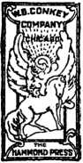To the King of Kings and Lord of Lords
IN THE INTEREST OF
CONSECRATED SAINTS, WAITING FOR THE ADOPTION, This Work is Dedicated
To the sacred memory of a wise and faithful servant of the most high God; and it is with a sincere hope and fervent prayer that it will be a great aid to all in reviving a Christian zeal, which, though painful to say, is gradually losing in “its first love” and eagerness to serve the Lord and His children, our Brethren.
DEDICATION
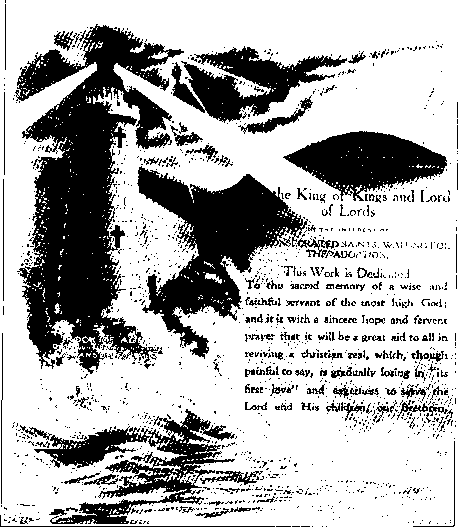He Stood Upon the Watch
P U B L I S H E R ’ S F O R E W O R D
On this 100th anniversary year of Pastor Charles Taze Russell’s death, a biography written by W. M. Wisdom is offered as a look back in time. This book was published in 1923. Beginning in 1912 the author served throughout the U.S. (though infrequently in the northwest and south central states) and from Ontario to Nova Scotia. In 1915 he was an elder in the New York Ecclesia. Some of his lessons appear in Bible Students’ Convention Reports from 1912-1916.
All biographies are written through the eyes of the author and not the living memories of the person himself. Some persons would prefer their histories were written differently or perhaps not at all. Characterizations are the preference of the writer. This author lived contemporaneously with Pastor Russell and had access to information, dates, places and events that may otherwise be lost to time and the memories of other generations. Praise and adulation may be considered as excessive or otherwise insufficient by some. Readers need to discern for themselves.
Rather than revising or writing a new history, this 1923 book is reproduced here and formatted with all the original text and features. All chapters begin on the same page numbers as the 1923 edition printed in Chicago. The text has been carefully compared and verified to the original. Due to type font differences, not all sentences or paragraphs begin and end at precisely the same location, yet they are close.
This work is commended for those sincerely searching those times and events which still mark another generation.
— 2016, Portland, Oregon
WHEN the news was flashed over the wire soon after Oct. 31st, 1916, “Pastor Russell is Dead,” the Truth Friends all over the world received the shock of their lives. Never did more unwelcome news reach loyal, loving Brethren; never, apparently, were there more heartaches; never more sorrow; never did more hot tears of grief flow from human eyes than when this sad news was received. The writer believes that this grief was genuine, sincere, that the sorrow was from the heart. The Funeral Services in the New York Temple, the gloominess of the Bethel Home, left their impress upon his heart and brain. Time can never efface that memory; the lesson learned has been enduring: “It is the Lord; let Him do what seemeth Him good.”
Since that date a cycle of seven years has been almost completed. With what sadness we note the change which a few short years have wrought in the attitude of so many of the dear Friends everywhere. The first glow of love is cooling to an alarming degree; devotion to the principles underlying the Divine Law are being ignored to a great extent, while a wave of unrighteousness is rapidly sweeping over the Church, threatening to drive the Bark of Faith on the Rock of Disaster.
For some time the writer has noted this growing tendency to lukewarmness, to indifference, to slackness amongst the Truth people; and while saddened by this knowledge, he saw no way by which he could aid in turning back the waves which he realized were rising higher and higher as time passed, though he sought in prayer with “tears and strong crying” the Lord’s guidance, this “seemed to tarry;” hence he “waited for it.”
Not from preference but from clearly marked Divine leadings in which his will was completely submerged into the will of The Head of The Church, he was finally impressed to undertake, under many disadvantages, the preparation and compilation of the matter for the Book now in your hands; and he might also add that, the Lord saw to it that he should have to face many discouraging experiences and surmount difficulties and overcome obstacles of which few knew and none could appreciate—but, “IT IS FINISHED.”
Both the Author and the Publisher would express regret that many imperfections have been revealed to their minds, yet for these they offer no excuses and would make no apologies—for no perfect thing could come out of an imperfect one; and if this Work does not offend some, then, according to Saint James, the Book would be Perfect, the Author Perfect, and the Publisher Perfect—all of which are most emphatically disclaimed. Nevertheless the Book does represent their best combined efforts.
Now, then, what was the motive that prompted to this enterprise? From the very beginning both the Author and the Publisher realized that some with a hypercritical cast of mind would impugn their motives; for there are always those who oppose everything wherein they are not the guiding spirits and have not the controlling hand; but here is the Book, look at it—yes, read it thoughtfully and see if you can find anything therein out of harmony with The Truth as we all received it through “that faithful and wise Servant.” If you can, then tell us frankly just wherein “we have come short.” Some, though not many, we are glad to say, have overlooked entirely the Scripture which saith, “He that answereth a matter before he heareth it, it is a folly and shame unto him.”
Again there are some who claim to recognize the subject of this Book as “that Servant,” while in reality they deny him, and make his writings in many respects of “none effect.” How many overlooked this sentiment, sound principle, as expressed by the one whose memory we cherish: “We should not think that we alone have the privilege of engaging in His Work; that we have patent rights on His work, and can hinder others from doing what they may be able to do and take pleasure in doing.” We have always respected this principle, and in the production of The Memoirs of the author of the statement quoted, we jointly feel that we have lived up to the Scriptural injunction of doing Good, “especially unto the (entire) Household of Faith.”
So our motive has been to do GOOD, as God has given us to understand what that means; therefore, we have no further explanation to make or apology to offer; merely pleading that we have earnestly and consistently striven to absorb the Truth and the spirit of the Truth which was so beautifully exemplified in the life of the subject of this book—our beloved Brother Russell, who labored so hard and earnestly to teach us how to walk as Christians should. God bless his Memory!
The Bible is THE BOOK of books in every sense; first, there is no other book like it in the world—for it is God’s Book or Message to the human family; second, it is a Book of books for the reason that it is made up of many books, or portions, by many writers—sixty-six divisions.
In a complete and connected sense, this Book, though containing the Great Author’s Wonderful Plan of the Ages, was sealed to human understanding until our Lord’s Parousia in 1874, when it was given Him to “loose the seals,” using a human instrument, “a chosen vessel,” for this purpose.
Charles Taze Russell was the one “chosen of God and faithful” to this end; so he, under the Lord’s guidance, gave us the “The Keys” to the Scriptures—and to all sincere Christians these “Keys” or Studies, have fulfilled the design of the author; for they have proved to be Helping Hands in the systematic study of the Bible. This Book—Memoirs—tells you something about how and under what difficulties “that Servant” attained the desired end—something of the discouragements he met and the obstacles he overcame.
To understand the Bible, then, it is necessary to have these “Helping Hands” to Bible Study; and to understand the author of these Studies in the Scriptures it is important to read and ponder well the revealments herein given pertaining to the Life, Works and Character of one of the greatest men the world has ever known.
The principle upon which the Memoirs was prepared and is issued is broad and comprehensive enough for all true Christians to stand upon; yet it is as narrow as the rules laid down for Christian conduct by our Lord and His Apostles.
To the true Christian we therefore need make no apology for the issuance of this Work; we have had from start to finish too many evidences of the Lord’s favor to doubt for a moment that He (not man) has guided in every step taken.
Manifestly, then, it is His wish that this Book of Memoirs of the Life, Works and Character of Charles Taze Russell should be placed in the hands of His Saints now and preserved for future generations.
May the blessings of the Lord go with the Book into the home of all who love the Lord and are striving to serve Him in sincerity and in truth.
The Author.
CHAPTER PAGE
A condensed History of the Beginning and Progression of the Harvest Work.
His Wonderful Speaking Eyes.
A Born Diplomat with a Penchant for Details.
His Education in Hebrew and in Greek.
Ransom and Restitution.
As he Taught He lived.
To Him Duty Was Pleasure.
Its Sanctifying Influence.
Great Newspaper Campaign
Also the Pyramid of Gizeh.
A Wonderful Meeting—Unusual Spectacle.
CHAPTER PAGE
A Wonder Unto Many
A Fabulous Sum Once Offered for His Counsel.
Pastoral Advice to the Church Everywhere.
Some Important Items.
Realized that His Hour Had Come.
Earthly Tabernacle Worn Out.
Be Thou Faithful Unto Death.
Jesus and the Two Walk to Emmaus.
Last Will and Testament of Charles Taze Russell.
The Laodicean Messenger
THE BOY—THE MAN—THE BIBLE STUDENT
Pastor Russell, the greatest expounder of Biblical truths since the days of Saint Paul, the twelfth and greatest of the Apostles of the Lamb, and the staunchest defender of “the faith once delivered to the saints” since Luther, was born Charles Taze Russell, at Pittsburgh, Pennsylvania, February 16, 1852, of consecrated parents who were of Scotch-Irish descent. The circumstances connected with his birth, together with the environment of his early life, no doubt had much to do with his subsequent course and usefulness in the Lord’s cause, as in the case of Samuel, who was given to the Lord before he was born (I Samuel 1:11); and of Saint Paul, who tells us he was chosen from his birth (Galatians 1:15). In private Pastor Russell admitted his belief that he had been chosen for the great work he had accomplished, as “that Servant,” from before his birth.
Having come of such parentage and being reared under the influence of a Christian home, he necessarily developed, at an early age, a mind that incited him to “feel after God,” a desire to KNOW Him in the true sense, and so to worship Him accordingly. Being, therefore, of a naturally reverential trend of mind he early showed a tendency to worship a GOD of LOVE; for his own heart, warm and loving, rebelled at the thought of revering a “God who would torture throughout eternity” His helpless creatures when they were sinners by heredity.
Hence, as he grew older and became more mature of thought, he began to see how discordant are the teachings of all the creeds of “Christendom”: that these were not only in sharp conflict among themselves but in many fundamentals are wholly irreconcilable with reason, therefore in violent opposition to a proper concept of a just, wise and loving God; such indeed as the Scriptures show our Heavenly Father to be.
Therefore, what was young Russell to believe? How could he determine assuredly which of these conflicting teachings was right and which was wrong? These questions continually intruded themselves upon his inquiring mind; but where to find satisfactory answers was the perplexity with which he was confronted. He reasoned, however, that there must be solutions to such problems and he resolved upon finding them. His struggles, his defeats and his final success are told in the succeeding chapters.
“Once in all history we meet a being who never did an injury, and never resented one done to him, never uttered an untruth, never practiced a deception, and never lost an opportunity of doing good; generous in the midst of the selfish, upright in the midst of the sensual, and wise far above the wisest of earth’s sages and prophets, loving and gentle, yet immovable, resolute; and whose illimitable meekness and patience never once forsook him in a vexatious, ungrateful and cruel world.”
A PASTOR IN THE MAKING
The strong resemblance between the portraits of Pastor Russell at sixty and Charles Taze at four is unusual, and the character lines indicating determination rather suggest the explanation for his subsequent independent evangelistic work.
Up to the age of fifteen he believed as gospel truth all and only such doctrines as had been taught him. To learn to understand doctrines at that period was very difficult, as the clergy usually discouraged individual Bible research, and the asking of questions on doctrines was considered equivalent to doubting, and “to doubt was to be damned.” The dissipation of this superstitious reverence and fear only awaited such time as he could attempt to defend by the Scriptures his particular sectarian views, and subsequent events justify the thought that Providence had decreed that at just this juncture young Russell should attempt to reclaim an infidel.
By skillful questions, which were unanswerable by either minister or layman from their sectarian standpoints and by the maneuvering of many seemingly paradoxical Scriptures, the infidel completely routed young Russell, who within a few months became an admitted skeptic. Here, as in nearly every similar case, the Bible was discarded together with the doctrines of the creeds. Few indeed under such circumstances study the Scriptures to see whether they have been properly interpreted, and up to this time Charles Taze Russell was no exception.
As he desired to learn the truth concerning the hereafter, the next few years were devoted to the investigation of the claims of the leading oriental religions, all of which he found to be unworthy of credence, hence we see him arriving at manhood’s estate with a mind unsatisfied, a mind which, despite all efforts to the contrary, was still subject to its occasional bad hours on account of its “first impression” on the eternal torment theory.
At twenty-one Mr. Russell was possessed of much knowledge and voluminous data on religion as believed and practiced in all parts of the world. Apparently these were to become of no value to himself or others, because of large business responsibilities that were placed upon him at this time. Days grew into weeks, and weeks into months, and he found less and less time to devote to theological research, and the solace for heart and head so diligently sought for seemed as remote as ever. The question that here confronted him was, “Shall I try longer to find the truth on religion? Or, shall I smother the hope of finding it and strive for fame and fortune among the financial and commercial captains of the time?” The latter he was about to do, but fortunately he decided first to search the Scriptures from a skeptic’s standpoint, for its own answer on hell-fire and brimstone.
Amazed at the harmonious testimony, proving an unexpected but satisfactory answer, he undertook systematic Bible research and was brought to a complete confidence in the Bible as being inspired by an all-wise, powerful, just and loving Creator, worthy of adoration and worship. Thus a sure anchor for a fainting hope was found, and an honest, truthseeking heart was made glad.
An obituary writer had this to say of this grand man of God:
“In 1877 Pastor Russell called a meeting of all the ministers of Allegheny and Pittsburgh, showed them the Scriptures which indicated our Lord’s presence and urged them to investigate and proclaim the message. All the ministers of two cities were present and all of the ministers of the two cities refused to believe. In the same year he gave up his secular work to devote his entire time and fortune to the work indicated in the Scriptures as incident to the close of the Gospel Age and the change of Dispensations impending. As a means of determining whether his purposed course was in harmony with the Scriptures, and also as a means of demonstrating his own sincerity, he decided to test the Lord’s approval, as follows:
“(1) Devote his life to the cause; (2) invest his private fortune (about $350,000.00) in the promulgation of the work; (3) prohibit collection at all meetings; (4) depend on unsolicited contributions (which must be wholly voluntary) to continue the work after his own fortune was exhausted. Furthermore, in 1881 there were distributed free 1,400,000 copies of Food for Thinking Christians to the Protestant Churches in the United States, Canada and Great Britain, on three consecutive Sundays, by A. D. T. messenger boys.” This was said to have been at a cost of $40,000.00.
A MAN OF ENDURING FAME
A well known writer, a student of history and of the Bible, therefore a man who always has a clear, firm grasp of every subject that he handles, a few years ago wrote the following clear and comprehensive analysis of Charles Taze Russell, the same appearing in print:
“Many have long regarded Charles Taze Russell as their leader and friend, while others with open minds have come to be enlightened as to the claims of this man to enduring fame. Silently these ask, What monument has he reared to cause his memory to live in our admiration?
“Charles Taze Russell enjoyed the immeasurable advantages of good birth. His parents were Christian people of marked intelligence and refinement. His father was a successful retail merchant of Allegheny, Pennsylvania. His mother died when he was about eight years of age, leaving him to be thereafter the boon companion of his father. As such, he learned to keep the rooms in which the father and son lived, and developed the traits of neatness and precision so marked in after life.
“He began at a very early age to take great interest in his father’s store. At the age of fifteen, so great was his sagacity as a wholesale buyer of merchandise that his father often sent him alone on purchasing tours to Philadelphia. A young man of such commercial talents would not long be working for others. He soon started a store of his own; this rapidly increased to a chain of stores. He was one of the pioneers in the development of the marvelously successful idea of the chain-stores, an idea which has since enriched many men.
“It soon enriched him, and before he was well past the year of his majority, he was worth a quarter million dollars. His wealth increased by leaps and bounds. This was in the early seventies of the nineteenth century. Rockefeller was then unknown, nationally. The known millionaires of that day could have been counted on one’s fingers.
“Had he pursued the allurements of fortune with the same ability which he displayed at the start, with the same sagacity for management and leadership which he manifested at every turn of his life to the day of his death; had he stayed in the race for commercial supremacy, no one acquainted with the facts could reasonably doubt that he would have been the rival of John D. Rockefeller for the title as earth’s richest man. This was his legitimate prospect at the age of less than twenty-five.
“Jesus said to His disciples, ‘It is easier for a camel to go through the eye of a needle, than for a rich man to enter into the Kingdom of God.’ If this saying of the Son of God was true, it was true of Charles Taze Russell. This test came to him; and it was not an easy one, for it tested every fiber of his being. He had been a student of the Bible from his youth up; but he was not satisfied. Taught by the Calvinistic doctrine to believe in an austere God who showed partiality by electing a few to be saved, and dooming the remainder to eternal suffering, while he read in the Bible that God is full of loving kindness and tender mercy; hence he was confused and distressed. As a result at eighteen he became an infidel. Still he yearned to know God; but the creeds of Christendom only confused him.
“He once again turned his attention to the Bible, searching the Scriptures for himself, divesting his mind of all prejudice. God rewarded the earnest endeavors of this brilliant, independent mind by illuminating His Word to him. The young man began to see what all the theologians of the ages had failed to see—the harmony of the Word of God and the beauty of His Plan.
“At the age of twenty-four this young Bible Student became aware of the time features of the Scriptures. It was at this age that he began to see that the end of the Gospel Dispensation would be marked by a great world war. It was the unfolding of these features of the truth that swept his earthly goods onto the altar of burnt-offering and took him out into the campaign of preaching which ended only with his death.
“At the age of twenty he had independently discovered the truth that the Ransom Sacrifice of Jesus Christ on Calvary, as a substitute for Adam, and all his race, is the foundation stone of Christianity. In the same early year of his life he discovered the importance of the Restitution Doctrine. Thus he was enabled to proclaim these two great truths for a period of forty-four years. It was indeed remarkable that so young a man should see for himself truths so long unappreciated by the scholars of the centuries. These truths led logically to others, and made it possible for him to become recognized as the only theologian of the Gospel Age who had been able to demonstrate the harmony of the Bible with itself.”
“Unto the Angel of the Church of the Laodiceans write: These things, saith the Amen, the faithful and true Witness” —and the angel did as commanded, and long since “reported the matter.”
“Who then is a faithful and wise servant, whom his Lord hath made ruler over his household, to give them meat in due season.
“Blessed is that servant, whom his lord when he cometh shall find so doing.
“Verily I say unto you, That he shall make him ruler over all his goods.”—Matthew 24:45,46,47.
“Close your eyes for a moment to the scenes of misery and woe, degradation and sorrow, that yet prevail on account of sin, and picture before your mental vision the glory of the perfect earth! Not a stain of sin mars the harmony and peace of a perfect society; not a bitter thought, not an unkind look or word; love welling up from every heart meets a kindred response in every other heart, and benevolence marks every act. There sickness shall be no more; not an ache, nor a pain, nor any evidence of decay—not even the fear of such things.
“Think of all the pictures of comparative health and beauty of human form and feature that you have ever seen, and know that perfect humanity will be of still surpassing loveliness. The inward purity and mental and moral perfection will stamp and glorify every radiant countenance. Such will earth’s society be; and weeping bereaved ones will have their tears all wiped away, when thus they realize the resurrection work complete.”—Pastor Russell.
CHAPTER II
A Condensed History of the Beginning and Progression of the Harvest Work
The following condensed though comprehensive history of the way in which the Lord opened up to the mind of young Russell the truth respecting His Plan, as emphatically shown in the Scriptures, together with some of the discouragements which beset him and the difficulties he had to overcome in his earnest endeavors to follow the Lord’s leadings, to the accomplishment of the Divine purpose, are best told in Pastor Russell’s own words:
“Many are the inquiries relative to the truths presented in the Scripture Studies and Watch Tower, as to whence they came and how they developed to their present symmetrical and beautiful proportions: Were they the results of visions? Did God in any supernatural way grant the solution of these hitherto mysteries of His plan? Are the writers more than ordinary beings? Do they claim any supernatural wisdom or power? Or how comes this revelation of God’s truth?
“No, dear Friends, I claim nothing of superiority, nor of supernatural power, dignity or authority; nor do I desire to exalt myself in the estimation of my brethren of the Household of Faith, except in the sense the Master urged, saying, ‘Let him who would be great among you be your servant.’ And my position among men of the world and of the nominal church is certainly far from exalted, being ‘everywhere evil spoken against.’ I am fully contented, however, to wait for exaltation until the Lord’s due time. In the Apostle’s words, I therefore answer, ‘Why look ye upon us, as though by our power we had done these things?’ We also are men of like passions with yourselves—of like infirmities and frailties, earnestly striving, by overcoming many besetments, discouragements, etc., to press along the line toward the mark of the prize of our high calling, and claiming only, as a faithful student of the Word of God, to be an index finger, as I have previously expressed it, to help you trace for yourselves, on the Sacred Page, the Wonderful Plan of God—no less wonderful to me, I assure you, than to you, dearly beloved sharers of my faith and joy.
“No, the truths I present, as God’s mouthpiece, were not revealed in visions or dreams, nor by God’s audible voice, nor all at once, but gradually, especially since 1870 and particularly since 1880. Neither is this clear unfolding of truth due to human ingenuity or acuteness of perception, but to the simple fact that God’s due time has come; and if I did not speak, and no other agent could be found the very stones would cry out.
“The following history is given, not merely because I have been urged to give a review of God’s leadings in the path of light, but especially because I believe it to be needful that the truth be modestly told, that misapprehensions and prejudicial misstatements may be disarmed, and that our readers may see how hitherto the Lord has helped and guided. In so far as the names and views of others who may be associated with this history are concerned, I shall endeavor to bring forward only such points as are necessary to an understanding of our position and of the Lord’s leadings. Nor can I name all the little points of Divine Favor in which faith was tested, prayers were answered, etc., remembering that our Master and the early Church left no such example of boasting faith, but rather admonished otherwise, saying, ‘Hast thou faith? have it to thyself!’ Some of the most precious experiences of faith and prayer are those which are too sacred for public display.
“I will not go back to tell how the light began to break through the clouds of prejudice and superstition which enveloped the world under Papacy’s rule in the Dark Ages. The Reformation movement, or rather movements, from then until now, have all done their share in bringing light out of darkness. Let me here confine myself to the consideration of the Harvest Truths as set forth in the Studies in the Scriptures and the Watch Tower.
How Young Russell Fell a Prey to Infidelity
“Let me begin the narrative at the year 1868, when the Editor, having been a consecrated child of God for some years, and a member of the Congregational Church and of the Young Men’s Christian Association, began to be shaken in faith regarding many long accepted doctrines. Brought up a Presbyterian, and indoctrinated from the catechism and being naturally of an inquiring mind, I fell a ready prey to the logic of infidelity as soon as I began to think for myself. And in my endeavor to be faithful I was trying to convert an infidel, and I did not convert him, but while trying to do so, I got enough new thoughts into my head to give me a lot of trouble, for finally I became an infidel, and was about a year in that condition. I still worshipped God, but did not recognize the Bible; not knowing whether Christ were my redeemer or not. Nevertheless I went continually to God in prayer and asked for guidance and finally, in God’s providence, I came to see the clear light on the Divine Word.
“But that which at first threatened to be the utter shipwreck of faith in God and the Bible, was, under God’s providence, overruled for good, and merely wrecked my confidence in human creeds and systems of misinterpretation of the Bible. Gradually I was led to see that though each of the creeds contained some elements of truth, they were, on the whole, misleading and contradictory of God’s Word. Among other things, I stumbled upon Adventism. Seemingly by accident, one evening I dropped into a dusty, dingy hall, where I had heard religious services were held, to see if the handful who met there had anything more sensible to offer than the creeds of the great churches. There, for the first time, I heard something of the views of Second Adventists, the preacher being Mr. Jonas Wendell, long since deceased. Thus I confess my indebtedness to Adventists, as well as to other denominations. Although his Scripture exposition was not entirely clear, and though it was very far from what we now rejoice in, it was sufficient, under God, to re-establish my wavering faith in the Divine inspiration of the Bible and to show that the records of the Apostles and Prophets are indissolubly linked together. What I heard sent me to my Bible to study with more zeal and care than ever before, and I shall ever thank the Lord for that leading, for though Adventism helped me to no single truth, it helped me greatly in the unlearning of errors and thus prepared me for the truth.
Plan Began to Unfold
“I soon began to see that we were living somewhere near the close of the Gospel Age and near the time when the Lord had declared that the wise, the watching ones of His children, should understand—come to a clear knowledge of His Plan. At this time, myself and a few other truth-seekers in Pittsburgh, Pennsylvania, formed a class for Bible study and from 1870 to 1875 was a time of constant growth in grace and love of God and His Word. We came to see something of the love of God how He had made provision for all mankind; how all must be awakened from the tomb in order that God’s loving plan might be testified to them; and how all who exercise faith in Christ’s Redemption Work and render obedience in harmony with the knowledge of God’s will which they will then receive, shall, through Christ’s merit, be brought into full harmony with God, and be granted everlasting life. This we saw to be Restitution Work foretold in Acts 3:21.
“But though seeing that the Church was called to joint heirship with the Lord in the Millennial Kingdom, up to that time we had failed to see clearly the great distinction between the reward of the Church, now on trial, and the reward of the faithful of the world, after its trial, at the close of the Millennial Age: that the reward of the former is to be the glory of the Spirit Nature, the Divine; while that of the latter is to be perfection of the human nature, once enjoyed in Eden by their progenitor, Adam.
A Clear View of the Ransom
“However, we were then merely getting the general outline of God’s plan, and unlearning many long-cherished errors, the time for a clear discernment of the minutiae having not yet fully come. And here I should and do gratefully mention assistance rendered by Brothers George Stetson and George Storrs, the latter the Editor of the Bible Examiner, both now deceased. The study of the Word of God with these dear brethren led, step by step, into greener pastures and brighter hopes for the world, though it was not until 1872, when I gained a clearer view of our Lord’s Work, as our ransom price, that I found the strength and foundation of all hope of restitution to be in that doctrine. Up to that time, when I read the testimony that all in their graves should come forth etc., I yet doubted the full provision— whether it should be understood to include idiots or infants who had died without reaching any degree of understanding, beings to whom the present life and its experiences would seem to be of little or no advantage. But when in 1872 I came to examine the subject of restitution from the standpoint of the Ransom Price given by our Lord Jesus for Adam, and consequently for all lost in Adam, it settled the matter of restitution completely and gave me the fullest assurance that ALL must come forth from their graves and be brought to a clear knowledge of the truth and to a full opportunity to gain everlasting life in Christ.
“Thus passed the years 1869 to 1872. The years following, to 1876, were years of continued growth in grace and knowledge on the part of the handful of Bible Students with whom I met in Allegheny. We progressed from our first crude and indefinite ideas of restitution to a clearer understanding of the details; but God’s due time for revealing the clear light had not yet come.
“During this time, too, we came to recognize the difference between our Lord as ‘the man who gave Himself,’ and as the Lord who would come again, a Spirit Being. We saw that Spirit-beings can be present, and yet invisible to men. We greatly grieved at the error of Second Adventists, who were expecting Christ in the flesh, and teaching that the world and all in it, except Second Adventists, would be burned up in 1873 or 1874; their time settings and disappointments and crude ideas generally as to the object and manner of His coming, brought more or less reproach upon us and upon all who longed for and proclaimed His coming Kingdom.
Importance of Time Prophecies
“It was about January 1, 1876, that my attention was specially drawn to the subject of prophetic time, as it relates to these doctrines and hopes. It came about in this way: I received a paper called The Herald of the Morning, sent by its editor, Mr. N. H. Barbour. When I opened it I at once identified it with Adventism from the picture on its first cover, and examined it with curiosity to see what time they would next set for the burning up of the world. But judge my surprise and gratification when I learned from its contents that its editor was beginning to get his eyes open on the subjects which for some years had so greatly rejoiced our hearts in Allegheny—that the object of our Lord’s return is not to destroy, but to bless all the families of the earth; and that His coming would be thief-like and not in the flesh, but as a Spirit Being, invisible to men; and that the gathering of His Church and the separation of the wheat from the tares would progress in the end of this age without the world’s being aware of it.
“I rejoiced to find others coming to the same advanced position, but was astonished to find the statement very cautiously set forth that the editor believed the prophecies to indicate that the Lord was already present in the world (unseen and invisible) and that the Harvest Work of gathering the tares was already due; and that this view was warranted by the time prophecies, which but a few months before he supposed had failed.
“Here was a new thought; could it be that the Time Prophecies, which I had so long despised because of their misuse by Adventists, were really meant to indicate when the Lord would be invisibly present to set up His Kingdom—a thing which I saw could be known in no other way? It seemed, to say the least, a very reasonable thing that the Lord would inform His people on the subject—especially as He had promised that He would not leave them in darkness with the world and that although the day of the Lord would come upon all others as a thief in the night, it should not be so to the watching, earnest Saints.
“I recalled certain arguments used by my friend, Jonas Wendell and other Adventists to prove that 1873 would witness the burning of the world, etc.—the chronology of the world showing that 6,000 years from Adam ended with the beginning of 1873, and other arguments drawn from the Scriptures and supposed to coincide. Could it be that these time arguments, which I had passed by as unworthy of attention, really contained an important truth which they had misapplied?
“Anxious to learn from any quarter whatever God had to teach, I at once wrote to Mr. Barbour, informing him of my harmony on other points and desiring to know particulars why and upon what Scriptural evidences he held that Christ’s presence and the Harvesting of the Gospel Age dated from the Autumn of 1874.
“The answer showed that my surmise had been correct, namely, that the time prophecies—arguments—chronology, etc., were the same as used by Second Adventists in 1873, and explained how Mr. Barbour and Mr. J. H. Paton, of Michigan, a co-worker with him, had been regular Second Adventists up to that time; and that when the date 1874 had passed without the world being burned up, and without their seeing Christ in the flesh, they were for a time dumbfounded. They had examined the time prophecies, which seemingly passed unfulfilled, and had been unable to find any flaw, and had begun to wonder whether the time was right and their expectations wrong; whether the views of restitution and blessings to the world, which myself and others were teaching, might not be the things to look for. It seems that not long after their 1874 disappointment, a reader of the Herald of the Morning, who had a copy of the Diaglott, noticed something in it which he thought peculiar—that in Matthew 24:27,37,39, the word which in our Common Version is rendered coming is translated presence. This was the clue; and, following it, they had been led through prophetic time toward proper views regarding the object and manner of our Lord’s return. I, on the contrary, was led first to proper views of the object and manner of our Lord’s return, and then to an examination of the time, indicated in God’s Word. Thus God leads His children from different starting points of truth; but when the heart is earnest and trustful the result must be to draw all such together.
“But there were no books or other publications at that time setting forth the time prophecies as then understood; so I paid Mr. Barbour’s expenses to come to see me at Philadelphia, to show me fully and Scripturally, if he could, that the prophecies indicated 1874 as the date at which the Lord’s presence and the harvest began. This was in the summer of 1876. He came and the evidence satisfied me. Being a person of positive convictions and fully consecrated to the Lord, I at once saw that the special times in which we were living have an important bearing upon our work and duty as Christ’s disciples; that being in the time of the Harvest the Harvest Work should be done; and that present truth was the sickle by which the Lord would have us to do a gathering and reaping work everywhere among His children.
Beginning of the Harvest Work
“I inquired of Mr. Barbour as to what was being done by him and the Herald. He replied that nothing was being done; that the readers of the Herald, being disappointed Adventists, had nearly all lost interest and stopped their subscriptions; and that thus, with money exhausted, the Herald might be said to be practically suspended. I said to him that instead of feeling discouraged and giving up the work since with his newly found light on restitution (for when we first met he had much to learn from me on the fullness of restitution, based upon the sufficiency of the Ransom given for all, as I had much to learn from him concerning time), he should rather feel that now he had some good tidings to preach, such as he never had before, and that his zeal should be correspondingly increased. At the same time, the knowledge of the fact that we were already in the time of the Harvest gave to me an impetus to spread the truth such as I never had before. I, therefore, resolved upon a vigorous campaign for the truth.
“So I determined to curtail my business cares and give my time, as well as my means, to the great Harvest Work. Accordingly, I sent Mr. Barbour back to his home, with money and instructions to prepare in concise book-form the good tidings, so far as then understood, including the time features, while I closed out my Philadelphia business, preparatory to engaging in the work, as I afterwards did, traveling and preaching.
“This little book of 196 pages thus prepared was entitled ‘The Three Worlds’; and as I was enabled to give some time and thought to its preparation, it was issued by us both jointly, both names appearing on its title page, though it was mainly written by Mr. Barbour. While this was not the first book to teach a measure of restitution, nor the first to treat upon the time prophecies, it was, I believe, the first to combine the idea of restitution with time prophecy. From the sale of this book and from my purse, our traveling expenses, etc., were met. After a time I conceived of adding another harvest laborer to the force, so sent for Mr. Paton, who promptly responded and whose traveling expenses were met in the same manner.
“But noticing how quickly some people forget what they have heard, it soon became evident that while the meetings were useful in awakening interest, a monthly journal was needed to hold and develop that interest. It seemed, therefore, to be the Lord’s indication that one of our number should settle somewhere and begin again the regular issuing of the Herald of the Morning. I suggested that Mr. Barbour do this, as he had had experience as a typesetter and therefore could do it the most economically, while Mr. Paton and I would continue to travel and contribute to its columns, as we should find opportunity. To the objection that the type had been sold and that the few subscriptions which would come in would not, for a long time, make the journal self-sustaining, I replied that I would supply the money for purchasing the type, etc., and leave a few hundred dollars in the bank, subject to Mr. Barbour’s check, and that he should manage it as economically as possible, while Mr. Paton and I continued to travel. This, which seemed to be the Lord’s will in the matter, was therefore done.
New Adherents to Working Force
“It was after this, while on a tour of the New England States, that I met Mr. A. P. Adams, a young Methodist minister, who became deeply interested, accepting the message heartily during the week that I preached to his congregation. Subsequently, I introduced him to little gatherings of interested ones in neighboring towns, and assisted otherwise, as I could, rejoicing in another one who, with study, would soon be a co-laborer in the
Harvest field. About this time, too, I was much encouraged by the accession of Mr. A. D. Jones, then a clerk in my employ in Pittsburgh, who was a young man of activity and promise, one who soon developed into an active and appreciative co-laborer in the Harvest work. Mr. Jones ran well for a time, but ambition or something eventually made utter shipwreck of his faith, leaving us a painful illustration of the wisdom of the Apostle’s words, ‘My brethren, be not many of you teachers, knowing that we shall have the severer judgment.’
“Thus far all had gone smoothly and onward: we had been greatly blessed with the truth, but not specially tested in our love and fidelity to it. But the Spring of 1878, the parallel in time to our Lord’s crucifixion, and of His statement to Peter, ‘Satan hath desired to have you, that he might sift you as wheat,’ the sifting began which has Continued Ever Since; and which must, sooner or later, test every one who receives the light of present truth. For this fire shall try every man’s work, of what sort it is—whether he has built his faith flimsily of wood, hay and stubble, instead of valuable stones of God’s revealed truth; or whether he has built it upon the shifting sands of human theories, or upon the solid rock, the Ransom, the only foundation which God has provided.
“They who build upon that Rock shall be safe personally, even though they have built up an illogical faith, which the fire and shaking of this day of trial will overthrow and utterly consume, but they who build upon any other foundation, whether they use good or bad materials, are sure of complete wreckage.
“The object of this trial and sifting evidently is to select all whose heart-desires are unselfish, who are fully and unreservedly consecrated to the Lord, who are anxious to have the Lord’s will done, and whose confidence in His wisdom, His way and His word is so great that they refuse to be led away from the Lord’s Word, either by the sophistries of others, or by plans and ideas of their own. These, in the sifting time, will be strengthened and shall increase their joy in the Lord and their knowledge of His plans, even while their faith is being tested by the falling into error of thousands on every hand.
First Harvest Sifting Began
“The sifting began thus: Regarding Saint Paul’s statement, ‘We shall not all sleep, but we shall all be changed in a moment, in the twinkling of an eye,’ etc., we still held the idea which Adventists, and indeed all Christians hold, that at some time the living saints would be suddenly and miraculously caught away bodily, thenceforth to be forever with the Lord. And now our acquaintance with the time prophecies led us to expect this translation of the saints at the point of time in this age parallel to the Lord’s resurrection; for many of the parallelisms between the Jewish and the Christian Dispensations were already seen by us, and formed one of the features of the little book—The Three Worlds.
“We did not then see, as we do now, that the date, 1878, marked the date for the beginning of the establishment of the Kingdom of God, by the glorification of all who already slept in Christ (that is, the dead in Him), and the ‘change’ which Saint Paul mentions is to occur in the moment of death to all the class described, from that date onward through the Harvest period, until all the living members of the ‘body of Christ’ shall have been changed to glorious Spirit beings. When at that date (1878) nothing occurred, which we could see, a re-examination showed me that our mistake lay in expecting to see all the living saints changed at once, and without dying, an erroneous view shared in by the whole nominal Church, and one which we had not yet observed or discarded. Our present clear view was the result of the examination thus started.
“I soon saw that the Apostle’s words, ‘We shall not all sleep,’ that the word sleep was not synonymous with die, though generally so understood; but, on the contrary, the expression sleep, here used, represents unconsciousness; and that the Apostle wished us to understand, that from a certain time in the Lord’s presence, His saints, though they would die like other men, would not remain for any time unconscious, but in the moment of dying would be changed and would receive the Spirit bodies promised. Throughout this Gospel Age death of the Lord’s children has been followed by unconsciousness—‘sleep.’ This continued true of all who ‘fell asleep in Jesus’ up to the time when He took the office of King, which we have shown was in 1878 (Volume 2, Studies in the Scriptures, pages 218-219).
“Not only did the King at that time ‘awaken in His likeness’ all the members of His body, the Church, who slept, but for the same reason (the time for establishing His Kingdom having come) it is no longer necessary that the ‘feet,’ or last remaining members should go into ‘sleep’ or unconsciousness. On the contrary, each now, as he finishes his course, faithful unto death, will at once receive the Crown of Life, and being changed in a moment, in the twinkling of an eye, can not be said to sleep, or to be unconscious at all. Here then, 1878 is applicable, ‘Blessed are the dead who die in the Lord.’ So this re-examination showed further light upon the pathway and became a great cause for encouragement, as evidencing the Lord’s continued leading.
“But while I was thus helped to clearer views and brighter hopes, and while I diligently endeavored to help others, the Spring of 1878 proved far from a blessing to Mr. Barbour and to many under his influence. Rejecting the plain, simple solution presented above, Mr. Barbour seemed to feel that he must of necessity get up something new to divert attention from the failure of the living saints to be caught away en masse.
“But, alas! how dangerous it is for any man to feel too much responsibility and attempt to force new light. To our painful surprise, Mr. Barbour wrote an article for the Herald denying the doctrine of the Atonement; denying that the death of Christ was the ransom-price of Adam and his race, saying that the death of Christ was no more a settlement of the penalty of man’s sins than would the sticking of a pin through a fly and causing it suffering and death, be considered by an earthly parent as a just settlement for the misdemeanor in his child.
“I was astonished, supposing Mr. Barbour had a clearer understanding of the work of Christ, as our sin-offering, our willing Redeemer, who gladly co-operating in the Divine plan, gave Himself as the Ransom or corresponding price to meet the penalty on Adam in order that Adam and all his posterity might in due time go free from sin and death. A totally different thing indeed was the willing, intelligent, loving offering of our Redeemer, according to the plan devised and revealed by the infinite wisdom, from the miserable caricature of it offered in the above illustration. I had either given Mr. Barbour credit for clearer views than he had ever had, or else he was deliberately taking off and casting away the ‘wedding garment’ of Christ’s Righteousness; the latter was the only conclusion left, for he afterward stated that he had previously recognized the death of Christ as man’s ransom-price.
“Immediately I wrote an article for the Herald in contradiction of the error, showing the necessity that one die for all—the just for the unjust; that Christ fulfilled all this as it has been written; and that consequently God could be just and forgive and release the sinner from the penalty He had justly imposed. I also wrote to Mr. Paton, calling attention to the fundamental character of the doctrine assailed, and pointing out how the time and circumstances all correspond with the parable of the one who took off the wedding garment when just about to partake of the wedding supper. He replied that he had not seen the ransom feature in so strong a light before; that Mr. Barbour had a strong, dogmatic way of putting things, which had for the time overbalanced him. I urged that, seeing now the importance of the doctrine of the Ransom, he also write an article for the Herald, which, in no uncertain tone, would give also his witness for the precious blood of Christ. This he did. These articles appeared in the issues of the Herald from July to December, 1878.
“It now became clear to me that the Lord would no longer have me assist financially, or to be in any way identified with, anything which cast any influence in opposition to the fundamental principle of our holy Christian religion; and I, therefore, after a more careful though unavailing effort to reclaim the erring, withdrew entirely from the Herald of the Morning, and from further fellowship with Mr. Barbour. But a mere withdrawal I felt was not sufficient to show my continued loyalty to our Lord and Redeemer, whose cause had thus been violently assailed by one in a position to lead the sheep astray—and in that position, too, very largely by my individual assistance and encouragement when I believed him to be, in all sincerity, true to the Lord. I, therefore, understood it to be the Lord’s will that I should start another journal in which the standard of the cross should be lifted high, the doctrine of the Ransom defended, and the good tidings of great joy should be proclaimed as extensively as possible.
Zion’s Watch Tower, First Issue July, 1879
“Acting upon this leading of the Lord, I gave up traveling, and in July, 1879, the first number of Zion’s Watch Tower and Herald of Christ’s Presence made its appearance. From the first, it has been a special advocate of the ‘Ransom for all’ and by the grace of God, we hope this will ever be so.
“For a time we had a most painful experience: the readers of the Tower and of the Herald were the same, and from the time the former started and the supply of funds from this quarter for the Herald ceased, Mr. Barbour not only withdrew from the bank the money deposited by me and treated all he had in his possession as his own, but poured upon the Editor of The Tower the vilest of personal abuse in order to prevent The Tower and the doctrine of the Ransom from having due influence upon its readers. This, of course, caused a division, as such things always do. The personal abuse, being regarded by some as true, had its intended effect of biasing the judgments of many on the subject of the Ransom; and many turned from us.
“But the Lord continued His favor, which I esteem of more value than the favor of the whole world. It was at this time that Mr. Adams espoused the views of Mr. Barbour, and likewise forsook the doctrine of the Ransom. And true to our interpretation of the parable of the Wedding garment, as given at the time, Mr. Barbour and Mr. Adams, having cast off the wedding garment of Christ’s Righteousness, went out of the light into the outer darkness of the world on the subject once so clearly seen—namely, the time and manner of our Lord’s presence; and since then they have been expecting Christ in the flesh every Spring or Fall, and twisting the prophecies accordingly.
“During part of this ordeal, or we might truly call it, battle, we had the earnest co-operation of Mr. Paton, who, up to the Summer of 1881, was an appreciated co-laborer and defendant of the doctrine of coming blessings through Christ, based upon the ‘Ransom for all’ given at Calvary. The book, The Three Worlds, having been for some time out of print, it seemed as if either another edition of that, or else a new book covering the same features, should be gotten out. Mr. Paton agreed to get it ready for the press and Mr. Jones offered to pay all the expenses incident to its printing and binding and to give Mr. Paton as many copies of the book as he could sell, as remuneration for his time spent in preparing the matter, provided I would agree to advertise it liberally and gratuitously in The Tower—well knowing that there would be demand for it if I should recommend it, and that his outlay would be sure to return with a profit. I not only agreed to do this, but contributed to Mr. Paton’s personal expense in connection with the publishing, as well as paid part of the printer’s bill at his solicitation.
The Day Dawn
“In the end, I alone was at any financial loss in connection with the book called Day Dawn the writer and the publisher both being gainers financially, while I did all the introducing by repeated advertisements. We need to give these particulars because of certain one sided and only partial statements of facts and misrepresentations, which have recently been published and circulated in tract form by Mr. Paton, who is also now an advocate of that ‘other gospel’ of which the cross of Christ is not the center, and which denies that He ‘bought us with His own precious blood.’ Mr. Paton has since published another book, which though called by the same name, as the one we introduced, being on another and false foundation, I cannot recommend, but which I consider misleading sophistry, tending to undermine the whole structure of the Christian system, yet retaining a sufficiency of the truths which we once held in common to make it palatable and dangerous to all not rooted and grounded upon the Ransom-rock.
“The false foundation which it presents is the old heathen doctrine of evolution revamped, which not only denies the fall of man, but as a consequence, all necessity for a redeemer. It claims, on the contrary, that not by redemption and restitution to a lost estate, but by progressive evolution or development man has risen and is still to rise from the lower condition in which he was created until, by his own good works, he ultimately reaches the Divine Nature. It claims that our Lord Himself was a degraded and imperfect man, whose work on earth was to crucify a carnal nature, which, it claims, He possessed; and thus to show all men how to crucify their carnal or sinful propensities.
“And here, we remark, that the darkness and degradation which came upon the world in its fallen, cast-off condition, and which was only intensified by Papacy’s priest-craft during the Dark Ages, when contrasted with the light of intelligence, which God is now letting in on the world, have gradually led men to esteem present intelligence as merely a part of a process of evolution. This view, though quite incorrect, is, nevertheless, the occasion of the predicted great falling away from the faith of the Bible during the Harvest period. And few Christian people seem to be well enough grounded in the truth to be able to withstand this trial of the evil day, in which many will fall away, while only the few will stand. For this cause we use great plainness of speech.
“The little history of the way in which Mr. Paton came to turn from us and from the ransom, to oppose that which he once clearly saw and advocated, is important, as it became the occasion for another sifting or testing of the Watch Tower readers, by that time a greater number; because Mr. Paton had been a respected brother and co-worker with us, and because as a traveling representative of the Watch Tower and its doctrines, his expenses being met in part by subscriptions and renewals, as well as by money from me, he was personally known to a larger number of the readers than was the Editor of The Tower.
“In the year 1881, Mr. Barbour, still publishing the Herald and still endeavoring to overthrow the Doctrine of the Ransom, finding that on a preaching tour I had used a diagram of the Tabernacle to illustrate how Christ’s sacrifice was typified in the sacrifices of the typical Israel, wrote an article on the Atonement, in which he undertook to show that the sacrifices of the Day of Atonement typified almost anything else than what they do typify. I could readily see through the fallacy of his presentations, which made of the bullock a type of one thing in one verse and another thing in each verse in which it was mentioned; and so, too, with the goat. But I well knew that the people in general are not close reasoners and that, with the cares of life upon them, they are too apt to accept a seeming interpretation without a critical examination of the words of the Scripture and the context.
Struggling for Light
“I thought the matter over. I examined the sixteenth chapter of Leviticus, but while seeing the inconsistency and error of Mr. Barbour’s interpretation, I could only confess that I did not understand it and could not give a connected interpretation, which fit all the details so plainly stated, and all of which must have a particular meaning. What could I do? Those reading the Herald as well as The Tower would probably be mislead, if not helped out of the difficulty; and to merely say that the Herald’s interpretation was inconsistent with itself and, therefore, a misinterpretation, would be misunderstood. Many would suppose I opposed that view from a spirit of rivalry; for there are always people with whom everything resolves itself into personality, rivalry and party spirit; and such cannot understand others who take a higher and nobler view and who think always and only of the truth, regardless of persons.
“I went to the Lord with this, as with every trial, and told Him just how it seemed to me, how anxious I felt for His dear ‘sheep’ who, having their appetites sharpened by some truth, were by their very hunger exposed to Satan’s deceptions. I told Him I realized that He is the Shepherd, and not I, but that I knew also that He would be pleased at my interest in the sheep and my desire to be His mouthpiece to declare the truth, the way and the life to them; that I felt deeply impressed that if the time had come for the permission of false views to deceive the unworthy, it must also be His due time to have the truth on the subject made clear, that the worthy ones might be enabled to stand and not fall from the truth. Believing that the due time had come for the correct understanding of the Jewish sacrifices, which, in a general way, all Christians concede were typical of ‘better sacrifices’; and that the Lord, therefore, would grant the insight as soon as I got into the attitude of heart best suited to receive the light. I prayed with confidence that if His due time had come, and if He were willing to use me as His instrument to declare the message to His dear family, that I might be able to rid my heart and mind of any prejudice that might stand in the way and be led of His Spirit into the proper understanding of the truth.
Shadows of the Tabernacle Revealed
“Believing that the Lord would answer my prayer affirmatively, I went into my study the next morning prepared to study and to write. The forenoon I spent in scrutinizing the text and every other Scripture likely to shed light upon it, especially the Epistle of the Hebrews, and in looking to the Lord for wisdom and guidance; but no solution of the difficult passages came. The afternoon and evening were similarly spent, and all the next day. Everything else was neglected, and I wondered why the Lord had kept me so long; but on the third day, near noon, the whole matter came to me as clear as the noonday sun, so clear and convincing and so harmonious with the whole tenor of the Scriptures that I could not question its correctness; and no one has ever yet been able to find a flaw in it. This has been published in several editions in booklet form under the title, ‘Tabernacle Shadows of the Better Sacrifices.’
“Then I knew why the Lord had led me so slowly and cautiously. I needed a special preparation of heart for the full appreciation of all it contained; and I was all the more sure it was not of my own wisdom; for if of my own, why had it not come at once?
“I found that the understanding of that subject was bound to have a wide influence upon all our hopes and views of all truth, not that it overlooked old truths or contradicted them, but, on the contrary, set them all in order and harmony and straightened out little knots and twists. For instance, the doctrine of ‘Justification by Faith’ had always been more or less confused in my mind, as it is in every mind, with the doctrine of ‘Sanctification,’ which calls for sacrifice and works. This was all made clear and plain at once; for the types showed that we all, as sinners, needed, first of all, Christ’s ransom sacrifice, that we appropriate its merits (justification which God grants) to ourselves by faith, that thus we are justified—reckoned free from sin. The type showed, too, that it is only after being thus cleansed in God’s sight—by an acceptance of Christ’s finished work as our ransom-sacrifice—that God is willing to accept us as joint-sacrificers with Christ, so that if faithful unto death, following in His footsteps, we should be granted the favor of joint heirship with Him.
“Here I first saw that the great privilege of becoming joint-heirs with Christ and partakers with Him of the Divine nature was confined exclusively to those who would share with Him in self-sacrifice in the service of the Truth. And here, too, I saw for the first time that our Lord was the first of these sacrifices in the Sin-Offering, consequently, that none of God’s servants, the prophets, who lived and died before Christ, were priests after this order, nor sharers in sacrifice with Him, even though some of them were stoned, others sawn asunder, and others slain with the sword, for the cause of God; that though they would receive a good and great reward, they would belong to a separate class and order from those called to sacrifice and joint heirship with Christ on and since Pentecost.
“Here, too, I first saw that ‘the acceptable day of the Lord’ signifies this Gospel Age—the time during which He will accept the sacrifice of any who come unto God through Christ, the Great Sin-Offering: that when this acceptable day ends, the reward of joint-heirship with Christ and prospect of change to the Divine nature ends. And that when this great day of sacrifice, the Gospel Age, the real day of Atonement, has closed, when all the members of the body of Christ have participated with Him in the sacrifice of their rights as justified men, and been glorified, then the blessings will begin to come to the world—the Millennial blessings purchased for men by their Redeemer, according to the grace of God.
Distinction in Natures Recognized
“This first brought a clear recognition of the distinction in natures: of what constitutes human nature; what constitutes the angelic nature; and what constitutes the Divine nature. (See Volume 1, Chapter 10.) And whereas we formerly used the term Restitution in a general way to mean some sort of blessed change; but now, under the clearer light, we began to see that the great work of restitution could only mean what the word implies, a restoration of that which was lost—a restoration of the original condition from which man fell.
“Then I saw that God’s plan, when carried out, would NOT bring all His creatures to the one level of the Divine nature, but that He purposed to have an order of creatures called angels, who, though perfect, would always be of a different order, or nature, from the Divine nature; and He likewise purposed to have a race of beings of the human nature, of whom Adam was a sample or pattern, and whose future earthly home, Paradise, Eden, was a sample or pattern. I also saw that God purposed that Christ and His joint-sacrificers and joint-heirs are to be God’s instrument for blessing the fallen race and restoring them to the condition of perfection enjoyed by Adam in Eden, a condition which God said was ‘very good,’ and an image of Himself.
“And these joint-heirs with Christ, I saw, were to be highly exalted to a nature higher than restored and perfected manhood, higher, too, than the angelic nature; even to be partakers of the Divine nature. When all these things so unexpectedly shone out so brightly and clearly, I did not wonder that the Lord gave me several days of waiting and preparation for the blessing, and to Him I rendered praise and thanks. All my faintness of heart and fear of the bad effects of the wrong view fled before this evidence of the Lord’s leadings in the pathway that ‘shines more and more unto the perfect day.’ I saw at once that these new developments would probably prove a stumbling block to some, as well as a great blessing to others who were ready for them. Instead, therefore, of publishing this in the next Tower, I determined to present the matter privately to the more prominent brethren, remembering Saint Paul’s course in a similar matter, as recorded in Galatians 2:2.
“Accordingly, I sent invitations and the money necessary for traveling expenses to four of the more prominent brethren, requesting a conference. Mr. Paton, of Michigan, was one of the four, and the only one who rejected the first rays of light. Nor could he find any flaw with the exegesis, though urged, as all were, to state anything which might seem inconsistent, or quote any passages of Scripture thought to be in conflict. But there was none; and every question more fully demonstrated the strength of the position.
Advancing Light Rejected
“I, therefore, urged that that which was beyond the criticism of those most familiar with the plan of God, must be the truth, and ought to be confessed and taught at any cost, and especially when it arranged and ordered all the other features of the truth so beautifully. I pointed out, too, how necessary it is to a logical holding of the Ransom, to see first what this showed; namely, the distinction of natures; that our Lord left a higher nature and took a lower nature, when He was made flesh, and that the object in that change of nature was, that He might, as a man, a perfect man, give Himself as a Ransom for the first perfect man, Adam, and thus redeem Adam, and all lost in him.
“I also showed how, as a reward for this great work, He was given the Divine nature in His resurrection, a nature that is still higher than the glorious one He had left, when He became a man. But either Mr. Paton’s mental vision or heart was weak, for he never took the step; and before long he, too, forsook the doctrine of the Ransom. Yet he still used the word ‘Ransom,’ while denying the idea conveyed by the word; nor can he give the word any other definition, or otherwise dispute the correctness of the meaning which I attach to it, and which may be found in any English dictionary, and it is true to the significance of the Greek word which it translates, anti-lutron, a price to correspond.
“Notwithstanding our best endeavors to save him he drifted farther and farther away, until I was obliged to refuse his articles for The Tower, for the same reason that obliged me to longer refuse to spend the Lord’s money entrusted to me to assist Mr. Barbour, to spread the same pernicious theory.
“It was about this time that Mr. Jones informed me that the copies of the book, Day Dawn, which I had purchased, were all that were left; and, announcing it so that no more orders might come for it to The Tower Office, I took occasion to promise Millennial Dawn, which should present the Plan of the Ages in the clearer, more orderly way made possible by the new light shed upon every feature of it by the lessons from the Tabernacle. About this time Mr. Paton decided to publish another book under the name Day-Dawn, revised to harmonize with his changed views, which ignored the Ransom, ignored Justification, and the need of either and taught, that all men will be everlastingly saved, not in any sense as a result of any sacrifice for their sins by Christ, but as the result of each one’s crucifying sin in himself—the law under which the Jews tried to commend themselves to God but which justified none. Many and severe were the calumnies heaped upon me because I exposed this change, told that the original book was out of print and the new book was on a different foundation from the book of the same name, which I had commended.
“During this time I was busied by an immense work known to many of you: the issue and circulation of over 1,400,000 copies of two booklets, entitled Food for Thinking Christians and Tabernacle Teachings, whose united matter was about the same as that of Dawn, Volume 1. Besides this I was flooded with thousands of joyous and joy-giving letters, from those who had received and were reading the booklets thus distributed, and asking questions, and for more reading matter. To add to our throng, financial complications came; and thus for four years I was hindered from fulfilling my promise of Millennial Dawn.
Seventh Volume Promised
“Nor is our promise of the complete set yet fulfilled; for although Six Volumes are now (1910) issued, a Seventh on Revelation and Ezekiel is still future—delayed by the growth of the general work, doubtless in accord with the Lord’s due time. But during those four years I struggled through an immense amount of labor and many drawbacks; but all cheerfully undergone for the sake of the Lord and His Saints, each year hoping to be able to gather the necessary hours to complete the first volume of Millennial Dawn.
“Some who may have The Three Worlds or the Old edition of Day Dawn would perhaps like to know my present view of them, whether I still think them suitable books to loan to truth-seekers. To this I reply, Certainly Not! Because the very immature views of God’s truth therein presented fall far short of what we now see to be God’s wonderful plan. Things which are now as clear as noonday, were then cloudy and mixed. The distinctions between the perfect human nature, to which the obedient of the world will be restored during the Millennial Age, and the Divine nature to which the little flock, the sacrificing elect of the Gospel Age, are soon to be exalted, were then unnoticed. All that is now so clear, was then blurred, mixed and indistinct. Neither had we then seen the steps or planes now shown upon the ‘Chart of the Ages,’ which have assisted so many to distinguish between Justification and Sanctification and to determine their present standing and relationship to God.
“Once I was much less careful about what I circulated or commended, but I am learning every day to be more careful as to what sort of food I put before any of the Lord’s hungry sheep. The Lord has taught me that it is a responsible matter to be a teacher. Even Food for Thinking Christians, now also out of print, I no longer commend, because it is less systematic and therefore less clear than later publications.
“Another chapter in our experience needs to be told, as it marks another shaking and sifting. Mr. A. D. Jones proposed to start a paper on the same lines as the Watch Tower, to republish some of the simpler features of God’s plan and to be a sort of missionary and primary teacher. Knowing him to be clear on the subject of the Ransom, I bade him God speed and introduced a copy of his paper, Zion’s Day Star, to our nearly ten thousand readers, only, as it soon proved, to stumble some of them into rank infidelity and others into the rejection of the Ransom; for though the Day Star for a few months steered a straight course, and maintained the same position as The Tower with reference to the Ransom, and so for the same reason it refused the no-ransom articles sent for its columns by Mr. Paton; yet within one year it repudiated Christ’s atoning sacrifice, and within another year it had gone boldly into infidelity and totally repudiated all the rest of the Bible, as well as those portions which teach the fall of Adam and the ransom therefrom in Christ.
“All this meant another strain, another sifting, another cutting loose of friends, who erroneously supposed that our criticism of false doctrines was prompted by a spirit of rivalry and who did not so soon see whither his teachings were drifting, nor how great the importance of holding fast the first principles of the doctrine of Christ—how Christ died for our sins and rose again for our justification.”
From a photo of a child of four years, I can give but little, and that in a general way only. I will first say, young Russell has the Three Temperaments evenly blended, which is in his favor to start life with; the picture shows him to be decidedly above the average; his head being well developed in every part, with fine organism, and abundance of real courage, energy and true independence of character, and is evidently cut out for a leader in life. His physiognomy clearly shows that he is of an inquiring mind, anxious to analyze whatever he sees so as to know the component parts of the interior as well as the exterior, so as to know all about things in general; is inclined to ask perplexing questions, on subjects as well as articles; curiosity big.
AGE: 4. PROF. C. A. HEWES.
Future Possibilities Shown at Age Four
Pastor C. T. Russell, at the age of four years, impressively foreshadows his later character and life. The facial expression is crowded with future possibilities, as if the child foreknew the seriousness of its future work. We have never seen a child’s face and head so indicative of mental maturity and character.
From the ear opening to the top of head is very high and full, indicative of strong religious organs and spiritual trend of mind. The organs of conscientiousness, hope, veneration and spirituality are so large as to compel a religious life. Then firmness and benevolence being equally as large would determine such an one to a sacrificial life in behalf of humanity.
Very large human nature is in evidence, which enables one to discern character and motives, having large faculties of agreeableness and veneration. They make for affability, deference and courtliness. Very large literary faculties which cross the central forehead are strongly in evidence and likewise the perceptive faculties which are some lower and just above the eyes.
Language being also large, such an one would naturally become a speaker and writer on religious subjects, making it the paramount object of life. The side head is very full, indicating executive ability, thoroughness, and large practical business ability. The physiognomy shows much independence, force of character, and a spirit to stand alone if needs be, discernible in both the eyes and peculiarly shaped mouth.
PROF. EDMUND G. WALTERS.
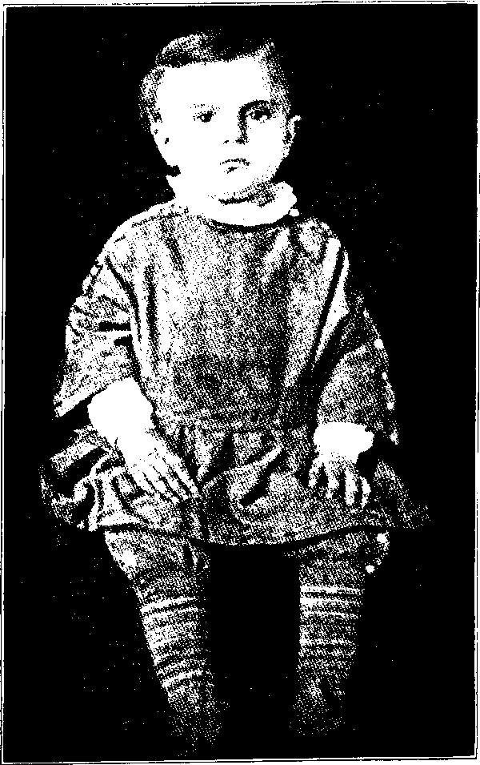His Wonder Speaking Eyes
To give anything like a satisfactory pen picture of this man of many sided qualities and amazing personality, is an undertaking of no mean proportions; hence it is with temerity that the writer approaches the subject at all, even though having had for many years an opportunity to study him at close range and from different angles. It is the writer’s confident belief that every one in Present Truth today—and this sketch is written primarily for such—will be pleased to have brought to his mental vision some such picture, though imperfect it must be; still it may prove refreshing to those who knew him personally; and possibly inspiring to those who did not; while having an altogether elevating and stimulating influence upon the finer emotions of all. The picture is at his closing years.
Pastor Russell was about five feet and eleven inches tall, weighing usually about one hundred and eighty-five pounds, apparently without an ounce of superfluous flesh on his body.
His hair and beard were a beautiful white, the former he wore rather long—down to his coat collar. His skin was like alabaster for whiteness, and for smoothness and freshness, like that of a child. You never touched a softer, more velvetlike hand, nor one which at the same time could give a firmer and more friendly grip, while the sensation resulting therefrom was electrifying. But his eyes—what shall we say of them? The poet’s lines would seem to most fittingly express the proper thought:
“Lo! he turns and looks upon me.
With those wonder speaking eyes, Vain my soul essays to answer,
I am lost in sweet surprise.
Truly his were “wonder-speaking eyes” and surely every one who ever met their glance at close range must have appreciated this fact. When those “wonder-speaking” eyes were fastened on you and you met their penetrating glance, it seemed as if they were piercing your body, and being riveted on the other side. There were many wonderful things about the personality of this wonderful man, but nothing more wonderful than his “wonderful eyes.” The descriptive pen of a dozen Dickens could not adequately describe them. Their color? Any one who would attempt to describe satisfactorily the color of a chameleon to a dozen different persons, who had seen one of these little animals under different lights and from different angles, would have an impossible task on his hands, for a chameleon is all colors, according to the light, and angle from which it is viewed! No matter what their color, they were the most piercing eyes I have ever seen, while at the same time the most kindly, gentle and loving, and love inspiring. Yes, “wonder-speaking eyes” indeed!
His carriage and general bearing are also worthy of some note. Without question he was the most graceful man on his feet I have ever seen. He moved about with the grace of a Chesterfield, minus the air of self-consciousness which marks the purely superficial. Even this sight was a pleasure to the eye: whether on the platform or off, it was just the same. The way he used to come into the Bethel dining-room, all the “family” being seated, bowing gracefully and with a cheery “Good morning all,” turning to the right and to the left, and gliding between the tables and turning the corners with the grace of a nymph, was mental picture once seen could never be entirely forgotten, even if by some ignored. As he thus entered and took his accustomed seat at the head of the table in the center of this great dining hall, a solemn silence would settle down upon the room, but this came not from fear of the man, but from reverential respect and affectionate love for the “head of the house of God.” He was respectful to all, and so commanded respect from all with whom he came in contact. This was because he was a true Christian. Therefore, he shed about him an air of sanctity, which could be felt if not described. Truly he was a man of God in the strictest sense.
A little reminiscence may be of interest here. Soon after the Watch Tower Bible &Tract Society moved its headquarters from Pittsburgh to Brooklyn, and at the time Pastor Russell was holding a series of public meetings at the Academy of Music in the latter city, a rather unusual incident occurred. These meetings were largely advertised, so practically everybody in this great city had an opportunity to know about them. Before I recite this incident, let me say by way of explanation that, character is one thing; reputation quite another. Character is what a man really is; reputation is what people think him to be, based principally upon what is said of him. The Episcopalians above all others are very straight-laced people, as the writer has had good opportunity for knowing, and so are very particular about whom they meet on social terms, in whose company they may be seen, and what public functions they attend.
So like many others, no doubt, a lady of the Episcopalian faith knew of these lectures and had a great desire to go and hear Pastor Russell, and thus determine for herself what his doctrines were, just what he thought, besides satisfying her curiosity as to what he looked like—whether he looked like a very bad man, but she found her Episcopalian predilections were too strong to be set aside for a mere desire, so finally she dismissed the matter from her mind as “impossible.” Having thus settled the matter in her mind, once and for all, as she supposed, one Sunday found her out for her accustomed walk in the afternoon. Without any premeditation her walk on this occasion took her past the Academy of Music, where Brother Russell was to speak that day. The hour for the lecture was approaching, so the doors were open. The temptation was too great—she could not resist. Pastor Russell always believed in giving to the sisters some part in the Lord’s Work—indeed, wherever this was consistent. Hence they were ushering at these lectures. This “stranger” was met at the door by a dear old Colporteur Sister, long since passed to her reward, who took the timid and “conscience stricken” one in charge and ushered her to one of the choicest seats, for both hearing and seeing, for the usher-sister had already been informed of the “stranger’s” dilemma.
At the close of the lecture our Colporteur Sister sought out the stiff and staid Episcopalian and questioned her as to how she had enjoyed what she had heard. Here again formality had to give way to the reality of an honest heart’s emotions, for
Sister Colporteur found Miss Episcopalian enraptured, delighted beyond measure. She said that when Pastor Russell stepped out upon the platform with the air of a true patriarch, she almost gasped as she looked upon that noble, benevolent, gracious face. Then quickly added, “I do not see how anyone could look upon that face without realizing that he is a man of God: I felt just like going up and throwing my arms around him.” The stiffness of formality had broken under the weight of the reality of facts. Thus prejudice gave way to admiration, as must always be the case when the heart is honest. As it was said of our Lord Jesus, so in a secondary sense could it be said of Pastor Russell, “Behold! the man.”
It is a noteworthy fact that wherever this man of such majestic appearance went, his native dignity and grace attracted attention—whether on the streets or in the hotel lobbies, people were seen turning around to behold the man. He had a face and bearing that were peculiarly his own. Even when past the three-score margin, his figure was still as straight as an arrow, figuratively speaking; his carriage was dignified without stiffness or superficiality of any kind, while his step had the elasticity of a normal youth of sixteen. He was young in mind to the last of his earthly experiences, for his temperament was jovial, thus he was safeguarded from becoming gloomy, melancholic. Besides, his love for God and faith in His overruling providences, forbade his ever becoming heavy-hearted or dejected in spirits, because of the weight of his cross, which, as those who knew his inner life best, realized, was heavy enough to have crushed to the earth a man of less faith, endurance and strength of purpose.
Prof. David Dall’s Character Sketch
Prof. Dall, a noted Mental Scientist of the British Institute of Mental Science, for his own pleasure made the following character sketch of Pastor Russell, at Motherwell, Scotland, October 30, 1911:
“I have much pleasure in giving a sketch of the genial and fatherly head and physiognomy of Pastor Russell. He is just one of those men whose appearance, intelligence, suavity, wit, goodness of heart and soundness of head do credit to his profession. Well up in years, he has a youthful and sympathetic nature; fatherly and benign in council, moral and spiritual in his influence. In religion his day is broadened by the effulgent light of Bible Study. His temperamental development is very even. If there is a predominance of either, it is found in the motive, which supports an intense energy of mind that can not dream life away, but must be practical.
“I find the head of Pastor Russell to be a large one, and the brain gifted with an uncommon degree of activity. A full basilar region is accompanied by the powerful endowment of the moral, intellectual and spiritual natures. His physiognomy gives a large face, a large, broad nose with ample nostrils, large mouth and chin—all that the face can indicate of a powerful constitution he has. The animal-vital nature, as a whole, is amply developed; his head also is broad, which indicates general force of mind, strength of feeling and stamina of character. His eyes are large and stand out fully, which indicates a communicative disposition.
“Benevolence is a leading faculty, manifesting itself in liberality of sentiment to all mankind, deep desire for the welfare of others, combining warmth of sympathy with rare simplicity of purpose. His perceptive region, as a whole, is exceedingly active, and endowment rendering his range of observation extraordinary; while his memory of faces and forms is marvelous, as is his power to analyze, compare and draw rapid inferences.
“Here is a mind able to steel itself against difficulty or attack, yet full of gentleness and amiability. An intense sense of duty, together with the conviction that each moment is precious and of important value, seems to pervade his entire nature. In him dwells the soul of a patient, charitable, but equally determined reformer—a practical mind, seeing far ahead, possessing large stores of philanthropy, discernment, judgment, talent and efficiency, giving him gifts as a teacher, yet also prompting him to natural desire after self-improvement.
“His natural refinement, taste and imagination, with large language, qualify him to express himself in a free, easy, graceful style, enabling him to present many unpleasant truths in a pleasing and acceptable manner.
“As a preacher of the Gospel, his services have found a wide acceptance. As a lecturer he is especially successful. He is not a violent or enthusiastic orator. He is an effective, quiet, illustrative speaker—arresting and riveting the attention of children as well as adults. The young find in him a guide, a philosopher and friend—the old a sage counselor whose thoughts are tinctured by experience and perfected by principle.
“Under such a mentor souls grow and minds expand, observation becomes keener and the perceptions sharper. He has great magnetic force, is full of electricity, and consequently he imparts life and vivacity to every word he utters, whether in public or private.
“Pastor Russell impresses and controls the minds of his hearers without making an effort to do so, for his utterances are like sparks that kindle a fire in the souls of those who listen to him.”
Who Am I?
I am the fountain of all business. I am the fount of all prosperity. I am the parent, most times, of genius.
I am the salt that gives life its savor.
I have laid the foundation of every fortune in America from Rockefeller’s down.
I must be loved before I can bestow my greatest blessings and achieve my greatest ends. Loved, I make life sweet and purposeful and fruitful.
I can do more to advance a youth than his own parents, be they ever so rich.
Fools hate me, wise men love me.
I am represented in every loaf of bread that comes from the oven, in every train that crosses the continent, in every ship that steams over the ocean, in every newspaper that comes from the press.
I am the mother of democracy.
All progress springs from me.
The man who is bad friends with me can never get very far—and stay there.
The man who is good friends with me can go—who can tell how far?
WHO am I? WHAT am I?
I AM WORK.
CHAPTER IV
A Born Diplomat With a Penchant for Details
Brother Russell was a born diplomat in the highest sense. He could parry any thrust of an opponent, sidestep any question he did not wish to answer directly, or administer a reproof without giving offense to the most sensitive, if such were sincere. He possessed that rare quality, if not genius, of saying, “No” when you desired “Yes,” and causing you to feel almost thankful in your heart, at least fully resigned, because of the genial, pleasing way he had of doing and saying displeasing or undesirable things. While this resulted largely from the fact of his native tact in handling and dealing with others, nevertheless the outstanding fact of his powerful mind, quick intellect, and the over-powering Spirit of the Lord, which was always in evidence, gave every fully consecrated child of the Lord unbounded confidence in his judgment.
Pastor Russell had a penchant for details. No proposition, no matter how monumental it may have appeared to others, seemed to arouse any doubts or create any misgivings in his mind; and no detail seemed too small for his mind to deal with. For illustration: Once after returning from a European tour he was going through the “Bethel,” as was his custom, and while passing through the storeroom, his attention was arrested by a large quantity of potatoes there; turning to the Superintendent of the Home, he said: “Brother, how much did you pay for those potatoes?” “So much,” he was told. “You paid too much,” that wise steward commented. How did he know what potatoes were worth in New York, especially after an absence of three or four months in Europe? He had a mind for details, and so could grasp them quickly, whether pertaining to the Scriptures or temporal matters. Line upon line, precept upon precept, here a little and there a little, is the Scriptural proposition. Brother Russell overlooked absolutely nothing—all things seemed to have been uncovered before his eyes. This is the way he once wrote about small things: “Trifles of life have an important bearing upon our characters. Whoever learns to be conscientious about everything is being properly exercised by the lessons of life. One who would take an umbrella for an hour without permission has not sufficient principle to be trusted with larger things.” Again, “Where there is little honesty, there is little character.”
Who Is Too Big to Observe Little Things?
“Whoever is careless and inattentive to little things is not fit for the great honor the Lord has in store for the wholly faithful; He is watching us closely but with a kindly eye; He wishes us to succeed; He gives us the necessary instruction and guidance. When we practice carefulness in little things, we are thereby developing our character along right lines. If we fail to do this, we shall never become fit to be entrusted with important matters. Let us each make this a personal question: What kind of a character am I developing as the days go by?”
—Pastor Russell.
Another striking characteristic of this remarkable man of God was the fact of his being such a stickler for promptness in all things, no matter how small and seemingly insignificant it may have seemed to be. He required the members of the Bethel family to be at their posts of duty right on time, to begin work at the sound of the gong, and then to quit as promptly when the gong sounded for that purpose. He was teaching promptness, you see. In order to give the workers relaxation in the middle of the forenoons and afternoons, all the workers would stand and sing a verse of some appropriate hymn—and this was done “right on time.” Then every member who desired to eat at the first table would be required to be in his or her seat before Brother Russell entered, which he would do on the dot—the tick of the watch.
He seemed to be annoyed beyond measure by the friends coming late to the meetings. He did not hesitate to say such habits showed a lack of consideration for others and was most harmful to any who indulged in them. They tend to break the line of thought of the speaker and always distract the attention of the audience generally. For several Sundays after the Society’s Headquarters had been moved from Pittsburgh (Allegheny) to Brooklyn, Brother Russell spoke to this Congregation. Some of the friends had the habit of straggling into the afternoon meeting from five to twenty minutes late. He put up with this for about three Sundays without comment, until finally one Sunday when the clock stood at twenty minutes past the hour, and some straggled in, he turned to the ushers and gave them orders to close the doors and lock them in the future at three o’clock. His contention being it was just as easy for them to start early as late—it was only a habit some people have of being continually behind time, and a very bad habit too. Those doors were never locked, but the tardy ones learned an important lesson. You know it is the “foolish” ones who came after the “door was shut.” That is what the parable teaches. We would not expect the Lord to stand at the Door to His Presence waiting our own convenience to step in. Certainly not! Should we not look well to this matter?
Loving Kindness His Outstanding Greatness
We recall how our Lord said, “God is kind to the unthankful.” Kindness, we therefore see, is a Godlike quality, and to whatever extent anyone has this quality to that extent he has God-likeness in his heart; so likewise must the opposite of this statement be true. Our Lord said there are only two Masters, and that no one could serve both acceptably. Then again we have the great apostle’s injunction, “Be ye kind, one to another.” Again he shows that, “Love is kind;” necessarily, then, where there is much love there must be much kindness, while the reverse of this statement must be correspondingly true. Since, then, there are but two masters, as our Lord Himself stated, and two spirits, as Saint Paul mentions, every one should find it a comparatively easy matter to locate himself; but he should be extremely careful how he attempts to locate some one else—and this he will do in the exact ratio that he is serving the Good Master, has His Spirit.
Pastor Russell was the kindest, the most gentle, the most considerate human being I ever knew: therefore the most God-like, the most like the dear Master. Thus he was a “living Epistle” of our beloved Lord. No matter how uncouth one may be by reason of heredity, lack of educational advantages or owing to environments, kindness and gentleness should be marked characteristics of the developed Christian character under all circumstances. Rudeness might result from lack of early training, but remember always, “Out of the heart the mouth speaketh.” Bitter, unkind words would show, therefore, that there was a wrong heart condition; and this must be gotten rid of, or the Crown will never be won. “The Lord will not accept undeveloped sprouts for the Kingdom. He is seeking for sturdy trees of righteousness,” so stated “that wise Servant,” who further said:
“We sometimes see Christians who have little knowledge of worldly things and yet have deep spirituality, very deeply rooted and grounded in Christ, a clear insight into the deep things of God, and altogether with a rich Christian experience. Perhaps their knowledge of the usages of polite society is less than that of many others of their brethren; they may have had fewer opportunities to learn these amenities; and yet their ripe attainments in Christ may shame some of the more outwardly correct according to the social standards of the world. How careful we should be that our standards of judgment and our estimate of character are fashioned after the pattern of the Master; that we look beneath the surface; that we note rather the real, the essential traits, than any outward peculiarities of the flesh, which in the sight of the Lord should have no weight in deciding the quality of character.”—Pastor Russell.
The quickness and power of his intellect, together with the justness and firmness of his convictions, when once formed, were the factors which gave to those who knew him best, unbounded confidence in his decisions, for you remember how Saint James declares that a man lacking in firmness of decision is much like a ship at sea without a rudder—cast about by every wave and wind that blows. He willed to do right, and keen perception and an educated conscience enabled him to determine what was right, just, proper; then no human influence could sway him from the course he was convinced would be pleasing to the Lord. If he changed from such convictions, then the Lord Himself would have to make it plain by His Word or providences.
The activity, alertness and quickness of his intellect gave him that power of vision and perception termed intuition, enabling him usually to arrive at satisfactory conclusions without the exertion of inductive reasoning, tedious, laborious thought. An incident to point this conclusion. Quite a number of years before this man of wonders “finished his course with joy,” the writer had occasion to seek an interview with him for counsel. It was a very complex matter, involving many conflicting details, yet withal of vital importance. Usually interviews were limited to five to ten minutes. My problems were troublesome, perplexing, if not perilous. I sought the interview and asked for an hour, honestly believing it would take that long to place the matter before his mind in a comprehensive way, so that he could advise me intelligently. He set the time several days in advance when I should come to his study. In the meantime I got all the facts and details clearly in my mind and in the orderly way I thought they should be presented before him. I had them in order like the A B C’s, so could recite my “little piece” clearly and without loss of time, for I knew his time, as the servant of the Lord, was precious, hence none should be unnecessarily consumed. The time arrived and I was on time to the minute, for I well knew that anyone who kept Brother Russell waiting for even a minute beyond the appointed time would be told that he had “lost his chance,” hence he would have to try again. This was one way he had of teaching us practical lessons along the line of the necessity or importance of promptness.
I had supposed it would take me fully fifteen minutes to place the matter before his mind, in order that he could properly advise me what to do. But I had not been talking more than three or four minutes at the most, laying down the foundation, as it were, preparatory to erecting the superstructure, Brother Russell the while sitting before me with his eyes closed, when suddenly he interrupted my speech by saying, “I see it all, Brother; it is thus and so, thus and so.” Yes, it was truly “thus and so,” as he had stated, though I had told him not a single fact. I had merely laid down the premises and he jumped over all the intervening facts and circumstances and lit right on the point I supposed it would take me at least fifteen minutes in which to lead his mind up to. In ten minutes I was out of his study with a satisfactory solution, for he promptly said, “I think if I were in your place, I would do thus and so.” That was all I wished to know. Therefore, I quickly received the counsel and comfort I sought. Hence it was his quickness of intellect, ability to form decisions without tedious and laborious study that enabled him to accomplish much more than one with a less active brain could possibly have done.
Solved Difficult Problems with Ease
Here allow me to state that it is quite impossible for one to avoid reading from personal acquaintance when one was intimately acquainted with another, as I was with Pastor Russell. For the time being I will try to disabuse my mind, so far as is possible, that I ever met him, then proceed to do the best I can under the circumstances.
From the ages of four to twenty-seven years there has been a marvelous change in the physiognomy of Charles Taze Russell. At twenty-seven I find the Mental Temperament predominating, giving a very quick, active brain, with fine organism, which is of first importance. He is a natural linguist; has fine memory of names and words; consequently is a fluent speaker and writer—in brief, is a natural orator of rare ability. Is logical and sound reasoner; can solve difficult problems with ease; requires facts as evidence, or foundation principles, from which to draw conclusions; possesses extra fine business abilities; can determine the intrinsic value of things at a glance, so can decide quickly and will act promptly. This would secure success as a rule. The moral faculties are in the ascendancy and are apt to be the ruling element of his nature.
Expectancy of Spiritual Unveiling
Pastor C. T. Russell, at twenty-seven, presents to us an open spiritual countenance, as of one who has long since left the world behind with all its allurements, and mentally dwells on an expectancy of spiritual unveiling. There is latency there yet to be developed and tested.
The perceptive faculties located across the lower forehead and above the eyes, are becoming strongly in evidence. This in conjunction with the “three-story” top head, indicative of very large religious organs, gives the owner a spiritual discerning eye and an interpretative talent of a high order. His very large individuality gives the power of very close discernment and discrimination, especially as regards the shades and meaning of words and in their relative bearing to the text and context under consideration. Very little ever escaped his keen observation. Large language, order, color, computation and constructive ability are in evidence. His memory of forms, designs and faces, indicated by the great width between the eyes, is extraordinary. The peculiarly shaped mouth, which is large, implies a very generous heart and spirit utterly devoid of selfishness. The forehead at this age of twenty-seven has become somewhat sloping and higher, indicating more the interpreter, observer, classifier rather than the originator and logician. Having the motivemental temperament in refinement, and coupled with large intuitive powers, spiritual truths would dawn upon such a mind rather than by a labored process of reasoning.
PROF. EDMUND G. WALTERS.
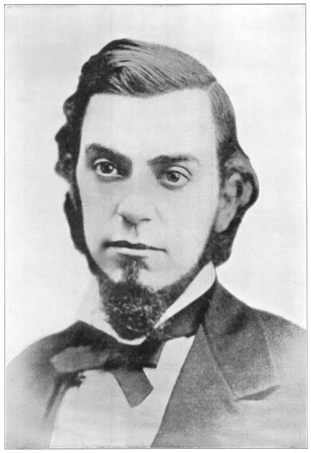BLANK SIDE
CHAPTER V
His Education in Hebrew and Greek —Thoroughness as a Bible Student
Many of his opponents have been very severe in their criticism of Pastor Russell, because he was not a Hebrew and Greek Scholar, hence are very much like the Pharisees of Our Lord’s day who said of Him, “How hath this man learned letters?” Neither was a College graduate, you see! This class also perceived that the “Apostles were ignorant and unlearned men,” therefore were not qualified to teach, to instruct those “wise in their own conceits.” Let us quote again Pastor Russell’s own words, as they relate to this point:
“As respects my education in Greek and Hebrew, let me say, Not only do I not claim very special knowledge of either language, but I claim that not one minister in a thousand is either a Greek or Hebrew Scholar. To be able to spell out a few Greek words is of no earthly value. Nor is it necessary longer to study these languages in order to have a knowledge of the Bible. Our Presbyterian friends have gotten out at great cost Young’s Analytical Hebrew, Chaldaic, Greek and English LexiconConcordance, which any one may procure. And our Methodist friends have issued a similar work, Strong’s Exhaustive Concordance and Lexicon. And there is still an older one entitled, Englishman’s Hebrew, Chaldaic, Greek and English Lexicon and Concordance. Additionally, Liddell and Scotts’ Greek Lexicon is a standard authority. By the use of these works scholarly information respecting the original text of the Bible is obtainable. I have all four of these works and have used them faithfully. Very few College Professors even, would risk giving a critical translation of any text of Scripture without consulting these very works of reference, which are standard. Additionally, I remind you of the many translations of the Bible now extant—all of them very good. I have all of these and find them useful in comparison and study of any text—one sometimes giving a thought which another does not. The other day, for curiosity’s sake, I counted the Bibles in different translations, in my study, and found that I have thirty-two.”
The whole nominal church system, without respect to the particular denomination, is honey-combed with error in practically all essentials respecting forms, as well as doctrines. For instance, they all err in respect to the matter of ordination of ministers, and their general belief is that those in higher-up positions must assemble themselves together in a sort of hierarchal cabal and after much flamboyant flourish proceed to the solemn hocus-pocus of transforming the subject of their mystical maneuvers from what he was—a layman in the Church—to what he is not, a “reverend,” or perchance a “doctor of divinity,” meaning, I presume, that Divinity is sick and needs “doctoring,” consequently these gentlemen are qualified for the service; as a result we have the “Reverend Doctor So and So.” Strange is the fact that these “wise” gentlemen cannot see how absurd is their position respecting “ordination.” The following lines gives the logic of the situation clearly:
“So easily are Bishops made
By man or woman’s whim;
Wesley his hands on Coke hath laid
But who laid hands on him?”
Thus did this hocus-pocus, in Wesley’s day, enable him to “create” something superior to or greater than himself. As a result this man-made “ordination” has come to be generally recognized and practiced by all the systems of Christendom—so-called. The delusion, therefore, has fastened itself so firmly on the minds of all—popes, priests and preachers as well as the laity—that without some such legerdemain no one should be regarded as qualified of God to expound His Divine Word of Truth, even though the Lord had absolutely nothing to do with the trickery these gentlemen thus practice upon themselves and others. Here again we hear Pastor Russell expounding the Scriptural view:
“There are two ordinations proper. One is of God; one of men. The ordination of God is the begetting of the Holy Spirit. If any are preaching without this ordination they are doing something they are not authorized to do. There comes, however, another special ordination of those who are called Ministers of the Gospel, in which class I count myself. This is the ordination by the Church, and is recognized everywhere. By some it is considered a mere form, by some it is performed with great ceremony, by others with less ceremony. But to our understanding each congregation should have those whom it has chosen in the Scriptural way—by the stretching forth of the hands—by a vote, as their ministers, preachers, elders. Whoever has not been ordained in these two ways is not an ordained minister of the Gospel in the Scriptural sense. First, the Divine ordination is necessary; second, the earthly ordination is necessary. By the grace of God I have both of these.”
Once upon being asked from what Theological School he was graduated, he replied:
“I am still in the School of Christ, and so have not been graduated. We get our Theology from the Bible. Some of our friends have taken their Theology otherwise, have taken it from human instruction, and afterward found that they had wasted their time. Some things they were taught were Scriptural, while others were sectarian. We are simply trying to find out what the Bible teaches. As Saint Paul said to Timothy, so we too desire to do: ‘Study to show thyself approved unto God, a workman that needeth not to be ashamed, rightly dividing the Word of Truth.’ The Apostle did not tell Timothy to go to some Theological School, or tell him which would be the proper one to attend if he wished to become confused. He merely told the young man to Study, then rightly divide the Word of Truth—to see which portions refer to natural Israel and which refer to Spiritual Israel; which are earthly promises, belonging to the Natural man, and which are Spiritual promises, belonging to the Christian; which belong to the present and which to the future. Some of our numbers have been graduated from a Theological Seminary. At the time of their graduation they thought their school was the best. But since they entered the School of Christ, they find they would have been much better off if they had not gone to the Seminary at all, for it took many months, and in some instances years, to get out of their heads the errors which were drilled into them.”
Master of the Best English
An able critic and student of history and of the Bible once wrote of this remarkable man:
“Pastor Russell’s style exhibits remarkable ability to condense great volume of thought into a small compass of words. Hundreds of paragraphs could be cited that are marvels for the number of important thoughts they contain. His writings and sayings abound with epigrams.
“Their exact conformity to all the rules of language, to the demands of exact grammatical construction, to the finest points of punctuation, and other little details of precision, to the nicest requirements of rhetorical elegance, and to the strictest exactions of logic, stamp the author as a veritable master of the best English spoken in his day. Many passages from his pen deserve to be handed down along with the words of such masters as Addison, De Quincy and Hawthorne as examples of excellence in the use of the mother-tongue.
“Nor should it be presumed that his style is too exalted to reach the common reader. Notwithstanding its elegance, it is plain, direct and simple. His strongest hold has been upon those who could be reached only by such methods. Whether as writer or as platform speaker, he was always easy to comprehend. His sparkling and inexhaustible fund of wit and humor added to the charm of his elegance and simplicity. Especially in conversation his tendency to artless mirth gave an enlivening tone to all dignity that naturally attended his sacred mission.
His Thoroughness as a Bible Student
“His habitual quotation or citation, whenever such became necessary, from authorities of the highest standing among scholars, proves that his library contained the very cream of gleanings from all the works of men, whether in history, science, philosophy, or whatever line. He did not ignore the authorities in these various lines; on the contrary, he was manifestly conversant with them. He knew which were the best in their line; he knew what they said on any point that came in contact with his own work; and he had their opinions at his finger-ends to use on the slightest requirement. An intelligent reading of his writings proves this to any careful analyst.
“And yet it is not strange to us that so bright a mind as he exhibited from earliest childhood, after devoting nearly half a century to the constant study and instruction of others, should have acquired such a grasp of the products of the best scholarship of his own and other days.
“His frequent reference to the problems of proper translations of the Scriptures, so important a consideration in doctrinal studies, proves how faithful he was in the use of his library. Not himself a student of the classics in the original tongues, he is said to have had more than thirty translations of the Scriptures on his study table, and to have constantly used them; also all the standard concordances, best commentaries and other helps. As a result of his faithfulness and keen perception in the use of these, his writings abound in statements as to the proper translations from the Hebrew or the Greek; and his critics have likewise abounded, yet they have never been able to point us, with proofs, to any important particular in which he has misstated facts or drawn unwarrantable conclusions as to proper translations. It is manifest, therefore, that his knowledge of the Greek and the Hebrew was far greater than any ever acquired by any youth in a four years’ course at a college.
“His was a remarkable ability to adapt to his own uses all the knowledge of others. In pursuing this method, he was not peculiar; for it is the method of many of earth’s brightest minds. It is said of Edison, the wizard of invention, that in approaching any new problem, he first has his librarian bring him all that has been written by other men on the subject, so that he need not waste his time in digging out any point that has already been brought out by others. He can then begin where they left off.
“That is what Pastor Russell did; and his particular genius lay in the fact that he was able to go on from where others stopped, and so blazed the trail of progress. Such work requires originality of the most striking type. And it is striking of these geniuses that they are humble enough to rely on their predecessors for whatever of good can thus be obtained.
“His great success as a leader of progress was mainly due to his habit of thoroughness as a student. Therefore in his study of the Bible he was thorough. It was this very thoroughness that enabled him to discover the harmony of the Bible, where others had failed to see. His own experience led him to introduce his thorough method of Bible study to others. He thus revolutionized all existing ideas as to the proper methods of approaching the Bible in a way to understand its teachings.”
DROP a pebble in the water, just a splash and it is gone— But there’re half a hundred ripples, circling on and on and on, They are spreading, spreading, spreading, and the ripples rise and fall, While the music of their swelling brings a thought for one and all: As you watch the waves of water as they widen round and round, Think how simple were their starting—just a pebble from the ground!
DROP an unkind word or careless, in a second it is gone— But there’re half a hundred ripples, circling on and on and on, They are spreading, ever spreading, from the center as they go, And there’s not a way to stop them once you’ve started them to flow; And perhaps in some sad heart, a mighty wave of tears you’ve stirred, And disturbed a life once happy—when you’ve dropped that unkind word.
DROP a word of cheer and kindness, in a moment it is gone— But there’re half a hundred ripples, circling on and on and on, Bearing songs of hope and gladness on each buoyant joyous wave, Till you’d not believe the volume from the little thought you gave; And you’ve rolled a wave of comfort whose sweet music may be heard Circling miles and miles around you—just by dropping that kind word!
Ida Hubbard Higgs:.
1. I am satisfied with Jesus, But a question comes to me,
2. Am I kind in word and action; Am I all I ought to be;
8. Do I tell the blessed sto-ry Of the Christ on Calvary;
4. Grant me, Lord, of Thy rich favor, To be more and more like Thee,
As I ponder on His goodness, Is He satisfied with ma? Am I always His defender; Is He SATISFIED with me? How He left His home in glory; Is He sat - is - fied with me? Till I shall reflect Thy likeness, And Thou’rt satisfied with me.
Chorus.
Is my Master satisfied? Is He sat - is-fied with me? Chorus to last verse.
Till my Master’s satisfied, Till He’s satisfied with me,
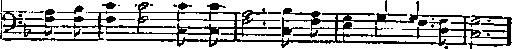I am satisfied with Jesus, Is He satisfied with me? Till I shall reflect His likeness, And He’s sat - is - fied with me.
CHAPTER VI
Ransom the Foundation—Restitution the Result
When, in 1872, Pastor Russell came to examine the subject of Restitution from the standpoint of the Ransom price given by our Lord Jesus for Adam, and consequently for all lost in Adam, it settled the matter of Restitution completely in his mind and gave him the fullest assurance that ALL must come forth from their graves and be brought to a clear knowledge of the Truth and to a full opportunity to gain everlasting life through Christ. He many times stated that the years following, on to 1876, were years of continued growth in grace and knowledge on the part of the handful of Bible Students with whom he met in Allegheny; and these gradually progressed from their first crude and indefinite ideas of Restitution, to clearer understanding of the details; but God’s due time for clearer light had not come. During this time these Berean Bible Students came to recognize the difference between our Lord as the man who gave Himself, and the One who would come again as a Spirit Being. This was the clue: and following it, they were led through prophetic time to proper views regarding the Object and Manner of our Lord’s Return, and then to the examination of the time when the things indicated in God’s Word, as related to Christ’s Parousia, should take place. Thus God leads His children from different starting points of Truth. But where the heart is earnest and trustful, the result must be to draw all together.
We wish to quote the subject of this sketch again as to his doctrines:
“To us the Scriptures clearly teach that the Church is the Temple of the living God, peculiarly His workmanship. Its construction has been in progress throughout the Gospel Age—ever since Christ became the world’s Redeemer and Chief Corner Stone of His Temple, through which, when finished, God’s blessings shall flow to all people who find access to him. That meantime the chiseling, shaping, polishing of consecrated believers in Christ’s Atonement for sin progresses, and when the last of these living stones, ‘elect and precious,’ shall have been made ready, the great Master Workman will bring all together in the First Resurrection. Then the Temple shall be filled with the glory of the Lord, and be the meeting place between God and men throughout the Millennium. We affirm the pre-existence of Jesus as the mighty Word of God, Logos or Spokesman,—‘the beginning of the Creation of God,’ ‘the first born of every creature,’ the active agent of the Heavenly Father, in all His mighty creative works. ‘Without him was not anything made that was made.’ We affirm that the ‘Word’—(Greek, Logos)—was made flesh, became the Babe of Bethlehem, and finally became the Man Jesus, ‘holy, harmless, undefiled, separate from sinners.’ As we thus affirm the humanity of Jesus, we equally affirm the Divinity of Christ, for ‘God hath highly exalted Him and given Him a name above every name.’
“We acknowledge that the personality of the Holy Spirit is the Father and the Son; that the Holy Spirit proceeds from both, and is manifested in all who receive the begetting of the Holy Spirit and thereby become sons of God. We affirm the resurrection of Christ—that he was put to death in the flesh but quickened in the Spirit. We deny that he was raised in the flesh and challenge any statement to that effect as being unscriptural. That the basis of hope, for the Church and for the world, lies in the fact that ‘Jesus Christ, by the grace of God, tasted death for every man,’—‘gave Himself a Ransom for all,’ and will be the true light that lighteth every man that cometh into the world.’ That the hope of the Church is that she may be like her Lord, ‘see Him as He is,’ be ‘partakers of the Divine nature,’ and share His glory as His joint-heir. That the present mission of the Church is the perfecting of the Saints for the future work of service; to develop in herself every grace; to be God’s witnesses to the World; to prepare themselves to be Kings and Priests in the next age. That the Hope for the world lies in the blessings of knowledge and opportunity to be brought to all by Christ’s Millennial Kingdom—the Restitution of all that was lost in Adam to all the willing and obedient, at the hands of their Redeemer and His glorified Church. Then all the willfully wicked will be destroyed.”
He clearly taught and proved his teachings by the citation of Scriptural authority—that man does not possess an immortal soul, that he is a soul and is mortal; that the wages of sin is death, not eternal torment; that death came upon man as the just penalty for the violation of God’s Law; that death means the destruction of man; that God, in His goodness, has provided the great Ransom price whereby man may be delivered from the bondage of Sin and Death; that God’s beloved Son, Jesus, became a man and grew to manhood’s estate, was put to death as a man and raised again from the dead a Spirit-being, possessing the Divine nature; that by His death and resurrection Christ Jesus provided and produced the Ransom price for man’s deliverance and restoration; that Jesus Christ, by the grace of God, tasted death for every man; that every man in God’s due time must, therefore, have fair trial for life, and to this end there shall be a resurrection of all the dead; that Jesus Christ ascended into Heaven and must come the second time; that the period of time elapsing between the First and the Second Coming of the Lord is devoted to the election of the members of the Body of Christ, taken from amongst men; that the requirements for election to that exalted position are, full faith in the shed blood of Jesus as the Ransom-price, a full consecration to do the Father’s will, and a faithful continuance in obedience to the Father’s will even unto death; that all who thus are consecrated and begotten of the Holy Spirit and are overcomers shall have part in the Chief Resurrection, and be exalted to positions in the Heavenly Kingdom of God and participate with Christ Jesus in His Millennial Reign for the blessing of all the families of the earth; that during the thousand-year reign of Christ all of the dead shall be awakened, and given a fair and impartial trial for life or death; that under said Reign the wilfully disobedient shall be everlastingly destroyed, while those obedient to the righteous rule of Christ shall be fully restored to human perfection of body, mind and character; that during this Millennial Reign the earth shall be brought to an Edenic state—Paradise—made fit as a place habitable for perfect man, that man, fully restored, will inhabit the beautiful earth in all the ages to come.
The fundamental error of all religious teachings of both Christendom (so-called), and of Heathendom, as generally recognized, has been, and is, that when a man is dead he is more alive than he was while living—a delusion based upon the first lie ever told—Satan himself being the author thereof. This great stronghold of error, the subject of this sketch, assaulted with all the fervor of his convictions, and this without compromise, neither asking nor giving quarters, his purpose having been to remove the foul stain that has been attached to the name of our loving Heavenly Father, by practically all the creeds of “Christendom” and which have been handed down to us from the Dark Ages, when the most atrocious things were done in the name of God, of Christ, of Christianity. His purpose ever was to assist mankind to a right understanding and proper appreciation of the Divine Character; and to this end he bent all the powers of his being.
Thus, he taught and encouraged all to eliminate from their minds every suggestion of the thought of a God of Vengeance, of Torment, of Hate; and to supplant these horrible demoniacal nightmares with the beautiful, soul-satisfying vision of a God of Love and of Justice, such is the author to be. He pointed us to the way to worship God in sincerity and truth, and no other kind of worship is at all acceptable to Him. Formerly we stood in slavish fear of a God of hate, of vengeance, a mean God, who took delight in torturing His helpless creatures, a God whom no one in reality could possibly love in the true sense; but all who believed in such a God would necessarily fear Him with slavish fear; therefore, would seek to propitiate His wrath very much as the Chinese do their Joss (god) and the Moslems do Mohammed (god).
SOMEWHERE the light is shining.
Somewhere ’tis always day.
Cease then thy soul’s repining
Where gleams of glory bright Pierce through the night clouds riven, Flooding thine eyes with light.
SOMEWHERE there are no shadows,
Somewhere there is no night,
Somewhere there is no blindness,
Somewhere ’tis always light
After life’s span of sorrow,
After the darksome way,
There’ll be a glad to-morrow,
There’ll be life’s perfect day.
SOMEWHERE the cooling zephyrs
Fan fevered, careworn brow;
Somewhere delicious fragrance
Floats from the blooming bough.
Somewhere no storms are raging,
Somewhere there’s sweet relief,
Somewhere no tears are falling, Somewhere there is no grief.
SOMEWHERE the light we long for
Conquers the cloud and gloom,
Until the life we pray for
Penetrates e’en the tomb.
Faint not because the darkness
Now settles dense and drear, Beyond the clouds is sunshine Scale them and do not fear.
The Christianity which shines as brightly in the home and business as in the congregation of the Lord’s people.
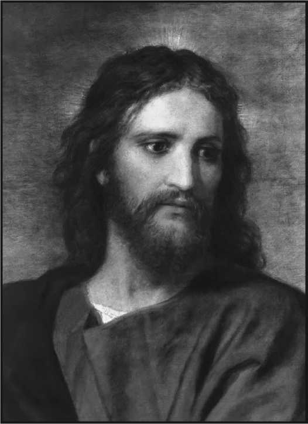BLANK SIDE
CHAPTER VII
What It Means to be a Christian
Naturally of a reverential mind, desiring to worship and serve the true God, he reasoned, “All the creeds of Christendom claim to be founded on the Bible, and these are conflicting. Is it possible that the Bible has been misrepresented? It may not teach the terrible doctrine of eternal torment.” Turning again to the Bible he determined to make a careful, systematic study of it without reference to creeds of men. As a result the remainder of his life was wholly devoted to teaching the Bible, writing and publishing religious books and papers, lecturing and proclaiming the message of Messiah’s Kingdom. He was the greatest religious teacher since Saint Paul, and did more than any other man of modern times to establish the faith of the people in the Scriptures.
He was not the founder of a new religion, and never made such claim. He revived the great truths taught by Jesus and the Apostles, and turned the light of the twentieth century upon these. He made no claim of a special revelation from God, but held that it was God’s due time for the Bible to be understood; and that, being fully consecrated to the Lord and to His service, he was permitted to understand it. Because he devoted himself to the development of the fruits and graces of the Holy Spirit, the promise was fulfilled in him: “For if these things be in you and abound, they make you that ye shall neither be barren nor unfruitful in the knowledge of our Lord Jesus Christ.”
“We who have come to realize our Father’s unspeakable favor to us as better than this present life with all it could have or give, we who have joyfully laid upon His altar every earthly good thing, every hope and ambition, every power of our being, rejoice to tell the good tidings to others. We rejoice to sound forth the praises of Him who hath called us out of darkness into His marvelous light. The message is too good to keep! If we could not proclaim it, it would be as a burning fire shut up in our bones, so we must tell it. And we are willing that the telling of it should cost us something—cost us money, cost us the misunderstanding and persecution of former friends, and possibly the breaking of home ties. We are willing that it shall cost us the frown of the world and of organized Churchianity. So—
“Sun of my soul, my Father dear,
I know no night when thou art near.”
—Pastor Russell.
The prime object in the life of Pastor Russell was to honor and magnify the name of the Great Jehovah, the All-Wise Creator, and to assist in preparing a people for His name by the consistent use of his versatile talents, with which by nature he was richly endowed. Day and night he labored to this end without desiring the praise and approbation of men and seeking no personal advancements in any sense whatever. To spend and be spent, was the impelling theme of his life, as all who knew him best can testify. He would never ask another to do what he himself would be unwilling to do. In these respects, as in many others, he was a notable example of what a footstep follower of the humble lowly Nazarene, who sought not to please himself should be. Verily he practiced what he preached to the minutest detail. Truly he was a living, breathing Epistle of Christ. Few indeed could enter his presence without being conscious of the fact that they were in communication or touch with a most unusual person, verily “a man of God,” as many were heard to exclaim after meeting him if only for the first time. He not only gave us the “Keys to the Scriptures,” but stood by like a faithful, loving shepherd and instructed us how to use these. But sad to say, all have not profited by the knowledge gained respecting these “Keys,” for many have failed to put into practice the instruction given them as to the proper uses. Some have grown “wise in their own conceits,” so think they know more than “that wise Servant,” to whom God revealed these wonderful truths, through which they were led to a full consecration and intelligent worship of Him and service of His cause. While on the other hand many have “grown weary in well-doing,” grown tired of their contract, indifferent to their covenant by sacrifice, so are losing the joy that at one time was so enrapturing. How easily it seems for some to lose their first glow of love for the Lord and the Truth as He was pleased to give it to us through “that wise Servant.”
We here give a few of his cogent, pungent statements, as they relate to the New Creature: “The Bible clearly indicates that there will come a time when we shall find it necessary to stand fast for Principle, from which we should never depart. Whoever violates this principle will surely do himself a great injury, no matter how well intentioned he may be.” Further, “There never was a time when more courage and strength were needed than now.” Again, “The Lord will not accept undeveloped sprouts for the Kingdom. He is seeking for strong oaks, sturdy trees of Righteousness.” Result: “There may be times when even the brethren will be grieved, rather than pleased, in respect to our efforts to serve them.”
“Many of the Lord’s children, after years of labor in seeking to cleanse themselves of the filthiness of the flesh and of the spirit, now alas! see more of their own blemishes than they discerned at first, even though they have gotten rid of much of this natural filthiness, selfishness, etc. This would make the work of cleansing a very discouraging one if it were not for the assurance of the Lord’s Word that He regards us, not according to the flesh, but according to our intentions, our desires, our endeavors. He reckons us as overcomers, because of our good endeavors, good warfare against the natural blemishes, whatever may be the measure of our success.
“There are certain principles laid down in God’s Word. We need to get a grasp of these principles and apply them in our daily lives. For instance, there is the Principle of Justice—a foundation principle. And this must be recognized and practiced before we are in a proper condition to build upon the foundation (Justice) the principles of love, mercy, gentleness, etc., all of which must be incorporated into our lives, and characters as children of God. We need to learn what Justice means, what true Love means. We should be able to distinguish between truth and error on this and every other important point.”—Pastor Russell.
Let this thought stand out, stand fast and so never be forgotten: “The only things that may not be yielded to the Majority, are matters of conscience. No one is to do what he believes to be wrong, even if all the brethren think it to be right. Conscience is never to be throttled or violated; nor is one who stands faithful to his conscience to be disesteemed. On the contrary his courage should be considered estimable.”
“Courage, fortitude, persistence in the service of the Lord are very necessary to the child of God. Whoever lacks these traits of character is pretty sure to make poor success. Lack of courage, lack of hope, is one of the chief causes of failure in life.
“The Lord is seeking people of strong wills, strong characters. Therefore, there must be a positive turning to the Lord and a definite covenant made with Him at the first, or else we are not acceptable to the Father. Then after we come into His family we find that some things that we thought were all right were all wrong, and must be corrected. And in proportion as we have in our past life ruled our minds, controlled our fleshly appetites and impulses, in that proportion we shall make slow or rapid progress in the new way.”—Pastor Russell.
He taught the True Meaning of the Term Christian
Here again we have “that Servant’s” further exposition respecting Christian character:
“The qualities of meekness, gentleness, patience, etc., are qualities that belonged to the first man when he was created in the image and likeness of God. They are, therefore, human qualities that may be cultivated to a certain extent by any human being, and should be striven for by all. But as a matter of fact, as a result of the fall, selfishness and general meanness have depraved the appetites and ways of all mankind to so great an extent that, ‘there is none righteous.’ Hence, no natural man would have these glorious traits of character fully developed, though there is certainly a difference between the development of some and that of others.
“We see, however, that aside from these natural graces, some worldly people have assumed something of the various graces of the spirit? In their business they attempt to be gentle, and properly so. It is considered a part of the proper conduct of colleges, and especially female seminaries, to instruct the young in politeness, in what to say and what not to say; in how to say things and how not to say things; and all of this brings an outward smoothness to these persons in their general deportment. In such cases, however, the smoothness is cultivated because of the idea this constitutes ‘good breeding’; that is what any lady or gentleman should do or say; and thus it may be a mere veneer, not really affecting the sentiments of the heart. The person may be outwardly very calm and smooth and pleasant, and yet at heart feel very sour and envious and mean.
“Those who are merely outward observers might not be able to discern whether that man or woman was actuated by the proper spirit or not. They might not be able to know whether these evidences were the ‘fruits of the spirit’ or fruits of a good education, but anyone knowing well the private life of such persons would be sure to discern the facts, because, as the old expression has it, ‘murder will out,’ and these persons while they might preserve a smooth outward demeanor, would occasionally, in private at least, demonstrate that they at heart were not in sympathy with their outward demeanor, but that it was merely a veneer, and to that extent, hypocrisy. Perhaps a measure of hypocrisy in that sense would be advisable for some people; it might be better for them to put on a little veneer if they can not have the genuine article; better that they should appear smooth, rather than appear rough; it would at least help the world along a little for them to be as smooth as they are able in their general dealings.
“With the Christian these graces are developed from within. Whatever he may have been naturally, smooth or rough, the New Creature approves and cultivates these graces in the heart, and they reach from the heart all the way to the surface. It is the New Mind that is regulating the New Creature; and the New Creature instead of having smoothness merely on the outside, has it running clear through the grain to the very core. This New Creature, thus developing, may not at all times have as smooth an outward exterior as some of the old creatures who have the veneer for sake of money or for other reasons. They may have worse natural dispositions; they may have naturally less honesty as would lead them to avoid saying anything different from what they thought or would feel, anything different from what would be their true sentiments; and their sentiments, not having reached the right point, sometimes might impel them to say the wrong thing. These, of course, should learn to govern the outward man even before all their sentiments have come into fullest sympathy with the spirit of the Lord. They should recognize the proprieties of outward conduct, and speedily get into line with these proprieties, and as rapidly as possible bring every sentiment into full accord with the spirit of the Lord; that they may become more and more kind and loving and helpful to others, and thus ‘show forth the praises of Him who has called us out of darkness into His marvelous light.”
As this Godly man taught, so he lived—lived according to the Spirit.
Pastor Russell consistently taught his readers what it meant to be a Christian and how to really become such—a true follower of the lowly and humble Nazarene, who gave up all the joys of the Heavenly realm and came down to the sin-cursed earth in order to do the will of His Father in Heaven. This was the delight of the Son’s heart; so all who would be joint-heirs with him in His inheritance must likewise find delight in doing God’s will. A solemn suggestion: “Has reaction followed the glowing enthusiasm of our first love? Has the Feeble flesh grown weary in the difficult journey? Do temptations all around us call us away from the course of sacrifice to present gratification?” Surely it is a test of endurance! Who shall be able to stand against the wiles of the devil?
WHAT IS VICTORY
When you are disappointed, your tastes offended, your advice disregarded, set at nought, your wishes crossed, and you take it all in patience,
THIS IS VICTORY!
When you will not approve by word or silent acquiescence, exaggeration, evil speaking, vain imaginations, or perverse conduct,
THIS IS VICTORY!
When you do not love to refer to yourself in conversation, nor glory in your own pious deeds, when you can in honor prefer others,
THIS IS VICTORY!
When you can be conscientious under all conditions, when you can be faithful in things small and great, when you can practice true Christianity equally in your home as in public life.
THIS IS VICTORY!
When you have stumbled into error, weakness or sin, or seem overwhelmed by discouragement, suffering or wrong, and you thereafter grasp more firmly the hand of the Lord, THIS IS VICTORY!
When you can count all earthly desires and ambitions as loss and dross compared to the full approval of the Heavenly King,
THIS IS VICTORY!
When you can stand face to face with the opponents of truth, and righteousness, who misunderstand, hate, and persecute you; and you faithfully endure it all as Jesus did, THIS IS VICTORY!
CHAPTER VIII
As elsewhere shown, I think it is conclusively established from direct and indisputable Scriptural evidence that the office of “that servant” was to be filled by an individual, and not by a collective number of individuals, as some contend, and was so filled: generally speaking, I believe Bible Students are of one mind respecting this point: herein at least they “see eye to eye,” however diverse their views may be on some other matters. I say, therefore, with confidence, that any individual or aggregation of individuals who assume a position divergent from this, are doing so at the cost of their “reputation” among Bible Students; for before the affairs of the Church upon earth are wound up they will undoubtedly find themselves in a most embarrassing position. I trust, then, that we can all heartily endorse the following statement from the “Memorial” number of The Watch Tower of December 1, 1916: “Thousands of the readers of Pastor Russell’s writings believe that he filled the office of ‘that faithful and wise Servant,’ and that his great work was giving to the household of faith the meat in due season.”
It is confidently asserted that no individual, nor aggregation of individuals, has ever brought forth such meat for the entire “household”; though it is quite true that many have assisted in keeping the “household fires burning” by “stirring up our pure minds by way of remembrance,” and by stimulating our faith in various other ways. The “meat is the plan of God,” as so clearly and vigorously set forth in the Studies in the Scriptures, reinforced and amplified from time to time through the columns of The Watch Tower—the vehicle the Lord, through “that Servant,” devised and established for carrying the amplified message, which, however, was to always be according to our Lord’s provision and purpose, in harmony with the Studies in the Scriptures, and therefore to have the very same flavor of delectable sweetness—truly a “sweet savor” to the palate of the entire household. As “that Servant” wisely said, there are general “principles laid down in the Scriptures, and we are privileged to follow these closely or loosely, as we prefer, for God has a liberal way of dealing with us,” saying additionally, “We should know what we believe and why we believe it; then be courageous and uncompromising in declaring the Truth. Some have neglected the plain statements of God’s Word and as a result have suffered spiritually for their disobedience.”
Siftings to Continue Until All Are Tried
“We want to put you all on notice that the shaking and sifting process, so far from being over and past, is bound to progress more and more until all have been tried and tested thoroughly. It is not a question of who may fall; but of ‘Who shall be able to stand?’ as the Apostle puts it. And we have need of the admonition, ‘Let him who thinketh he standeth—who feels very confident, as did Saint Peter—take heed lest he fall.’
“This doctrine of another way of salvation than by the Cross of Christ, is not only the error which is, and has been, since 1874, sifting all who come into light of Present Truth, but it is to come upon the whole of so-called Christendom to try them. It is already spreading among all classes of Christian people, especially among ministers of all denominations. The number who believe that Christ’s death paid our sin-penalty is daily getting smaller, and before very long there will be a regular stampede from the doctrine of man’s fall in Adam and his ransom from that fall by the Man Christ-Jesus. As the Psalmist prophetically pictured it, a thousand shall fall to one who will stand.
“The time has come for each to declare himself boldly. He who is not for the Cross, the Ransom, is against it! He that gathereth not, scattereth abroad! He who is silent on this subject when it is being assailed by foes on every hand, whether it be the silence of fear, or of shame, or of indifference, is not worthy of the Truth, and will surely be one to stumble quickly. He who from any cause sits idly by, while the banner of the Cross is being assailed, is not a soldier of the Cross worthy of the name, and will not be reckoned among the overcomers who shall inherit all things.
“And God is permitting these very siftings, in order to sift out all who are not overcomers, and to test and manifest the little flock, who, like Gideon’s final army, will, though few, share the victory and honors of their Captain in glory.
“Are you prepared for the issues, dear brethren and sisters? The armor of truth has been given you for some time in the past. Have you put it on? Have you made it your shield and buckler? your defense against all the wily arts of the evil one?
“Do not be deceived by the agents Satan often makes use of. In this he will be as cunning as in his presentation of the deceptive misrepresentations, of the truth, making unwilling use of many a weaker brother, and to some extent of every stumbling and deceived one. And while every child of God should take earnest heed, that he prove not an occasion of stumbling to any, we can not doubt that every one, through some instrumentality, will be assailed.
“Aptly indeed did the prophet liken it to a pestilence. A pestilence spreads, because people are in a physical condition which renders them susceptible to the disease. Physicians say that those whose systems are in good, healthy order, are in little danger of any disease. So it is with a spiritual pestilence: it will flourish not only because all will be exposed to it who have not a clear intellectual appreciation of the doctrines of Christ, but from another cause also. Out of the heart are the issues of life, and most needful of all to be in the right condition, is the heart. How is your heart? Is it proud, boastful, independent, selfconscious, self-willed? If so, TAKE CARE: You will be very liable to this epidemic, no matter how far from it you may seem to be. Therefore pray for
“A heart resigned, submissive, meek, The dear Redeemer’s throne, Where only Christ is heard to speak, Where Jesus reigns alone.
“With such a heart you are safe. In meekness and lowliness you will never think of redeeming yourself from the condemnation inherited through Adam, by sacrificing present sinful desires, but you will flee to the Cross, where God Himself opened the Fountain for cleansing.
“We presume this statement of facts will offend some, though it is not designed to offend any. It is written for the defense of the meek against the sophistries of error. ‘Who shall ascend into the hill of the Lord (into the kingdom)? or who shall stand in His holy place? He that hath clean hands and a pure heart. (Who is diligently fashioning himself after the principles of holiness); who hath not lifted up his soul unto vanity (who cultivates no earthly ambitions or pride, but patiently waits for the glory to follow the course of present self-sacrifice), nor sworn deceitfully (ignoring or despising his covenant with God): he shall receive the blessing of the Lord (the kingdom, glory and joint-heirship with Christ), and righteousness (perfection—full deliverance from present infirmities) from the God of his salvation.’ Therefore, let all fully awake to the trial of the hour; and while many
are putting stumbling blocks in the way of the ‘feet of Him,’ let every soldier of the Cross be vigilant not only to show, but to assist others to stand.”—Pastor Russell, in 1906.
“Awake my soul, stretch ev’ry nerve,
And press with vigor on,
A heavenly race demands thy zeal, And an immortal crown.”
I am sure that the most of those who will read these lines are fully persuaded that Pastor Russell did this very thing, —followed Saint Paul in the sense that the Apostle followed Christ; and so at the conclusion of the Pastor’s course he undoubtedly had the same, or similar experience, expressed by the great Apostle—“I am now ready to be offered.” If Charles Taze Russell had such experience, and reason declares that he had, it is a self-evident truth that he was faithful and wise, and so fulfilled the office of “that servant,” therefore was enabled to report the matter and say, “I have done as Thou hast commanded me.”
“The place we occupy in the Kingdom will depend upon the extent we become ministers, or servants. And if we try to get as much as possible out of others and to give as little as possible, we shall not be such characters as the Lord is seeking for rulership in the Kingdom. He is seeking a very choice class. This class will all be servants, willing to serve, esteeming it a great privilege to lay down their lives in the service of the brethren; for the service of the brethren is the service of God, to whom they have professed to devote their lives.”—Pastor Russell.
SELECTIONS
“Love is the keynote of the Bible, notwithstanding the fact that it contains threatenings as well as promises, and declarations and manifestations of justice as well as of mercy. If God’s character were devoid of justice—if love should override His justice—it would be a terrible calamity for all those dependent upon Him. It would testify weakness of character instead of strength. It is the fact that God’s wisdom, justice, love and power operate in full harmony—in co-ordination—that gives us admiration for Him, confidence in Him, love for Him; and all these appreciations are intensified as we realize His unchangeableness.”
“If we wilfully refuse the leading of God’s holy Spirit, we forfeit the blessed relationship of sons. If we listlessly disregard this leading, we greatly endanger that relationship; and as surely as we are sons we shall receive chastisement for our correction and discipline. But while we should be grateful for such a restraining hand, for this rod of correction, if we need it, yet we should be very careful to require as little of it as possible. ‘If we would judge ourselves, we should not be judged’ of the Lord. However, with the most careful and prayerful watchings against the uprising of the old will and of the flesh, we will doubtless make many mistakes and need some chastenings from the Lord; ‘for what son is he whom the Father chasteneth not?’”
“In the difficult course before us, and in view of all the dangers that beset us, the pitfalls laid for our feet, the weakness of our own unaided efforts, how blessed is the promise of our Father in Heaven to give His holy Spirit to them that ask Him! How precious the assurance that if we are filled with the Spirit we shall not fulfil the desires of the flesh, but shall be able to mortify the deeds of the body, that we may live! How necessary it is to live near the Fountain of all grace, to pray without ceasing and watch with all perseverance!”
“We want to be gentle but firm; we want to remember what they said of the Apostles in the early church, ‘They took knowledge of them that they had been with Jesus.’ We want to make our bosom companion the Lord Jesus. We want to be with Jesus, and those who have most of His character-likeness. Such as have His spirit will be most like Him. They are those who have the ‘Spirit of Christ.’ If a spirit begotten New Creature fails to see the privilege of cultivating the Master’s spirit it is because he is not making progress.”—Pastor Russell.
CHAPTER IX
To Him Duty Was Law
Let us now look somewhat at the volume and the character of the Word done by “that Servant,” in both of which respects he stood in a class by himself. Aside from the character of the work which will be considered elsewhere in this book, the amount he performed, when summed up, seems almost incredible. He was actively engaged in the Lord’s work for forty-two years. During that entire time he was never known to take a vacation; but instead, seven days a week he would be found at his post of duty—and duty to him was pleasure. Once when reminded by a certain brother, rather reprovingly, that he was over-taxing his strength, he replied characteristically that he would have all eternity in which to rest—if he worked faithfully while here.
In the amount of work he performed it is doubtful whether it was ever equalled by any human being. Though for fifty years he was a victim of sick headaches, for forty years a sufferer from cystitis, and for twenty-five years was afflicted with distressing hemorrhoids, to such an extent was this true, that often he could not rest comfortably in the easiest chair, yet he never “slackened his hand” nor abated his energies, neither did his purpose intermit. Where duty called, or danger, he was never wanting there.
Pastor Russell was a careful statistician and methodical in all his activities. Office records were kept of his individual travels, places and distances, also the services rendered. These records show the following astounding totals: Traveled more than a million miles, not infrequently 50,000 miles a year; delivered 30,000 lectures, sermons and table talks (many of his public lectures being from two and one-half to three hours in length); and wrote more than 50,000 book pages.
Besides this monumental work in itself, he personally wrote practically all the matter that appeared in, and edited The Watch Tower, a twice-a-month journal of Biblical expositions and religious facts; in addition, he supervised the printing and publication of The Bible Students’ Monthly and The People’s Pulpit, both monthly papers, of four pages, which were distributed principally as volunteer matter, or free literature, to the Bible Students all over the world, and without charge. Sometimes 500,000 to 1,000,000 of these little religious papers would be distributed over greater New York to advertise one of Pastor Russell’s public lectures. These papers contained some of his previously delivered sermons and lectures in abbreviated or condensed form, and to thus prepare this matter involved much labor. Millions and millions of copies of these papers were printed and distributed annually, hence the hail—condensed, hard truth—fell broadcast over the earth.
The publication of this “free literature” gave all the Truth people, all over the world, an opportunity to have some part in witnessing to the near approach of the Kingdom. This plan was especially favorable to the sisters of every ecclesia, who for various reasons could not engage in the Colporteur service, to have a part in the Harvest Work. Likewise did this plan give opportunity for many brethren to do a little “broadcasting” of the message on Sundays, holidays and evenings, after work hours were over. Furthermore, this method was favorable to the dear “Conventioneers”—in going to and from the Conventions, or while otherwise traveling on the trains, boats or by automobiles, to “scatter seeds of kindness” by the wayside. Sometimes fragments of such volunteer matter would be picked up by the roadway or out of the mud, and the “finder” would thus find the Truth. There is at least one authentic case of a piece of such tract being found in a “last year’s bird’s nest”; the finder thus becoming interested in the Truth and finally accepting it. The writer heard this testimony given at a Convention. Therefore, “In the morning sow thy seed, and in the evening withhold not thine hand: for thou knowest not whether shall prosper, either this or that, or whether they both shall be alike good.”
When we take into consideration the character of the articles that occurred twice a month in The Watch Tower and the preparation of copy for The Bible Students’ Monthly and The People’s Pulpit, we recognized that these alone would have constituted a monumental work for any average man, especially when we keep clearly in mind the fact that Pastor Russell scrutinized every detail in every department of the work. He was exacting as to the type, paper and mechanical results in the producing of the instruments used to herald the Kingdom Message. Everything, to the dotting of an i and the crossing of a t, must conform to his standard. That was what he ordered; what he expected to pay for; and what he insisted upon having. And he got it.
BLANK SIDE
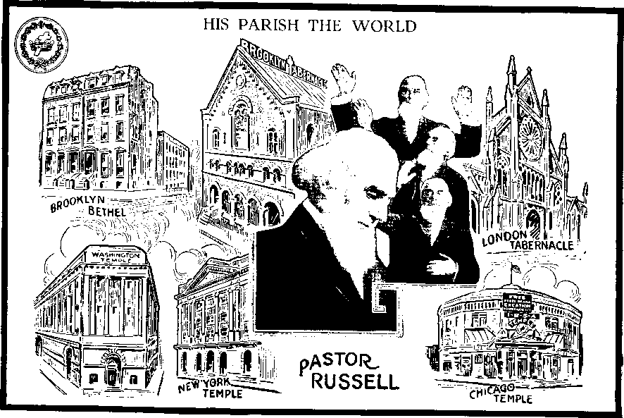The Ubiquitous Preacher
The London, England, Press spoke of Pastor Russell as the “Ubiquitous Preacher,” for the reason that he traveled so extensively and “had the world for his congregation.” From the Scriptural record the conclusion seems warranted that Saint Paul did more extensive traveling, and therefore, more evangelizing, than all the other Apostles combined—probably because he was especially the Apostle to the Gentiles. From his various pilgrimages, as noted from the Scriptural records, the supposition might be indulged that the people of that day also referred to him as the “Ubiquitous Preacher,” yet in all probability in the total number of miles covered, his entire travels for the whole period of his ministry, would not equal an average year of Pastor Russell’s tours.
Saint Paul gives us a suggestion as to his wide experience in one of his epistles, by saying that, thrice he suffered shipwreck, for twenty-four hours he was floating about in the open sea; in frequent travelings amid dangers in crossing rivers; then in danger of robbers; in danger from Jews; in danger from Gentiles; in danger in the city; in danger in the desert; in danger by the sea; these and more he enumerated, concluding with the care he felt for all the churches he had established in his wide travels of that time. But people did not “run to and fro” in his day as now—only since “the time of the end” has the human family gone daffy on the subject of travel. It seems that their brains have become so feverish with the thought of the necessity of “running to and fro” that they would die of ennui if they should remain at home long at a time. Thus, in a sense, the whole world has become “pilgrims.”
But the travels and pilgrimages of the Apostle Paul, as compared with those of Pastor Russell, would be as a mere bagatelle, when the wide magnitude and scope of the territory covered are considered, together with the great difference in the methods and convenience of travel between the two periods of time—then and now. Conveniences of our time are such that Pastor Russell did the greater part of his traveling at night, while he slept, thus giving him the daytime in which to do his writing and preaching. Therefore, he was able to accomplish much more in the sense of magnitude than was possible in the Apostle’s day. God knew beforehand what He wished accomplished at the close of this age—a world-wide witness of the Truth—so He gave the necessary enlightenment to the minds of the people in order that present-day conveniences would be brought forth, primarily for the advancement of the interests of His own cause—the Truth. We recall how the Apostle says, “all things are yours;” that means all the convenience of this day.
If the average high-salaried preacher of the present day were called upon to do anything like the traveling and preaching that Pastor Russell did he would most likely think he was being worked to death—or nearly so. Yet this was only one of the astounding things “that Servant” accomplished within himself, while at the same time doing more than half a dozen other things of magnitude.
Lecture Bureau
Besides this he established a world-wide “Lecture Bureau” of usually about 70 thoroughly equipped Bible Lecturers, who gave daily two or more lectures on Bible topics—not on “Baseball,” “Marathon Races,” “Jazziness of Jazz Music,” “The Latest Sensation,” and things of such character.
His thought was to instruct, not merely entertain the people, for he realized that they were “perishing for lack of knowledge.” So he consistently pointed the feet of the Lord’s people to “the old paths, where is the good way.” Thousands upon thousands harkened, and thousands upon thousands were blessed accordingly. This force of co-workers were his assistants, therefore representatives, and as such their course and work were subject to his immediate supervision and control. In addition to these regularly employed field-workers or pilgrims, there was an auxiliary field force of about 700 who gave only a portion of their time to lecturing on Bible subjects. To supervise this work was of itself the work of one able man.
Colporteur Service
Another branch of the Harvest Work, which he inaugurated and also supervised, and which in some respects was least conspicuous, but at the same time was found to be the most efficient way of getting the Truth into the hands of the people, was the Colporteur Service. This plan while most unique was still the essence of simplicity. Never in all the history of the Church has there been anything like it, and particularly so as respects quick results. Consecrated men and women, who loved the Lord and appreciated what the Truth meant in their own lives, found their sweetest joy in going about over the streets of every city, town, village and hamlet in the land, yea, in every nook and corner of the most remote country districts, making a respectful presentation of the proposition showing the beauty and reasonableness of God’s great plan, as revealed in His Word and amplified in the volumes. To the untiring efforts and supreme devotion of this army of about 800 workers, much of the success of the Harvest Work is due. This was the branch of the service nearest Brother Russell’s heart. As a class the Colporteurs were more highly esteemed by him than any of his other coworkers, largely, no doubt, because they were the most self-sacrificing.
Morning
DEAR FATHER, hear a little child
Who offers thanks to thee;
Through all the darkness thou has kept
A watch-care over me.
O Father, keep me through this day, I would to thee belong;
May love control my little hands, May kindness rule my tongue. Thy kingdom come, Thy will be done Upon this earth again;
Dear Father, hear my little prayer For Jesus’ sake.—AMEN.
Evening
DEAR LORD, before sweet slumber comes To close my weary eyes, Up to thy throne of heavenly grace My voice in prayer would rise, For all the blessings of this day I give thee thanks and praise.
Forgive me, Lord, for Jesus’ sake, For all my naughty ways.
And as I lay me down to sleep
Do thou an angel send
To watch beside me all the night for Jesus’ sake.—amen.
Coming next to age thirty-six I can draw in substance, from memory, aided by photo, that this was about the age of C.T. Russell when I examined his head, since which time there has been considerable change in the conformation of the skull. His head is far above the average, with reflectives large and perceptives very large, giving a receding forehead. He possessed all the natural qualifications to a superior degree that are necessary to fit one for a statesman; indeed, I do not hesitate to assert, that he was endowed by nature with such diversified talents that, with experience, he could have excelled in almost any line to which he wished to turn his attention. Was perfectly at home as a prolific writer or speaker, or as a silver tongued orator; he was also a natural artist. I cannot say too much for a man possessing such wonderful natural talents. His was the greatest head I ever examined out of seventy thousand, many of whom were highly educated and some were distinguished, but he stood first.
Age 36. PROF. C.A. HEWES.
Power and Executive Ability Shown
Pastor C.T. Russell at thirty-six displays a radical change since age twenty-seven. Here is seen a realization of that matured look seen on the boy at age four; at this age one sees more power and executive ability, more mental grasp, spiritual attainment and illumination.
The eye-brows are now decidedly raised and highly arched, indicative of very active, penetrating faith. The large peculiar mouth has added firmness to it. The upper lip is more set and stiff, the result of his course and stand and perseverance. The nose is indicative of power, decision and executive ability, and one implying no defeat or retreat. The eyes are more spiritually illuminated and set. The forehead has expanded, showing larger constructive ability, reasoning powers and observation, and the entire side head is abloom with all indicated in the boy at age four.
The entire impression given at the age of thirty-six is one alert to mental and spiritual enfoldment and its fulfillment. The head is beautifully rounded out, qualifying for good general judgment and wisdom, especially along spiritual and business lines. There still exists that openness, candor and entire lack of deceit and secretiveness, but plenty of grip, and grit and tenacity of purpose.
Such a head and face indicates one living in the intellectual and spiritual world rather than in the earthly.
PROF. EDMUND G. WALTERS.
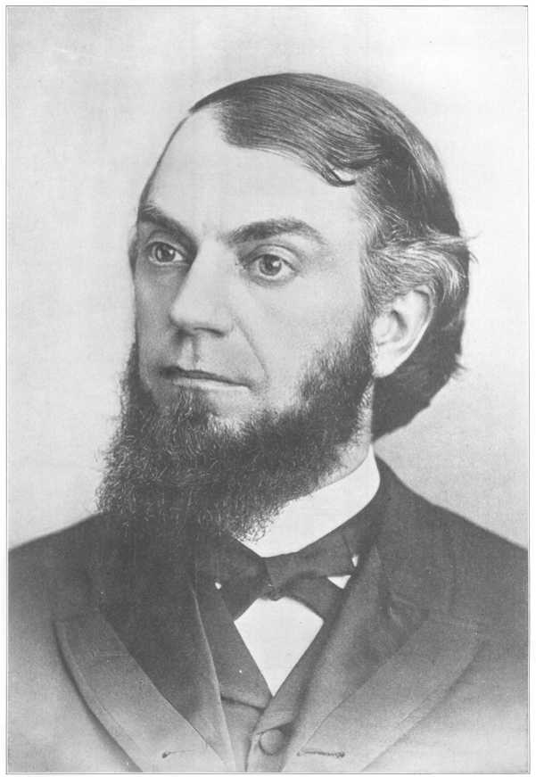BLANK SIDE
CHAPTER X
Its Sanctifying Influence Lasted
Another matter which seems worthy of mention, even though it is not strictly of a personal character, is the manner in which the subject of this sketch conducted the “Bethel Service” at the table during meal time. And I believe it will be of special interest to many, many readers who never had the privilege of being there on such occasions. First, the “family” was expected to be in the dining-room on time, and each one in his or her seat before the clock ticked off the last minute; and as it did so, Pastor Russell would enter, saluting all cheerily and encouragingly with a “good morning, all,” “good day, all” “good evening, all.” Let us say the meal was breakfast. The Sister who was to preside at the organ for that morning would be in the accustomed position—at or near the instrument. Then the recognized “head of the house” would announce the hymn for that day, the whole family joining in singing. Many from the outside who had been present for the first time, on such occasions, said freely, they had never heard such congregational singing in all their lives. This fact of itself had the effect of bringing more than one person to acceptance of the Truth and full consecration to God. Following this, some Brother would be called upon to read, “My Vow Unto the Lord.”
Next, Brother Russell, the “family” all standing, would lead in prayer, concluding with the Lord’s Prayer, in which all the “family” joined. Thus it became a strictly congregational service, and sweet and solemn it was indeed. The sweet influence of these heavenly experiences abide with me still. There was a recognized air of sanctity about the whole service which could be easily felt, though beyond the power of words to properly express. After being again seated, some Brother would be called upon to ask, in a few words, the Lord’s blessing upon the food, after which some Sister would be requested to read the “Manna Text” for that day. Next in order would be a call for questions on the text; and these were required to be orderly in the manner of their presentation, that is to say, a question which was based upon or related to the latter part of the text would not be considered until they had disposed of the preceding portions. The question would be passed from one to another of the brethren, and finally thrown open to all—“anyone” who desired to air his thought. When there were no more questions to be asked on the text, Brother Russell would then sum up, giving sometimes a sermonette of fifteen minutes to half an hour, occasionally more. Lastly the “Manna Comment” would be read, and at its conclusion the “family” would rise and Brother Russell would return thanks for the food of which they had just partaken. Then the “family” would quietly leave the dining-room, every one proceeding at once to his or her post of duty. This influence was a most sanctifying one with which to start the day; and as a result the day’s duties were not so arduous.
At the noonday and evening meals, much the same procedure would be followed, save that the “Bethel Service” would be omitted. Scriptural questions would be asked and discussed throughout the entire meal time, Brother Russell giving his thoughts at the conclusion of every question discussed. His remarks were always instructive, and sometimes sharply at variance with the views expressed by other brethren. Once, I clearly recall, a question was asked, based upon a certain paragraph in the Tabernacle Shadows. There were truly some bright minds at Bethel in those days, many deep students and some who were supposed to be specially clear in Tabernacle Shadows. After everyone had been given an opportunity to express his views, many of the more prominent brethren having done so, Brother Russell said in his characteristic way, “I agree that you are all wrong.”” It was quite common for a Brother, when called upon for a comment, to say, “I agree with what has been said.” Then Brother Russell gave a detailed explanation, covering about twenty minutes’ talk. To him every feature of the details of the Tabernacle seemed to have been as plain as the A B C. It would, therefore, probably not be too much to say, without discrediting any one, that he was the only one who in reality fully understood in all details the shadows and typical significance of all things connected with the Tabernacle in the Wilderness.
The Irish strain in Pastor Russell gave him quickness of wit, and readiness of repartee, constituting him one of the most delightful conversationalists, not to say interesting personalities, altogether making him a most charming man to meet, whether along natural or spiritual lines. The Scotch blood which coursed through his veins gave him that stability of character and firmness of purpose which were his outstanding characteristics.
Epistle to the Pilgrims
“Dear Brethren:
“Greetings in the name of our Lord and Redeemer!
I often wish I could meet you personally and say a few words and hear from you. I will take this opportunity of giving you my little message inaudibly and without the expense of a regular journey. I want to refresh your memories respecting some things which I have already said, but which it appears will slip from the memories of some of your number. My experience in the work and knowledge of conditions are based upon the following counsels:
“(1) Avoid as much as possible all unkind references to Christian ministers or others who differ from us in Bible interpretation. Preach the Gospel! Let its mighty power do the work! In referring to others, speak as sympathetically as possible, endeavoring to make apologies and allowances rather than to condemn, which is not our province. Avoid so far as possible all discussion of the immortality of the soul, the Trinity and the Lord’s presence. The time may yet come for wrangling over these things, but we believe it has not yet arrived. Take your cue, please, from the Studies, Towers and Sermons, and be sure to make your statements less, rather than more pungent and specific. The people are prejudiced along these lines. Experiences show that they can be much better reached otherwise, and after they come to understand other matters of the truth, then these matters so difficult for them become easy.
“(2) By precept and by example you can help the dear friends along the lines mentioned and help the cause much. The truth has suffered more from the un-wisdom of its friends than anything its enemies have said.
“(3) Continue to give my love to all the dear classes and individuals in the truth as you meet them. I love to think of you all as in a measure representatives of myself as well as of the Lord, and I believe the friends get most good from the Pilgrim visits when they view them from this standpoint. Usually, except on Sundays, you will have plenty of time aside from the meetings to look after the lame, halt, blind and sick of the ‘sheep’—to carry them crumbs of comfort, to help bind up their wounds, or to encourage them in the good way. I trust this opportunity for service is not neglected. It is one of the most important! Sometimes a dear ‘sheep’ will become entangled and cease to attend the meetings. It is a part of your shepherding work to look after just such cases—to hunt them up and help them back to fellowship if possible, or failing in this, to encourage them to be loyal to the Lord whatever their outward conditions.
“(4) As representatives of the Society, the friends will naturally inquire of you respecting the Colporteur work, the volunteer work, etc., or if they fail to ask and you see no activity along these lines, it would be your duty and privilege to bring up the question and inquire to what extent the service of the Lord is going forward. Make inquiries about the classes where they have a surplus of talent and encourage the class extension work. Keep in mind that you are not speaking for yourself merely, nor especially, but that you are the Society’s representative, and, above all, along this line in our present work, the Lord’s representative. Be careful therefore that your counsels shall be encouraging and helpful, being not carelessly given.
“(5) As you go to the various homes please give the dear friends to understand that I have requested you to notice whether or not the Heavenly Manna is used at breakfast, dinner, supper, or sometime during the day; and whether or not an opportunity is sought to have family worship or the giving of thanks at the table. Assure them that our interest is not prompted by any other motive than that of their good. So sure do we feel that prayer and consideration of spiritual things are essential to spiritual growth that we fear that all the dear friends who allow business, pleasure, or anything to come between themselves and the Lord, are separating themselves from the spirit of Divine fellowship which the Lord encourages. Remind them also at a convenient time of the great blessing that is being experienced by some in connection with the continuous reading of the six volumes of Scripture Studies every year—ten to twelve pages a day. We are leaky vessels, and the truth gradually ebbs out unless we replenish.
“With much Christian love,
“Your brother and servant in the Lord,
“C. T. Russell.”
Such letters as this were always encouraging to the tired, worn and sometimes well-nigh discouraged Pilgrims, as they gladly went forth in a blessed service which at the same time was a constant grind—an endless test to their endurance. How he could and did comfort us in all our troubles, with the sweet spirit of the Master, which proved to be the Balm of Gilead to our hearts in all our perplexities, troubles and afflictions!
This dear man of God seemed at all times to take a personal interest in the Pilgrims as well as in the matter of supervising their work; for this reason, generally speaking, they regarded him much in the same sense as they would a father. As their spiritual guide and counselor in general they rejoiced in the privilege of looking to him for comfort.
CHAPTER XI
The Great Newspaper Campaign
We would again emphasize the fact that the amount of work which Pastor Russell performed, even in the light of present-day advancements along all lines, is nothing short of amazing; and it is doubtful whether even in this respect it was ever equalled by any other human being. It is only those who had been close to him, and associated with him, in his stupendous work, who can properly appreciate this fact. Aside from the magnitude, scope and character of the work he performed, which was astounding in the extreme, his was a rare genius for details. In this, too, he excelled. We can say with confidence that both in the character and magnitude of the work he performed as “that Servant,” it both exceeded and excelled that of any single individual since our Lord’s day. His desire for work was insatiable, while his capacity to perform and endurance to bear were nothing less than astounding in the eyes of those closely associated with him in the Harvest Work. And what he could not and did not do himself, he had the faculty of seeing that others did. Thus he was masterful in many ways.
We would not forget in this rehearsal to make some mention of the Newspaper Work which was another remarkable feature of this marvelous man’s marvelous work. Pastor Russell consistently held that God preferred to have all the work pertaining to the promulgation of the Gospel Message done by consecrated hands, but if these were not available, that He could make, and sometimes does make, the wrath of man to praise Him. For such purpose He once used Pharaoh; for He has a certain end to attain; and for Him to purpose is to bring it to pass. Therefore, if one means, capable of being used for the accomplishment of His purpose, is not at hand, then He very promptly converts some other into a resource. We recall the Scripture that saith, “God is able of these stones to raise up children unto Abraham.” This suggests clearly to our mind what the Scriptures teach throughout that God is all powerful. Therefore, nothing is impossible with Him, even as our Lord said. For this reason, as He purposes, so shall it stand.
Furthermore, we remember our Lord’s reply on one occasion to the fault-finding, hypocritical Pharisees: the occasion being when He rode into Jerusalem on the foal of an ass, five days before his crucifixion, the multitude crying, “Hosanna to the Son of David. Blessed is he that cometh in the name of the Lord; Hosanna in the Highest!” The Jews took offense at the honor and praise shown the Son of David, so they called upon Him to rebuke His disciples. To their appeal He replied, “I tell you if these should hold their peace, the very stones would cry out.”
Through the Prophet, God had declared there should be a shout at this time, and had the people remained silent the stones of the streets would have given it; for every item of prophecy must be fulfilled—not a jot or tittle should pass away without. This particularity of detail in prophetic fulfillment gives us confidence in the further statements of this and other prophets. These recognized facts and known fulfilled prophecies prove that the “purpose of Jehovah shall stand.”
He purposed that there should be a world-wide witness given to the Message of the Kingdom in the end of the Gospel Age; that it should be to all nations, kindreds and tongues; and this Message has been given, and translated into about forty of the principal languages of the earth. Again did our Lord say, “The Harvest is abundant, but the laborers are few.” “That wise Servant” long realized that the Message of the Kingdom was not having the wide publicity it should have —“Behold thy King!”—and since consecrated hands and tongues could not be found in sufficient numbers (laborers being too few) the Lord directed the mind of the one to whom He had committed this Message to recognize the feasibility and the expediency of drafting other means at hand—and that was the Newspapers of the world.
This thought had a very small beginning; first, an epitome of his Sunday lectures to the public found space in a Pittsburgh daily; then following the White-Russell debates in Cincinnati in 1908, at which time the Cincinnati Enquirer’s services were enlisted; later the Chicago Inter-Ocean, and gradually several other more or less prominent and influential papers throughout the country. Then, from 1909 to 1913, an extensive, energetic and systematic campaign amongst the newspapers of the whole country was carried on through a force of as bright and active minds, principally young, as the Truth has ever enlisted at any time. Saint Paul, you remember, declared that God had not called to His service “many wise”—but you note He did not say, not any wise—but there were a few, as many as He had need of—just as it was back in the days when Moses was commanded to build the Tabernacle “according to the pattern which thou wast caused to see in the mount.”
Moses was instructed to select certain skilled workmen, artists and artisans, from the tribe of Judah and the tribe of Dan, and “every wise hearted man, in whom the Lord had put wisdom and understanding for the service—every one whose heart stirred him up to come into the work to do it.” So at all stages of the development of His wonderful plan does God put the wisdom requisite for His purpose at that time into the hearts of those He would use. These newspaper “interviewers” were undoubtedly of this class into whom God had put the spirit of wisdom, understanding and knowledge. They seemed to have satisfactorily met every exigency of any case arising; for illustration: one of these brilliant young brothers on one occasion was questioned pretty sharply by the editor of a certain prominent daily of the South, as to where Pastor Russell got the money with which to carry on a religious campaign of such colossal proportions, and which had so stirred the wrath of the clergy of “Christendom,” so-called; and this is the very question which perplexed them beyond measure—“Where does the money come from?” Our bright young brother was equal to the occasion, for he finally and truthfully replied, “O, his Father is very rich.” That was enough!
Mr. Editor did not need any further “inside” information. He had made what in the newspaper vernacular is termed the “biggest scoop of the season;” for he had finally pried out of this unsophisticated young brother the mysterious source of Pastor Russell’s unlimited money supply. Next morning a great truth, though somewhat sensational in character, appeared in that paper, explaining just how Pastor Russell could do, and was doing, such astounding things, when he never charged for admission to his lectures, never took up a collection at any of his services, and never directly or indirectly asked for financial aid in any manner. The secret at last was out—His Father is Rich! That “secret” told more than those wiseacres suspected. And they do not understand the real truth to this day.
The outcome of this “Newspaper Campaign” being that about 4,000 newspapers and magazines, at one time or another, published Pastor Russell’s sermons; about 2,000 at one time so doing. It is estimated that he thus preached to from 15,000,000 to 20,000,000 people weekly. Some congregation, surely! On the basis of these facts, one publication, unfriendly to the Truth, once said through its columns:
“Pastor Russell’s writings are said to have a greater newspaper circulation every week than those of any other living man; greater, doubtless, than the combined circulation of all the priests and preachers of North America, even than the work of Arthur Brisbane, Norman Hapgood, George Horace Lorimer, Dr. Frank Crane, Fredrick Haskins, and a dozen other of the best known editors and syndicate writers put together.””
Weekly did Pastor Russell prepare matter or sermons, for these newspapers, some of one-column and some of two-column lengths—the “one-column” being the “two-column” condensed; and each had to be of “just so many words,” neither more nor less. This would necessarily take much time. To write out your thoughts without reference to the exact number of words used may be done hurriedly, but when you have to “boil the matter down,” especially to a given number of words, requires time, no matter how skillful one may be in the use of words in which to convey his thoughts. You know this if you have ever written a telegram and desired to keep the charge within the minimum for ten words. A bright young man once secured a position on the reportorial force of one of the big dailies, in a prominent city. On one occasion he made “a scoop.” After the paper appeared next morning he was called into the office of the managing editor and complimented for his brilliant work; but was critically asked why he made the article so long. He promptly replied that he did not have time to make it shorter. You see the point?
Pastor Russell was a past-master in epigrammatic construction of sentences; for example, note the Photo-Drama Lectures. Whenever “multum in parvo” was called for, he always met the requirements.
We see, therefore, that the “Newspaper Bureau” which he established and supervised, and for which he prepared two sermons weekly, as explained, was a work of no mean proportions in itself; yet this was but one of the marvelous works this “Man of Wonder” accomplished within himself. If an ordinary man had done as much, and yet nothing more, he would have performed a “good man’s work.” Then he would have to rest up a good part of the time to recuperate. Not so with this extraordinary man—this man of many talents. He always said he did not have time to rest. If he became tired or exhausted, he never let it be known. I believe that every fair-minded person who reads these Memoirs, especially those who had more or less of a general acquaintance with him and a knowledge of his work, will readily admit that, from whatever angle he might be viewed, the outstanding greatness of the man was recognizable.
His Expressed Views Regarding the Photo-Drama, Newspaper Service and Volunteer Work
“Many of our readers appreciate, as we do, the publication of our weekly sermons by the secular press. This is effected by a syndicate. The success and prosperity of a syndicate depends upon getting sermons into newspapers and keeping them there. We supply the sermons to the syndicate free. The number of American papers carrying the sermons and their circulation is practically the same as a year ago, but the number of British papers publishing the sermons has greatly increased. The syndicate estimates that thus our sermons go weekly to over ten million readers. (Note:—This was written in 1911. Later this service more than doubled. Therefore, there was a time when his readers numbered approximately twenty millions weekly.) This is nothing short of marvelous; never before have sermons reached one-fourth this circulation. (How would he have expressed the matter, when two years later, this circulation was doubled?)
“This year’s figures on the volunteer work are astounding. To those who understand what tract distribution is, these figures speak of an immense amount of work— carrying the Gospel into millions of homes of all denominations of Christendom, in all parts of the world, to which all other efforts put together are as nothing in comparison with our figures, yet they include great institutions with powerful financial backing. There is a difference, for which there is a reason. Ours is the Gospel of God’s love and mercy, not only for the elect Church, but also in due time for the non-elect world. Ours is the Gospel of which we are not ashamed, and this can not be said of other messages of bad tidings of great misery.
“We hope that every reader scanning these figures may have the consolation of thinking—I was a volunteer! I shared in this work! My labors are in the grand totals!
“Grand total of Everybody’s Paper and People’s Pulpit distributed in 1911—copies, 22,838,282.
“Equal to the usual Tract pages of 364,624,956.”
In summarizing the progress of the Harvest Work at the close of 1912, he wrote:
“Our two little papers, People’s Pulpit and Everybody’s Paper, circulated for the most part free, have gone far and wide this year, in thirty-three different languages. The friends knowing they can have literature in any language, are more and more availing themselves of the privileges and are seeking to interest their neighbors. Thus the poor have the Gospel preached unto them—without money and without price.
“Incidentally we remark that the majority of people can serve the Lord’s cause better by handing out a tract with a few commendatory words than by seeking to explain the Divine Plan. Too many make a mistake by talking too boastfully and drawing unpleasant comparisons. We are glad, however, that all are learning the import of the Master’s words, ‘Be ye wise as serpents, harmless as doves.’ Let us remember that we, not long ago, were in similar darkness—and still we were Christians.
“Hence we should not, in talking to our friends, give any hint that we think they do not belong to the family of God. Rather we find it much the better way to class ourselves in with all as true neighbors, to acknowledge that once we were in darkness, and to express the thought all Christian people are becoming more and more enlightened in respect to the teaching of God’s Word.
“Free distribution of Everybody’s Paper and People’s Pulpit for the year 1912, in the United States and Canada only, copies, 34,672,475.
“In other languages, 848,000.
“Grand total free literature, copies, 35,520,475.
“Equivalent to usual tract pages, 481,632,950.”
With the report for the year 1913 Pastor Russell again wrote in this strain:
“Divine providence is still favoring the presentation of the Gospel in the public press. The efforts of the enemies of the Gospel of the Kingdom to misrepresent our teachings and to prejudice editors and publishers against them, have not prevailed. In this we also perceive that He that is for us is mightier than all they that be against us. The day may come when the Truth will be crushed to the earth. But that day has not come yet. Indeed, in quite a number of instances the editors have appreciated the situation, despised the unjust principle manifested by some preachers in their opposition, and have given space and prominence to the message.
“The latest figures given us by the Newspaper Syndicate which handles the sermons in the United States and Canada, show that 1,424 papers are publishing the sermons weekly. In Great Britain, Australia and South Africa, about 600 papers are publishing the sermons weekly. This, in round figures, represents 2,000 newspapers. How many millions of readers are thus reached we do not know, nor do we know how many of these reached are reading and being influenced. We do know, however, that the whole world is waking up, and that the truths we are presenting are gaining adherents and exerting influence everywhere. We trust the Lord’s name is being glorified thus and that many of his people are being ripened for the Kingdom.
“Our papers for free circulation amongst the people are Everybody’s Paper, People’s Pulpit and the Bible Students’ Monthly. These have a subscription price of twelve cents, but our list is comparatively small. They are mostly circulated free. They are more attractive than tracts, though many are used for circulation instead of tracts.
“The wise distribution of these on street cars, trains, boats, etc., as the friends go from place to place, is recommended. This is a form of service in which all can engage. And these little newspapers have all the rights and privileges of the larger newspapers devoted to secular matters chiefly. Quite a good many people come into the Truth through this ministry. The friends everywhere are invited to send for these papers free, in such quantities as they can and will use faithfully.
“Our total output of these various papers, issued free, is represented by such large figures as to be beyond the comprehension of most people. For the year just closed —1913:
“Free distribution in Canada and the United States —copies, 36,143,500.
“Equivalent in tract pages about 500,000,000.
“Carrying sermons to more than 1,000,000,000.
“These figures are for America only. Let us go forward with good courage, remembering that God is at the helm.”
Then one year later he wrote:
“From year to year we have wondered what would be the limit of the capacity of the friends in the matter of distribution of free literature. The quantities have grown enormously. This is provided in approximately thirty languages.
“It is difficult for people to estimate quantities, especially when the figures run up high. We will not stop to calculate how many carloads of papers went into tracts, nor how many times these papers would girdle the earth. We will merely state the facts in quantities, although we are aware that very few appreciate what a thousand is, or ten thousand, or a hundred thousand, or millions.
“The total distribution of free literature in the United States and Canada alone, 1914, pieces 47,610,000.
“Equivalent in tract pages 743,973,000.
“Literature distributed in Britain, 15,787,950.
“Equivalent in tract pages, 242,814,905.
“Literature distributed in Australia, 1,138,074.
“Equivalent in tract pages, 17,607,200.
“Free literature in Sweden, 816,323.
“Tract pages in Sweden, 16,221,056.
“Free literature—South Africa, 106,030.
“Tract pages—South Africa, 406,120.
“Volunteer matter—Finland, 479,602.
“Free literature—Germany, 320,739.
“Tract pages—Germany, 8,342,200.
“(Report from other branches not available.)”
Recapitulation
Let us now sum up the works of this man who was indeed a “Wonder unto many,” as the Prophet mentions and rate the magnitude of his accomplishments and the character of the work he performed. Pastor Russell began his matchless writings as an author when he was but twenty-nine years of age. Here is the order:
When he was twenty-nine he wrote and published, at an actual cost to himself of $40,000.00, “Food for Thinking Christians” —circulation ........................................ 1,400,000
At the same age he wrote and published “Tabernacle Shadows of the Better Sacrifices”—circulation ..................... 1,000,000
When at the age of thirty-four he wrote and published “The Divine Plan of the Ages”—circulation ..................... 4,817,000
At the age of thirty-seven he wrote and published “The Time is at Hand”—circulation .................................. 1,657,000
When at the age of thirty-nine he wrote and published “Thy Kingdom Come”—circulation ......................... 1,578,000
At the age of forty-two he wrote and published “The Battle of Armageddon”—circulation ........................... 464,000
When at the age of forty-five he wrote and published “The Atonement Between God and Man”—circulation ........ 445,000
His final great work was produced at the age of fifty-two when he wrote “The New Creation”—circulation ................ 423,000 Additionally he wrote and published the following booklets:
What Say the Scriptures About Hell—circulation ......... 3,000,000
What Say the Scriptures About Spiritism—circulation .... 600,000
Object and Manner of Our Lord’s Return—circulation .... 1,500,000
The Bible Versus Evolution—circulation ................ 425,000
Answer to Robert Ingersoll—circulation ................ 155,000
Scenario Photo-Drama of Creation—circulation ......... 2,500,000
A grand total circulation ...........................19,964,000
These figures are based upon the records of the sales up to the time of Pastor Russell’s death, October 31, 1916. No writer in the history of all literature has written books and lived to see them have a combined circulation so great as ten million copies; yet the writings of Pastor Russell, up to the time of his death, nearly double those figures—that is 19,964,000. From the standpoint of human endeavor, this record, which “passes all (human) understanding,” would of itself be sufficient to place his work in the history of great achievements. But from facts already given, the tabulation embraces but a portion of this great man’s accomplished designs.
In addition to the foregoing figures, we are not to lose sight of his monthly, semi-monthly and quarterly publications, namely, “The Watch Tower” (semi-monthly journal of 32 pages, with no advertisements), circulation 55,000; published in English, German, French, Swedish, Dano-Norwegian and Polish; “The Bible Students’ Monthly” and “The People’s Pulpit” (monthly), free distribution of these four page little papers, about 11x13 inches, would approximate 50 millions annually. The free distribution of “The Old Theology Quarterly,” a little paper of 8 pages, would probably approximate 100,000,000 pieces, or the equivalent of 800,000,000 tract pages. All of this amazing work he accomplished between 1879 and 1916, a period of thirty-seven years.
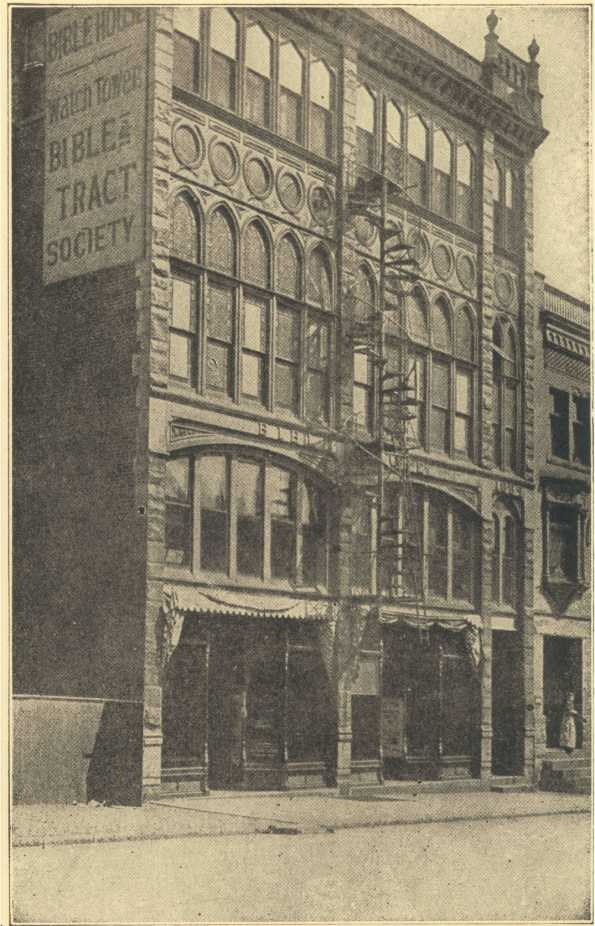The Bible House, Allegheny, Pa.
BLANK SIDE
We are also to bear in mind that he was the president of “The Watch Tower Bible and Tract Society,” a Pennsylvania Corporation, from the date of its charter in 1884 to the time of his death. He was likewise President of “The People’s Pulpit Association,” organized in New York in 1909, in order that the “Society” could legally do business in that State. He was also President of “The International Bible Students’ Association,” Chartered in London, England, in 1913.
As Pastor Russell made perfectly plain, The Watch Tower Bible and Tract Society is the parent organization, and the other two here mentioned are subsidiary; and so are in the control of, or subject to, the control of the “parent” organization. But as already stated, the Watch Tower Society could not hold and control property in the State of New York, because of the character of its charter, which was granted in the State of Pennsylvania. Hence, to bridge this difficulty, “The People’s Pulpit Association” was organized under the laws of the State of New York, when the Society moved its Headquarters to Brooklyn in 1909. Then, in order to make the scope of the work what Pastor Russell desired it to be—international in character, or world-wide in range and opportunity—The International Bible Students’ Association was chartered under English laws. But no matter which name was used during “that Servant’s” lifetime, they all stood for Charles Taze Russell. Note the following clause from his will:
“In view of the fact in donating the Journal, Zion’s Watch Tower, the Old Theology Quarterly and the copyrights of Millennial Dawn Scripture Studies Books and various other Booklets, Hymn-books, etc., to the Watch Tower Bible and Tract Society, I did so with the explicit understanding that I should have full control of all the interests of these publications during my lifetime, and that after my decease they should be conducted according to my wishes.”
This clause makes plain the relationship he understood to exist between himself and The Watch Tower Bible and Tract Society; also what his wishes were in respect to its general management after his death, and as to these particulars see other clauses of his will, published in another part of this book, and which we commend to the careful reading of all.
“JEHOVAH, our God, is the great Emperor of the whole universe, and His wisdom, power, goodness and benevolence are abundantly equal to all the responsibilities of so exalted an office. The human mind staggers in its efforts to comprehend the mental resources of a Being who is able to assume and to bear such responsibility. Think for a moment of the memory that never fails, of the judgment that never errs; of the wisdom that plans for eternity without the possibility of failure for ages to come; of the power and skill that can harness even every opposing element, animate and inanimate, and make them all work together for the accomplishment of His grand designs; of the tireless vigilance which never ceases nor seeks relief from the pressing cares of universal dominion—whose eye never sleeps, whose ear is ever open; and who is ever cognizant of all the necessities; and active in all the interests of his broad domains.” —Pastor Russell.
Also the Pyramid of Gizeh
Another matter which may be of interest to a great many Bible Students is that respecting Pastor Russell’s mission to the Jews. In the year 1910 he made an extended trip through Russia and Palestine, and there delivered lectures to thousands of orthodox Jews on the Regathering of the Jews to Palestine. He preached usually, I think, from Isaiah 40:1,2, at least the message he delivered was based upon the thought contained in that text; because it was a message of “comfort” surely. Many of the Jews proclaimed that he brought them more comfort from their Scriptures (Old Testament) than they had ever found there themselves. After hearing him in Jerusalem a Jewish editor spoke in such praise of him and his message that he said among other things, “A new Prophet had risen in Israel.”
The unfulfilled promises to the Jews, spoken of hundreds of times by the prophets of old and reaffirmed in the writings of the New Testament, attracted Pastor Russell’s early attention, and consequently the time of restoration of the Jews in Palestine, as a nation, became a question of almost paramount importance to his mind. In order to verify, or disprove, certain claims of supposed facts, Pastor Russell visited the Holy Land in 1892, and did thus verify much of the valuable information contained in his third volume of Scripture Studies, wherein he interestingly treats the complex Jewish racial problem—past, present and future.
This trip was the real beginning of a campaign to attract the attention of the world to the future inheritance of the natural seed of Abraham. During the following twenty years, Pastor Russell wrote much on Jewish topics and addressed many Jewish audiences on Biblical Zionism, pointing out the significance of many unfulfilled promises to them by Jehovah.
On this tour of investigation Pastor Russell again visited Egypt, and re-examined God’s great “Stone witness” at the “border thereof,” and he also again confirmed what he had previously found, that this, the greatest of the World’s Wonders, strangely corroborates the Bible testimony regarding God’s Great Plan.
THE GREAT PYRAMID OF GIZEH
The wonderful “Stone Witness” at the border, yet in the center, of Egypt stands strangely related to the hope of the Jew, and Pastor Russell has most interestingly treated the measurements, angles, shapes, size, weight, passage-ways, King’s Chamber, Queen’s Chamber, etc., as positive corroborative evidence of the time features indicated in the prophecies of the writers of old.
His findings, as explained in the symbolic language of Holy Writ, read like a remarkable piece of fiction, when in reality it is a plain, yet entrancing narrative of Jehovah’s Plan, as respects the various ages and His dispensational dealings with the human race, terminating with the full restoration of the Jewish people in the lands of their fathers, during the “times of restoration of all things.”
Prof. C. Piazza Smyth, F.R.S.E., F.R.A.S., Ex-Astronomer Royal for Scotland, in a letter written from Clova, Ripon, England, December 21, 1890, commenting on Pastor Russell’s interpretation of the Pyramid, said in part:
“At first I could only find slips of the typewriter, but as I progressed through the pages, the powers, the specialties and the originalities (italics supplied) of the author came out magnificently; and there were not a few passages I should have been glad to take a copy of for quotation in the next possible edition of my own Pyramid book. But of course I did nothing of the sort, and shall wait with patience and in most thankful mood of mind for when the author shall choose his own time for publishing. So I merely remark here that he is both good and new in much that he says on Chronology of the various parts of the Pyramid, especially the First Ascending Passage and its granite plug; or the Grand Gallery, as illustrating the Lord’s life; on the parallelisms between the King’s Chamber and its granite against the Tabernacle and its gold; and generally on the confirmations or close agreements between Scripture and the Great Pyramid.”
The late Dr. John Edgar, M.A., B.S., M.B., C.M., F.F.P.S.G., of Glasgow, Scotland, with his brother Morton, in 1909, visited the Great Pyramid to critically test Pastor Russell’s deductions. Their verdict, after a most elaborate investigation, was a thorough endorsement of Pastor Russell’s interpretations of God’s Stone Witness, the Greatest of the World’s Wonders. From Pastor Russell’s “Around the World Tour” booklet.
In this connection we recall the words of the prophet, who declares:
“In that day (this day now) shall there be an altar to the Lord in the midst of the land of Egypt, and a pillar at the border thereof to the Lord. And it shall be for a sign and for a witness unto the Lord of hosts in the land of Egypt.” —Isa. 19:19,20.
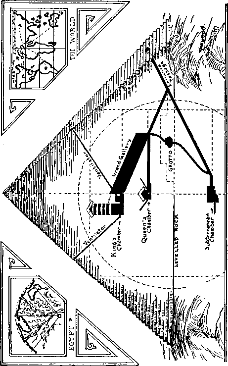Built 2170 B.C., probably by Melchizedek. In its symbolic language it so states. Seemingly every stone in this, the most remarkable building in the world, has been made to testify by Pastor Russell in his remarkable interpretation.
During his absence in Europe, as mentioned in the preceding chapter, arrangements had been made at the instigation of the Jewish Editors of New York City for Pastor Russell to address a “Mass Meeting of Jews” at the great Hippodrome, which was done on Sunday afternoon, October 9, 1910.
At the appointed time Pastor Russell appeared on this mammoth stage and proceeded to the front where there had been placed a small lectern for the occasion. Gracefully he approached this, picked up from the stand a Leeser’s translation of the Old Testament and read from Isaiah 40:1,2. He then proceeded to show from many Hebrew Scriptures that we are living in the day when that text is due to be, and is being, fulfilled, that her appointed time is accomplished; her iniquity is pardoned, because she has already received double of the Lord for all her sins. Throughout that masterful lecture he never used the word Christ; he was too diplomatic; when he had occasion to refer to Him he invariably said, “Your Messiah and My Messiah.”
It was said that all the leading orthodox Jews of the city—editors, rabbis, elders, etc.—were present. These had come there with the Bible in their hands and the thought in their minds that Pastor Russell would attempt to proselyte
them, so they were present in great numbers to combat any statement he might make along this line; but when they realized that their fears were unfounded, which they did before he had been talking fifteen minutes, they settled down and began to enjoy his forceful, logical, Scriptural presentations. I occupied a position where I could see well the speaker and at the same time note the effect his words were having upon the rabbis and editors who had taken seats in a body pretty well toward the front.
At first there was a distinct air of coolness manifest in this “gathering of Israel” who had been brought together to hear this most noted Gentile preacher; but this air did not last for long. Ere long pleasing zephyrs were distinguishable; and soon some heads began to nod, then this gradually became more general, until finally one might have easily imagined himself in a Methodist revival meeting but for the absence of the sonorous “Amens!” But their joy could not be subdued, for ere long they began giving expression to their emotions by general and frequent hand-clappings. At the close, and without the lapse of a moment, the quartette started up the Jewish national air. At its conclusion the Jewish audience rose in a body and gave vent to their emotions by long and emphatic applause.
Thus closed Pastor Russell’s earnest effort to “comfort Jerusalem.” Surely he spoke “comfortably” to them that day. Following this “Die Stimme”—in Yiddish—was printed and broadcasted all over the world where there were earnest and honest-hearted Jews desiring to have their faith more firmly established in Jehovah’s promises to His ancient people; for, as Saint Paul declared, “God hath not cast away His people which he foreknew.”
Pastor Russell Addresses Hebrews
The following is an unbiased report from the worldly standpoint of this wonderful meeting by one of the greatest metropolitan dailies:
“The unusual spectacle of 4,000 Hebrews enthusiastically applauding a Gentile preacher, after having listened to a sermon he addressed to them concerning their own religion, was presented at the Hippodrome yesterday afternoon, when Pastor Russell, the famous head of the Brooklyn Tabernacle, conducted a most unusual service.
“In his time the venerable Pastor has done many unconventional things. His religion is bounded by no particular denomination, and encompasses, as he says, all mankind. His ways of teaching are his own. But he never did a more unconventional thing that this—nor a more successful one.
“He won over the great audience that had come—some of it, at least—prepared to debate with him, to resent, perhaps, what might have appeared like a possible intrusion. ‘Pastor Russell is going to try to convert the Jews to Christianity,’ was the word many had received before the meeting. ‘He wants to proselyte us.’
“In the crowd which filled the big show were scores of Rabbis and teachers who had come to speak out in case the Christian minister attacked their religion or sought to win them from it. They had questions and criticisms ready for him. He was received at first in dead silence.
“But the Pastor did not seek to convert the Jews. To their unbounded delight, he pointed out the good things of their religion, agreed with them in their most important beliefs as to their salvation, and finally, after a warm advocacy of the plan of the Jews establishing a nation of their own, brought about a tumult of applause by leading a choir in the Zionist anthem: ‘Hatikva—Our Hope.’
“A more interesting gathering the Hippodrome never held. From all parts of the city came serious-minded Hebrews to hear what it was that an alien, a Gentile, might have to say to them at a service, held during their week of feasting—Rosh Hashanah. They were quiet, well dressed, thinking men and women.
“Among them were many figures of the Hebrew literary world. Some of these escorted Pastor Russell to the Hippodrome in a motor car and then took their places in the audience. The literary men recognized the Pastor as a writer and investigator of international fame on the subject of Judaism and Zionism. Some of those present were: Dr. Jacobs, editor of the Hebrew American; W. J. Solomon, of the Hebrew Standard; J. Brosky, associate editor of the same; Louis Lipsky, editor of the Maccabean; A. B. Landau, of the Warheit; Leo Wolfson, president of the Federation of Roumanian Societies; J. Pfeffer, of the Jewish Weekly; S. Daimont, editor of the Jewish Spirit; S. Goldberg, editor of the American Hebrew; J. Barrondess, of the Jewish Big Stick; and M. Goldman, editor H’ Yom, the only Jewish daily.
“No symbol of any religion at all greeted them when they looked at the Hippodrome stage. It was entirely empty save for a small lectern and three peace flags hanging from the silken cords above. One was the familiar silk banner with the stars and stripes in the center, together with the words ‘Peace among the Nations’ in letters of gold. Another bore a rainbow and the word ‘Pax.’ The third was a silken strip bearing miniature representations of the nations’ flags.
“There were no preliminaries. Pastor Russell, tall, erect and white bearded, walked across the stage without introduction, raised his hand, and his double quartette from the Brooklyn Tabernacle, sang the hymn, ‘Zion’s Glad Day.’ The members of this organization are Mrs. E. W. Brenneisen, Mrs. F. C. Detwiler, Miss Blanche Raymond, Mrs. G. B. Raymond, Emil Hirscher, C. E. Meyers, J. P. McPherson and W. J. Mockridge. Their voices blended perfectly, and the hymn, without any instrument, was impressive.
“But still there seemed an air of aloofness about the audience. They did not applaud, but sat silently watching the stalwart figure of the Pastor. When he began to talk, however, they gave him respectful attention.
“With a powerful, yet charming voice, that filled the great playhouse, the unconventional clergyman made his every word audible to the hearers. His tone pleased their ears, his graceful gestures soon captivated their eyes, and in a few moments his apparently thorough mastery of his subject appealed to their minds. Though still silent, the 4,000 listeners were warming up to him.
“It was not long before all reserve, and all possible doubt of Pastor Russell’s entire sincerity, were entirely worn away. Then the mention of the name of a great Jewish leader—who, the speaker declared, had been raised up by God for the cause —brought a burst of applause.
“From that moment on the audience was his. The Jews became as enthusiastic over him as though he had been a great rabbi or famous orator of their own religion. He hailed them as one of the bravest races of the earth—having kept their faith through the persecution and cruelties of all people for thousands of years. And he predicted that before very long they would be the greatest on earth—not merely a people any longer, but a nation. By a system of deductions, based upon the prophecies of old, the Pastor declared that the return of the Kingdom of the Jews would occur in the very near future, signs of which would be apparent by 1914. Persecutions would soon be over and peace and universal happiness would triumph.
“As he brought his address to a conclusion the Pastor raised his hand again to his choir. This time they raised the quaint, foreign-sounding strains of the Zion hymn ‘Hatikva’ (Our Hope), one of the masterpieces of the eccentric East Side poet, Imber.
“The unprecedented incident of Christian voices singing the Jewish anthem came as a tremendous surprise. For a moment the Hebrew audience could scarcely believe their ears. Then making sure it was their own hymn, they first cheered and clapped with such ardor that the music was drowned out, and then with the second verse, joined in by hundreds.”—New York American, October 9, 1910.
’Twas but a little light she bore, While standing at the open door; A little light, a feeble spark, And yet it shone out through the dark With cheerful ray, and gleamed afar As brightly as the polar star.
A little light, a gentle hint, That falls upon the page of print, May clear the vision, and reveal The precious treasures doubts conceal, And guide men to an open door, Where they new regions may explore.
A little light dispels the gloom That gathers in the shadowed room, Where want and sickness find their prey, And night seems longer than the day, And hearts with many troubles cope And feebler glows the spark of hope.
Oh, sore the need that some must know While journeying through this vale of woe! Dismayed, disheartened, gone astray, Caught in the thickets by the way, For lack of just a little light
To guide their wandering steps aright.
It may be little we can do To help another, it is true, But better is a little spark Of kindness, when the way is dark, Than one should walk in paths forbidden For lack of light we might have given.
BLANK SIDE
A Committee of Seven Tour the World
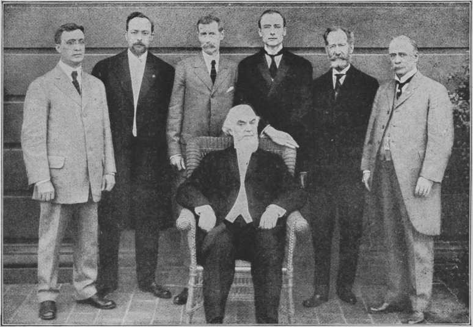From left to right: E. W. V. Kuehn; Dr. L. W. Jones; Gen. Wm. P. Hall, U. S. A.; Pastor Russell; Prof. F. H. Robison; Robert B. Maxwell; J. T. D. Pyles.
CHAPTER XIV
The International Bible Students Association at the Washington, D.C. Convention in July, 1911, appointed a committee to investigate Foreign Missions. As millions of dollars are annually spent in the foreign mission field, the Association, for its own information, as well as for the benefit of all contributors, desires to ascertain definite knowledge on the following points: First—Are the Foreign Missions being conducted along Christian business lines? Second—To what extent are the methods used successful in reaching the heathen peoples and in bringing them to Christianity? Third—What are the teachings, what the inducements to accept Christianity and how enduring are the results? Fourth —What is the attitude of Heathendom toward the missionaries and toward Christianity and what are the prospects for Foreign Missions becoming self-sustaining? Fifth—What, if any, changes could be made in teaching or in financial administration to make the foreign mission work more successful in the future? Sixth—What hope is there for the conversion of the world in this generation as proposed by the Laymen’s Missionary Movement with its thirty-million-dollar endowment? Seventh—To what extent do the moneys donated benefit the heathen and could any improvement along this line be suggested?
General and categorical answers to these questions were given after the World Tour and were printed in The Watch Tower of April 15, 1912, to which we refer the reader for some very valuable detailed information. The Report is quite too lengthy to reproduce here.
While on the World Tour, Pastor Russell again visited Palestine, also the Jews in Galatia, further explaining to them the significance of the prophecies of the Old Testament, pointing out to them how the time is at hand for favor to return to the Jews, marking their early re-establishment in the Holy Land. By these poor and long-blinded people he was given a warm welcome, for they were learning to look upon him as a real friend. They not only recognized this fact, but began to broadcast this information to the Jews in all parts of the world.
The object of this tour was to arouse in the public mind greater interest in his movements and message; therefore, in his sermons which began to have a phenomenal success about, or immediately following this event, were given increased momentum. The purpose, of course, was to give wider publicity to the Truth by thus making for himself and his sermons more of an international reputation. Here again he showed great sagacity, as results abundantly proved. Many of the newspapers thereafter sought the privilege of publishing his sermons, while those who had previously been disposed to “try them out” were glad of the opportunity to renew their contracts. So thus the Lord guided the hand at the helm in order that the work at that time might go grandly on.
In this world tour he visited, among other points, China, Japan, Korea, India, Arabia, Egypt, Philippine Islands, etc., and personally and through the assistance of the other members of the “Committee” made careful observation and study of the social and religious conditions in these strictly “Heathen” countries. The itinerary of this world tour will be found in The Watch Tower of December 1, 1911. A rather detailed report of this tour may be found in the April 15th issue of The Watch Tower of 1912. What was said in The Watch Tower of January 1, 1912, first cover page, from Pastor Russell’s own pen, may be interesting to thousands who have never read it, and quite refreshing to all who have. It gives, in the pleasing style of the author, the reasons why this “World Tour” was undertaken, what actuated the endeavor, involving so much of time, of expense, and of human exertion, both of a physical and an intellectual character. Here, then, are his words:
“The Newspaper Syndicate handling Pastor Russell’s sermons, believing that the World Tour of the Foreign Missions Investigating Committee, of which Brother Russell is chairman, would furnish interesting ‘copy’ for their list of patrons and news editors in general, which we understand to mean a still more extensive promulgation of Present Truth, have gotten out a very attractive pamphlet, descriptive of some of his successful meetings at home and abroad, and containing illustrations which have appeared in the press of the world, together with various items in Brother Russell’s history, said to be desirable matter in newspaperdom.
“Since first the round-the-world-trip was mentioned in The Watch Tower, considerable interest has been manifested in the movement by the dear friends in various parts of the world, believing with us that it is no unimportant step in the Harvest Work, furnishing, as it does, a still greater opportunity to proclaim the Gospel in all the world for a witness.”
The foregoing was preceded by an interesting item, from the same pen, in The Watch Tower of December 15, 1911, referring to the same matter, so we append it here:
“The Pastor Russell Lecture Bureau is the style of a newspaper syndicate which handles Brother Russell’s weekly sermons. This syndicate felt a deep interest in the World Tour and published a pamphlet descriptive of said tour and containing sketches of Brother Russell’s younger days, gleaned from an article in the National Encyclopedia of American Biography, Vol. XII. Several Watch Tower readers saw the pamphlet and urged that it be made a part of the January 1st issue. We have adopted the suggestion, believing it would be interesting to all of our readers. The value will be enhanced by the printing of the outside cover of that issue in colors, thus making that page suitable for framing, if desired. On the other cover pages we purpose a reproduction of a new and very popular picture of our Lord and His Apostles passing through a wheat field, Jesus and Peter in conversation, John following, then James, Matthew the Levite, and others. We are sure that this picture will be appreciated by every Watch Tower reader. It is quite a work of art and could probably not be purchased in any book store for less than fifty cents.”
The Great Hippodrome Meeting
Here again is an event and a picture that call for the matchless power of Dickens to portray. First, we draw attention to the platform, or stage, which was of such dimensions that 1,000 people could easily be seated there-upon. But on this occasion it was not used for such purpose. Instead it was converted into an imaginary though miniature Garden of Eden.
The seating capacity of this mammoth auditorium is about 7,000. Long before the time for beginning the lecture the first floor and the balcony were practically filled, yet everything was quiet and orderly. Promptly on time, the drop curtain hiding that immense stage, which was about 75 feet across, began to rise in a slow but almost solemn way, and as it did so you could sense that the people began to hold their breath —because that was just what you and I were doing; finally, when the indescribable scene or picture, which but a few moments before was hidden from sight, but suddenly, as it were, was brought into full view, people all over the house could be heard gasping, O! O! Wonderful! Wonderful! Magnificent! Gorgeous! Beautiful! Glorious! and about all the adjectives descriptive of things pleasing to the eye, could be heard coming from all parts of the auditorium.
And well might this have been so under the circumstances; for there was surely sufficient cause to excite all these and more exclamations. To few in a lifetime is it given to behold such a wonderful sight! The whole stage was a mass of potted trees, shrubbery, plants, vines, creepers, flowers, all so artistically arranged that the eye was dazzled by the beauty and gorgeousness of this all-inspiring picture, which, breaking so suddenly upon our view, momentarily overwhelmed the mind. A veritable Garden of the Gods was before our eyes.
The stage floor was covered with a neatly arranged sod, giving the pleasing effect of real lawn. Then the plants, shrubs, creepers, vines and a wonderful vision of potted roses, lilies and a magnificent variety of flowers of the most exquisite colorings, filled in every available space for artistic and pleasing effect. In the background was an imperial “Cross and Crown,” probably twenty-five feet high, made of wood. The “Crown” was neatly covered with green vines, en masse, while the “Cross” was covered with red and gold creepers. An artistic winding pathway had been “cut” through the lawn, between the plants, trees, shrubberies and banks of flowers, leading down to the lectern. O what a picture! A lady sitting near the writer, one who had traveled all over Europe many times, was heard to exclaim with delight, that this was the most gorgeous display of flowers, plants and shrubberies she had ever beheld in her life. It was said that there were $50,000.00 worth of these. Brother A. N. Pierson of Cromwell, Connecticut, was the “landscape gardener,” the artistic designer, and the chief donor, though I was told at the time that some pieces had come from various parts of the United States and Canada. This picture can never fade from the minds of those who were privileged to behold it.
At the appropriate time a select quartette sang hymn number 72. This was graciously received. At its conclusion, Brother Russell was seen emerging from the rear of the stage, and coming down that winding pathway with the simple dignity and grace for which he was well reputed, the whole picture being emphasized by his unusual countenance, beautiful white beard and long, flowing white hair. Truly this was impressive!
This meeting was held at the conclusion of the world tour, March 31, 1912, to more than a capacity house.
PHOTO-DRAMA OF CREATION
The Most Wonderful Feature of the Harvest Work
In this review we would not overlook the importance of the most astounding feature of the Work ever devised and developed—The Photo-Drama of Creation. And even at this time it seems impossible to say just which was the most wonderful feature of this work, for there were so many points of an amazing character. We stood all astonished at the conception, as well as the execution of all the details. Several years’ time was required to work out the scenario in detail and to gather the material, human and otherwise, for its accomplishment. The production alone is said to have cost more than a million dollars.
The moving pictures alone were the grandest, most beautiful, as well as the most instructive, of anything ever seen before or since on the cinema-screen. People looked upon these in wonderment. The colorings, to say nothing of the marvels in production, were superb, and all of which was done by consecrated talent. To criticize adversely this marvelous production the prerequisite would of necessity be a hypercritical cast of mind. While the pictures (moving and slides) were the acme of beauty and charm, and correspondingly entertaining and instructive, I believe the most marvelous part of the whole drama was the lectures on the phonograph. Herein the supreme achievement of the whole endeavor stands out.
Brother Russell was recognized as a master of simple, pure, expressive, constructive English, always; but taking these lectures as a whole they are marvels of conciseness and comprehensiveness. Only a great master could ever have produced such results. In his general writings we can justly say that no man ever wrote as did he, but in the scenario lectures he simply surpassed himself. No human being could possibly have produced such results unless the Lord had guided his mind and pen. The multum in parvo of all expressions in the human language—the much in little—is the Lord’s Prayer; but we are to remember who is its Author. The nearest approach to this, we confidently believe, is to be found in the scenario of the Photo-Drama of Creation.
We believe that we can not do better than give here the history of this most wonderful of all the features of the Harvest Work in the words of the master mind himself:
“After two years of preparation, the photo-drama was barely ready to give its first exhibition in January last (1914). It did not properly get started with full swing in America until April. In July we made a start in Great Britain. By September the drama had begun operations on the continent of Europe—in Germany, Switzerland, Finland, Sweden, Denmark. By October it had reached Australia and New Zealand. Few can appreciate the amount of labor involved in preparing each “drama outfit.” The arrangement and preparation of the films is comparatively an easy matter. Our difficulty lay in procuring copies of fine art pictures illustrative of the history of the world from the dawn of creation to the present and into the future. We adopted and adapted everything we could find already prepared and suitable to our purposes; but this left hundreds of paintings and sketches to be made from which in turn to make the stereopticon slides.
“With all this accomplished, a still further difficulty presented itself. We wished to have those beautiful pictures hand colored—really beautiful. To attain our purpose we had some painted in Paris and some in London, while the majority were done in Philadelphia and New York. We required of these artists their best skill in coloring. We should not forget to say that our own art room turned out a large share of the work. Although we are not adding to the number of panoramas with painted slides, yet the breakage is so great that even now we have twenty artists continually at work on replacements and in photographing and tinting the Eureka dramas.
“God kindly veiled our eyes as respects the amount of labor connected with the drama. Had we foreknown the cost of time and money and patience necessary for the start, we would never have begun it. But neither did we know in advance the great success that would attend the drama, for through it nearly eight million people in the United States and Canada have already heard a glorious message from the Word of God—a precious message that they will never forget; also that other hundreds of thousands in other lands are hearing in their own languages ‘wonderful words of life.’ We had twenty dramas, which in four parts were able to serve eighty cities each day. The audiences varied from four thousand to less than a hundred, according to place and circumstances.
“The classes that put on the dramas in the various cities experienced great blessings and also great trials. They had precious opportunities for serving and sacrificing time and money. These faithful sacrifices the Lord rewarded as He always does. It is safe to say that the drama has done as much for the friends of the Truth as for the public in general. This is surely saying a great deal; for in one city the newspapers published that in the week following the showing of the drama their police court records showed only one-half the usual criminal cases. The special advantage of the drama seems to have accrued to a certain class of people whose faith had well-neigh slipped, who were beginning to doubt the Bible and everything connected with the future. Some of these have written us very beautiful and pathetic letters of appreciation and thanks to God.
“We had various things to contend with in order to keep the dramas all busy every day. Train schedules were not always to our convenience. Then, too, the friends who engaged the place of exhibition could not always get the dates that would have served best. In order to adapt ourselves to the various times and seasons, opportunities, etc., it was often necessary to take what might have seemed a zigzag course. Hindsights might have enabled us to have done better in some instances, but we used the best foresight we had. We had a force of extremely competent brethren continually at work safeguarding the interests of the drama and the engagements. Perhaps a sufficient number of mistakes occurred to keep us all humble, to make us realize that then that which is perfect has come and that which is in part has been done away, the whole world may move better in consequence.
“The expenses of the drama were, first, the preparation of the films and the slides. This was considerably accomplished before the drama started, of course. But the large amount of money necessary for this preparation was not included in the statements of last year, and the year before. The friends who contributed this money were quite agreeable that it should be used for this purpose and not be reported until the drama should begin. Another item of expense was the railway fares of approximately one hundred and twenty people, their food, shelter, etc. The shorter their stay in each place, the higher the rates for board, lodging and traveling.
“However, there is another item of drama expense which does not appear in our report; namely, the expense borne by the various classes in connection with the drama presentation. It is difficult to estimate the total, but we do know of three cities which have spent more than ten thousand dollars each, in connection with the showing of the drama in their own cities.
We believe that it will be safe to say that the total amount expended by the different classes for preaching the Gospel through the drama would be somewhere between $150,000.00 and $200,000.00, in addition to what our financial report shows. What a wonderful blessing thus came to the Lord’s people! If it is more blessed to give than receive, as the Master declared, then surely these have had rich blessings.
“Doubtless many of our foes imagine that by this time The Watch Tower readers would be disconsolate, disheartened, and that many of them would be regretting that they had spent their money so liberally for the Truth. But not so! The spirit of service seems to burn within the hearts of the dear friends everywhere. Gratitude to God, appreciation of the truth and desire for further opportunities of service.
“Splendid reports are coming to us from the showing of the drama in Great Britain. It has been presented in London to large and appreciative audiences. It opened there in the Princess Theatre, remaining there for several weeks. Then it showed in various suburban districts of London before reaching the London Opera House. The presentation in this house has been phenomenal. It showed there approximately five weeks— afternoon and evening daily, including Sunday. In the evening hundreds were turned away—very much the same way as when the drama was shown in the great Auditorium Building of Chicago. In the London Opera House an exceptionally high class of visitors were present. Several hundred pounds sterling were voluntarily handed in. By the time the engagement at the opera house was closed, the interest was so great that the London friends themselves able to undertake the exhibition of the drama in the Royal Albert Hall—one of the largest and most notable auditoriums in Europe. It has a seating capacity altogether of 9,000, but probably not more than 5,000 could be comfortably seated and have a proper view of the screen.
“In various other cities of Great Britain two other dramas have been operating as continuously as possible, the dear friends demonstrating their love and loyalty by their self-sacrificing arrangements for the presentation. In the city of Glasgow the drama had an especially good reception.
“Good word reaches us, too, from Sweden, Denmark, Finland, Germany and Switzerland. In each of these countries very large auditoriums are obtainable. The people crowd to see the pictures and hear the lectures. The free scenarios are taken with avidity. The Lord’s blessing is with this work, and many hearts have been made glad. We have just heard from Australia that the drama there has started and bids fair to be a great success. Here is the way one couple was made happy, and so give expression to their joy: ‘My wife and I truly thank our Heavenly Father for the great and priceless blessing which has come to us through your instrumentality. It was the beautiful photo-drama of Creation which was the cause of our seeing and accepting the Truth. We are truly happy now; we were not happy before.’
“In our report we pointed out that, although only started recently, the Eureka drama service is proving a very efficient one, especially where it is taken into the small villages and towns. Empty churches, court-houses, schoolhouses, etc., are very generally obtainable when the people know they are to have a very interesting entertainment free of charge. The blessing in every case seems to be not only to the public, but especially to the hearts of the dear friends who are serving the public.”
One report of the success of the Eureka drama:
“We had a fourth meeting, a finale, at which was given an illustrated lecture. At the close of the lecture fifty names were handed in out of an audience of 125. All these meetings were held in the schoolhouse. The town is very small, there being not over 150 inhabitants. We had an average of at least 100 at every exhibition. Many farmers attended, and all seemed well pleased. The class has an automobile which is used in the work. We load up our paraphernalia and start off early to the place of meeting, so as to have plenty of time to set up the machine, etc. Prayer is first offered, asking the Lord’s blessing on the work, which surely has been with us.”
How the Photo-Drama Was Shown
To many it might prove quite interesting to know something as to the manner the photo-drama was shown to the public. There was a force of “field men” who traveled constantly all over the country and secured suitable moving picture theatres for the purpose of exhibiting free the photodrama, which was in four parts—one part being exhibited each day—usually consecutive days. There were twenty circuits in all, or 80 parts. Therefore the photo-drama was being shown in 80 cities and towns daily. In all, about 4,000 places were thus favored and 15,000 to 20,000 exhibits given; and it is estimated that the total number of people who witnessed these exhibitions would approximate ten millions of the rich and the poor of the land. Hundreds of people were thus brought to an appreciation of the goodness and wisdom of God, and so gladly consecrated their lives to Him and His service.
A case in point: The writer came in touch with a dear old sister in the State of Michigan, fully seventy-five years old, but whose mind was as clear and vigorous as if she had been but twenty-five. She first came in contact with the Truth through the photo-drama. She was as deaf as an adder, though had full possession of all other senses. She had been a Catholic of good standing, raised, as I recall, in that faith. Having heard something about the photo-drama she resolved to go and see it. Being well educated, therefore versed in Church history, she at once realized that the portrayals on the screen were in harmony with much she had read. Though she could not hear the lectures on the phonograph, she could and did read the free scenarios distributed. The logic and recognized facts prompted her to buy and read the Studies in the Scriptures.
Hence she lost no time in leaving the Catholic church, accepted the truth and was rejoicing therein when I last saw her. The photo-drama got her started and the Scripture Studies did the rest. Only the Heavenly Beings know how many people were really blessed, directly and indirectly, through this wonderful portrayal of God’s precious truth, on the screen and by phonograph.
Every “circuit” or “number” of the photo-drama required five motion picture operators, five phonograph operators, one field man and one finale lecturer, which were supplied from Brooklyn—besides the usual door-keepers, ushers and other attendants, as required. Each part of the drama had its own operators, so there was no crossing or confusion of duties and service. Let us therefore consider one day exhibits in four towns. Here, then, is the “circuit”: Asheville, Booneville, Charlottesville and Danville. We began on Sunday with part one at Asheville; Monday part one would go to Booneville, while part two would be exhibited in Asheville; on Tuesday part one would be exhibited in Charlottesville, while part three would be in Asheville and part two in Booneville; on Wednesday part four would be exhibited in Asheville, while part three would be in Booneville and part two in Charlottesville and part one in Danville. In rapid succession other “circuits” would be opened up—that was the duty of the “field man” to have theatres secured in advance so as soon as a part was released in one place it moved on to another. Each “circuit” would be closed with the “finale lecture” illustrated by slides and some of the moving films. It was a herculean task to keep all of these dramas going; and that was only part of Pastor Russell’s many-sided duties.
BLANK SIDE
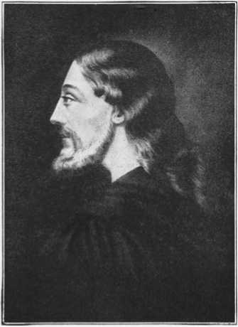Description of Our Lord from an Ancient Manuscript from Publius Lentulus, the President of Judea
There appeared in these, our days, a man of great virtue named Jesus Christ, who is yet living amongst us, and of the Gentiles is accepted for a Prophet of Truth; but his own disciples call him the “Son of God.” He raiseth the dead, and cureth all manner of diseases. A man of stature, somewhat tall and comely, with a very reverend countenance, such as the beholder may both love and fear. His hair of the color of a chestnut full ripe, plain to his ears, whence downwards it is curling and waving about his shoulders. In the midst of his head is a seam or partition in his hair after the manner of the Nazarites. His forehead smooth and his face without spot or wrinkle, beautified with a comely red. His nose and mouth so formed that nothing can be reprehended; his beard thickish in color like his hair but not very long. His look innocent and mature, his eyes gray, clear and quick. In reproving he is terrible; in admonishing courteous and fair-spoken; pleasant in conversation mixed with gravity. It cannot be remembered that any have seen him laugh, but many have seen him weep. In proportion of body and arms, well-shaped and perfect to behold. In speaking very temperate, modest and wise. A man for his singular beauty, surpassing the children of men.
Reverence, Benevolence, Sympathy, Outstanding Characteristics
What I have said of ages twenty-seven and thirty-six will, in a general way, apply to fifty-four, the principal difference being in degree of development during the years intervening, on account of time and experience in a very active life. Brother Russell’s life was one of the most eventful. From the time he first assumed responsibilities as merchant at the early age of twelve years and on to the close of life, he passed through the most trying experiences of any man since the days of the Apostles, and which would naturally tend to develop all his faculties, producing perceptible changes in shape of head and disposition, as well as features, so as to cause a marked difference in every way. As he was known to have devoted more than forty years of his life to the Harvest Work, this would bring into action the moral faculties, giving him an expression of reverence for God. And for all Christians, as well as humanity, a kind, loving, benevolent and sympathetic expression are outstanding characteristics. Then, too, other faculties would be brought into requisition to conduct the immense business of the Harvest Work, which would make an indelible impression upon his face.
Age 54 PROF. C.A. HEWES.
Mellowness Clothes Religious Warrior
Pastor C.T. Russell, at age fifty-four, has the appearance of one having about seen the realization of his hopes, aims, and labors of a lifetime. A certain mellowness has now clothed the religious warrior. The fruits of the spirit are beautifully in evidence. The large mouth, though firm and full of character, is soft and kindly and with an endearing frankness about it as if he reveled in pouring out to all gracious words from the fullness of his heart. There is a full appearance of spiritual attainment and grasp, and mental illumination broadened by the spirit. There is a confident look and expression as of one who clearly and firmly declares, “I know in whom I have believed,” and “I am not ashamed of the Gospel of Jesus Christ.” Here we see the triumph of faith that overcomes the world. If anything, the eye-brow is higher still, and more arched, indicative of the developed faith faculty that relies implicitly on the right arm of the Almighty God, and His Word, and clearly perceives the oncoming glory of the ages to come. Such a goodly face could only be indicative of a heart already made beautiful by Christ. Only one prejudiced and evil at heart could read evil in such a face and wickedness in such a heart and life.
PROF. EDUMND G. WALTERS.
BLANK SIDE
CHAPTER XVI
Great and Good Men Always the Victims
Probably no great man of modern times was so grossly misunderstood by the public generally and so wholesomely hated by certain factions, particularly the clergy class, and others, who profess to be followers of the lowly and humble Nazarene, who taught us to love our enemies—to speak evil of none; probably no great man of any age had so many intensely bitter enemies as had Pastor Russell, yet he never did anything in all his three score years to engender hatred in the heart of any human being—especially if their hearts were filled with Godly fear instead of slavish fear. But our Lord taught us to not think strange of the fact that the world and all who have the spirit of the world should hate us and say all manner of evil against us falsely—for His sake. He was misunderstood, misrepresented, reviled, hated and finally crucified as a malefactor, though He was holy and harmless, still He reviled not again. He set us the example and Brother Russell followed it religiously, saying among other things, if he “should stop to kick at every dog that barked at his heels he would never get anywhere.”
“My life is hid with Christ in God. Nothing can by any means stop my work until it shall have accomplished this Divine intention. Until then, I am immortal as respects my life. When, from the Divine viewpoint, my work shall have been accomplished, the Adversary, no doubt, will have full power, not only against my reputation, but also against my life.
“When God’s time shall come, I am ready to be offered. Only if, in God’s providence, I should perish as an evildoer, let not my friends forget that so others have perished, martyrs to their convictions and their faithfulness to the Word of God. Of these were Saint Paul, Saint Stephen, John the Baptist and our Lord Himself.”—Pastor Russell.
His was not a mind of “doubtful disputation” on any subject, but on the contrary he was a man of clear and positive convictions on all matters, especially those that had any relationship to the Lord and His cause. On all matters pertaining to the Bible he was prepared to give a reason for his belief. Like him we, too, should know what we believe and why we believe it; for a doubtful man is unstable in all things.
Saint Paul, you remember, enjoins that we should “prove all things.” “That Servant” in commenting upon this text said in one place that, “It is our duty as Christians to prove all things that we accept;” further, that we “can not shirk our personal responsibilities by placing them upon teachers.” Still further, that “the same principles hold good in temporal, as well as in spiritual things.” Again, he once declared through the columns of the Tower that “Those who are so unfair in mind as to tenaciously hold to that which they have never proved by sound logic or the Word of God, are rightly called Bigots;” and a Bigot is defined as one who will not reason; and a fool as one who can not reason; again, “one who is blindly and obstinately devoted to his own Church or opinions is a slave.”
On one occasion “That Servant” was asked as to what extent the Pilgrims should preach “Brother Russell,” and his reply was, Not at all! You have plenty, dear friends, to preach about, and you know the Apostle said, ‘We preach Christ.’ Brother Russell is very glad if the Lord has used him as a finger-board to point the right road to your feet, that you can see wonderful things in the Word of God, but it is not Brother Russell, but it is the Lord, who has used him. So my advice is that you do not search the Scriptures to find anything about Brother Russell, but that you search the Scriptures to find things about the Glorious One, whom we all reverence. You remember we had already pointed to it fifteen years ago and made the statement applicable. You remember that John the Revelator had seen this and that and other things, and he said he fell at the feet of the angel who showed him these things; then the angel said, ‘See thou do it not: for I am thy fellowservant.’
“That is the right thought, but there is a tendency in this direction, and danger of worshipping the Creature, or instrument, rather than the Creator, who uses the instrumentality. Let us not make the mistake. I do not want any one to make that mistake through any inadvertency on my part.”
We may very properly honor and respect those who give evidences of worthiness—“honor to whom honor is due”—is the Scriptural injunction; therefore, we can give honor and show respect to those to whom such are due without incorporating the thought of reverence, an emotion which should be properly limited to our Heavenly Father and His Glorious Son.
Many fail, yet not all, to make a clear cut distinction between respect, esteem, honor, veneration, and worship, reverence, revere; the last three are expressive of sentiments which are properly to be associated with the Divine Charac-ter—Jehovah and His exalted Son; whereas, the former terms may, under favorable conditions, be intimately connected with men. In the strict sense, to reverence or revere carries the thought of holding one in mingled love and honor with a measure of sacred fear; as, for instance, that which, while lovely, is sublimely exalted and which brings upon us by contrast a sense of our unworthiness. To revere, therefore, is wholly a spiritual act, while to reverence is to give outward expression to the reverential feeling.
Emotion is the moving of the mind or feelings in one direction or another; and these may be pleasant or unpleasant, joyful or sorrowful, hence would have some sensible effect on the body in its course, as well as of the mind in its activity.
Esteem is said of persons generally; it denotes a union of respect and kindly feeling; in the highest sense it conveys the thought of moral approbation; esteem, therefore, combines the thought of appreciation of character, valuation of good works and respect, because of loftiness of mind; additionally, we may venerate a person possessing qualities of mind and character which win our appreciation and call for our approval; we respect him for his sincerity of purpose and devotion to principle; hence, hold him in exalted honor; nevertheless we may not worship or revere any human being. On the other hand, we do not venerate God, but we do and should reverence and worship Him, serve Him with reverence, for “He is the Lord, worship thou Him:” again, “Thou shalt worship the Lord thy God, and Him only shalt thou serve.”
We can honor a man without worshipping him, and it seems perfectly plain that if we do not honor the one whom God has honored, we cannot honor God. Thus as Saint Paul says, “Many profess to know God, but by their works they deny Him.” Pastor Russell was an instrument of God, and as such was honored by him.
With this analysis before our minds, perhaps we may now approach a very delicate feature of our subject in the proper spirit and with the right understanding of the matter; therefore, in showing our esteem for Brother Russell, as a man and as a Christian, may the charge no longer be made that we, as a body of Christians, are “Russellites,” hence are worshipping him. Much misunderstanding and misconception often arise as a result of ignorance, lack of an intelligent grasp of the subject under consideration. We must not, then, charge against the heart that which is clearly attributable to the fault of the head. A well-balanced mind is, therefore, swayed to neither extreme; whereas the opposite would be shown by a lack of proper appreciation: by failure to bestow honor where honor is due, or of worshipping where it is not only unbefitting but positively forbidden, is a fault common to the fallen race.
Exhortation
Believe firmly, hope joyfully, love fervently, work diligently, watch continually, pray earnestly, walk humbly in the light; then see if the armor is securely buckled, and run and don’t be weary. Lastly, stand in the faith steadfast, and wait quietly for your Bridegroom who will not tarry.
The Garden of Gethsemane was an olive orchard, the name indicating an oil press; this is significant, as we remember our Lord’s crucial experiences. Having done all in His power to prepare His disciples for the coming ordeal, now that He was alone His thoughts turned upon Himself. He foresaw the public shame of His trial and conviction as a blasphemer and seditionist, as well as his public execution; all this was cause for deep, poignant sorrow. Apparently death in any form would have been sufficient for the ransom sacrifice, but for other reasons it pleased the Father to lay upon Him the shame and ignominy of the Cross. One thing we are assured—that the Lord through His experiences can truly sympathize with, and succor each one of His followers. This is in accord with the Apostle’s words: “We have not a high priest who can not be touched with the feeling of our infirmities; but was in all points tempted like as we are, yet without sin. Let us therefore come boldly unto the throne of grace, that we may obtain mercy, and find grace to help in time of need.”
Jesus my heart’s dear refuge, Jesus has died for me;
Firm on the Rock of Ages ever my trust shall be,
Here let me wait with patience, wait till the night is o’er;
Wait till the glorious sunlight rises to set no more.
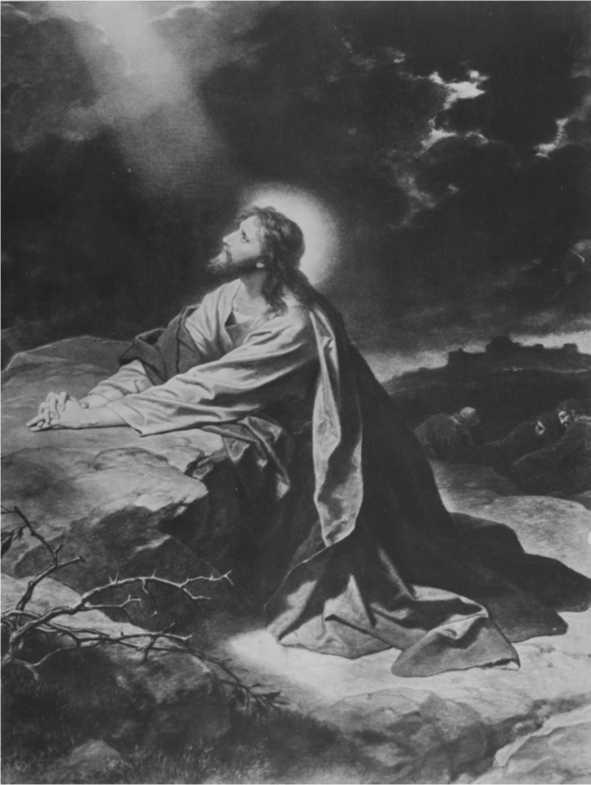BLANK SIDE
CHAPTER XVII
It is the writer’s conviction that any one perusing carefully, and with a mind free from bias, the report from Brother Russell’s own pen will find little indeed to support the thought that he had any predecessor in the office he was chosen from his birth to fill, just as there has never been, and never will be, any successor in said office; any more than there was a successor to Moses, as the Mediator of the Law Covenant; and of the twelve specially chosen Apostles to be “the twelve foundation stones” of the Church.
Clearly, Mr. Barbour did not possess at any time, independent of what he learned from Charles Taze Russell, sufficient light on God’s entire plan to have qualified him for such office—“ruler over all His goods;” since, as we have said, the only point he had in advance of Brother Russell, was in respect to our Lord’s presence; but there is nothing in the record to show that he was “found so doing” in 1874; for at that time he was not doing anything more than holding his hands, until young Russell took hold of him, shook him up and got him started in the right way. The facts, as we now have them clearly before our minds, do not fit the Scriptural requirements of the one who was to be “ruler over the Lord’s goods.” Reason, therefore, declares that Mr. Barbour did not, at any time, fill the office of “that servant;” primarily is this proven by the fact that Mr. Barbour was not “giving” anything to the “household of faith,” when Brother Russell “discovered” him; at which time, as the facts bear out, he was waiting more or less like Micawber, “for something to turn up,” while at the same time young Russell was busily “turning things up”—bringing forth light—“meat in due season.”
The facts abundantly show, we believe, that Charles Taze Russell was in reality the only one who filled, in any sense, the office of “that faithful and wise Servant.” The “Keynote” of the teachings of Brother Russell was the Ransom; and he showed that everything pertaining to man’s recovery from sin and restoration to original perfection is based upon the ransom sacrifice and redemptive work of Christ Jesus our Lord, who, as a Man, “gave Himself a Ransom for all.” It was in 1872 that young Russell, then just twenty years old, received clear light on this important subject, which Mr. Barbour very evidently never did see clearly.
It was in the same year, likewise, that the doctrine of Restitution, based upon the Ransom, was clarified before his mental vision. And this brought the full assurance that ALL in their graves of necessity must come forth. This important truth Mr. Barbour also received from young Russell, who at this time came to also recognize the difference between “the Man who gave himself” and “the Lord from Heaven” who came as a spirit-being, unobserved of men in 1874, though he did not learn of this presence until some time later, as already mentioned. Thus he discerned the object and manner of our Lord’s return. The only thing, therefore, that Young Russell received from Mr. Barbour in the way of light was in respect to prophetic time, as it relates to the above stated facts. For this he acknowledged indebtedness to Mr. Barbour, from whom he gained the first rays of light, as to time, in January, 1876.
May we not properly note just what the Scripture says on this subject, examining the Diaglott rendering: “But if that Servant should wickedly say in his Heart, My Master delays”—or taking Weymouth’s translation, “My Master is a long time coming”—we see that the facts, as we have just reviewed them, could not be harmonized with the phraseology, if we attempt an application of them to Mr. Barbour; and it seems that all close students of the Word should have cognized this discrepancy long ago. Notice further: “and should begin to Beat his fellow-servants” —plainly there is nothing whatever in the records we have that Mr. Barbour ever “beat” anybody, or that there were any considerable number of servants at that time who might have been beaten.
Aside from the facts, as noted, let us carefully examine the phraseology of the whole text, and particularly the qualifying word therein; by so doing we shall find the Master does not say there would be an evil-hearted Servant at all, but merely implies there was a possibility of “that servant” becoming evil. Note His words: “But IF” should not be interpreted to mean “Will;” yet that is just the thought we, as a body of Bible students, have for years acquiesced in. But we now see that we presumed entirely too much; we assented to a proposition, not only without evidence, but when the evidence and the Scriptures were against the conclusion.
From the evidence, to which attention has already been called, we believe the conclusion is forced, that Mr. Barbour was never “that servant” at all; therefore, he could not possibly have descended into “that evil servant,” as generally supposed. Neither is there anything in the text to support the thought that if “that Servant” should become evil that then another servant would be chosen to fill the office in question; rather, would we be justified in presuming, if we must presume at all, that, if the “faithful servant” become “the evil servant,” that henceforth the office would be vacant. But to this thought, I believe, very few Bible students will assent. Would it not, then, be well for us all to adjust our minds to the thought that God never intended that there should be but one servant, who at any time would be made “ruler over all His goods;” furthermore, that Charles Taze Russell filled this office from first to last; having no predecessor, and it is quite certain that no successor was intended.
We would, therefore, again emphasize that we are faced by a proposition from which there is no escape—that one of two thoughts we must of necessity accept; namely, That Charles Taze Russell was either “that Servant,” or he was not; and if we believe he was “that Servant,” then we are bound to receive with a consenting mind the further fact that he “was made ruler over the Lord’s Household;” therefore, a little candor and consistent reasoning would likewise force the conclusion that any other “meat” brought forth should be regarded as “strange meat.” Manifestly there is no middle ground in this matter; neither can any man ride two horses at the same time moving in opposite directions. Should not we, then, of all people, strive to be logical in our reasonings, as well as consistent in our belief and conduct of life?
Even though possessing the “spirit of a sound mind,” it is quite a conspicuous fact that many of the Bible students, as well as others, are loose in some of their deductions— presuming in some cases, and assuming in others; neither of which is permissible in Scriptural deductions. For this very reason we have “Babylon” today, which Bible students uniformly condemn, because the Scriptures do, nevertheless it is the natural fruitage of the fault stated—presuming and assuming. As a further result of this tendency to “jump at conclusions,” that some times from one conclusion to another, some of the Lord’s children have been led to the point where they believe and assert that Brother J. F. Rutherford is “that evil servant;” because, as they charge, he is “smiting his fellow-servants.” But the line of reasoning already set forth disproves most positively such conclusion. O, if Bible students would only cease from such “vain imaginings,” how much better it would be for them! This is the way “that faithful and wise Servant” expressed his warning along this line: “We ought to fear to pass judgment upon one giving evidence of having love for God and righteousness.” And those who do so ignore the Scriptural warning, also overlook the fact that “that Servant” spoke “as the oracle of God.”
The momentous question then is, if one sees in Pastor Russell the one who filled the office of “that wise Servant,” recognizing that in his life and teachings he followed Saint Paul conscientiously, as Saint Paul in all good conscience followed Christ, then such a one should not be disesteemed by other of the brethren, who possibly are given to being less logical in their thinking, consequently to following certain principles more loosely than others, and as a result dub their more careful and exacting brethren as “Russellites,” much as do the nominal church members. The loose-thinking ones do not hesitate to say of the really consistent ones that they are “leaning upon the arm of flesh.” These are seeking for a liberty which no bond-servant of Jesus Christ is granted. Now, on the other hand, those who might be said to be sticklers for exactitude should not err by going to the other extreme, and so condemn or speak or think lightly or with disesteem of others who may see it as their privilege and to their interests to “think more loosely” about such matters; hence, if they wish to consider a certain individual, or aggregation of individuals, as the sole conservators of all Divine Truth at the present time, and so dub themselves “channelites”—remember! that is their privilege. To fault honest people is decidedly wrong.
That Servant Analyzed
But too many have apparently forgotten that they ever accepted Pastor Russell as the Laodicean Messenger to the seventh stage of the Church, as “that faithful and wise Servant,” whom the Lord Himself assured us would be made ruler over all His goods—truths. Therefore, if our Lord’s own words mean anything at all, then they mean just what they express. Again some, it seems, who have minds given to all kinds of whittlings and trimmings think they see not only a distinction but a vital difference between “that servant,” of Matthew’s record, and “that Steward” as mentioned by St. Luke. Here are the two texts:
Matthew 24:45
“Who then is a faithful and wise servant, whom his Lord hath made ruler over his household, to give them meat in due season.”
Luke 12:42
“Who then is that faithful and wise steward whom his Lord shall make ruler over his household, to give them their portion of meat in due season.”
Some argue against an individual as “that Servant,” and in favor of an aggregation of individuals, as constituting “that Servant.” These base their argument upon the discrepancy between the use of the article in the two texts. The record in Luke being, “Who then is that faithful and wise steward?” while the Matthew record reads, “Who then is a faithful and wise servant?”
If these critics, who for reasons of their own, are trying to establish theories that are more acceptable to themselves would examine carefully the records in the Diaglott they would think quite differently and so speak quite differently, for the Diaglott rendering gives the article the same in both texts, using the definite article the in both records. In the Greek text, the word for word, and in the literal translations the same precision is observed, thus taking away the basis of their argument, which is the use of the indefinite article in Matthew 24:45; for it is admitted that the record in Luke, where the definite statement, “That faithful and wise steward” is used, it is favorable to a single individual, rather than to an aggregation. Hence since it is shown that a proper rendering gives the definite article in both records the foundation for the contention is removed. But the contenders having predicated their argument upon the use of the indefinite article in Matthew 24:45 they wish to confirm it by the record in Mark 13:37, “What I say unto you, I say unto all, Watch.”
Here again the same loose line of reasoning is noted; for if the entire paragraph is taken, beginning with the 32nd verse and ending with the 37th, they might be led to different conclusions. The 34th verse especially does not favor this contention, for here the statement is definitely made that He gave “authority to His Servants,” and to “every man his work,” and then after certain warnings in verses 35 and 36 commands the Porter to watch. Verse 37 records the general instruction, “What I say unto you, I say unto all, watch.” Here the Master is evidently speaking to the company of disciples about Him, and having pointed out the dangers in the preceding verses, concludes the whole matter in verse 37, “What I say unto you, My disciples, I say unto all, who shall become My disciples, who shall believe on me through your word, watch.” (See John 17:9,20,21,23.)
It would seem that these Scriptures, just considered, instead of sustaining the theory of a “class” being understood as “that Servant,” when taken properly in their connection, prove exactly the contrary. For a careful reading of the records of Matthew and Luke, recognizing the word servant and word steward, as being interchangeable, we find that the two records are alike, in that each, regardless of the article used, recognize the two parties—that is, the household and the one whom the Lord would “make ruler over his household to give them meat in due season.”
Some critics claim that if from verse 42 (Matthew) an individual “servant” is meant, then it is an individual meant in verses 45 to 49; and thus they would have proved too much, showing that both the “honor” and the “dishonor” fall upon the individual “servant,” and that thus the remaining “servants” go free from either reward or punishment. Such critics seem to lose sight of the fact that the Lord is here dealing with an individual, hence we can agree that both the “honor” and the “dishonor” would under certain conditions fall on the one individual “servant;” but the contention that “the remaining servant go free from either reward or punishment” would be only partly true, so far as this Scripture is concerned, since the Lord is here dealing with one whom He has made “ruler over the household,” rather than with the individual members of the household. But He does deal with the several members of the household in other Scriptures, even as shown in Mark 13:34.
“To every man He appointed his work.” So in due time every man will be called upon to give an account of the manner in which his work has been performed. The conclusion seems clear, then, that an unbiased examination of the three records here considered—Matt. 24:45, Luke 12:42, and Mark 13:34—will show beyond any peradventure of doubt that “The Servant,” “The Steward” and “The Porter,” all refer to the one and same individual, and upon this individual would be conferred great honor, and with this honor there would come great responsibility. But who is “that servant?” Evidently the one whom the Lord made “ruler over his household,” the one who provided the “Meat in due season.” By their fruits all the Lord’s servants are known, from the least to the greatest.
“Who, then, is a faithful and wise servant, whom the Lord has made ruler over His household, to give them meat in due season? Blessed is that Servant, whom the Lord, when He cometh, shall find so doing. Verily I say unto you that He shall make him ruler over all His goods.” Thousands of readers of Pastor Russell’s writings believe that he filled the office of “that faithful and wise Servant,” and that his great work was giving to the household of faith meat in due season. His modesty and humility precluded him from openly claiming this title, but he admitted as much in private conversation.
A certain widely known Pilgrim Brother stated from the convention platform that he knew Brother Russell was “that Servant,” “because he had the job.” While this was not a very dignified expression to use, nevertheless it well expresses the thought—for it is manifest that he filled the office he was required to fill and did bring forth “meat in due season,” and that no one else did. Charles Taze Russell was unquestionably “the man with the writer’s ink horn,” the Messenger to the Laodicean Church, was “that Servant,” so constituted of the Lord, and no Bible student doubts for a moment that he long since “reported the matter,” saying, “I have done as thou hast commanded me.” Therefore, having been both faithful and wise, and having done as commanded, there can be no doubt that he heard the “well done,” and so has entered into the joys of the Lord, to be with Him ever more.
“Past all the winds that were adverse and chilling, Past all the islands that lured thee to rest;
Past all the currents that urged the unwilling;
Growing old peacefully, Peaceful and blest.”
“Whoever has time for meditation, will receive a great blessing if his thoughts shall turn toward the Almighty, acknowledging His goodness, seeking to give praise to God for all His manifold mercies, meditating upon God in the night watches. We should be continually remembering the Lord in all our moments of rest, whether upon our bed, or wherever it may be. We should cultivate the habit of meditating upon Him. It is to the disadvantage of those who do not.”—Pastor Russell.
MAN OF TEN TALENTS
All were Fully devoted to the Lord and His Service
After reading what has already been written about this most remarkable man, the question might intrude itself, What more? The reply is The half has not been told; and the author of these lines, while proclaiming a close acquaintanceship with the subject of this sketch, freely admits his inability to do more than graze the surface of the profound truth. The ordinary man can be comprehended, but here was a man that was incomprehensible, for the reason that he was the most extraordinary man who has walked this earth since the days of Saint Paul, and I believe it would be no vain statement to say that he was even more versatile that the great Apostle. There is not much doubt that he was a man of ten talents, all of which were used wisely and faithfully in the Lord’s service. Truly, “he was a wonder unto many.” Without question he had a firm foundation in Christ! Therefore, what more can I say than to you I have said, you who unto Jesus for refuge have fled!
Brother Russell had been chosen pastor of twelve hundred congregations scattered throughout the world; to all he was supposed to and did give pastoral advice, both by word of mouth and by correspondence. This relationship of course brought him into close touch with the Truth friends in all parts of the world. His correspondence might be accurately termed stupendous, for it reached to “the uttermost parts of the earth,” therefore was in many tongues. His assistants in this department were numerous, many of whom could speak and write several languages—one brother being qualified in seven or eight. For every one of these there was plenty to do, yet the supervision, “the care of all the Churches,” came upon Brother Russell. His mail often reached 800 to 1,000 pieces per day, and infrequently lengthy ones, dealing with pastoral matters, etc. Most people will agree that to supervise a correspondence of such proportions was a big man’s work without any other duties demanding his attention. What he did not do personally he supervised—saw that it was done in a proper manner.
In all things he was most exacting when it pertained to the Lord’s work. He was faithful himself, and he insisted upon all his subordinates being faithful, even though they might not always be as efficient as desired and as proficient as they might finally become under his watchful and masterly training. He placed every co-worker in the identical place where he wished such one to serve, both for the good of the service and the advancement of the spiritual interests of the individual and he would brook no change of his plans in this respect. If his own decision was not right, best, wise, he expected that the Lord would show him and then he would most cheerfully make a change.
For illustration I take a case which came to my personal attention. Before leaving on one of his European or transcontinental tours, which might necessitate his absence from Headquarters for from two to four months, it was his custom to appoint a “Committee of Three,” from the Directors of the Society, to personally represent him during his absence, holding them responsible to him in a personal sense for their official acts; for they were in authority.
Brother Russell would announce to the Bethel family, just before leaving, who composed this “Committee” and all were requested to obey the orders of this “Committee” uncomplainingly, even as they would his own expressed wish, and if anything was not handled in a proper way, then when he returned home he would hear their cause—so that which was found too hard for the “Committee” was brought to him. On one such occasion the “Committee” shifted two of the workers from the place where “that wise Servant” had “set them;” and one of his first acts upon his return was to “re-set” these same workers and reprimanded the “Committee” for their “busybodying,” for they had been given no authority to shift the workers about. They never repeated that mistake. They profited by this lesson. On this principle he provided in his “Last Will and Testament” that a “Committee of Three” of the Seven Directors should exercise general supervision or management of the work of the Society after his death. It was this clause in his will that precipitated the trouble at the Headquarters in 1917, some insisting that that clause should be observed, while others were just as determined to “make it of none effect.”
While the Harvest Work was at the very crest of its supremacy in 1914-1915, there were three separate places at Headquarters from which different features of it was carried on—New York Temple, Brooklyn Tabernacle and the Bethel Home; as a result, Brother Russell’s eyes had to do a great deal of “running to and fro.” Watching, as the “Watchman,” these three important places at the same time was “some watching,” as all must admit, but in addition he had to keep his watchful eye upon the Pilgrims and their work, and the large army of
Colporteurs; but particularly during 1914 did the photo-drama work lay an enormous tax upon his time and endurance, for many of the workers at that time proved to be hinderers instead of helpers. The photo-drama having proved to be such a colossal undertaking many of the well-intentioned brethren absolutely lost their heads, and as a result they got in each other’s way. While the work was colossal, some of the blunders thus made were monumental. Still the master mind at the helm kept composed and sweet, and so never faltered for a moment.
His money Instinct
Mention has already been made as to Pastor Russell’s genius for “stretching” out a dollar until it had the value of two in purchasing power, and though he always had limited means at his command, necessitating “cutting his garment according to his cloth,” he seemed nevertheless to have the rare faculty—call it intuition if you like—of sensing just about how much he could count upon to come under his control every year. The Lord must have specially endowed him with the “money talent,” or the rare genius to both scent and handle it.
While on the subject of money and his special ability to handle and disburse the same wisely and economically, it seems appropriate at this time, since he long ago passed to his reward, because of faithfulness, to mention a matter not of general knowledge, but I believe will be of general interest to all the Truth friends, everywhere, even though they be not materially concerned; principally because it shows another striking characteristic of this many talented servant of the Most High God.
A Sacred Trust Fund
Brother Russell realized most keenly and called attention uniformly to the fact that the banking system of this and other nations was on an unsafe or shaky foundation and that sooner or later of necessity there would be a complete collapse of the world’s financial structures. This being the case, it has long been recognized amongst the Truth people that the banks generally were not very safe depositories for savings or funds that might possibly be needed by them at some future date; nevertheless, they all had unbounded confidence in Brother Russell’s integrity and sagacity. Many of the friends, with sums of money ranging from a few hundred to several thousand dollars, sought his advice as to the best way to safeguard their little savings. This led him, then, to work out a scheme, based upon reliance in the Lord and His overruling Providences of the activities of the Watch Tower Bible and Tract Society, whereby the desired end might be attained.
The Society, then under his direction and subject to his unconditional control, would in a sense become the “Depositary” of such funds as any of the friends might place therewith, subject to this condition: The Society was to handle these sums, so deposited, in any way it saw fit, use it in the work, or what not, with the understanding and agreement that if at any time in the future any part or all of such funds or “deposits” should be called for by the one who had made the deposits, then the money so requested should be paid over to them by the Society—receipts being issued to the “depositors” in harmony with the principles here set forth.
Secret Depositary Revealed
Brother Russell, the farseeing man that he was, estimated that not more than one-fifth of said funds would ever be called for by the “depositors;” so he accordingly created a trust fund to an amount equal to one-fifth, or twenty per cent, of such sums, using the remainder in the service for the furtherance of the interests of the Lord’s cause. This one-fifth, then, was set aside as a Trust Fund with which to meet any contingencies that might arise in this way. He devised a “secret place” somewhere about the Bethel, known, I am informed, to but one person besides himself.
In this “secret place,” then, he safely hid this Trust Fund, mostly in gold, but some in currency and United States bonds. This information came to me direct from the one who was “in the secret,” the one who had Brother Russell’s confidence, as this fact proves. When Brother Russell died, there was no one who knew anything about this fund except this trusted and faithful servant, whom we will call Brother A.
In the Summer of 1918, when the brethren at Bethel were convicted and taken to a Federal prison, it was realized that there was grave danger of the United States Government confiscating the Bethel property. This trusted servant of “that servant,” then, packed this immense sum of money in two suitcases and carried the same at night to another city, and put the money in the personal charge of another responsible brother, who was at that time an officer of the Society, and the only one who was not behind the bars.
The sum of money was so great that it necessitated his making three such trips. These general facts were corroborated in person to me by the brother—whom we will call Brother B.—in whose care the money was placed for safe keeping; and from these two brothers I learned that this fund consisted of $70,000.00 in gold, $30,000.00 in currency, and $62,000.00 in United States Government bonds; a total then of $162,000.00 which, as Brother B. informed me, was turned over to the President of the Society when he came out of prison, and for which delivery Brother B. holds proper receipts.
How much of this fund has since been called for, or whether any part of it has ever been called for, I am not informed; but the point I am making is the careful, sagacious way “that faithful and wise Servant” had of handling money and caring for funds entrusted to his care. This is another unmistakable evidence that he was “chosen of the Lord and precious.” Brother Russell had the power, in an astounding degree, of far-reaching wisdom, of drawing accurate inference from observed facts, that might seem slight in themselves; and so to suggest to our minds that he possessed something or a quality very much like a special sense; likewise could he foresee the results of any action—what in common parlance is known as the “prophetic sense.”
I have sometimes wondered if “away back somewhere” he was not of Hebrew ancestry, for he possessed more than one trait which is peculiarly characteristic of that remarkable people. Among these was the commercial instinct. Though he started life with only the average advantages of an American youth, by the time he gave up commercial pursuits and became the special servant of the Lord, he had by shrewdness, wise economy and tireless industry, hard work and well directed endeavor, accumulated a fortune of over $300,000.00; every dollar of which was used in the Lord’s service. The facts would seem to warrant the conclusion that had he chosen to pursue a commercial course to the end of his life, that in all probability he would have passed both Rockefeller and Ford in amassing a fortune represented by dollars.
“And a little child shall lead them, O blessed, blessed time, The song of peace will never cease, the joyful bells will chime; And angel choirs again will sing, proclaiming Jesus’ reign, “Glory to God on high! Goodwill! And peace on earth again.”
“And a little child shall lead them,” the fierce, the proud, the strong, Will learn to rule in heaven’s school, their hearts away from wrong; And love shall be the leading theme the universe to sway, And perfect teachers will control and guide them in the way.
“And a little child shall lead them,” the dread and pomp of war, The captives’ groan, the angry tone, the battle’s awful roar— No more disturbs the harmony of earth’s desired repose;
The wilderness and desert place shall blossom as a rose.
“And a little child shall lead them,” the meek, the good, the kind, Will see the birth of gladsome earth, and sweet enjoyment find. Then age to age will pass along while praise will flow above To Him who came and died for all to prove his wondrous love.
CHAPTER XIX
A Fabulous Sum Once Offered for His Counsel
Many of the readers of the items in the preceding chapter will of course recall a Discourse he gave in 1915 on “Why Financiers Tremble,” which was published in the Bible Students’ Monthly, and widely distributed, but perhaps few knew what effect this had on the “Money-Interests,” centered in Wall Street, New York. It is said that these “Interests” sent a committee to wait upon Pastor Russell in Brooklyn, and offered him a fabulous salary to give them one hour a week of his time in their board meetings; for these “Interests” recognized that here was a man who had a clearer understanding and better grasp of the world’s financial position than any of their number. But this offer he graciously declined by informing them that all his time and talents were consecrated to the Lord. He quickly discerned this to be a trap of the adversary. I understand that the sum was equal to about $200.00 per hour.
I have often remarked upon the economical streak in Brother Russell’s make-up and his aptitude to stretch out a dollar and make it reach farther than the average person could do. Perhaps this characteristic had something to do with the Lord’s choice in constituting him steward over “all his goods”; or to state the matter a little differently, perhaps the Lord had something to do with his birth and early environments so as to bring out or develop this economical money-instinct, in order that he might be a vessel fit for the Master’s use. For with limited means always he found it necessary to plan carefully and figure closely along all monetary lines. Therefore he discounted all bills of the Society, even when the discount amounted to only one per cent, ten days, on thirty-day obligations. So the business of the Society was done on a strictly commercial cash basis.
The way he maneuvered in the publication of the Studies in the Scriptures was most interesting, and serves well to emphasize the point in question—his money-instinct. It was the custom of the Society—which meant Brother Russell—to place advance orders for the Studies so far ahead of their anticipated requirements that there was always surplus stock in the hands of the printers and binders. He always kept advance orders with them—generally two or three houses. This gave the printers an opportunity to keep their presses going constantly, even when profitable commercial orders were slack. To stop the presses in these large plants means distinct loss to the owners; therefore, with such an arrangement as this, they made money by saving it—though there was no direct profit on the work itself. Additionally, if the printers and binders needed a thousand, two thousand or more dollars, with which to meet the requirements of their pay-rolls, they knew they had only to touch the telegraph wire to Brooklyn. This, in a general way, explains how it was possible to sell the books at the astonishingly low price at which they were sold for years, still enabling the Colporteurs to make a living in handling them. So this was just one way “that wise Servant” operated to stretch out the dollars that came under his control. He often said that he “cut his garment
according to his cloth;” furthermore, if he “had much money he did much work; if he had little money he did little work.”
When you consider the volume of work done at that time, with no profit on the Society’s publications, and the millions upon millions of pieces of Volunteer Literature that were broadcasted throughout the earth annually, to say nothing about the Public Lectures of himself and his co-workers all over the world, we can but gasp, How did he do it? The answer is, The Lord guided him—therefore, the Lord did it. Simple, when looked at from this standpoint, and cannot be explained in any other way.
A Far-Seeing Economist
Jehovah is a great Economist—of both time and substance. More than once did our Lord give us a striking example in economy, when He who had power to work miracles—turn water into wine, and then out of a few loaves and fishes create sufficient to feed thousands—nevertheless commanded that His disciples should “pick up the fragments”—the portions that had not been served—in order that “nothing should be lost.” Brother Russell had this God-like quality of economy in his make-up in a striking degree. When he went into the market to buy anything, he usually bought at his price, not what the dealer asked, for he had an instinctive understanding of values of everything, whether it was silver, brass, iron, bonds or merchandise of staple kinds.
Far seeing! Yes; though he was not a prophet, yet he was a “see-er” in the strictest sense. When he built and reconstructed the Bethel Home he had the space under the sidewalk in front of the “Home” excavated down to the basement line and filled up with choicest anthracite coal; then walled up and cemented over. When the “coal famine” was on in the winter of 1917-1918 and the authorities would not sell the Society but a very limited supply of fuel, it was this “reserve” stock that enabled the management to keep the Bethel open and the family from suffering. Yes, Pastor Russell was farsighted in more ways than one. His like we shall not again soon see.
As already stated, Pastor Russell determined to test the Lord’s approval of his course by trusting Him to provide the means to carry forward the work after his private fortune was exhausted. This he carried out to the very end, and for this reason particularly he was “a wonder unto many”—practically all the preachers of Christendom racked their puny brains trying to find out “where the money came from” with which to carry on the most astounding and far-reaching religious work ever attempted, with or without money. To this day this is as inexplicable to them as the “trinity”—which of course nobody can possibly understand, for their hocus-pocus of words mean nothing—no more intelligible than tinkling cymbals, no more impressive than sounding brass. When the photo-drama came out and was exhibited free all over the country, the preachers were flabbergasted—they could merely gasp, “What next?”
But had these “reverend” gentlemen known less about their man-made creeds, and more about their Bibles, they would not have been perplexed in the least. They would have known at once that any movement God would approve, of necessity would be self-supporting—that is, through the sacrifice of His saints. When Jesus sent His twelve forth He forbade them to take up collections, ask for donations, or financial assistance in any manner. Brother Russell said he would be ashamed to beg for his God, especially since he knew that all the gold and silver are His; besides to Him belong all the cattle, sheep, goats, on the thousand hills. He, therefore, emphasized that nowhere does the Bible authorize anybody to beg in Jehovah’s name and for His cause. Like the blasphemous teaching of a torment of literal fire for all save the elect he smote this practice of greed “hip and thigh,” in season and out. This class whom Isaiah handles without gloves in the 56th chapter and 10th and 11th verses, have been thus held up to shame and contumely.
How the Money Flowed Into the Tract Fund
So to the “Tract Fund” the money came, without solicitation, from “the poor and needy,” as well from the more affluent, and in sums ranging from fifty cents to fifty thousand dollars. Several times at Conventions has Pastor Russell spoken of receiving donations of considerable sums, without knowing at the time that the envelopes handed him contained money at all. Here is one case in point. An envelope was handed him, covering a check for $2,700.00, asking him if he would accept same to be used in the Lord’s work. And he accepted it. This was his comment:
“I might say, dear brethren and sisters, that although no money is ever solicited, all the money that is used is donated, and as a rule, those who give to the work are not wealthy people. But very many people having their own souls blessed, feel as though they wanted to do something for others, so they will hand in money.
“When I was at Asbury Park one day, an envelope was handed to me and I had no time to open it then, so just put it in my pocket. I was talking to a reporter sometime afterward and he was asking about the work, how supported, etc. I explained to him that it was by voluntary donations; that I had been in this work for forty years, yet we had never taken up a collection at any time. That is the rule we follow, and when God ceases to provide the money, the work would decline in proportion. The reporter seemed somewhat doubtful, and I said, I do not know but I have something in my pocket now. I pulled out the letter, just referred to, opened it and found five twenty dollar bills. He looked with bulging eyes.
“On another occasion at a Convention, as I stood conversing with one of the brethren on the street, another one whom I had not seen before, approached and handed me a little slip of paper neatly folded which I supposed was a question to be answered at the question meeting that afternoon. This I stuck in my inside pocket. That afternoon at the meeting I brought this forth among other slips, and found a check for $1,000.00. So this is the way the money comes in for this work.
The writer chances to know the donor of the thousand dollars, for the brother was from California and it was as a result of my urging that he attend the Put-in-Bay Convention. He had been in the Truth only about a year. Within a few months following this circumstance he put $6,500.00 more into the Tract Fund. I knew this brother well. These recitals bring to my mind some other interesting items along the line of donations for carrying on the work.
I recall another noteworthy incident which possibly not more than two other persons know about. While the writer was in charge of Brother Russell’s personal mail, amongst the second class matter there was delivered one day a little box about 2x2x3 inches, wrapped with a piece of brown paper, scarcely large enough to fully cover it, tied with a string once round, bearing a two cent postage stamp. This parcel was knocked about on my desk a good part of the day, until the rush of the first class mail had passed, when I turned my attention to the pile of newspapers, magazines, books and parcels accumulated on my desk. This peculiar little parcel, or box, was the first amongst this heterogeneous mass to receive my attention. I cut the cord, removed the wrapper and found a little wooden box, with slide cover, which, when shifted, exposed a roll of bills. You can imagine my surprise when I counted out twenty-five $20.00 bills—$500.00. Again I once opened a letter, typewritten, of six or eight lines, which covered a New York draft for $5,000.00—Tract Fund donation.
I expect to pass through this world but once.
Any good thing, therefore, that I can do or any kindness that I can show, to any fellow-being, let me do it now.
Let me not defer or neglect it, for I shall not pass this way again.
Comparisons of Different Ages Noting Marvelous Changes
Now comes the most difficult part—the comparisons. Age four is free from all care of life, while age twenty-seven wears a sad expression, with apparent anxiety, caused probably by the various false teachings prevalent about that time of his life, which appeared so absurd, inconsistent, and devoid of all reason to such as have faith in the teachings of the Bible as a Divinely inspired Book; therefore, enough to cast gloom over any sincere, loving Christian. At the age of thirty-six, what a marvelous change had come over his countenance, because in the meantime he had turned his whole attention to an independent reading of the entire Bible, and had learned from his investigations that the various theories taught were false and without the slightest foundation in the teachings of the Bible, which dispelled all doubts and clouds, illuminating his loving countenance through the influence of hope and confidence in the Word of Truth, bringing joy and consequent peace of mind, lit up with the bright light of cheerfulness, so that the subject is calm and serene; at fifty-four, more conscious of greater responsibility resting upon him, as he comes to realize more fully that he occupies the responsible position of “that servant” who is entrusted with all the goods of the Harvest time.
I find that at sixty-four Pastor Russell’s picture shows a thoughtful, careworn expression, as though the extreme weight of mental responsibility and work was too much for his weakened form to bear, nevertheless there is clearly marked full resignation to the Father’s will. The patriarchal and saintly characteristics are here combined. By this time of life he begins to realize that the time of his departure is near at hand, and as a result, feels anxious to know if he has been faithful in the full discharge of every duty devolving upon him, as though this was uppermost in his mind in the closing moments of his well-spent and useful life.
Much more could be said of such a noble character, but I trust you can glean from this examination something satisfactory to you.
Age 64 PROF. CHAS. A. HEWES.
I Have Done As Thou Hast Commanded Me
BLANK SIDE
Pastor C. T. Russell at sixty-four represents a saint worn to the bone in happy, willing, sacrificial service. We here see one dead to self-will, meek, lowly, and submissive and crowned with humility, “A messenger at His gateway, only waiting for His command.” It is here where it would appear Pastor Russell fully reached the point of our great Master’s declaration, “Of myself I can do nothing, it is the Father that worketh in me.” It is here where he awaits the Divine approval, for as he once said, the dearest and sweetest and happiest moment to him would be when beyond the veil, he could recline upon the Master’s bosom and hear the “well done good and faithful servant” from the Saviour’s own lips. In all five likenesses we see great character in more or less active form as outlined in face and head, but here we have crystallized character in repose and great submission waiting upon His God. All the religious organs show added growth, making a veritable dome—a life therefore crowned with religious thought and fervour and service. While Pastor Russell had the dignified phase of self-esteem, yet he was entirely wanting in the self-love and self-reliant features of self-esteem. He was inclined to place a low estimate upon his own ability and often trembled, holding on to God. He could not think to apply scriptures to himself.
He could be firm as iron even to obstinacy, but upon discovery of a wrong stand would at once confess and set right, and do so gladly. He was rather deficient in back head, which his long hair conceals. His love of home, country, friends, children and sex was rather moderate, and thus he could the easier sacrifice these when they trespassed on his higher aims and qualifications.
He was preeminently qualified by nature for the work assigned him by God. His was a safe head to stand spiritual prosperity and high honor. Honors humbled him and the great goodness of his heart longed for some one to do his work better.
He thought himself tactful and secretive, but he was not, often making a confident of a goodly number. His secretive faculty was very small, hence his candor, bluntness and slowness to believe treacherous designs of others.
This also caused him to do all business “above board” and so the charges by his enemies of deceit and duplicity is surely amiss.
His knowledge of human nature was very great. he was quick in measuring people, and this enabled him so to write dissecting character of articles in the Towers.
His mind was largely intuitive.
He frequently decided matters very quickly. Snap-judgments he was capable of, and given when occasions required; and they most frequently proved to be very wise. Approbation in Pastor Russell was somewhat deficient except toward Godly approval and righteousness. He cared little for man’s approval, if he could but win the righteous approbation of God.
The nature of his work and office at this end of the age required one with very great firmness of character, intellectuality, executiveness, business ability, orderliness, spirituality, intuitiveness, humility, interpretativeness, constructiveness: and having a remarkable memory for location, names, faces, events and figures, plus an insight into human nature with openness, in Pastor C. T. Russell we find the embodiment of all these; not being strong in domestic affairs and loving travel more than home was an asset in his favor in the more easily freeing and disassociating him to give time to the work world-wide to which he was evidently called.
Termed by one, not his follower, “as the purest and sweetest of men,” in his passing away, earth lost a prince among men, and the militant Church one of its finest, purest, and most saintly characters. PROF. EDMUND G. WALTERS.
I know if I am chosen to joint-heirship with my Lord, To reign with Him in glory, to receive that great reward;
If, after all my weakness, a crown for me He’ll claim,
I know that choice will surely bring great glory to God’s Name.
If I had been more worthy, and my stumblings had been few, When men gave God the glory, they’d have praised my virtue, too; If I’d never lost a battle, or had never, missed the mark, As they talked about His goodness, mine also they’d remark.
But my being so deficient, in thought and word and deed, Means He’ll get all the glory—He deserves it all indeed. When they see this weak mortal raised to such immortal heights; What praise will rise to Him who in such nothingness delights.
I know that when my Savior did return to Heaven above, And was crowned with wondrous glory, it proved His Father’s love. But thinking of Christ’s merit, and His sinless life of grace, ’Twas no wonder that Jehovah chose Him for such a place.
With me it is so different; I have not one thing to plead
That I should be more honored than another bruised reed;
And truly, there’s no reason to give me a mite of praise;
To Him belongs all glory for the joys which crown my days.
If you knew all my failings, and my blemishes so vile, And saw the loving patience my Father shows the while, ’Twould amaze you beyond measure to think He could or would Make me an able servant who should do His people good.
But if to Him such praise is due because of what I am— Because of such a weakling He has made a stronger man, Then what will be His glory, when He’s raised me higher still, And crowned me with His choicest on top of Zion’s hill?
That all these years of striving find me so imperfect still Does not speak much to my credit nor give a happy thrill; Where I appear as worthy, ’tis because His grace is there. And in the praise and glory, I deserve no part, no share.
I hate my faults and failings, and I fight them day by day, But from self with all its weakness I cannot get away: Despite this fact, He uses me—beyond is still more grace— And hosts will tell the story—how He found for me a place.
CHAPTER XX
Pastoral Advice and Admonitions to the Church Everywhere
The following quotations give us a very good suggestion of Brother Russell’s grasp of deep spiritual things. Saint Paul enjoined, “Let this mind be in you, which also dwelt in Christ.” Those who knew “that Servant” best, and those who were careful, thoughtful readers of the products of his pen, know that he had the mind of Christ to a remarkable degree, for he thought out and brought to our attention some of the most astounding spiritual truths. How much indeed do most of us, the truly appreciative, recognize our indebtedness to the Lord for his “great labor of love” on our behalf!
“According to the standard of God’s Word, the disciples of Christ should be the most polished, the most courteous, the most refined, the most generous, the most kind and most considerate of all people. Theirs should not be merely an outward appearance of these graces, so common to the world, but should be a kindness, a gentleness, which springs from the heart, because of the possession of the Lord’s spirit of justice, of mercy, of love.
“There is a danger that love will not be sufficiently strong in us; for by reason of the fall, sin and selfishness have come to be the preponderating influences in the world. These, operating for six thousand years, have made man very deficient in love, sympathy, brotherly kindness and long suffering. Now there is a greater tendency toward anger, malice, hatred, strife, than toward love. Consequently, when God accepts us into his family He tells us that one of the first requirements is love. Love must grow in our hearts and minds, and permeate all our thoughts, words and actions.
“Rendering to God the things that are God’s will eventually cost us every earthly interest and prospect. But to the loyal, the faithful, God provides compensation. Instead of the world’s smile which they lose, they receive the smile of the Heavenly Father and the favor of their Redeemer. They have also the Master’s promise of a hundred fold more in this present life in compensation for everything which they sacrifice for His cause. And with this abundant compensation in the present life comes the assurance of everlasting life in the coming age.
“The true child of God will walk so closely with Him that nothing, however sweet or precious to the natural man, will be permitted to shut from him the Father’s face. This would be esteemed a calamity with which nothing else could compare. He would cut off anything as dear as his right hand, rather than that it should come between himself and his Heavenly Friend, whom he has come to love above all else beside. God is truly to these the Sun of their souls, without whom life would become the blackness of night.”—Pastor Russell.
The real essence of Brother Russell’s teachings, the precepts of his life as they touch the human family, might be stated in the following very expressive tabulation:
Do all the good you can,
By all the means you can,
In all the ways you can,
In all the places you can,
At all the times you can
To all the people you can
As long as ever you can.
The momentous question, then, is, If one sees in Pastor Russell the one who filled the office of “that wise Servant,” recognizing that in his life and teachings he followed Saint Paul conscientiously, then such one should not be disesteemed by other brethren, who possibly are given to less logical thinking, consequently to following certain principles more loosely than others, and as a result dub their more careful and exacting brethren as “Russellites,” much as do the nominal church members. These are seeking for a liberty which no bond-servant of Jesus Christ is granted. And on the other hand, those who might be said to be sticklers for exactitude should not err by going to the other extreme, and so condemn or speak or think lightly or with disesteem of those who may see it as their privilege and to their interests to think more loosely about such matters; therefore, consider a certain individual or aggregation of individuals the sole conservator of all the Divine Truth at the present time. In disdain to dub these as “channelites” is a mistake. Let each one of us strive more and more to be true Christians—better examples of the fact that we have really been with Jesus.
A logician long ago said, “If they like that sort of thing, then that is the sort of thing they like.” In other words, let each one have what he likes, without any effort to bind his conscience, for the Scriptural statement is, “To his own Master every one standeth or falleth.” Therefore, “Let every man be fully persuaded in his own mind;” “for we shall all stand before the judgment seat of Christ.” Surely we will make no mistake by observing and putting into practice the instructions of one who showed us how to follow Christ by following in a consistent manner the course of the lowly Nazarene himself. He enjoined upon us to do likewise. Note these solemn words:
“The important lesson here is that we should keep close accounts with God. No child of God should go forth in the morning without an earnest petition to Him for Divine supervision of his affairs and for help to walk the right path. No child of God should retire at night without a retrospective glance over all the day’s pathway, to discern to what extent it has been a profitable one and has brought him a day’s march nearer the heavenly home. Or if, perchance, something has occurred of which he should feel ashamed, it is none too soon to go at once to the throne of heavenly grace to obtain mercy and find fresh grace for future times of need.
“When one undertakes to become a follower of Christ, he accepts instead of his own will the will of God. And as Christ pleased not Himself, but used His time, His influence, His life, for the good of others, so those who become His disciples will forego their rights and privileges, whenever these would conflict with the service of God. The Christian could not reason as he did before he made his consecration.”—Pastor Russell.
“God is not unrighteousness to forget your work and labor of love.”—Heb. 6:10.
“This being so, when these heard of Christ as the Redeemer, they believed on Him, they sacrificed their earthly hopes, aims, ambitions in order that they might enter into this covenant with the Lord. The thought which inspired them to take this step was the hope that they might attain to the Spiritual inheritance, be joint-inheritors with Christ in the Kingdom to be set up on earth. This was something to which God has opened up the way, through His provision in Christ: They gave up the earthly things for the grander, the heavenly.” They bound themselves irrevocably to the Lord. Now if they should make a failure of this matter, they would lose absolutely everything. The Apostle is pointing out this fact. They have acknowledged God’s arrangements, and there is a great reward coming to them under their covenant with Him. Do not, he urges, forget this reward by turning away from the Lord and becoming cold or lukewarm, which condition might lead unto entire rejection of God. Rather go on, and be of good courage; and the Lord, Jehovah Himself, shall strengthen your hearts; wait expectantly on Him. The Apostle also tells how some had a great fight of afflictions in that they had been sympathizers and companions of those who had been persecuted. All this was endured for the Lord’s sake—for the love of the brethren. Therefore, they should have confidence in God, that He loved them and appreciated all they had borne for Him.”—Pastor Russell.
Ministering Angels!
“The ninety-first Psalm seems to be a picture of the present time; and we are to strive to be the angels mentioned therein. These angels, or ministers, are preeminently the children of God. They are to minister to the brethren. This is the high honor God has given to His people throughout the Gospel Age. In our Lord’s case angels, spirit-beings, ministered to him; and in the case of some of the Apostles the angels appeared and ministered to them at certain times. The Scriptures declare indeed that the angels are all ministering spirits, sent forth to minister for them who shall be heirs of salvation. But we have very little reason to expect that God will use any spirit-beings to do a service that may be done by His people. According to this Psalm we see that this is the time when the feet members are in a special danger of stumbling, hence require special assistance.”—Pastor Russell.
“We read that ‘The eyes of the Lord run to and fro throughout the earth;’ also ‘The eyes of the Lord are in every place.’ But this does not give us the thought that God personally beholds every individual act of every person on earth, but that he takes cognizance of matters throughout the world by means of His agencies. These eyes referred to are the Lord’s influences, His power of knowing, whatever the means. Whether His power is exercised and His will exercised through angels or other forces and agencies, it makes no difference. He has not revealed the matter clearly to us, except to tell us He is informed respecting all that concerns us, as well as respecting all the affairs of the world. He does tell us that angels are His ministers, and that these have a charge over His people. ‘Are they not all ministering spirits, sent forth to minister for them who shall be heirs of salvation?’ They do not minister in the sense of directly providing bread for us, nor in the sense of cooking our food, etc.,—in none of these ways do they minister. How then do they serve us? We have no way of knowing positively how they serve except from the words of our Lord Jesus, that the angels of God’s little ones always behold the face of the Father.
“The fact that these angels represent the Lord’s little ones would imply that they would have immediate access to God and have immediate attention. What would be the use of the Father’s receiving the angels into His presence unless there was something to be communicated? Our understanding is that God’s knowledge of our affairs and interest is gained by methods with which we are not acquainted. We may assume, however, that the mediums used are largely the angelic messengers. While we may not be too positive in our interpretation on this subject, we understand that each one of the Lord’s people, in proportion as he is one of God’s true children, has a ministering spirit, a person, who has charge of his affairs. This angel makes his report to the Lord, whether monthly, weekly or hourly, we do not know. If God sees this to be the wise, proper course, we have every confidence in His wisdom. Whatever God has arranged is fully satisfactory to us in this matter, and we are sure it is quite right and fully in harmony with the Divine character.
“We think this principle is well illustrated in the Book of Daniel. Daniel had been praying and after some little time his prayer was answered. The angel Gabriel, who was the Lord’s messenger to Daniel, explained to him certain things. At the beginning of his supplication God had proposed to send him an answer. Gabriel had been sent especially to inform him, but had been detained by certain duties. The fact of this detention should not give us the thought that Daniel or any of the Lord’s children would ever be neglected; but whilst the minor affairs of Daniel were under the guidance of some lower angel, there were important matters that were entrusted to Gabriel as the plenipotentiary, as it were, in regard to Daniel’s interests and other matters. There was a delay and Gabriel mentioned what the delay was—the Prince of Persia had withstood him for twenty-one days.
“But we would not give the thought of angels whispering in our ears. We think that the angels which now whisper in the ear are the same ones that give table-tippings, planchette communications and various other communications to the eye and ear of spirit-mediums—namely, evil spirits, fallen angels. Our understanding is that the holy angels do nothing of the kind. The Lord’s people of the present age are to find their instruction in His Word. The followers of the Lord have the Bible and the invisible ministry of the holy angels to provide for their interests and to providentially guard and guide their affairs. This to us is a very real comfort. Surely goodness and mercy do follow the Lord’s true children.”—Pastor Russell.
Devotion and Economy
“Mary could not put our Lord upon the throne of the earth, but she desired to show Him that she was His devoted servant forever. She could not glory Him before all the people of Israel, but she could glorify and honor Him in her own home. She could not sing His praises and tell His worth, but she could make melody in her own heart, and pour upon Him a perfume which not only filled her home with its sweet savour, but has yielded a tender fragrance to the honor of womanhood in general from her day to the present time. ‘She hath done what she could,’ said the Master—she has shown her devotion to the best of her ability. How true has been the remainder of our Lord’s prophesy on the subject: ‘Wherever this Gospel is preached, this thing shall be told as a memorial of her.’ A sweet memorial it has been of a beautiful character and a loving heart. Considered in the light of the fragrance, blessings and refreshment which it has shed upon all the Lord’s people throughout the Gospel Age, Mary’s costly alabaster jar of perfume, has proved to be extremely inexpensive.
“Many of our Lord’s disciples today need to reconstruct their ideas on the subject of economy. True, we must be provident, not wasteful; economical, not extravagant. Jesus frequently inculcated this lesson; as for instance, when He directed the gathering up of the fragments of broken bread after the feeding of the multitude. But there is a proper place to draw the line. The person who is penurious in his dealings with the Lord is sure to be a loser thereby. As the Scriptures declare: ‘The soul shall be made fat;’ and again, ‘There is that scattereth, yet increaseth; and there is that withholdeth more than is meet (proper) and it tendeth to poverty.’
“It is a different matter for us to learn to be economical in respect to our own affairs, but to be liberal to the extent of extravagance in matters pertaining to the Lord and His service.
We sometimes sing, ‘Thou art coming to a King; large petitions with thee bring.’ But whoever brings large petitions to the throne of grace should be sure to bring a large alabaster box of perfume for the Lord, not hoping thereby either to merit divine favor or to perfume his requests, but as a mark of appreciation of and thankfulness for blessings already received. Those who bring alabaster boxes of perfume of praise and thankfulness very generally have little to ask. Such more nearly follow the course pursued by Mary, and bring their prayers and thanksgiving of heart as alabaster boxes of perfume to their Lord. Asking nothing, but giving thanks for all things, they receive from the Master such an outpouring of blessings that they are not able to contain it. How glad we are if our humble efforts are accepted by the Lord!
“We are to decide nothing before seeking the mind of the Lord, then pray that His will, not our own, should be done. And if the Lord’s decision should be against our preferences, then we should bow in humble submission.”—Pastor Russell.
“No matter what your motive, speak evil of no man. If the motive be bad, all the worse. To speak evil is to speak that which is injurious. We are to injure no one! Would we wish any one to speak slightingly of us, to comment on our faults. We can not be too careful of our words concerning others. There seems to be a tendency with some of the Lord’s children to indulge in confidences of other of the brethren, and relate incidents that reflect upon another, that show up certain manifestations of weaknesses in that one.”—Pastor Russell.
Just stand aside and watch yourself go by, Think of yourself as “he” instead of “I.” Note closely, as in other men you note The ugly beam and every little mote, Pick flaws; find fault; forget the man is you, Then strive to make your estimate ring true, Confront yourself; look you in the eye, Just stand aside and watch yourself go by.
Interpret all your motives just as though
You looked on one whose aims you did not know. Let undisguised contempt surge through you when You see you shirk, O commonest of men! Despite your cowardice; condemn whate’er You note of falseness in you anywhere.
Defend not one defect that shames your eye, Just stand aside and watch yourself go by.
And, then, with eyes unveiled to what you loathed, To sins that with sweet charity you’d clothed, Back to your self-walled tenement you’ll go, With tolerance for all who dwell below.
The faults of others then will dwarf and shrink, Love’s chain grow stronger by one mighty link— When you, with “he” as substitute for “I,” Have stood aside and watched yourself go by.
CHRIST AND THE RICH YOUNG MAN
BLANK SIDE
CHAPTER XXI
Here we present views of some who knew whereof they spoke. An ounce of truth is more to be valued than a ton of error. These are fair minded, unprejudiced opinions.
A testimony given to the Church at Put-in-Bay Convention in 1908. Mrs. Margaret Russell Land (Brother Russell’s sister) arose and said:
“Dear Brethren: I rejoice to be here; undoubtedly the Master, the Chief Reaper, is in our midst. How our hearts rejoice as we realize it is His Spirit which illuminates each countenance and teaches us how to love one another! How true His words, ‘My sheep know My voice, and another they will not follow!’
“Since coming here many have inquired, ‘How long since you came to a knowledge of the Truth?’ Upon my reply that it is about thirty-three years, much interest has been expressed, with desire to learn something of the infancy and growth of what we term ‘present truth.’ After hearing, these have expressed great desire that still others should hear the same as a stimulus to THEIR FAITH; so I trust that my testimony may be used of the Master to the blessing of some of His little ones.
“Taking retrospective view, we see that more than 1,900 years ago the seed of Truth was planted. My mind pictures the seed-germ encased in the hard cover, representing the dark ages, which apparently hindered its growth, until ‘the due time’ about the sixteenth century, when it sprouted. Laborers such as Zwingli, Melanchthon, Luther, Calvin, Knox and Wesley were hired during various periods of its development to water this precious tree of promise. ‘In due time,’ we believe about 1874, the husbandman transplanted it into the open, that it might the better grow, blossom and bear fruit. At this stage he hired other laborers, having had several, we believe, in preparation; but He must need have ‘one who, despite the burden and heat of the day,’ would prove faithful to his trust, even to the very end.
“A few years prior to this period the Lord anointed the eyes of a lad of seventeen years, that he might behold the errors and dishonoring doctrines being promulgated among God’s true people. I rejoice to believe that later God’s smile of favor rested upon him, my dearly beloved brother, according to the flesh, and that he was accepted as a laborer, not from necessity on God’s part, but because this vessel lay in his pathway, empty and ready for service. This youth, as a member of the Congregational Church, constantly inquired for explanations of various obscure passages of Scripture. His Bible class teacher, fearing that these unanswerable questions might make infidels of the other young men in the class, advised that the questions be referred to the pastor of the church, who after studying as to how he could harmonize the seemingly contradictory statements with which he was confronted and thus to prove the Bible to be God’s Word by showing its harmony, said, ‘Charles, I can help you very easily.’ And taking a book from his library said, ‘Read this carefully; it will satisfy your mind thoroughly on these points.’ He, very much pleased, took it home and began to read, but after reading one page he closed the volume and returned to the minister with the remark, ‘I shall need to see the book which precedes this one.’ ‘Why, what do you mean?’ asked the minister. ‘I mean that this book starts out by assuming to be true the very things I desire to have proven to be true. I want the book which proves the Bible to be God’s Word and shows harmony in these Scriptures.’ The minister said, ‘I would advise you to stop investigating these things, for they were never intended to be understood.’
But he was met with the query, ‘Why, then did God place them here? If this is God’s Word, I believe He designed that it should be understood.’
“Finally it was decided best to call a meeting of the Church session. Here was more perplexity for the youth; he wondering why it should be necessary to call in consultation any outsiders; but he consented and the Session was called in a special meeting for the purpose of discussing these perplexing questions and endeavoring to reconcile and prove reasonable some of the church doctrines. The men constituting this ‘Session’ ranked high in professional and literary circles, one being a Professor in the Allegheny Theological Seminary. Charles met with them. At the close of the meeting the questions were returned to him with the admission that no satisfactory solution to these could be found. Later at a church meeting he requested a letter of dismissal, stating his reasons for withdrawing from the church fellowship.
“About this time he had a very strange dream, and although he was not at all superstitious, and not a believer in signs, dreams, etc., being extremely practical, yet this dream strangely impressed him. In this dream he seemed confined to an underground passage and stifled as with gases; upon seeking an exit, he started toward a tiny yet the only visible light. He, however, found his progress impeded by prostrate bodies, seemingly dead, but upon examination he discovered they were merely stupefied with these same gases. He awoke, and feeling much impressed by this dream sought its significance, until finally this thought dawned upon him: Could it be that these were all stupefied by the same gases (doctrinal errors) from which he was awaking? Could it possibly be that God was awakening him first, and that his life’s work was to awaken and help release others? He determined to seek further knowledge, remembering the Lord’s words, ‘Seek and ye shall find, knock and it shall be opened unto you.’ From this time onward so devoted was he to the Lord’s service that he spent all his leisure time in mission work and conducting Bible studies, etc. About 1874 the true mode of Baptism and its import was discerned by him, and he and father, together with a number of others, including myself, symbolized our baptism into Christ by water immersion.
“Later, in 1877, after attending a series of services held by my brother, a prominent Pittsburgh physician remarked concerning him, ‘I should not be much surprised if he should prove to be the youthful David, who will yet slay with his pebble of Truth the great ecclesiastical Goliath.’ I feel I can truthfully say ever since those years he has been to me an example of self-sacrifice in every sense of that word and an inspiration, reiterating by his example the Apostle’s words, ‘This one thing I do.’ Sincerely and persistently he has pressed on to accomplish what he evidently felt to be his God-given mission. For thirty-three years I have watched his toilings up the hill of difficulty, for those were not days when warm glad hearts welcomed him, not words of ‘Godspeed’ heard to encourage him, as now; but days of scorn, for the Truth’s sake, in which it looked foolish indeed to stem the tide of popular thought upon these subjects almost alone, turning the back upon all that seemed tangible, for that which at that time seemed so visionary. True, others came, and for a while rejoiced and assisted, but many becoming weary, relaxed their efforts. Though such discouragements came with the ‘burden and heat of the day,’ yet special grace and assistance also came, and the Master whispered, ‘Be not weary in well doing; in due time thou shalt reap if thou faint not.’ (I Peter 2:12,19; also Heb. 6:10.) Thus sustained and strengthened he continued until, behold! the tree blossoms, and its fragrance is wafted to the ends of the earth, and others came ‘from every nation, and kindred and tongue’ to colabor in promoting the growth of Truth, which is so precious to us now!
“Paul may plant and Apollos water, but God giveth the increase.
“The Kingdom, the work, the laborers are all His, and to Him we delight to give the glory. We come to this convention 2,500 strong, testifying to the saving power of Him who over 1,900 years ago left us a legacy of love, with the assurance that if we suffer with Him we shall also reign with Him. As a reigning time draws near, dear ones, let us ‘watch, fight and pray,’ taking heed that no man take our crown. Thus ‘we shall come off more than conquerors through Him who loved and gave Himself for us.’”
Said one sketch writer, “Pastor Russell was the beautiful voice of the Lord: strong, humble, wise, loving, gentle, just, merciful, faithful, self-sacrificing. He was one of the noblest, grandest characters of all history.” To this might be added, a hearty Amen!
One of the notable newspaper writers of the day, a man with a wide range of vision, well versed in history and familiar with the day’s doings, once wrote a newspaper article of which the following is an excerpt:
“I lift my pen, not in defense of any doctrine, creed or dogma, but in defense of a man, in defense of fairness, justice and righteousness. Pastor Russell stands out prominently as a target for the pulpits and religious press of the country today. I believe there is no one more bitterly persecuted, harshly condemned, woefully misrepresented and misunderstood than this fearless, conscientious man of God. No infidel writer, such as Hume, Voltaire or Ingersoll, ever suffered such ruthless attacks as have been made upon Mr. Russell.
“Whether this persecution and misrepresentation are due to prejudice or ignorance of this man’s real character and writings is not for me to say, but I believe that both are elements that play a part in the widespread criticism uttered both from the pulpit and the press. Naturally, men will resent any attack made upon the creed of their persuasion, for they hold to their religious creed and affiliation with more tenacity than they realize until some strong mind, backed by Scripture proof, begins to uproot their doctrine by showing their inconsistencies and errors. This is what Mr. Russell proceeded to do. As a logician and theologian he is doubtless without a peer today. In his research for Biblical truth and harmony he is without a parallel in this age. Without a blemish in his character, with the loftiest ideals of God, and possibilities of man, he towers like a giant, unmatched. His defects fade into insignificance.
“He has been too busy spreading Divine truth, as he honestly sees it, to waste time in frivolous speculation in matters not in some way connected with man’s future state. Unselfish, liberal, and courteous to Christians of all denominations, but fearlessly condemning, in unmeasured terms, the errors in their creeds, as he sees them, he ranks with immortal benefactors, and is stamping his opinions on the world as no other man has done since the days of the Reformation.
“Efforts to throttle the press to prevent the publication of his sermons have repeatedly been made. Why this opposition? Why would any one oppose investigation or revelation and searching of Scriptures? Why? What right has any one to prevent free thought or speech, or the freedom of the press? What manner of men are we? Let men, preachers or what not, beware of blocking the way of such a man! Jesus said, ‘And whosoever shall offend one of these little ones that believe in me, it is better that a millstone were hanged about his neck, and he were cast into the sea!’ Better be like Gamaliel in the days of the Apostles when Saint Peter and others were on trial. Gamaliel rose up and said, ‘Refrain from these men, and let them alone, for if this work be of men it will come to naught, but if it be of God, ye cannot overthrow it, for ye fight against God.’”—Prof. S. A. Ellis.
A widely-known Evangelist, having been assigned to speak on the subject of “Russellism” on one occasion did so in the following terse paragraph:
“I wish that every minister in Atlanta had as much zeal as Pastor Russell. I wish that every member was as loyal to his church as the followers of Pastor Russell are to the teachings he proclaims. If all the ministers were as zealous as Pastor Russell, and if the members of the churches were as liberal in the support of the church as Pastor Russell’s are of the support of his teachings, we would revolutionize the world within a year’s time.” —Dr. J. Wilbur Chapman.
Strong Words of Commendation by the
Associate Editor of the Atlanta Constitution
“It is impossible to read his books without loving the writer and pondering his wonderful solution of the great mysteries that have troubled us all our lives. There is hardly a family to be found that has not lost some loved one who died outside the church —outside the plan of salvation, and, if Calvinism be true, outside of all hope and inside of eternal torment and despair. We smother our feelings and turn away from the horrible picture. We dare not deny the faith of our fathers, and yet can it be possible that the good mother and the wandering child are forever separated —forever and forever?
“I believe it is the rigidity of these teachings that makes atheists and infidels and skeptics—makes Christians unhappy and brings their gray hairs down in sorrow to the grave—a lost child, a lost soul! ....
“His wonderful book—the Divine Plan of the Ages— makes no assertions that are not well sustained by the Scriptures. It is built up stone by stone, and upon every stone is the text, and it becomes a pyramid of God’s love, mercy, and wisdom.
“There is nothing in the Bible that the author denies or doubts, but there are many texts that he throws a flood of light upon that seems to remove from them the dark and gloomy meaning. I see that editors of leading journals and many orthodox ministers of different denominations have endorsed it and have confessed to this new and comforting light that has dawned upon the interpretation of God’s Book. Then let every man read and ponder and take comfort, for we are all prisoners of hope. This is an age of advanced thought, and more thinking is done than ever before—men dare to think now. Light—more light is the watchword.”—C. T. Smith (“Bill Arp”).
“We are to bear in mind that we are ourselves imperfect. We are to learn, as disciples of Christ, the great lesson of compassion. We are to show mercy by and by, when exalted to positions of power, wherever conditions shall present themselves as needing mercy; and such conditions will abound; for all will be imperfect and weak until they can progress up out of their fallen state. So if we will be fitted for that responsible position of judges of the world, then we must develop the qualities of love, mercy, compassion, now. We must learn to be very pitiful with the brethren and with the world of mankind, but must take special heed to ourselves. Remembering our personal responsibility to the Lord, we judge our own course, and see that we ever follow that which is good, both among the brethren and with all men.”—Pastor Russell.
CHAPTER XXII
A tribute to the Seventh messenger
The following article has been copied from the Watch Tower of November 1, 1917:
Since the days of the Apostles of Jesus no man on earth has held a dearer place in the hearts of consecrated Christians than has PASTOR CHARLES T. RUSSELL. He was known the world around, and loved most by those who knew him best. For thirty-six years he was the sole editor of THE WATCH TOWER. It seems fitting, therefore, that we should in these columns at this time take notice of the first anniversary of his glorification, which occurred on the last day of October, 1916.
Pastor Russell was a great man. This fact is more fully recognized today than it was a year ago. Appreciation of him by the people will necessarily increase as they come to a fuller realization of the position he occupied and the work that he accomplished as a servant of the Lord. Some men are born great, while others attain greatness by reason of their faithfulness to duty. Pastor Russell was a great man from both of these viewpoints. His mother was a consecrated Christian. She taught her son in the way of the Lord, and he early gave evidence of his loving devotion to the great Master.
God used the Prophet Ezekiel to foretell the events that were to come to pass upon Christendom. He used Pastor
Russell as an antitype of Ezekiel to make clear to Bible students the real meaning of these events as they came to pass. The great Master, speaking to the Church through John the Revelator, foretold that the Church would be developed during a time of stress, and that the entire Gospel Age would be divided into seven distinct epochs or periods of time. He also clearly indicated that each of these periods or epochs of time would be blessed by a special messenger representing Him. The great drama of the Gospel Age opened with the Apostle Paul as the chief messenger, or angel, to the Church. It closes with Pastor Russell as the seventh, and last, messenger to the Church militant. For the other five epochs of the Church the Lord provided messengers in the order named: St. John, Arius, Waldo, Wycliffe and Luther. Each in his turn bore the message due to be understood during the epoch he represented. The two most prominent messengers, however, are the first and last—St. Paul and Pastor Russell.
“That Wise and Faithful Servant”
The Lord Jesus, in His great prophetic statement in Matthew 24:45-47, made known the fact that at the end of the age He would be present, and would have a special servant whom He would “make ruler over all His House to give meat in due season to the Household.” For many years Christian people of all denominations have been looking for the manifestation of that promised servant. For several years some have recognized, and now many more are recognizing, that Pastor Russell is that servant. Forty years ago he noted that the Scriptures held forth the undoubted testimony that the age would end with a great Time of Trouble, which would begin with international war; that the war would be followed
by revolution; and that revolution would in turn be followed by anarchy, which would wreck all the ecclesiastical and civil institutions of the world, and thus make way for the establishment of Messiah’s Kingdom of Righteousness, for which Christians have long hoped and prayed. He proved by Bible chronology the presence of the Lord from 1874 on, and demonstrated that 1914 would mark the end of the Gentile period and the beginning of the great international conflict. Time and events have proven the correctness of his deductions from the Scriptures, showing he possessed Heavenly wisdom.
His Mission
Pastor Russell, as we have observed, is the messenger to the Laodicean epoch of the Church. The word Laodicea literally means “Justice to the people.” Well does the record of Pastor Russell show that he was a man chosen of the Lord for this period of the Church, his work being always unselfishly in the interests of the people. With malice toward none and love for all, he kindly removed the garb of deception that covered the self-constituted, arrogant clergy, and exposed them and their fallacious doctrines to the gaze of mankind. He turned on the great searchlight of Divine Truth and drove error away from the minds of many. He showed that for centuries the clergy, and the systems they represent, have defamed God’s holy name by teaching that He is a fiend who takes pleasure in the torture eternally, in a hell of fire and brimstone, of the masses of His creatures; that they had used such God-defamatory doctrines to deceive the people and keep them in subjection. His voice was heard throughout the earth proclaiming, “The doctrine of eternal torture is a foul stain upon the name of Jehovah, driving from His loving care innumerable companies of people who would otherwise have gladly sought His face!”
In the interests of the people Pastor Russell tore down the false and fraudulent walls of the doctrines that have held multitudes in Babylon; and many poor, emaciated saints have escaped therefrom, giving glory to God for their deliverance. He made clear to the Christian peoples of the earth the philosophy of the great Ransom-sacrifice. The doctrinal walls of the predestination and foreordination—the salvation of the few in Heaven, and the eternal torture of all others in a lake of fire and brimstone—fell with a great crash before the onslaught of this man of God, who earnestly and faithfully smote them with the mighty slaughter-weapon with which God armed him for the fight. As a result, many have been able to see that “Jesus Christ, by the grace of God, tasted death for every man,” and that in God’s due time every man shall be brought to an accurate knowledge of the Truth; for “there is one God and one Mediator between God and men, the Man Christ Jesus, who gave His life a Ransom for all, to be testified in due time.”
It was the fight of this Laodicean Messenger in behalf of the people that enabled students of the Lord’s Word to see that the Mystery of God is THE CHRIST, HEAD and Body; that The Messiah or Mystery class is developed during the Gospel Age; and that thereafter “Times of Refreshing shall come,” when the great Restitution blessings for mankind will be put in operation. What a glorious message of comfort is Restitution for the groaning creatures of earth! As Christian people have been delivered from the captivity of nominal Zion (Babylonish systems), and have learned of the coming blessings of Restitution to of all mankind that would be obedient, their hearts have found expression in the words of the Psalmist:
“Then was our mouth filled with laughter and our tongue with singing, .... the Lord has done great things for the
people.”
Pastor Russell was a prodigious worker. He labored early and late to make known the precious Message of the Kingdom. The welfare of the Church was always dear to his heart. Like the great Apostle Paul, he ceased not day and night to warn the flock of God, if not with literal tears, yet often with weariness of body and sadness of heart. One of the last messages which he delivered to the Church was that after his departure great trials would come upon the Lord’s flock; and we witness the fulfillment of this prophetic statement. While fiery experiences bring sadness for the time, yet all who are properly exercised thereby rejoice to be partakers of these sufferings as a further evidence of discipline from the Lord.
For years he was the head of the Bethel family and director of a large corps of workers, both in America and abroad. Notwithstanding his arduous duties, he was never too busy to hear the troubles of others; and like a loving father and shepherd he sympathized with, comforted and directed the Lord’s children. At the weekly meetings addressed by him, and at the many conventions which he attended, he always devoted a portion of his time to private counsel and aid to the Lord’s dear flock, over which the Chief Reaper and Shepherd had made him overseer. Truly he was a Barnabas to the consecrated scattered throughout the earth.
When the great adversary came in like a flood, threatening to overwhelm the Saints, Pastor Russell, the Lord’s chosen servant, raised up a standard against him (Isa. 69:9), bringing forth the “Vow” of faithfulness, which has proved a protection and blessing to many in these evil days. The “Morning Resolve,” another product of his fertile brain, has been a great comfort and help to many in time of need.
His Devotion to the Lord
His firmness was a distinct part of his character. Once sure that he had the mind of the Lord upon a subject, he permitted nothing to stand in his way or prevent him from carrying out what he considered to be the Lord’s will. Indeed, the Lord foretold that His servant would possess this attribute of character, saying through his prototype:
“Behold I have made thy face strong against their faces, and thy forehead against their foreheads. As an adamant, harder than flint, have I made thy forehead.”—Ezek. 3:8,9.
Whatever trying situation Pastor Russell faced the Lord made him equal to it, and gave him the strength to prevail according to His holy will. His life motto, in fact the very keynote of his wonderful character, was, “God First,” and this motto he kept faithfully, at whatever cost to himself or others dear to his heart. His loving devotion to Jehovah and to the Lord Jesus was an inspiration to all with whom he came in contact and served. Though firm, yet he possessed a gentleness like unto that of a woman. Benevolence was a marked attitude of Pastor Russell, which manifested itself in liberality of sentiment and his untiring efforts to bring the “Glad Tidings” of the Kingdom of peace to those who sit in the darkness. He suffered much, yet was able to steel his mind against difficulty and attack, and by the Lord’s grace was enabled to stand firm and steadfast while others would grow weary and discouraged.
He was endowed with keen perceptive powers, thereby rendering his range of observation extraordinary; while his memory and ability to analyze and reach rapid and accurate conclusions, continued to be a marvel to all who were associated with him closely. He had an exalted sense of duty as a servant of the Lord, and the conviction that each moment was precious and must be utilized to the Master’s praise seemed to pervade his entire being. This was a source of inspiration to the brethren generally. He faithfully and untiringly administered the affairs of the Church, the members of which he loved devotedly. It was said of the Apostle John that when he was too old and feeble to walk to the meeting of the early Church, he was carried into the house and placed upon a couch, where he delivered his exhortation and message of love to the flock of God, always admonishing them to love one another. With a like loving spirit Pastor Russell faithfully looked after the interests of the Lord’s little ones, until his dying hour. When almost too feeble to walk, and too feeble to stand for any length of time, he was assisted to the platform of the hall where the Church at Los Angeles, California, was assembled, and there sitting with bowed head, he delivered to them the last loving message that he ever spoke.
Great men are not fully appreciated while they are among us. Such is true with reference to Pastor Russell. Like the great Master whom he devotedly loved and faithfully served, he was misunderstood and persecuted, all of which he bore with patience. He finished the work given him here to do and is now forever with the Lord, where there is fullness of joy and pleasures forevermore.
As is well known, Pastor Russell began his religious activities about 1875. In 1884, together with six others, he formed a corporation under the name and style of ZION’S WATCH TOWER TRACT SOCIETY, incorporating it under the laws of the State of Pennsylvania. In the Lord’s providence a body corporate is essential to the work of the Harvest, until it is completed. We have no doubt that the Lord directed the organization of this Corporation for the purpose of carrying on His Harvest work. Brother Russell was the Servant to the Laodicean period of the Church and organized the work under the Lord’s direction. In 1896 a petition was presented to the Court of Common Pleas, at Allegheny County, Pennsylvania, and the corporate name was changed to WATCH TOWER BIBLE and TRACT SOCIETY, by which name it has ever since been known. The Articles of the Incorporation are as follows:
Articles of Incorporation
“Be it known that the subscribers, having associated themselves together for the purpose of the dissemination of Bible Truths in various languages, and being desirous of becoming incorporated agreeably to the provisions of the Act of the General Assembly of the Commonwealth of Pennsylvania, entitled ‘An Act to provide for the Incorporation and Regulations of certain Corporations,’ approved the twenty-ninth day of April, Anno Domini One Thousand, Eight Hundred and Seventy-four, and its supplements, do hereby declare, set forth and certify that the following are the purposes, objects, articles and conditions of their said association for and upon which they desire to be incorporated:
“I. The name of the Corporation shall be ZION’S WATCH TOWER TRACT SOCIETY.
“II. The purpose for which the Corporation is formed is, the dissemination of Bible Truths in various languages by means of the publication of tracts, pamphlets, papers and other religious documents, and by the use of all other lawful means which its Board of Directors, duly constituted, shall deem expedient for the furtherance of the purpose stated.
“III. The place where the business of the said Corporation is to be transacted, is the City of Allegheny, in the County of Allegheny, and State of Pennsylvania.
“IV. The Corporation is to exist perpetually.
“V. The Corporation has no capital stock. Each donation of Ten Dollars to the funds of said Corporation shall entitle the contributor, or his assigns, to one non-forfeitable, non-assessable, and non-dividend-bearing share, and to one vote for every such share in said Corporation. Certificates of membership so acquired shall be issued by the Secretary, countersigned by the President, to the persons entitled thereto.
“VI. The Corporation is to be managed by a Board of Directors consisting of seven members, and the names of those already chosen Directors are as follows:
President, Charles T. Russell,
Vice-President, Wm. I. Mann, Secy. and Treas., Maria F. Russell, Wm. C. MacMillan, Simon O. Blunden, J. B. Adamson, Joseph F. Smith.
“VII. The said Corporation, by its Directors, a majority of whom shall constitute a quorum for the transaction of business, shall have full power and authority to make and enact by-laws, rules, and ordinances, which shall be deemed and taken to be the law of said Corporation, and do any and everything useful for the good government and support of the affairs of the said Corporation, provided that the said by-laws, rules, and ordinances, or any of them, shall not be repugnant to this Charter, to the constitution and laws of the Commonwealth of Pennsylvania, and the Constitution of the United States.
“VIII. The said Corporation shall have as officers a President, who shall preside at the meetings of the Board of Directors; a Vice-President, who shall preside in the absence of the President; and a Secretary, who shall also be Treasurer; and these officers shall be chosen from among the members of the Board of Directors annually, on the first Saturday of each year by an election by ballot, to be held at the principal office of the Corporation in Allegheny City, Pennsylvania.
“The members of the Board of Directors shall hold their respective offices for life, unless removed by a two-thirds vote of the Shareholders; and vacancies in the Board occasioned by death, resignation or removal, shall be filled by vote of a majority of the remaining members of the Board, who shall meet for the purpose within twenty days from the time when such vacancy or vacancies shall occur, and in the event of failure to fill such vacancy or vacancies in the manner aforesaid within thirty days from the time when such vacancy or vacancies shall be filled by the appointment of the President, and the person or persons so appointed shall hold his or their office or offices until the next annual election of officers of the Corporation, when such vacancy or vacancies shall occur, then the said vacancy or vacancies shall be filled by election, in the same manner as the President, Vice-President and Secretary and Treasurer are elected. The persons entitled to vote at annual elections of the Corporation shall be those who hold certificates of membership acquired in the manner aforesaid.
“IX. The said Corporation, under the name, style and title aforesaid, shall have full power and authority to make, have and use a common seal, with such device and inscription as they may deem proper, and the same to alter and renew at their pleasure; and by the name, style and title aforesaid, shall be able in law and equity to sue and be sued, plead and be impleaded in any Court or Courts, before any Judge or Justice of the Peace, in all manner of suits and complaints, pleas, causes, matters and demands whatsoever, and all and every matter or thing therein to do in as full and ample a manner, and as effectually, as any other person or persons, bodies, politic or corporate, within the Commonwealth of Pennsylvania, may or can do.
“X. The said Corporation, by the name, style and title aforesaid, shall have the right, power and authority to take, receive and hold in fee simple, or any less estate, all such message, lots, lands, buildings, tenements, rents, annuities, franchise and hereditaments as may be necessary and proper for its purpose; and to sell, lease, mortgage, or otherwise dispose of the same or any part thereof; and it shall have the same right, power and authority to take, receive and hold, and to sell, lease or dispose of any and all kinds of personal property and money.”
Other Corporations Legally Necessary
In 1909, the chief point of activity in the Harvest work was removed from Allegheny, Pa., to Brooklyn, New York. It became necessary to have a New York corporation to carry on the work in a legal manner in the State of New York; hence the PEOPLE’S PULPIT ASSOCIATION was organized under the Membership Corporation Law of New York State.
For a number of years the work has been generally known as the INTERNATIONAL BIBLE STUDENTS’ ASSOCIATION, and in 1914, the same identical work was incorporated under the laws of Great Britain, under the name and style of INTERNATIONAL BIBLE STUDENTS’ ASSOCIATION.
All three of these corporations were organized for purposes identical, and work together harmoniously.
The officers of the WATCH TOWER BIBLE AND TRACT SOCIETY must be elected annually. At present the officers are as follows:
President, J. F. Rutherford,
Vice-President, A. N. Pierson,
Secy. and Treas., W. E. Van Amburgh.
The officers of the PEOPLE’S PULPIT ASSOCIATION are as follows:
President, J. F. Rutherford,
Vice-President, A. H. Macmillan,
Secretary, W. F. Hudgings,
Treasurer, W. E. Van Amburgh.
SOCIETY’S CHARTER ANALYZED
There seemingly has been some misunderstanding about the Charter of the WATCH TOWER BIBLE AND TRACT SOCIETY; hence we here give a brief analysis thereof.
The purpose of the Corporation is set forth in plain terms in paragraph II. The domicile of the Corporation is designated in paragraph III. as Allegheny County, Pennsylvania. It is strictly a Pennsylvania corporation. Paragraph V of the Charter expressly provides that the SOCIETY has no capital stock. It has, however, voting shares which grant merely a personal right to each person to cast one vote for every Ten Dollars contributed at any one time by such person.
Paragraph VI states that the Corporation is to be managed by a BOARD OF DIRECTORS consisting of seven members, and specifically names the first Board of Directors as follows, to-wit:
President, Charles T. Russell Vice-President, Wm. I. Mann, Secy. and Treas., Maria F. Russell, Wm. C. MacMillan, Simon O. Blunden,
J. B. Adamson, Joseph F. Smith.
Thus it will be seen that the persons elected to the respective offices of President, Vice-President, Secretary and Treasurer, were, and are, by virtue of the terms of the Charter and their election, members of the Board of Directors, and any person elected as successor to such offices, would thereby become members of the Board of Directors. Instead of the Shareholders first electing Brother Russell each year as a Director and then electing him as President, they voted for him but once, and his election as President constituted him a member of the Board of Directors. And so it would be with his successors in office or with the other officers. There would seem to be no necessity for taking the two votes, although technically that would be the proper course.
Strictly speaking, there has never been a legal election of a complete Board of Directors since 1885, for the reason that the LAW requires the Directors to be elected ANNUALLY. At each annual election only the three officers were elected; hence they alone constituted the legal members of the Board of Directors.
Paragraph VIII of the charter provides that the Board of Directors shall hold their respective offices for life, unless removed by a two-thirds vote of the Shareholders. This provision of the Charter, however, is directly contrary to the law of the State of Pennsylvania under which the SOCIETY was incorporated and hence that provision of the Charter is null and void. The law provides that the Board of Directors shall be elected annually by the Shareholders. The Charter of a corporation cannot grant greater powers than the law under which it is created; hence this provision of the Charter must yield to the provision of the law. Where a vacancy occurs in the Board of Directors, the Charter provides that such vacancy may be filled by the remaining members of the Board of Directors, provided such vacancy is filled within thirty days; and if not so filled within that time then the President shall appoint a proper person, or persons, to fill such vacancy or vacancies. (Art. VIII.) The Charter expressly provides that those selected or appointed to fill such vacancies shall hold office only until the next annual election of officers of the Corporation, at which time a full and complete Board must be elected by the Shareholders. This provision of the Charter, however, was never complied with in the selection of the successors of any of the original seven Directors until July of this year at which time the President appointed four members to hold office until January, 1918, in harmony with paragraph VIII of the Charter.
The persons named in the Charter as the original Board of Directors would hold office until their successors were elected. This rule applied to Brother Russell, and he was therefore always a legal member of the Board for this reason, and for the additional reason that he was elected annually to the office of President. The six others named in the Charter as members of the Board of Directors served their connection with the SOCIETY by resignation or otherwise, at the dates named below:
W. I. Mann ...............April 11, 1892
J. F. Smith ................April 11, 1892
F. B. Adamson .............. Jan. 5, 1895
W. C. MacMillan ...........May 13, 1898
Mrs. M. F. Russell ..........Feb. 12, 1900
S. O. Blunden ............... Jan. 6, 1908
Successors to these six original Directors were never elected by the Shareholders, as the law expressly requires; hence for more than twenty years there was not a full and complete legal Board of Directors. Since Brother Russell, as President, and two others as Vice-President and Secretary Treasurer, were legal Directors by virtue of their annual election as officers, and since Brother Russell controlled the SOCIETY by reason of having a majority of the voting shares, the fact that there was not a complete and legal Board worked no injury to the Society.
Prior to 1908 Brother Russell held a majority of the voting shares by reason of the fact that he had contributed the major portion of the money to the Tract Fund. Thereafter the donations increased until within a short time Brother Russell held approximately one-third, and by 1916 he held only about one-fifth of the voting shares. The law requires the annual election to be held in Pennsylvania, hence after 1908, when the headquarters were located in Brooklyn, most of the voting was done at Pittsburgh by proxy. Brother Russell always received all the votes that were cast. For the years 1914 to 1916 inclusive, his shares were not voted at all. For the election of January, 1917, the proxies were sent out according to the custom that had been in vogue since 1909; hence most of the voting at the 1917 election was done at Pittsburgh by proxy.
The provision of the LAW requiring the Directors to be elected annually by the Shareholders is a wise one. If the Directors were permitted to hold office for life and to elect their successors, then it would be possible for seven men to absolutely and perpetually control the affairs of the SOCIETY in utter disregard of the wishes of the Shareholders. This the law will not permit.
Who Are Entitled to Vote
The Shareholders, in fact, constitute the Corporation, or the constituent body. The Shareholders are those who have contributed money to carry on the work of the SOCIETY. Every Ten Dollars contributed at one time counts for one vote. Paragraph V of the Charter provides for issuing certificates of membership covering such contributions. This certificate of membership is purely a personal right to vote and cannot be transferred. (See article V Incorporation.) When a person holding the certificates dies, the value of such certificates likewise dies. No one else could vote such certificates of shares. Many of the brethren have donated money to the SOCIETY, and have never received any certificates and are wondering why this is so. In 1894 Brother Russell issued this statement concerning these certificates:
“We have regularly printed certificates which for a time were sent out to those who contributed $10.00 or multiples thereof; but they made trouble and extra letter-writing because many of the Lord’s sheep have little knowledge of business. Some supposed that the certificates were appeals for money; others could not tell what to make of them, and wrote for full particulars as to how they should vote, etc.; others feared that the owning of the certificates brought them into liability for any debts which the SOCIETY might contract. It required patience and took time from more important work to answer scores of such letters; and we concluded that we had made a mistake, as far as the certificates were concerned. However, a full record is kept of all donations and of voting-shares.”
It has been difficult to keep track of the contributors because of the frequent change of address and many times a change of name, as where a sister, having donated money, subsequently marries. At annual elections the SOCIETY has faithfully endeavored to locate more than a majority of the Shareholders and send them notice by mail of such meeting. This year, the notice of election being published in THE WATCH TOWER, all who have contributed will have the opportunity of taking advantage of the voting privilege. The by-law of the SOCIETY now in force governing certificates of voting shares and the voting of same, is as follows, to-wit:
“1. Certificates of membership may be issued to any one entitled thereto, and shall be signed by the President and the Secretary and sealed with the corporate seal. Every person contributing Ten Dollars or more at any one time to the funds of the said SOCIETY shall be entitled to one vote, at any annual or special election held by the Corporation, for every Ten Dollars so contributed.”
Faith
God grant thee FAITH—true faith in Him Whose word can never fail.
Strong in His truth, His power and might No foe will e’er prevail.
A faith which, like a little child,
Will trust the guiding hand;
Which through the storms of earthly strife Doth yet securely stand.
Hope
God grant thee HOPE—that longs for home To meet thy Grand Desire.
O may thy soul in tune with His
Yet deeper joys inspire!
O hope which like the living flame Consumes the things of earth.
O hope which greets the Living Lord In realm of Spirit birth.
Love
God grant thee LOVE—the greatest thing That tongue can ever tell!
For “God is Love,” and in that love
His saints forever dwell.
Love is the fullness of His grace
With thanks and praise expressed.
Perfection’s goal is gained at last
And God’s Eternal Rest!
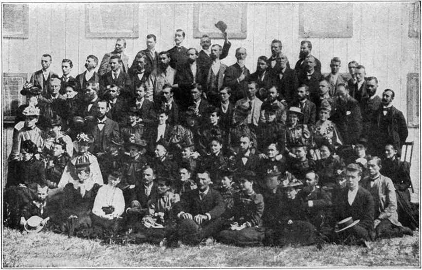First Bible Students Convention—Find Brother Russell
BLANK SIDE
CHAPTER XXIII
The Versatile Powers of Pastor Russell
The following article, written by a more than friendly editor, seems so fitting to the purpose of this Work that we gladly give it place here, especially since the views expressed are in harmony with our own, and must likewise be with the views of all others who had anything like an intimate acquaintance with Pastor Russell and knowledge of his unusual work and accomplishment. We consider this analysis accurate and complete.—The Publishers.
“The anniversary of our dear Pastor’s passing beyond the veil, October 31st, will always be a date of special sacredness to God’s saints. Three years ago [seven now] the whole Church was shocked by the news of his departure. Loath were we to believe it true, until the evidence became unanswerable; and then we realized our great loss and his great gain. So greatly did we love him, and so greatly did he enter into our experiences, that his going away left a great void in our lives. His memory is fragrant and blest to us. Connected with it are some of the greatest joys and privileges of our lives. He will ever occupy in our hearts the large place that his holy character, unselfish service and faithful sufferings have won for him. That his memory may still continue fragrant and blest to us let us together briefly review the activities, achievements and attainments of this eminent saint of God.
“He certainly was a SCHOLAR in the true sense of that term. Those who require a university diploma as indispensable evidence of learning will deny him the merit of scholarship. However, there are not a few cases of scholars that were selfmade, gaining their knowledge apart from the schools of world repute. Among such our Pastor won a high place. Apart from English, he was not a linguist, though he learned how to use well for his Biblical work the gains of the best scholarship in Greek and Hebrew. He was deeply versed in History, as his writings attest. So thoroughly did he understand Business that able financiers eagerly sought his advice. His writings show that he was at home in the perplexing questions of Industry, Economics, Sociology, Capital and Labor. The realms of Philosophy were deeply explored by him, and he was an expert in theoretical and practical psychology and phrenology. Few have understood the workings of the human intellect and heart so well as he. Human anatomy and physiology were open books to him. His knowledge of these sciences, combined with that of medicine, made him a physician; and though he had no medical diploma, he attained better results in the healing art than the average physician. However, his real eminence in learning was in the domain of theology, in which he was without a peer since the days of the Apostles. His knowledge of the Bible was phenomenal; and when other theologians will have been discarded, he will be recognized as a standing authority in this greatest of all sciences.
“Naturally such a scholar would be a writer. Very few human beings have written more than he. His correspondence alone was sufficient for the life work of an industrious and talented man. When it is remembered that some years over 300,000 letters and postals were written to him, and that he supervised the answers to this huge mail, and attended to no small share of it himself, we can realize something of the amount of his correspondence and the time and labor involved. As an author he produced six unrivaled books on the Bible whose combined circulation during his life aggregated 10,000,000 copies. As a bookleteer he published a number of booklets of great value, one of which on Hell has been circulated more widely than any other booklet ever written. He produced over 200 tracts, some of which attained a circulation of over 50,000,000 copies. His sermons, appearing regularly every week for thirteen years, were published part of that time simultaneously in over 2,000 newspapers, having a combined circulation of over 15,000,000 copies. He edited a semi-monthly religious magazine with a circulation of about 45,000 copies. His Scenario of the “Photo-Drama of Creation” has had a wide circulation, as is also the case with his Angelophone record lectures. His articles on the International Sunday School Lessons have reached many Sunday School Teachers in a special publication, as well as in his semimonthly magazine and in hundreds of newspapers. He was a regular contributor to several magazines, and apart from his regular weekly sermon, was a frequent contributor of special articles to newspapers, some of which additionally carried reports of his weekly lectures.
“Nor was his work as a Lecturer on a small scale. Most well-known lecturers have only a few lectures that they use year in and year out. Not so with him. He lectured on hundreds of subjects which were of compelling interest as well as of recognized difficulty. His lectures were direct, clear, simple, logical and convincing. His powers of exposition and proof were of the first order, and were so well in hand as to appeal to the learned and unlearned alike, an unequal proof of genius.
“Wherever he was announced to speak the largest and best auditoriums were crowded, and frequently thousands and usually hundreds were turned away unable to gain entrance. He did not depend on the tricks of oratory to win his hearers. He appealed to their heads and hearts in that simple and direct manner which wins the hearer without oratorical fireworks. He was the most cosmopolitan lecturer that ever lived, having addressed audiences in this capacity in almost every country on earth, traveling between 1,000,000 and 2,000,000 miles to meet his appointments.
“As a Preacher he was even more widely known than as a lecturer. Wherever he worked as a lecturer he addressed more private audiences as a preacher. This acquired for him the title “The Ubiquitous Preacher.” It can be more correctly said of him than of any other preacher that the World was his parish. His spoken sermons were published in the newspapers reaching millions of readers weekly. These sermons appeared in many languages; and before he died his pen products had been published in some forty languages. As a preacher he appealed to the hearts of his hearers through their heads; and his ability to strike home to the hearts and heads of his hearers through suitable Bible verses or illustration the thoughts that he was seeking to impress was marvelous. His genuine and unaffected love for God and man gave a power to his utterances that drove them home, where mere eloquence and oratory would have been effortless. His sermon, therefore, always elevated head and heart.
“He was the most notable of Pastors. His clearness of insight into the problems of his day, his knowledge of human nature, his intuition of the condition and needs of the individual, his singlehearted consecration to God and devotion to the interests of His people, his large sympathy, benevolence and hope as respects others, his grip on the purpose of his ministry, and his knowledge of the spiritual dangers of his times and of the safeguards needed by those in danger made him a real Pastor, a genuine shepherd of God’s sheep. As many as 1,200 different churches at one time claimed him as their Pastor. He had, “the care of all the Churches.” As a pastoral adviser he was expert; as a pastoral comforter he was inspiring; as a pastoral corrector he was tactful and fruitful; and as a leader he was unobtrusive, yet all-persuasive and effective. These qualities made him a part of the very life of those whose Pastor he was, and bound him to them by ties that death itself has not severed. This is why the tens of thousands that chose him as their Pastor have, up to the present, three years after his death, chosen no successor to him.
“No review of him would be complete without treating of his activities as a Reformer. He was every inch a Reformer and stood in the front rank of the Reformers of all ages. Error never had an antagonist more to be dreaded than he, who with thoroughness of disproof of error’s claims combined tact, sympathy, gentleness and charity that left no personal sting after his onslaughts. If he hated error greatly, he loved the errorist more greatly, and always sought to help him, while overthrowing his wrong theories. The superstitions connected with the penalty of sin and the state of the dead were the special objects of his attacks; and he never left an opportunity of attacking them pass by unused. The superstitious and the infidel alike felt the logic of his attacks; and the devout student of the Word found in him a champion who knew how to vindicate the truthfulness of the Bible and to refute the errors of the superstitious, and the unbeliefs of the infidel. His insistence on the faith harmonious with Scripture, Reason and Fact was an inspiration to Bible believer, and a terror to the creedist and infidel. His forty-five years of continued attacks on the strongholds of error and superstition largely undermined them for real Students of the Word.
“But his work as a Reformer was more than destructive of error and superstition. It left not his hearers victims of unbelief. On the contrary he unfolded a harmonious, reasonable and Scriptural view of the Bible that evidences the inspiration of the Scriptures. Thus he gave others a sound and reasonable basis for their faith in “The Impregnable Rock of Scripture,” while destroying caricatures of Scriptural teachings handed down by the superstition of the Dark Ages. Consequently those who looked to him as their leader in Reform were not left with stately ruins as the sum total of his and their labors. Rather, beside and instead of the ruins of the Temple of Error he erected the Sanctuary of Truth as a refuge against all the storms of doubt, superstition and unbelief. And in this fact his real worth as a Reformer is recognizable.
“He was great as an Executive. A phrenologist once seeing his picture, but not knowing whose it was, remarked that he was either a merchant prince or the president of a Theological Seminary. Already in his teens his executive abilities made him the owner and director of a large business which was soon increased until it occupied four large stores in various cities. As a business man he acquired experience that fitted him for his future work. His executive abilities were such as enabled him to grasp the details as well as the generalities of his many enterprises. He was profitably interested in dozens of enterprises aside from his great religious work, to which he gladly devoted the profits of his secular business. Aside from his purely secular business interests his religious activities required high and varied executive ability. He not only produced the vast literature of his movement, but he directed its publication and distribution. Hence he saw to the publication and circulation of his books, booklets, tracts, sermons, lectures, scenarios, Sunday School lessons, magazines, lecture records and magazine articles, assisted, of course by an able staff of co-laborers. He organized and directed seven branch offices in foreign countries. He supervised a Biblical correspondence school. At least two hours daily he gave to directing a Theological School in the Bethel home. For twenty-two years he controlled a Lecture Bureau that for several years had a staff of over 300 lecturers. He managed for thirty years a propaganda work that at times had 1,000 colporteurs in its service. He directed for twenty-five years a tractarian movement in which at times nearly 10,000 individuals took part. For three years he directed the preparation, and for two and a half years managed the exhibition of the ‘Photo-Drama of Creation’ in hundreds of cities, and in many countries before over 15,000,000 people. He was the guiding spirit in over 1,500 Churches; and at the headquarters of his work daily presided as the head of the family over his co-laborers who, for years averaging 175 members, lived together as a family. In this capacity he took cognizance of all sorts of details in storehouse, kitchen, laundry, dining-room, living apartment, hospital, library, study, drawing-room and parlor.
“Had he been eminent in any one of the seven capacities in which we have viewed him (and we could profitably view him from others, so many sided was this remarkable man), he would properly be considered a great man. But to have been eminent in all of them, and to have been in some of them without a peer, prove him to have been a genius of the first order. History will yet give him a place among the very greatest of men. While dealing with him it is necessary in doing him justice to use superlatives. If we were to reduce his qualities to two, we know of no others to use more truly fittingly to characterize him than those used of him by Him whose steward he was: ‘FAITHFUL AND WISE.’ His life was a great success to him and a great blessing to others; his death was a great loss to others and a great gain to him; and his memory has been and is a benediction and an inspiration to the Church, and in due time will be to the world. ‘God bless his memory!’”
“Given a little skill, a little malice and no scruples, and anything can be done with facts.
“Allow one to select from among the words and actions of the best of men, just what he prefers, and to use what he has selected in any way he pleases, and he can poison the minds of the man’s best friends against him.
“Just a sentence without the whole letter;
“Just a saying without the circumstance;
“Just an action without the reason;
“Just a text without the context;
“Just some judicious selections, and some judicious omissions, and out of the man’s innocence there can be created the plausible evidence of his wickedness.”—The Truth.
CHAPTER XXIV
As in a previous chapter we undertook to place ourselves side by side with our blessed Lord during His last earthly experiences, so may we likewise do now respecting the last days and hours of one of the most beloved of men, the one whose memory we cherish and esteem above all others with whom we have come in contact.
Let us therefore in imagination now take our position at Brother Russell’s side and accompany him on his last pilgrimage, a thought which brings to mind the lines of a familiar hymn,
“There the Sunbeams are ever shining,
O my longing heart, my longing heart is there;
Soon to this country, sin dark and dreary, Will come the sunlight of heavenly glory.”
By His side We stand
The date is Monday, October 16th, the year 1916, the hour 6 P.M., when our train is to pull out of a Jersey City railroad station. But before taking train we are going to take dinner with Brother Russell, at the Bethel—“The house of God,” and share especially in a spiritual feast—the soul-inspiring “Table Talk.” These table talks constituted one of the most helpful, instructive and encouraging features of the “Bethel Home” life. It was the custom of Brother Russell, just before leaving the “Home” for an extended trip, to give the “family” a little heart-to-heart talk, intermingling therewith a measure of “fatherly advice” to govern their course and action while he was absent from (to him) the dearest family on earth.
On this occasion he let them all know that he was leaving that afternoon “for a short time,” and as usual, expressed for them the hope that blessings of the Lord would abide with them all during his absence and that they might be very happy and prosperous in the service of the Lord, the Truth and the Brethren. He also expressed the hope that he, and those with him on the pilgrimage, would also have an enjoyable time in the Lord’s service. He concluded this sweetly, solemn hour’s service, while all stood, by offering one of the most impressive prayers he was ever heard to give on such occasions—and no one could present as sweet, solemn, efficient and simple prayer, as could this “man of God.” He always left his hearers with the consciousness of the fact that he had an intimate acquaintance with the Heavenly Father; but instead of this acquaintance inclining to familiarity and a spirit of presumption, it led him to the deepest devotion and most exalted reverence for the Most High God.
At the termination of the meal he offered up in the presence of those he so dearly loved his last prayer in the Bethel, beginning with the familiar lines,
“O Lord, Thy promised grace impart, And fill each consecrated heart;”
and at the conclusion thereof he quietly withdrew to his study to complete some unfinished but important work. Thus we see him leaving for the last time the Bethel dining-room and “the dearest family on earth”—a dining-room he had graced so many times with his dignified but Christ-like presence, and a family that was most precious to his heart.
Leaves Bethel for Last Time
About five o’clock that saintly man left his study, and soon the doors of the Bethel home closed behind him for the last time—shutting out forever, physically, the one who had been used of God to bring so much joy to the hearts of those he was leaving behind, and at the same time shutting in many who were so soon to receive the greatest shock of their lives.
At five P.M., then, we walk out of the Bethel with our saintly companion and reach the Lehigh Valley station in good time to get our train, leaving there at six P.M. for the West. Sunday (the day before) Brother Russell gave a public lecture in Providence, Rhode Island, and also one in Fall River, Massachusetts.
He gave evidence, therefore, of being tired and worn at the time he started on this memorable pilgrimage, though he never murmured nor complained at any time, for he had in a remarkable degree that inherent quality of mind and resignation of heart to the Lord’s will which enabled him to adjust himself and his affairs quickly to any conditions which His providences permitted. So on the first night out our Beloved Brother found it necessary to retire much earlier than was his custom, setting aside the usual train dictation. Hence, he bade us “good-night” in his accustomed cheery manner; and in the morning, to our inquiry as to how he had rested, he gave one of his characteristic replies to such questions, by answering, “Sometimes on one side, and sometimes on the other,” leaving us to infer that he changed “sides” often.
Brother Russell frequently spoke to those close to him, those in whom he reposed confidence, that towards the last he slept very little indeed, though formerly he was an unusually sound, restful sleeper; but as the time for his dissolution drew on apace, when he should be privileged to see that glorious Face, his hours for sleeping grew fewer and fewer. It seems as if he was thinking relatively day and night.
Aside from his distressing physical ailments, which seemed to become more and more aggravated as time wore on, the fact that he was rapidly failing was becoming more and more manifest to all keen observers. But in addition to these “infirmities” of the flesh, the “care of all the churches” lay heavily upon his heart, just as in the case of the great Apostle.
Because of the rapid declension of his physical strength, he found it advisable, if not absolutely necessary, to eat sparingly, carefully noting the effect this food or that drink seemed to exert on his physical condition; and so would abstain from anything he found to not agree with him. He was one of the most observant of men in all things, and nothing seemed too small to receive his attention, whether this had to do with himself personally or the Lord’s Work generally.
For this reason he carefully followed the Apostle’s injunction, “Give thanks always for all things,” hence it was his invariable custom to return thanks for his meals, whether in hotels, on trains, or elsewhere. Even though this act did make him somewhat more conspicuous, never, under any circumstances, so far as another could discern, did he neglect what he recognized as his duty to the Lord—whether in the matter of eating, drinking or whatsoever he did, it was done to the glory of God, giving Him the thanks.
Another characteristic of this most remarkable man was the tactful way he had of making all those in any sense dependent upon him feel at ease. This was one of the sweetest charms of his character. He never wished his traveling secretary to feel that he occupied in any manner a menial position; for this reason, when he started out on a pilgrimage, it was his rule to place a sum of money in the hands of his secretary with the instruction that he should pay the entire expenses of both for one day, then Brother Russell would do likewise on the next, and so on to the end of their tour, each one keeping an accurate account of all outlays, no matter how small. Another distinctive quality of this man of many sides, was the fact that he was very careful in keeping accurate accounts with the Lord in all things. Therefore recognizing that he was but a Steward over what was placed in his hands, he accounted to the Lord of the Harvest for all his activities, doings, and expenditures.
On the second day out on our westward trip we passed over the line into Canada, and as we did so he remarked with his characteristic wit, “Did you feel the bridge bulge in the center as we crossed over?” On two previous occasions he had some peculiar, and in some respects unpleasant, experiences while in the Dominion. But on this occasion he remarked, “They will not molest us this time, as we are just passing through; and as to visiting anywhere in Canada, I have no desire to do so, if the people do not want me.”
Severe Trials Began
We found it necessary to change trains at London, Ontario, making our first stop on the trip at Detroit, Michigan, where our train arrived Tuesday afternoon. We have special reasons for remembering this place, because it was here Brother Russell’s severe trials began, and of necessity these were shared in to some extent by those who were his companions in tribulation and labor. Though upon our Beloved Brother the special trials which here began but did not end until “the end of the way” for him had been reached, rested most heavily.
Even though physically weak and weary, yet he made no special effort to conserve his rapidly declining strength, but rather held himself ready for any service his hands found to do—“any service, anywhere,” always seemed to be the impelling force that moved him, so here he gave of his time and strength to listen to certain grievances of some of the brethren, which were poured into his ears; then he did all he could to relieve the tension for others while at the same time increasing his own; for as every one with any experience knows, such service saps the vitality, and in this instance our dear Brother did not have any vital force to give up for such purpose.
Then to add to the vexations and tests upon patience and endurance, a chauffeur took us to the wrong station, thus consuming valuable time which could not be “redeemed.” But why was not the chauffeur rightly instructed in this matter, the reader will wonder. To increase our difficulties the street car connections were badly disjointed, and as a result a matter of the greatest importance in connection with the closing features of the work under his guiding hands fell flat. This brought further perplexity to his mind and burden to his heart. He realized that these perplexities were a part of “the all things;” so eventually they must work good to him; furthermore, he realized that the “Lord of the Harvest” was abundantly able to take care of the interests of His own Work.
We had planned to be in Chicago at 7 o’clock Wednesday morning, after a public meeting Tuesday night in Lansing; instead we found ourselves side-tracked in Kalamazoo without any reliable information as to when we might be able to get further on our journey. The wreckage of a freight train during the night, as we were informed, was the cause of the delay. Finally our party learned that by making a detour of
fifty miles we could reach our next proposed stop. There was no “diner” on our “detour train,” neither could we obtain anything to eat en route, because of uncertainties. Herein it should be admitted for the good of the cause, that Brother Russell’s traveling companions fell down most ingloriously in failing to see their privileges—yes, doing their plain duty. Sometimes our imperfections stand out in a most painful degree! What could be more regrettable than our failure to have more faithfully and more intelligently ministered unto the comforts of this noble man of God, whose life even then was fast ebbing.
The puzzling predicament in which we found ourselves was also one from which it was practically impossible to extricate ourselves, without a complete reversal of the plans of our dear Brother; but to this he would not accede for a moment. Therefore, to escape an enforced fast, our party was reduced to the necessity of bringing forth some peanut-butter sandwiches, which a thoughtful sister in Brooklyn had pressed upon us, and from these we made our breakfast and lunch; and as any intelligent person can well understand, this was not suitable food, proper nourishment for any one in the precarious condition our dear Brother was in at the time; so as we now look back at these things, and more—we do not wonder that he expired on that trip, but we wonder that the dissolution did not come before we reached Los Angeles. O how shameful was our neglect! O if we could only turn our hindsight into foresight, how different indeed would be our course and doings! Among those who have knowledge of the details, inside affairs of this trip, there can be little doubt that Brother Russell’s death was greatly hastened by the hard experiences to which he was subjected, many of which might have been eliminated entirely and all of which could and should have been modified by intelligent employment of the means at hand to the desired end.
By reason of our blunders, and a combination of circumstances over which we had no control (train wreck), we reached Chicago nearly seven hours behind our schedule, when we then faced the disappointing situation of finding that we had missed our connections for Springfield, where Brother Russell was scheduled to speak that night—Wednesday. This of course was another weight upon his already heavily burdened heart and a further tax upon his rapidly waning strength.
Here, now, we must rehearse a portion of this record which pains our heart most deeply and of necessity will send a pang into the heart of every one who reads these lines—especially if there is tenderness, compassion and loving kindness therein. Think, if you will now, of a man approaching sixty-five years of age, but who in reality was ten years older, worn by excessive labors, burdened with the “care of all the churches,” after two nights in succession and a portion of two days upon the train, following immediately the “feasting” (?) above mentioned upon “peanut-butter sandwiches,” then being called upon to face conditions which are best expressed in a quotation: “Circumstances made it necessary (italics ours) for us to walk several miles, until the writer was growing weary and was sure that Brother Russell must have been worn out also, although no remarks passed. All of this occurred after a few hours’ rest during the previous night and with but little to eat.” Who of the Lord’s children can read such a statement without sorrow even now striking his heart, and righteous indignation welling up within him?
Any and every intelligent person knows, if he has any acquaintance with city life and conveniences, that in a great city like Chicago, with street cars traversing and crossing the city every few blocks, you can go over the whole business section not only without “walking several miles,” but ordinarily without walking many blocks. Nor is this the only means of transit. There are “jitneys” a plenty. Nor is this the limit of the means of conveyances—Chicago is as full of taxicabs as flies are plentiful in harvest time. Clearly, therefore, is it misleading to say that it was in any sense “necessary” to have this dear man subjected to any such hardship where he would have to “walk several miles.” Such lack of forethought seems almost wanton, if not worse —perverse!
Even through all these trying and perplexing experiences, Brother Russell had some opportunity to witness to the Truth and the wisdom and goodness of God. As all who had ever seen Brother Russell know, he was a man of striking appearance, so people could easily enough single him out in any gathering, whether in the motley crowds in a railroad station, hotel, lobby or elsewhere. So while in the Union Station in Chicago, making preparations to leave that evening (Wednesday) for Kansas City, a Southern lady who had been visiting her daughter in Chicago approached Brother Russell and introduced herself, saying her mother had formerly lived in Pittsburgh and was a believer in the Truth, and that Brother Russell had conducted the services at her mother’s funeral. This lady confessed to a tacit belief in his teachings, that she had especially enjoyed the photo-drama of Creation, and now desires the scenario.
As usual, Brother Russell inquired about the consecration of both herself and daughter, and he was assured that even then they had the matter of consecration under serious consideration. Consecration to do the Father’s will was ever uppermost in his mind; for this reason it was not an uncommon thing to hear him ask people on trains, on steamboats, at stations, hotels or elsewhere, “Are you consecrated?” Rarely did he neglect to put this question in some form.
He had many opportunities in his travels to discuss religious matters, for almost everywhere people recognized him. Many times people have been heard to ask, “Is not that Pastor Russell?” Others again have been overheard saying, “I knew him by his pictures in the papers.” Again on the trains or in hotel lobbies, people would turn their heads as he passed them by, and some would be heard to inquire, “Who is that distinguished looking gentleman?” It was a case of “beholding the man.”
Loses His Baggage
Thursday morning our train pulled into Kansas City, going from there to Wichita, Kansas, that afternoon, where almost unprecedented trials and difficulties beset our beloved Brother, and many of which were altogether avoidable; for, principally, they were directly attributable to well nigh unpardonable carelessness, for instead of personally looking after Brother Russell’s comforts and his baggage, as we should have done, this was entrusted to a brother who was inexperienced in traveling, who thoughtlessly placed the valise, containing Brother Russell’s clothing and valuable papers, on the running board, and not one of our party having forethought enough to even “keep an eye on it.” Result: very naturally it fell off “somewhere,” as his secretary stated, “between the station and the place where the meeting was to be held.”
When Brother Russell was somewhat like normal he would have looked after this matter himself, so that such a mishap could not have occurred, for ordinarily “his eye would run to and fro” to such an extent that nothing could escape his observation, but now he had so declined physically that he was forced to leave many things in the hands of his traveling secretary with the result we have the most astounding record of blunders that it seems possibly to have occurred to experienced traveling men—some of whom had been in the Pilgrim service for many years. It is difficult, indeed, to find a satisfactory excuse for such gross carelessness. How can those directly responsible for such mishaps do otherwise than hang their heads in shame and regrets when the picture of these things come before their minds?
Though diligent efforts were made to recover the lost baggage, even to the inserting of an advertisement in the newspapers, offering a reward therefore, but all to no avail, and our party remained over all the next day with this hope in mind. So it was necessary to purchase such other supplies and furnishings as Brother Russell would require in order to continue the trip as planned before leaving Brooklyn.
The next morning, Friday, he was later than usual in coming from his room, looking very tired and worn. After breakfast he withdrew himself from our presence and “behind closed doors” worked with his secretary, on some important documents, until noon. When he appeared in the hotel lobby a traveling man of fine appearance approached Brother Russell, which was not an unusual thing for some one to do, and introduced himself, saying he was much interested in his writings, etc. It came out that he was the son of a prominent minister in Allegheny, who formerly had opposed Brother Russell most strenuously. We found that this gentleman’s wife was also somewhat interested in the message.
Finally, having done everything that could be suggested in order to locate the valise, we had to give up the search, and took train for Dallas, Texas, where a convention was in progress. We found the State Fair in full swing on our arrival, and again as no one had been thoughtful enough to make reservations at a desirable hotel, we found everything “chock-a-block,” somewhat as was the case when a certain wonderful child was born in Bethlehem. Ponder well this written statement of his secretary and note again the looseness: “On account of Brother Russell’s physical condition we were obliged to leave the car before reaching Dallas, so that when we came in by foot, walking through crowded streets, all connections with the brethren were broken. After some difficulty they found us. The hotels being all more than crowded, our party was taken to a private rooming house, where several of the friends attending the convention were located.” Here we remained over Saturday and Sunday.
His Last Meal
That night Brother Russell spoke to the public for two and a half hours, having profound attention throughout. Then after a little rest at the nearest hostelry, our party, accompanied by several of the friends, walked to the station, but we had to work our way slowly through the jam the best we could, a full half hour being consumed therein. These were some more of the experiences to which this faithful servant of God was subjected by his unwise, thoughtless companions. We boarded the train, then, at Dallas Sunday night, October 22d, for the next appointment. Necessarily Brother Russell was tired and in addition he was suffering intensely with his head.
Upon the arrival of our party in Galveston next morning, Brother Russell was far from well—indeed, the break was quite noticeable to those who observed closely his outward symptoms. The friends having arranged a meeting for the forenoon, Brother Russell of course consented to speak to them. And it was at this meeting that he did something none of us ever knew of his doing before: he wrote on a slip of paper his text and one verse of a hymn he wished to use. He said to some of the friends that he had done so in order that he might make no mistake in his quotation. Here are the text and verse:
“When ye see these things begin to come to pass, then lift up your head and rejoice, knowing that your deliverance draweth nigh.”
“Then let our songs abound, And every tear be dry;
We’re traveling through Immanuel’s ground, To fairer prospects nigh.”
After this discourse was ended, the brethren gave him a drive along the “Sea Wall Boulevard”; this he seemed to enjoy very much, the balmy breeze from the gulf and the awe-inspiring waves as they chased one another to the beach, seemed exhilarating to him. During this drive one of the brethren laid before Brother Russell something of his troubles and received comforting counsel. A party of about a dozen took dinner with our dear Brother at the Hotel Galvez, during which time, instead of eating himself, he put in most of the time in answering their questions. He seemed to enjoy the fellowship of the dear friends present, though he ate but little himself. This proved to be his last attempt to partake of a meal.
Soon we were off for the Galveston Auditorium, where Brother Russell gave a public discourse, but the day and hour were both unfavorable to the drawing of the public: Monday, 3 P.M. Though the beautiful auditorium was but sparsely filled, nevertheless the speaker worked just as hard, and showed evidence of near exhaustion at the close. Going from the auditorium, via post office, to station, we were met there by a number of the friends who desired, as always, to ask Brother Russell questions till time for our train to pull out.
At seven forty-five we reached Houston, where we were met by many eager, loving friends, who at once drove our entire party to a well filled auditorium; here Brother Russell spoke to an earnest audience for about two and a half hours, making six hours discoursing that day—Monday, October 23rd. Would you suppose that such a strenuous day—a discourse to the friends, two public lectures, each of two and a half hours duration, conversing with many friends, answering all the questions put to him, advising, counseling those “who were in any tribulations,” besides the long rides and many jolts on the train, would exhaust his vitality? We clearly see how he laid down his life, even to his last days!
We traveled all that night, reaching San Antonio Tuesday morning, going to the home of dear Sister Frost. By this time the break was becoming quite apparent. Our dear Brother could no longer conceal the fact that he was in much physical pain, while the effect of his arduous labors were plainly telling upon his vitality. A physical ailment that had been present with him for thirty years now began to assume an acute form.
For the first time we began to realize that his case was taking on a serious phase. Although one of the brethren of our party went to consult a physician, who manifested some interest in the Truth, no good results followed the efforts put forth in this direction. Loving hands procured everything he wished, and he worked faithfully on his own case, for he seemed to know just what to do; but his system no longer responded to treatment—his recuperative powers were manifestly waning, plainly showing that the “ebb of life” had set in, reaching Eternity’s shore eight days later from the sterile plains of the “Lone Star” State.
Brother Russell was disappointed again and again as a result of certain telegrams not reaching him. Finally a messenger was dispatched to every telegraph office in San Antonio with the hope of getting some important information, for he felt sure there must be a message there from Chicago, since it had not been previously received. But the messenger returned empty handed.
We might mention in this connection, that the “lost valise” was received at Dallas. A little girl having found it in Wichita, held it until she learned what to do with it, which she did through the notice in the paper. She received her reward, and was glad; and this was a relief to our dear Brother.
His Last Public Lecture
His last public lecture was given in San Antonio, Texas. The time for the lecture was drawing on apace; the place was the largest and finest theater in the city. It is a very beautiful structure indeed. The dress circle and the three balconies were filled; earnest, expectant faces shone out from every portion of this grand auditorium. The scene was both beautiful and impressive. The picture is one that will remain with us as long as human memory lasts.
When all was in readiness, promptly at 8:10, Brother Russell stepped to the front of the platform and began his last public lecture, and which he delivered under most distressing and distressful conditions; for his physical state necessitated his leaving the platform three times, while another brother “picked up the thread” and carried Brother Russell’s line of thought on till he returned. After the distress and pain, through which he had passed during this trying ordeal, wherein he was surely fulfilling his covenant of sacrifice, he was nevertheless enabled by the Lord to bring this lecture to a fitting and forceful close, making, as we now see, a climactic finish to his long, efficient and faithful public service. He led the great audience in singing, “All hail the power of Jesus’ name,” and closed this last and remarkable lecture with a most impressive prayer. One week later he was to end his course in pain—the joy followed.
Tuesday night we took train for California, being escorted to the station by the dear Sister who had so hospitably entertained us and so generously provided for all our comforts while in San Antonio. It might well be said of her, “She hath done what she could.” She stated that she thought it meet that she break her alabaster box while it is called today, and accordingly pressed upon the secretary money sufficient to secure a drawing room to Los Angeles, and from there to New York. When this matter was first brought to Brother Russell’s attention, he protested, as was to be expected, thinking it was too great an outlay of money, merely to obtain physical comforts, but he finally yielded to the counsel of loving and generous hearts. It was well that he did, for that night he was up thirty-six times in seven hours.
His Condition Recognized as Serious
Wednesday morning he was a sick man, very sick; yet he was not willing to admit the fact. Nevertheless he kept to his bed all that day. From this time on our patient, our Brother, and our Pastor had practically every attention and comfort which could be bestowed upon him, but it was like “the pardon that came too late”—the evil effects of the unnecessary burdens which were permitted to come upon him in the early part of this trip had sapped what remained of his wonderful vitality; therefore, there was nothing remaining to build upon. But the Lord permitted these things to come upon the one we loved, and whose memory we yet cherish.
But we are thankful to our Heavenly Father and grateful to the dear Sister who so nobly and generously ministered unto one of the Lord’s most notable servants, and did so much and in so many ways to make his last hours on earth as comfortable as possible under the circumstances. God bless Sister Frost!
All the evidence before us impressed deeply upon our minds this conviction: our dear Brother is in a serious condition and rapidly growing worse. We were in a quandary—not knowing just what to do. You remember David said on one occasion, “I am in a great strait,” while Saint Paul himself declared that he, too, was in a strait; so we likewise found ourselves in a “strait”—for what to do we knew not; but we realized that something must be attempted, so decided upon a course of procedure, but with many misgivings. Those who knew Brother Russell best, knew that before he ever took an important step he invariably sought the Lord’s will in regard to the matter; then, when he became persuaded that he had the Lord’s mind respecting the decision, no human arguments, reasonings or other influences could change his convictions.
How He Discerned the Lord’s Will
Here was “that Servant’s” method of discerning the Lord’s will according to his own words:
“Every day and in all particular matters I take everything to the Lord, for I would not wish to undertake anything without seeking the Lord’s will respecting it, but I am not always able to KNOW just what the Lord’s will may be respecting any matter. I have no miraculous insight into such matters. My judgment is not sufficient; besides I am not to tax my mind that way. I will leave it to the Lord. If He, therefore, wishes me to go this way or that, He can direct the course. So my mind and heart are satisfied. Then I ask Him at the beginning of the day to direct my thoughts, words and actions. Then I go forth and exercise my best judgment. If He wants to lead me in one way or another, that is His business, not mine. I have solicited His guidance, so I rest easy in Faith, persuaded that He will do that very thing. Thus doing, we know that all things shall work together for our good.
“If at times we know not whether to turn to the right or to the left, know not wherein to walk, let us lift our hearts to the Lord, and wait before Him, remembering the Divine assurance, ‘Delight thyself in the Lord; and He shall give thee the desires of thine heart. Commit thy ways unto the Lord: trust also in Him and He shall bring it to pass.’
“Having committed our ways unto the Lord, we should go forward only as He leads us. If we are not clear as to His will, let us not be in too great hurry, not try to guide ourselves, but present the matter to the Lord in earnest prayer, asking that we may have no will or way of our own, but may be guided as He wills. Then let us wait and watch for the indications of His providences, and follow as He seems to lead, leaving the results with Him. We are not to follow our own choice without evidence that it is God’s will.”—Pastor Russell.
Though realizing his firm views, we finally opened up for discussion his physical condition. He soon said in substance, “I always thought I should have some severe sufferings before I finished my course, but when I had that trouble in Pittsburgh I thought that was it. But if the Lord wants to add this also, it is all right.” Then we took occasion to gently suggest, “Since we have done everything we know, and you are growing weaker and weaker, your vitality being drained while you are eating nothing to replenish it, would it not be well for us to return to Brooklyn where you may find something to put you on your feet again.” His reply to this suggestion was, “The Lord permitted us to make out this route.” The inference from this statement being: this route represented the will of the Lord, and we must therefore do our utmost to carry it out. Here, then, we had to dismiss from our mind any thought of turning back.
Here was one man who walked by faith with God, unmistakably preferring to walk in the dark with Him rather than go alone in the light. O blissful lack of wisdom! So on we went, not knowing what was before us. Brother Russell’s faith was indeed inspiring. He had the most absolute faith in the Lord and His overruling Providences. For this reason he trusted not in his own or another’s judgment, but upon his faith in the Lord’s leadings; hence it was not an easy matter to turn him from a purpose once formed.
While these meditations and conversations were going on, our train was rapidly tearing over the arid plains of the “Lone Star” State towards the “Golden State”; a State of sunshine, fruits and flowers, a State with so many of the natural resources which suggest to our minds Restitution blessings, a section of country which has proved a veritable haven of rest to many of the depressed and physically afflicted. Nevertheless, we could hardly look forward with hope that it would prove to be such to our beloved Brother. No! Death was even then visibly working in his members. The question presenting itself was, How long can he last?
CHAPTER XXV
REALIZED THAT HIS HOUR HAD COME
At a station stop during this day, which was the tenth of this solemn and trying pilgrimage, it was suggested to Brother Russell that he permit one of the brethren of our party to go into town—a place of ten thousand or thereabouts—and consult a physician about his case, but to this he would not assent. It must have been that he realized his “hour had come” or was rapidly approaching, and that therefore his case was out of human hands entirely. Hence, after a full day’s delay at this station stop, on account of a burned out bridge, we sped on towards our objective point—Los Angeles—two days’ travel. The steward on the dining car knew the most distinguished passenger the Santa Fe system had ever carried over its lines; and he rendered us many little kindnesses—for he surely gave the “cup of cold water,” fully realizing to whom it was given.
By this time his feebleness became so pronounced he could not drink a glass of water without spilling a portion of it. However, on Friday night, when we reached a junction point in California, where we had to change trains, Brother Russell arose and dressed as usual, even though he was very weak, for he had tasted nothing but fruit, and a very little of that, for almost three days.
Throughout Saturday, in great physical distress and weakness, bordering upon complete collapse, this giant among men, with that mighty intellect, struggled with business propositions of a character that an ordinary man, in full possession of his normal powers, would have tackled with more or less of the apathy of despair, because of the presence and seriousness of conditions he had so earnestly struggled to avoid. But with great calmness and perfect composure, ever trusting in the Lord, and not in the arm of flesh, he set about this arduous task before him with his well known courage. This proved to be his final work of this character.
It is stated of our Lord that in reality He died of a broken heart, as evidenced by the fact that when His side was pierced both blood and water flowed from the “fountain” where only water would normally have been found. It is known that some of those in high stations today before the Church, as well as some who have become more or less entangled in many ways, proved themselves unworthy of the confidence he had reposed in them; so this disappointment led to the figurative breaking of this noble heart, before life itself became extinct. Though his trials came thicker and faster to the very end, and his overburdened heart was crushed, yet not a murmur or complaint escaped his lips; nor may we suppose that such emotions ever welled up in his heart. He had promised the Lord that he would never murmur nor repine at what His Providence might permit; because “Faith can firmly trust Him, come what may.” Upon this foundation were the lines of his daily life cast. So instinctively did many sense the innate goodness and true greatness of this man of God, that some would hesitate in approaching his presence, while the more timid were figuratively speechless before him; yet he was the most gracious and lovable man I ever knew; as gentle as a child, as tender as a woman.
By reason of the delays mentioned, the train carrying this precious human soul was one day and one hour late in reaching Los Angeles, which was Sunday morning, October 29th, nearly two weeks from the time our party left Brooklyn.
His Last Service This Side the Veil
There were quite a number of the friends of the Los Angeles class at the station to meet us, and with expectancy plainly written in their faces; but their countenances quickly fell when their eyes rested upon the feeble form and drawn features of the one we all loved so much. Many indeed were startled by the change which was so pronounced. Yet they did not then realize how serious was his condition, even though they could easily perceive that he was extremely weak, exceedingly worn; although his face was wan, his features drawn, these but added to his saintly appearance. The emotions that then moved many souls no doubt was, “Behold the man!” From this hour on there was far more sadness than gladness manifested in the faces and bearings of the dear ones here.
Our party was then escorted to a hotel where comfortable quarters had been reserved for “this holy man of God,” that he might “turn in thither.” Little did these dear hearts realize that they were entertaining this angel (messenger) for the last time—nay, that it would indeed be the last entertainment provided by human hands this side of the “glory which so soon should follow.” Would it be too much to suppose that the Heavenly Hosts took note of these acts of loving kindness, O how great! and that the Lord Himself will richly reward them in due time, if indeed he has not already enriched them in heart and head?
Now we come to a consideration of the most solemn service we ever knew him to conduct and the one which proved to be the last service he was privileged to render to the Lord’s children this side the veil. Altogether this was also the most impressive of all services, not alone on account of the character of the meeting, but particularly by reason of the frail condition of “that faithful Servant” of the Most High God, who thus veritably laid down the mere fragments of the once vigorous vitality. This was Sunday, and he had not eaten any food since the previous Wednesday, and most sparingly even then. This is the way one brother “reported the matter.”
“When the time came for meeting with the friends in the afternoon, Brother Russell arose and made ready to go, the brethren having come for him in an auto. It was 4:30 in the afternoon when we left the hotel for the meeting, which was held in the same auditorium in which the Los Angeles Convention was held during the first part of September. It is a quiet and suitable hall. We do not know of any better or more appropriate place in which Brother Russell could have given his last message to the Church. He had previously cautioned the brethren against exposing his physical condition, by saying, ‘Don’t give me away, brethren.’”
It seems but proper to say that it was not necessary for any one to “give him away” as to his general physical condition, for his very appearance, as well as speech, quickly “betrayed” him to every observing one present. Probably no body of Bible Students ever passed through a more trying ordeal for an hour or more than those who sat and looked upon the face and person of this kind, considerate and noble-hearted man, as he gave up in their behalf what remained of his vitality. Thus he laid down his very life for the brethren.
Though it had been scarcely two months since he had visited and served these friends, it was in the interests of this Ecclesia especially that he made this particular pilgrimage across the continent and which the Lord designed should end in Heaven. We now realize what this effort on the part of “that faithful Servant” cost the Church collectively, even though it proved to be his gain.
We can, therefore, realize how that every conscience which was quick as the apple of the eye must have been smitten indeed—that is, such as were in any sense conscious of what their collective acts had resulted in. For as they thus “beheld the man” in such a deplorable condition their hearts must have agonized as they looked upon the consequence of their spirit of contention. While Brother Russell was ever observant of all Scriptural admonitions, such as pray always, and in all things give thanks to God, he was likewise kind even to the unthankful and considerate of all. Again quoting:
“To a keen observer his very presence spoke volumes. But more than that, when he stepped to the front of the platform to begin to speak, and out of considerations for the splendid audience before him, for every seat was occupied, he said, ‘I regret that I am not able to speak with force or power’—for this had been ‘consumed away while he stood on his feet’—so he beckoned to the chairman to remove the lectern or stand, and bring him a chair. As he sat down he said, ‘Pardon me for sitting down, please.’ In deep distress, in great suffering, and in a most solemn manner, he spoke for forty-five minutes; then answered questions for a short time.”
The result of this service being that the hearts of the dear friends present were knit together in love as they had never been before, burying their grievances, forgetting their troubles and differences, and instead, seeing Jesus, and Jesus only, through the loving and faithful ministry of this loyal servant. Finally, he pronounced upon them the Lord’s benediction, as recorded in Numbers 6:24-26. Additionally he said, “May the Lord’s blessings be with you richly in all things. He has blessed the Los Angeles class a great deal. Each one should desire to do his share. No matter what others may do, let each do his share.”
Then he said, “Let us all join in singing hymn Number 1,” quoting the first verse:
“Abide sweet spirit, Heavenly Dove, With light and comfort from above;
Be Thou our Guardian, Thou our Guide, O’er every thought and step preside.”
Then commenting upon these lines said, “Isn’t this a beautiful thought? Preserve this spirit in your midst. Have perfect confidence in the Lord, and you will be led aright. We were not brought into the Truth by any human catch-word, but by the Word of God. We know the Lord will bring out everything all right. I bid you all good-bye.” And this expression really means, God bless you.
So closed the last, and in some respects the most momentous meeting ever conducted by “that faithful and wise Servant”—Charles Taze Russell, on October 29, 1916. In less than forty-eight hours he was destined to be with the Lord in glory. When the meeting closed, there were not many dry eyes amongst that vast concourse of the Lord’s people. While there were sorrow and sadness there, we have no doubt there were joy and gladness in the Great Assembly, for the glorified ones undoubtedly knew at this time “the day and the hour.”
The End of His Pilgrimage
Soon we were at the Santa Fe station where we were to take train to carry us “homeward”—in the direction of our earthly homes, but from which our beloved Brother would “change trains” at a strange, and then to us, unknown station, for his Eternal Home, to “forever be with the Lord.” The friends who had assembled at the station had solemn but hopeful faces, as they bade us God speed, and we departed them from our company by going to our drawing room, shutting out the view of many loved ones whose hearts were loyal and true and shutting in the object of their deep love upon whom they should never again look until they might meet him on Eternity’s Shore. There, then, we shall see him as he now is, and be like him—providing we follow him as he followed Saint Paul, who followed the Lord Jesus, the Anointed of Jehovah. Here, then, we shall bring to an end our visualized journey, and pull down the curtain on the details of the return trip. Can the interest of the Lord’s work require more, or should mere curiosity be permitted to have sway? We think not.
The experiences of the next forty and more hours have been but partially told—and it is well. If some of us knew too much we would grieve the more, but having by this time permitted the facts given at the beginning of this trip to take root, we can and should draw the picture before our mental vision and the veil before this picture. It is too sad to dwell upon in detail. Can we go with our Lord through His Gethsemane experiences without having our hearts torn, our feelings rent in a way to cause agony of soul?
So, too, in respect to the closing hours, the distressing experiences of the Saintly one whom the Lord was pleased to use to bring to us the blessings of His precious Truth; for I am sure that there was a time in the experiences of the Bible Students when they realized that all they had received of the Lord in the way of comforting knowledge of Him and His Word and His Plan, they received through this chosen instrument of the Lord. If some have forgotten, and others forgetting, this fact, it will be to their eternal loss. How sad it is to be forced to admit an unpleasant truth! Every one whose heart is loyal to the Lord must also be loyal to righteous principles. Without holiness no one shall see the Lord! Would to God that all could have a living, ever present realization of the fact that the Lord’s eyes run to and fro throughout the earth at all times, so that every heart could say with one of old, “Thou God seest me!” If we all would merely stop and constantly refresh our minds with this thought, how careful it would make us at all times in respect to our acts, words and thoughts! If God sees our acts, should we not strive to have these pleasing to Him? If He hears our words, should we not have a desire that these would have His approval? And if He reads (looks upon) the heart, could we wish Him to read anything there that would dishonor His name, and so be an injury to ourselves?
Last Hours Shrouded in Mystery
Briefly we would record that the last hours of our beloved Brother Russell are shrouded in things more or less mystifying and contradictory; but this seems not the place to lift the veil. Instead let us all bow our heads in sadness and humility, always remembering it is not for us to rail against God’s Providences —that which He is pleased to permit if not order. Since “He spared not His own Son,” but delivered Him freely up to shameful treatment, and Gethsemane experiences, we should not expect Him to show more consideration for any of the Lord’s brethren.
To those who have any inside knowledge of the facts here recorded, there can be but little doubt that at the time Brother Russell left Los Angeles, his case had passed from the realm of the human to the Divine—that is, no human agency could longer render any material aid in the sense of deliverance and restoration. Indications are that death began to work in his members the Wednesday before he breathed his last—finished his course.
To dwell upon the details of the last forty hours or more of his dying experiences would be to draw too heavily upon the heartstrings of the writer of these lines, and probably they would touch too deeply the sympathetic chords in other tender-hearted ones—all indeed whose eyes may possibly scan these Memoirs, which were written with the thought of benefitting as many of the Lord’s children as He may purpose shall read the same; for be it known, they are not written to merely satisfy the idle and curious, but to encourage and benefit all God’s true-hearted saints in all lands, climes and tongues.
With this brief explanation by way of excuse for not giving the painful details of Brother Russell’s last hours—that is, after leaving Los Angeles at 6:30 Saturday evening, we would record that he breathed for the last time at 2:10 P.M. Tuesday, October 31, 1916, while on Santa Fe train, in the State of Texas. Through some more bungling the body was removed from the train at the first small town, where it was very improperly cared for in the way of embalming, but enabled the one in supreme charge to get the remains on a later train for Kansas City, where the embalming process was gone through again; and finally the body reached New York City, Friday, November 3rd, and the Bethel Home Saturday, four days, lacking a few hours, from the time of his change. On reaching New York the body was embalmed for the third time!
“It is not our privilege to come into personal contact with our dear Redeemer, but it is our privilege to anoint the Lord’s ‘brethren’ with the sweet perfume of love, sympathy, joy and peace, and the more costly this may be as respects our selfdenials, the more precious it will be in estimation of our Elder Brother, who declared that in proportion as we do or do not do unto his brethren, we do or do not do unto him. Our alabaster boxes are our hearts, which should be full of the richest and choicest perfumes of good wishes, kindness and love toward all, but especially toward the Christ, toward the Lord Jesus, toward the feet members, who are now with us, and on whom we now have the privilege of pouring the sweet odors of love and devotion in the name of the Lord, because we are his.” —Manna, Nov. 16.
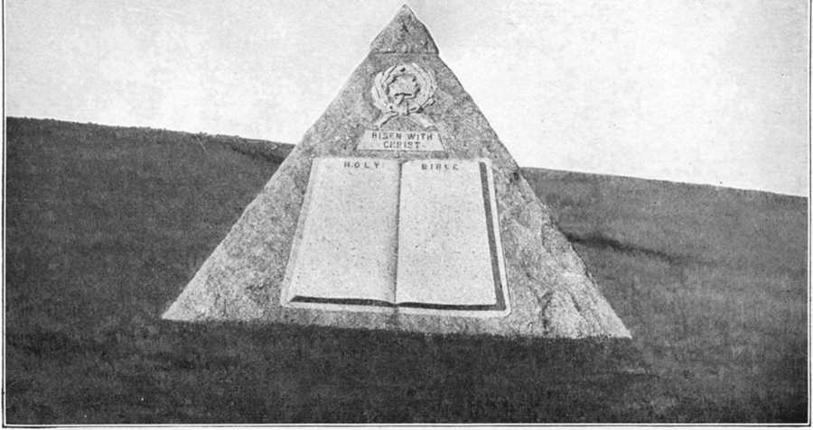Enduring Monument
BLANK SIDE
“PASTOR RUSSELL IS DEAD!”
Earthly Tabernacle Worn Out
In the summer of 1912 Brother Russell made the statement at the Bethel table that during the forty years just past he had been kept in bed but one day, as a result of sickness; then, after a moment’s pause, he corrected himself by saying it had been forty-five years; yet he had been a constant sufferer from physical complications for more than forty years, before he passed into glory. Furthermore, he said, that during all the years he had been traveling and preaching he had never missed a meeting through inability to serve, though frequently, he stated, it took all the strength he could command for him to get to the platform, but, as he argued, it was his business to get upon the platform if he could, then it was the Lord’s business to give him the strength to speak if He wished him to do so.
In the fall of 1913 he made his usual trip to Europe, and there for the first time, he missed, not one, but many appointments, through, or as a result of, physical collapse, and several of his appointments were filled by others. While in London his collapse was complete for a time. To such an extent was this true that it was told me by his traveling companion of that time, as stated by the specialist in charge, that his heart did not beat for five seconds. He was revived by the use of mechanical contrivances, known to the medical profession. A consultation was then held by two of the most noted specialists of London. They pronounced his case the strangest they had ever known, or of which there was any record, saying, “The man’s body was worn out but his mind was clear and vigorous.” Brother Russell did not like to have his personal affairs discussed amongst the friends, especially those relating to his physical condition, and for this reason such matters were kept very quiet; hence, these things here related were never noised about. These facts were told the writer in confidence, but were never mentioned to any one until after Pastor Russell’s death. But the body that was pronounced in 1913, by noted specialists, as “worn out,” was forced to serve that “clear and vigorous mind” for three years thereafter. Few indeed knew the inside history of the life of this modest man of God, who literally laid down his life for the brethren.
It was a sad hour for the Church, and a severe shock to the Bible Students throughout the world, when the information was flashed over the wires—“Pastor Russell is Dead!” Never did more unwelcome news reach loving hearts! Nothing could have come as a greater shock to the Truth friends! Nothing could have produced profounder sorrow, more universal sadness of heart amongst the loving, loyal brethren everywhere than this! Our senses seemed paralyzed! Our minds were unable to grasp the painful reality! We were unwilling to believe the report—it was too unwelcome, too painful, too shocking! We were unprepared, wholly unprepared, even though a few knew of his serious breakdown in Europe three years before, and that he had been gradually failing ever since that time.
Immortal Until His Work Was Finished
He had himself stated that he was “immortal until his work was finished,” and he believed, and all Bible Students agreed, that his work would not be finished until the Seventh Volume had been written. We therefore comforted ourselves with the thought that just so long as this volume had not been written there was no need for us to be concerned about the matter of his being taken from us. More and more are some of us coming to realize how easy it is to permit “the wish to become the father to the thought,” and so delude ourselves into thinking that “such and such” will or will not be the case. It would seem that just as long as we are in this attitude of mind the Lord will find it necessary to give us some severe lessons by way of shocks, and various disappointments to wake us out of slumber—misplaced confidence in our own superior judgment. Some of the Lord’s children apparently think they could not possibly be mistaken in their conclusions, for rummaging around in the “Storehouse” they find a particular text which supports their “preferred” views—they think.
Therefore, when our beloved Brother was taken from us, we found it difficult for a time to realize the reality, and so to become fully reconciled to the matter of having our wills, preferences, opinions set aside in such an unexpected manner. For the time, we forgot that the Lord was at the Helm, and is still supervising His work and carrying forward His plans, though He has not seen fit to take us into His full confidence in respect to all the details thereof, for it seems to be His purpose that we should continue to “walk by faith;” thus we learn more and more to place our confidence in Him and not in our own fallible judgment, or that of the wisest among the Lord’s children. We believe, then, that the Lord is still leading
His children in the way He would have them go. Hence we can sing the inspiring lines,
“So on I go not knowing,
I would not if I might;
I’d rather walk in the dark with God Than go alone in the light;
I’d rather walk by faith with Him Than go alone by sight.”
But, O the solemnity of the hour when the news came, “Pastor Russell is Dead!” Our hearts are still responsive to that shock; the bitter pain of sorrow still lingers! In our bewilderment, our perplexity, our sadness, our minds flashed back instinctively, as it were, to the time of our Lord’s cruel crucifixion and the painful and shameful circumstances connected therewith. With what clearness of vision did our minds grasp the painful reality of those scenes, after viewing the Photo-Drama representation! How clearly we now visualize the scenes and events of that momentous and solemn occasion, the beginning of the darkest day that ever broke upon God’s chosen, but oft chastised people—a chastisement which has lasted for nineteen centuries; nevertheless in reality it marked the first visible evidence of Jehovah’s long concealed yet cherished purpose to release the human family from the curse of death, which came upon all as a penalty for disobedience!
Crucifixion of the World’s Redeemer
In mind we take our position today with the Lord and the Twelve as they sat at the last Passover. We see revealed the murderous traitor; we behold in his countenance the willing instrument of God’s Arch-enemy. Then that solemn Memorial of the broken Body and shed Blood of the Lamb that was slain from before the foundation of the world; the Lamb which taketh away the sin of the world! And while the most zealous, devoted and faithful of His Apostles slept in the Garden we stand by our dear Redeemer’s side and hear Him pour out His soul’s sincere desire in fervent prayer to His loving Father in Heaven and among other things, saying, “O Father, glorify thou me with thine own self with the glory which I had with thee before the world was.” To His disciples He said, “My soul is exceeding sorrowful, even unto death; tarry ye here, and watch with me.” Then He went a little further and fell on His face and prayed, “O my Father, if it be possible, let this cup pass from me; nevertheless not as I will but as thou wilt.” When He returned He found His devoted disciples asleep, and said, “What! could you not watch with me one hour?” But their eyes were heavy; truly the flesh is weak, even though the spirit is willing. Again He went away and prayed the third time, saying the same words each time; and again He found His disciples asleep on His return, when He said, “Sleep on now and take your rest; behold the hour is at hand and the Son of Man is betrayed into the hands of sinners.” Would we have done better under similar circumstances? What say our hearts?
Then came the traitorous Judas, who had betrayed his loving Master for thirty pieces of silver, with a great multitude, armed with swords and staves to take an innocent Man, One who “was holy and harmless,” yet was dealt with as if He had been the vilest criminal.
Next we behold the treacherous, treasonable, perfidious kiss of betrayal implanted upon that noble Face—the Face that portrayed only kindness, gentleness, pity, love! Truly here was a “Man of sorrow, and acquainted with grief.” What could possibly produce more intense sorrow, deeper grief to the human heart, than the knowledge of infidelity, unfaithfulness, treachery on the part of a friend of one’s bosom?
“I have chosen you twelve and one of you is a devil.” O what a statement! What an arraignment! What a charge of perfidy! Could any act be blacker?
Then violent hands were laid upon the innocent Son of the Almighty God; He was jerked and jostled about, as might have been the case had He been a criminal of the vilest sort; repeatedly He was smitten in the face and spat upon, as an expression of disdain and hatred. He was rushed before the High Priest of the Jewish nation, charged by the rabble (who had been instructed by the Pharisees) with being a blasphemer of His own loving Father in Heaven: all of these things He endured without murmuring, for since His Father permitted them He resolved that He would drink the cup to the bitterest dregs; for He understood that somehow the Father’s will was represented in what was being done unto Him.
Jesus in the Hands of Sinful Men
Jesus the Son of God was dragged by sinful men before Pilate with the purpose of getting an order or authority to put Him to death, for the High Priest had said publicly, “It is expedient for us, that one man should die for us, and that the whole nation perish not.” Pilate, politician-like, wished to shift all responsibility in connection with this infamous case, so he ordered Jesus to be taken before Herod, who chanced to be in Jerusalem at that time, because Jesus was a Galilean, and Herod was the Governor of Galilee. Herod set Jesus at naught, mocked Him, and arrayed Him in a gorgeous robe and sent Him back to Pilate. This event had the effect of making friends of these two rulers that very day, for they had been at enmity before. These rulers both agreed that they “found no fault” in Jesus, especially nothing worthy of death.
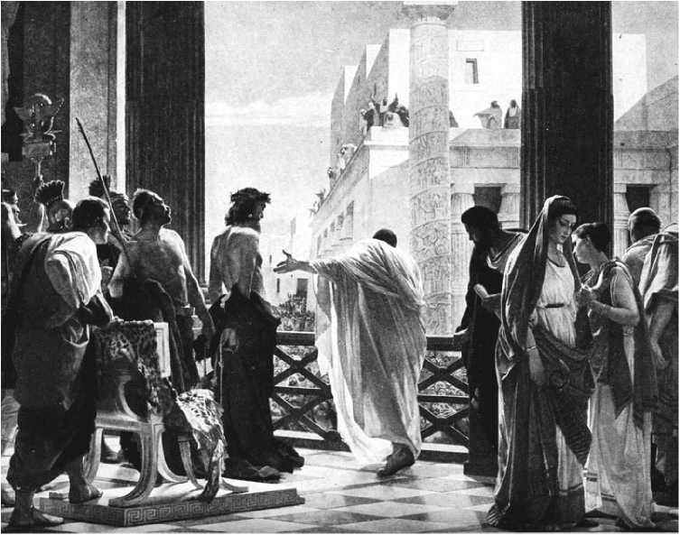Behold the Man
BLANK SIDE
Therefore, the decision was to merely chastise Jesus and release Him, but to this the murderous Pharisees would not assent, so they cried out for the blood of an innocent man, who had dared to teach the people the Truth due to be understood at that time, and the truth exposed their hypocrisy. The same spirit prevails today amongst a similar class—hypocrites and murderers at heart. So at the behest of “the chief priests,” Pilate released a man convicted of sedition and murder, Barabbas, and gave permission to crucify a Man whose head had never harbored an evil or wrong thought of any kind. The duplicity of the man Pilate when he went through the mockery of washing his hands in the presence of the Pharisees, thereby saying, My hands are clean of this murder you would commit; you must answer for it. They yelled, “His blood be upon us and our children!” It has been as they said—for nineteen hundred years the ignominy of this crime has been upon the Jewish people. Contemptuously they are to this day dubbed “Christ Killers.”
Then we see Jesus in the hands of the Roman soldiers, who stripped Him of His own clothes, and placed upon Him a purple robe, likewise upon that noble head a crown of thorns, and a reed in His right hand; after which they bowed before Him, mockingly, and said, “Hail, King of the Jews!” Then they emphasized their ignominy by spitting in His face and smiting Him upon the head with the reed. “He was oppressed and He was afflicted, yet He opened not His mouth. He was brought as a lamb to the slaughter, and as a sheep before her shearers is dumb, so He opened not His mouth.” Thus was the Lamb of God led to the slaughter on the “place of a skull”—called Golgotha.
We see too “the holy, harmless, the undefiled One” staggering under the weight of the heavy wooden cross, to which His body was soon to be nailed, until He fell under its weight; then they found Simon, a Cyrenian, whom they compelled to bear the cross of Jesus. The one who is so soon to “taste death for every man” struggles on up to the crest of Golgotha. Then we see this Holy One of Israel stripped, laid upon the accursed cross and the cruel nails, spikes indeed, driven through the perfect flesh of the Son of God! O the horrors of this thought! When I first saw this portrayed in the Photo-Drama I verily thought my heart would stop beating, for the picture gave way to the reality and I thought for the moment I was on Calvary when the greatest crime of all history was being committed. Every stroke of the hammer, as it forced the cruel nails through that perfect flesh, was like a poniard in my heart. What, indeed, must the reality have meant to Mary the mother of Jesus; the tender, loving, devoted John, likewise the zealous Peter and the other sorely perplexed disciples!
Finally those plaintive, agonizing words come thundering down through the long centuries since—“My God! My God! why hast thou forsaken me?” Then, and there, the Son of God, the only Begotten and well Beloved Son, yielded up His spirit, His human life, the “flesh that He gave for the life of the world,” and died of a broken heart, as history and science proclaim. There Jesus entered “the valley of death” in the full, complete sense; there He ended His “Ministry of Sorrow;” there He died the Just for the unjust—died, that we might live; hence we can from the heart sing,
“Well might the sun in darkness hide
And shut his glories in,
When Jesus, God’s Anointed, died, For man undone by sin.”
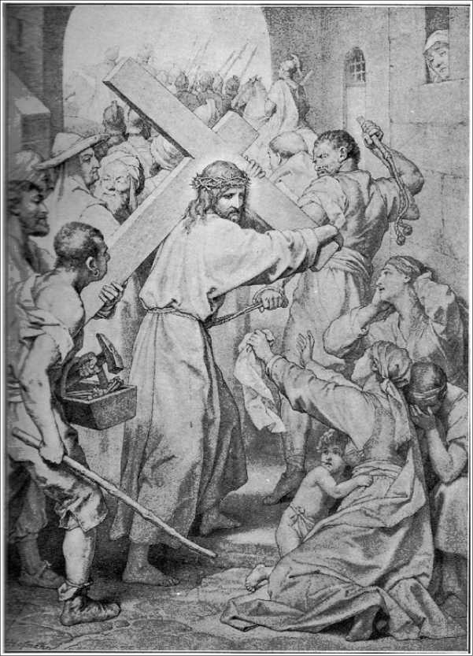Should we be surprised, then, that the veil of the Temple was rent in twain from the top to the bottom, and that the earth quaked, and the rocks were rent, while the sun hid his face? While there was darkness upon the earth, sorrow touched the Heavenly Courts, and we may be sure sorrow reigned there supreme for a time, even though we may not suppose that literal tears were shed. Since we are informed that all of God’s creatures were created in His likeness, we know that that which would touch His own loving heart would of necessity reach the tender sentiment of all in His likeness—actually or reckonedly.
This is the way that faithful, devoted Servant expressed the thought:
“With what tender yearning emotions of love must Jehovah have made this sacrifice of His beloved Son, in whom He was well pleased! Ah! did the Father let His Son go on that errand of mercy without the slightest sensation of sorrowful emotions? Had He no appreciation of the anguish incident to a father’s love when the arrows of death pierced the heart of His beloved Son? When our dear Lord said, ‘My soul is exceeding sorrowful even unto death,’ did this fact touch no sympathetic chord in the heart of the Eternal? Yea, verily; the unfeigned love of the Father sympathetically shared the Lord’s sorrow.
“The principle taught in the Divine Word, that true love weeps with those who weep, and rejoices with those who rejoice, is one which is exemplified in the Divine Character. God sacrificed at great cost to His loving, fatherly nature, the dearest treasure of His heart; and thus He manifested the great love wherewith He loved His deceived and fallen creatures. If this sacrifice cost Him nothing, if it were impossible for His mind to realize any painful emotions, even under such a circumstance, then the gift of His dear Son would be no manifestation of His Love; for that which costs nothing manifests nothing.”—Pastor RUSSELL.
“My Wound Is Grievous”
Jehovah and the Heavenly Hosts have the pleasurable delights of joy in things happifying in character, so exercise the pleasurable emotions—and pain and pleasure may properly be considered the ebb and flow of the same emotions. Since we know, then, there is Joy in Heaven, we may properly assume that some things produce sorrow there; many Scriptures indeed speak of the heart of the Eternal as being grieved because of defiance of His righteous laws; once saying through His holy Prophet, “Woe is me for my hurt! My wound is grievous; but I said, Truly this is grief and I must bear it.” If there will be joy in Heaven on account of “one sinner” (Adam and his race) returned, we may safely conclude that there has been grief and sorrow because of the sinful course of the human family. The conclusion is forced, then, that there was special occasion for sorrow in Heaven while the Holy and Harmless Jesus hung agonizing on the cross, Jehovah manifesting His grief by veiling the light of the sun upon earth from the sixth to the ninth hour, when His dear Son yielded up the spirit of life.
But the picture moves. In vision we follow the subsequent events. With righteous indignation we behold the Roman soldiers, the instruments of Satan, casting lots upon the rich robe of the world’s Redeemer, who no longer had need of such a covering, since in reality His person was forever hidden from the eyes of a cold, unappreciative world. Our hearts burn with righteous wrath as we behold such iniquity—such indignity to the memory of the “Man of Sorrows, who came, ruined sinners to reclaim.” Ah! the shame of it all. They shall look (in understanding) upon Him whom they pierced—they shall have their day of mourning. The instigator of this whole iniquitous plot was Satan, who was trying to thwart the purposes of Jehovah.
Loving, loyal and respectful in contrast was the heart of Joseph of Arimathea, a disciple of Jesus, who secretly, through fear of the Jews, went to Pilate and begged permission to remove the body from the cross and give it a respectful burial. So he, accompanied by Nicodemus, who furnished spices to the weight of about one hundred pounds, covered the body with this precious mixture and wrapped it in fine linen, in accordance with the Jewish mode of preparing for burial. Near the place of crucifixion there was a new tomb, cut in the solid rock by Joseph, and in which no body had ever been laid; to this they carried the sacred remains of the Son of God, who came, ruined sinners to reclaim. So closes this feature of this most sorrowful picture, though we can not blot it from our memory; neither is it best that we should be able to do so, for the thought is solemnizing and sanctifying.
As loving and respectful as were these acts on the part of Joseph and Nicodemus, the crowning expression of love and gratitude was left for Mary of Magdala, whom we find at the tomb, before daybreak on the third day, laden with spices and perfumes, to anoint the body of the One who had released her from bondage; for, having been forgiven much, she loved much. (Luke 7:36-48.) She had manifested her devotion, her love, her gratitude on a former occasion, when she broke the alabaster box and poured the precious contents upon the feet of God’s Anointed; now she would show this last token of love and gratitude by anointing the whole body with sweet spices and perfume. Thus we have contrasted before our minds the acts of Jesus’ disciples, actuated by love; and the acts of the Jews, who were actuated by the spirit of the Devil.
“A careful, prayerful searching of our hearts will make plain wherein we lack in conforming to the perfect will of God. And if we discover in ourselves any perverse way, we shall correct it. Thus we more and more put on the Lord Jesus—the mind or disposition of Christ, the spirit of love and loyalty which characterized Him. How important it is that in the very short time which remains to us, that we fully awake and apply ourselves most diligently to the cultivation of the Godlike, Christlike disposition of love, the love which seeks above all else the glory of God and which is kindly affectioned toward the brethren.”
—Pastor Russell
BLANK SIDE
CHAPTER XXVII
The remains of Charles Taze Russell reached the Bethel Home on Saturday, where they were viewed by the “family” and by members of the New York and Brooklyn congregations. On Sunday morning they were removed to The Temple in New York City, and there lay in state until ten o’clock that night. Here thousands from all parts of the United States and Canada were privileged to look upon what had been the “earthly tabernacle” of the greatest, grandest and noblest man who had walked this earth since the days of Saint Paul, who in many respects was the greatest of the Lord’s Apostles.
All day Saturday and Sunday representatives of congregations in many cities east of the Mississippi, and a few from farther west, also from various sections of the Dominion of Canada, arrived on almost every train reaching the metropolis. The Temple was quite inadequate to accommodate all who came. The lecture room below was therefore opened, so that a double service was held at the same time. Every available foot of space was occupied from the Basement to the Gallery.
Two services to run practically simultaneously gave all opportunity to hear every speaker of the occasion. Each speaker, when he finished his remarks at the side of the casket in the main Auditorium, proceeded to the Lecture Room below, and repeated the same address to the friends assembled there.
The afternoon service, which had been especially announced for the friends, was opened with a solo, “Be Thou Faithful Unto Death.” These words were especially impressive, partly for the reasons that one of the most beautiful floral designs surrounding the casket bore a broad white ribbon on which were the words of the beautiful poem. The hymns sung being, “Blessed Be the Tie That Binds,” so universally sung at Conventions, when welcoming Brother Russell on his first appearance in the hall, accompanied by the “Chautauqua Salute”; the other hymn was one of Brother Russell’s favorites, “Sun of My Soul, My Father Dear.”
The floral display was pronounced by those present to be one of the finest ever seen on such an occasion. The scene surpassed description. There were flowers in profusion and in every nook and corner where they could be placed. The platform was so laden with them that there was scarcely enough room left for the speakers of the occasion to stand. Moreover, the entire facing of the balcony, and all the boxes, were artistically decorated with a great variety of ferns and flowers.
A Broken Pillar of Flowers
At the foot of the casket was placed a broken pillar of flowers, fittingly representing that dear body, which, like the Lord's body, had been broken in the service of the brethren; while at the head was a magnificent floral cross and crown —the Cross symbolizing his share in the death of Christ and His sufferings, while the Crown symbolizes the “Crown of Glory,” which, we have every reason to believe, he now wears with our dear Lord in Heaven. The rostrum was not large enough to contain all the floral designs, nor was there space available anywhere in the interior of The Temple to display all the floral contributions. But however beautiful and numerous all these were, we believe they but very imperfectly represented the degree of love and esteem in which our departed Pastor was held by all who knew him well.
Brother Russell had requested in his will, that instead of having the usual funeral service, with only one Brother to give the address for such occasion, several should be asked to make a few remarks and that the services should be very simple. Accordingly there were seventeen brethren who served in this way.
The closing scenes of this rehearsal will be associated with the final services held in the boyhood home of Charles Taze Russell, and indeed in the city of his birth, and where a great part of his “mighty works were done”—Pittsburgh, Pennsylvania. It seems quite proper, then, that at this city—the place of his birth, the home of his youth and early manhood, likewise the center of his early activities in the Harvest Work, that the curtain should be gently pulled down upon the scenes which had to do with the life of the most remarkable man of both the nineteenth and twentieth centuries; for here the mortal remains of Charles Taze Russell were laid at rest —where the “dust should return to the dust.”
Sunday night, after the conclusion of the solemn services at the Temple, in New York City, the remains were expressed through to Pittsburgh. The following is copied from a published report at that time:
“The evening oration, reading of Brother Russell’s sermon which he himself had prepared to deliver in the Temple that evening, and the sweet strains of several hymns where still fresh in the minds of the vast audience when the pall-bearers carried forth from the Temple the casket containing the remains of our dear Brother Russell. Accompanying the body to Pittsburgh were two Pullman cars loaded with devoted and faithful friends, who were met by hundreds of loved ones at that place.
“The large auditorium of the Carnegie Library in Allegheny was packed at two o’clock the following afternoon, when the fourth part of the funeral service began under the direction of Dr. W. E. Spill, representing the Pittsburgh congregation. Love and deep interest were written upon every face in this vast audience also. Every available space on the platform was used to display the rich floral offerings of every description sent by Bible Students and friends from various sections of the country.
“The blending of the voices composing the double quartette in their rendition of sweet Christian hymns was the means of conveying blessings of comfort and encouragement to many sorrowing hearts. After the reading of the Holy Scriptures by Brother R. H. Bricker, also of the Pittsburgh Ecclesia, Dr. W. E. Spill delivered an address. He was followed by Brother Sturgeon, after which, while the congregation was taking its final view of the face of that noble Christian laying before them, the choir sang the last song given out by Brother Russell during his recent visit to Los Angeles:
Abide, sweet Spirit, Heavenly Dove, With light and comfort from Above; Be thou our Guardian, Thou our Guide, O’er every thought and step preside.
“The funeral cortege consisted of 101 automobiles and a trail of several trolley cars. The beautiful Rosemont Cemetery was reached at dusk, where a company of 500 friends were gathered on the hillside to witness the last sad rites in connection with the placing our loved one in the grave. An avenue lined with flowers was formed, through which came the mourners with bared heads, bearing solemnly the casket containing the remains of our Pastor. The walls of the grave were lined with ferns and white chrysanthemums. At the foot of the grave was a floral design inlaid with colors of gold, which silently expressed the belief that the victorious Christian soldier, whose body lay before us, had gone home, and was now a partaker of the Divine nature.
“While the bier rested upon the supports over the open grave, prayer was offered, and the casket was lowered to its last resting place, during which the choir impressively sang the beautiful words of hymn No. 98.
“It is fitting that while our Beloved had gone to be forever with the Lord and like Him, his remains should rest near the scenes of his earlier days, where the Harvest Work began, and where the STUDIES IN THE SCRIPTURES, which contributed much to his fame, were written and first circulated.”
Elsewhere in this book will be found some reproductions of beautiful photos taken of the surface, showing the “Pyramid” and Head Stone with inscription, likewise the plat beneath which is hidden the ashes of one who we believe is now crowned both King and Priest. The casket was placed in a vault beneath the surface of the earth, inclosed in solid cement two feet thick, and carefully sealed. This in order that the ghouls might not “come by night and steal the body” for experimental purposes. Scientifically speaking, that skull would have a great value, so money might be supplied without stint to obtain it. The committee thought it best to not put temptation in the way of any of basely and curiously selfish, so they took proper precaution to prevent the grave being thus desecrated.
AT THE GRAVE SIDE
“Upon a hillside, sloping towards the south, we gathered round about upon that hallowed ground to pay our last sad tribute to the one we loved, the greatest man on earth in these last days—and great because he was approved of God! How ineffable the beauty of the scene! So peaceful and so still! The gently rolling hills, far as the eye can reach, reminding us that, ‘As the mountains are round about Jerusalem, so the Lord is round about His people from henceforth, even forever.’ A violet mist creeps softly through the valley at our feet, and faintly dims the city’s distant lights.
“The sacred silence is broken only by the singing of our choir, like angel voices floating out upon the evening air:
How vain is all beneath the skies!
How transient every earthly bliss!
How slender all the fondest ties
That bind us to a world like this!
“Above the purple haze, and low within the western sky, the last faint, crimson glow of sunset slowly pales into the silvery whiteness that precedes the night. And lo! the evening star! How like a star was our beloved! And how he shed the rays of Truth divine into the darkness of our minds and changed that darkness to ‘His marvelous light!’
The evening cloud, the morning dew The withering grass, the fading flower, Of earthly hopes are emblems true, The glory of a passing hour.
“How exquisitely expressive of all about us! The withered grass beneath our feet, the fading flowers upon the upturned earth, and here and there the bare, brown trees, a few crisp leaves still faintly fluttering on their boughs. Their fruit has all been gathered and they speak to us of harvest soon to end. ‘In this is my Father glorified that ye bear much fruit.’ Did our beloved Pastor bear much fruit? Ah, yes! How much, he now may know as he hath never fully known before!

BLANK SIDE
But though earth’s fairest blossoms die, And all beneath the skies is vain, There is a brighter age now nigh, Beyond the reach of care and pain.
“And standing there, our hearts rejoiced with joy unspeakable that in His infinite love and mercy the Lord had not permitted that most precious clay to suffer violence, but, ‘Like as a father pitieth his children, so the Lord pitieth them that fear Him,’ and He saved us from the anguish which might have been greater than we could bear! Yet he suffered—how greatly God only knows, for he never murmured or complained; but he suffered not by hands of wicked men, and so we rendered thanks to God!
Then let the hope of joys to come
Dispel our cares, and chase our fears, Since God is ours, we’re traveling home, Though passing through a vale of tears!
“With eyelids closed, and sorrowing hearts, we bowed our heads in final prayer with one who also loved and labored with him to the end.
“And then in silent little groups the friends departed from the scene, and as we climbed the hill to reach the road, the moon shone full upon us. Ah, yes! The full moon of God’s favor, and our hearts cried out, ‘How long, O God, until the night shall come, that night wherein no man can work!’
“One last and lingering look upon the scene recalled to mind that wonderful picture, ‘The Return from Calvary,’ with its three crosses faintly outlined on the evening sky, and the sorrowful women wending their way towards Jerusalem.
“And now it had grown strangely dark, no object was discernible on either side the road, as we, the Lord’s still faithful followers of these later days, were swiftly borne towards the city of our beloved leader’s birth.
“How wondrously appropriate all had been! The suggestion of the Harvest soon to end, the ingathering of the ripened fruits, the softly falling twilight, like a curtain dropped upon the scene, and now the darkness and loneliness of the flock of sheep whose faithful shepherd had been ‘smitten!’
“How necessary now to walk still more ‘by faith’ in the Great Shepherd of us all, the One who is ‘too wise to err, too good to be unkind;’ ‘Who doeth all things well.’ Be brave, be strong, weep not, have faith in God!
“It is the LORD, let Him do what seemeth Him Good!
“Thus,
“Faith can firmly trust Him, Come what may.
“Gertrude W. Seibert.”
Regularly Elected Pastor Thirty-four Years
We, the Pittsburgh Congregation of Associated Bible Students, deeply mourn the death of our Beloved Pastor, who has lovingly and faithfully served us for so many years. In loving consideration of his high honor and noble Christian character, his untiring labors on behalf of the Lord’s people, both here and elsewhere, his many noble sacrifices and patient endurance of much persecution on behalf of the Lord’s Truth, his devoted faithfulness to the Lord and to the Lord’s Word under every condition of trial; therefore, be it
Resolved, That this Congregation bear witness to Christians everywhere of our deep appreciation of the patient watch care, the wise counsel, and the helpful and loving guidance of his thirty-four years as the regularly elected Pastor of this Congregation, both in the Word and work of the Lord. We have full confidence of faith that, his work finished, he has now entered into that blessed “rest that remaineth for the people of God.” “Blessed are the dead who die in the Lord from henceforth; yea, saith the Spirit, that they may rest from their labors, and their works do follow them.” Be it further
Resolved, That these resolutions be printed in the Pittsburgh newspapers, and that a copy be sent, with fraternal love in Christ, to the New York City Temple Congregation, the Brooklyn Tabernacle Congregation, the London Tabernacle Congregation and through them to all members of the International Bible Students’ Association, as an expression of our sympathy in our mutual loss, and of our prayer that the Lord’s continued blessing be with them.
We, the undersigned Chairman and Secretary of the Congregation herein named, do hereby certify that the foregoing was unanimously adopted by the Pittsburgh Congregation of the Associated Bible Students, at a meeting held November 19, 1916, at the Bible Students’ Auditorium, 305 Penn Avenue, Pittsburgh, Pa.
W. E. Spill, Chairman,
R. H. Bricker, Secretary.
That is on trial now. In the calmer days, when the sun of favor shone brightly upon you, you were quietly laying the foundation of Truth, and rearing the superstructure of Christian character. Now you are in the furnace to be proved; summon therefore all your courage; fortify your patience; nerve yourself to endurance; hold fast to your hope; call to mind the precious promises, they are still yours; and “cast not away your confidence, which hath great recompense of reward.” “In quietness and confidence shall be your strength.” “Rest in the Lord, and wait patiently for Him,” and faith has gained her victory.
If we only knew each other, if we only understood,
We would cherish one another as a band of brothers should, We would bravely stand together, or together bravely fall, If we only knew each other as the Father knows us all.
If we only knew each other, we would know enough to know That each brother and each sister has a mission here below, Some bright message to deliver, something given us to do Which none other might deliver—if we only, only knew.
If we only knew each other—could we rend the veil apart That conceals from one another all the anguish of the heart— We would hearken to the Father, heed his tender, loving plea, “Bear ye still with one another, e’en as I have done with thee.”
Though the armor chafes our spirit, though the spear cleave through our side,
We must die for one another, even as the Master died.
Though the world may not approve us, still our conscience must approve,
For the sake of those who love us, for the sake of those we love.
Wisdom errs and pity falters, and the sword is double-edged, And the victims on our altars—“Judge them not, lest ye be judged.”
Let us share with one another heaven’s blessings here below, And we yet may know each other as God would have us know.
We are children of one Father, doomed to suffer and abide. Hast not wrong forever governed? Right is always crucified. Just beyond stands God our Father in the shadow of his throne, In his loving, tender mercy, keeping watch upon his own.
BLANK SIDE
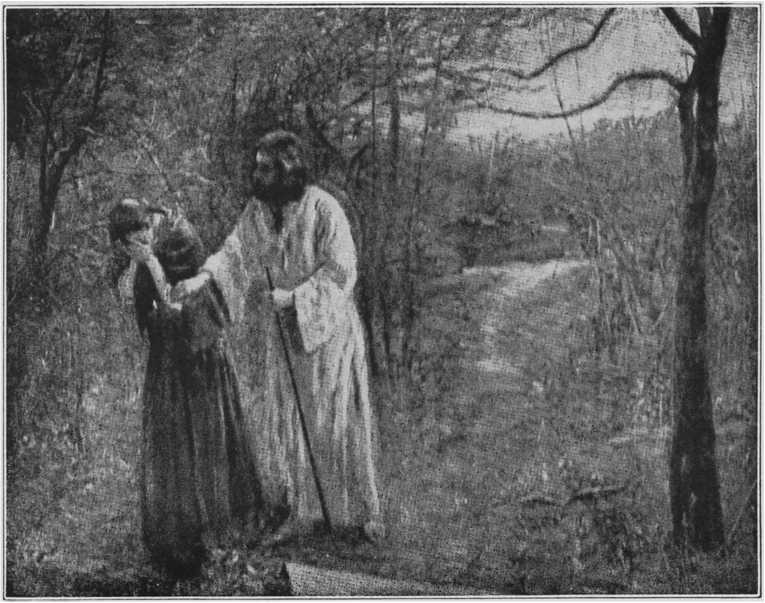The Gentle Touch—The Tender Voice
Jesus and the Two Walk to Emmaus
The picture now changes again before our mental vision, for, behold! He is not here; He is risen. To the loving, devoted Marys first came this wonderful information “He is risen,” God rewarding their devotion, their loyalty, their love.
“Christ, the Lord, is risen today,
Sons of men and angels say;
Raise your joys and triumphs high:
Sing, ye heavens—and earth reply.”
Receiving this information they quickly left the tomb and ran, still terrified but full of unspeakable joy, to carry the news to His disciples. And then suddenly they saw Jesus coming to meet them. “Peace be unto you,” He said. “Dismiss all fear! Go and take word to my disciples in Galilee, and there shall they see me.” As for the eleven disciples, they later proceeded into Galilee, to the hill where Jesus had arranged to meet them. They saw Him and prostrated themselves before Him. Before this they doubted.
Let us now in mind take a position beside the two disconsolate disciples, on the first day of the week, as they walked to Emmaus and talked in subdued tones, and with sad countenances. As they thus walked and talked a “Stranger” joined himself to them. “What is the subject,” He inquired, “on which you are talking so earnestly?” Cleopas answered, “Are you a stranger in Jerusalem, that you know nothing of the things that have lately happened in the city?”
“What things?” He asked.
“The things about Jesus the Nazarene,” they answered. “He was a Prophet powerful in work, and word before God and the people; and our High Priests and Rulers delivered Him up to be crucified. But we were hoping that it was He who was about to restore Israel. Yes, and moreover it was the day before yesterday that these things happened. And besides some of the women of our company have amazed us. They went to the tomb at daybreak and finding that His body was not there, they came and declared to us that they had seen a vision of angels who said He was alive. Thereupon some of our party went to the tomb and found the things just as the women had said, but Jesus Himself they did not see.”
“O dull-witted,” He replied, “With minds so slow to believe all that the Prophets have spoken! Was there not a necessity for Christ to suffer and then enter into His glory?” So beginning with Moses and the Prophets, He explained to them the passages in the Scripture which refer to Himself. When they had come near to the village to which they were going, Jesus appeared to be going further. But they pressed Him to remain with them. “Because,” said they, “it is getting towards evening, the day is nearly over.” So he went in to stay with them. But as soon as He had sat down with them and had taken bread and had blessed and broken it, and was handing it to it to them, their eyes were opened and they recognized Him. But He vanished from them. Then they said one to the other, “Were not our hearts burning within us while He talked to us on the way and explained the Scriptures to us?” So they arose and without an hour’s delay returned to Jerusalem and found the Eleven and the rest met together, who said to them, “Yes, it is true; the Master has come back to life. He has been seen by Simon.” While they were thus talking, He Himself stood in their midst, and said: “Peace be unto you!” Startled, and in the utmost alarm, they thought they were looking at a spirit!
With our minds refreshed by this review we can easily see what a state of perplexity the forlorn disciples of our Lord were in after He had been so unexpectedly and ruthlessly torn from them—murdered at the behest of a criminal class—the religious fanatics, who would do wrong with the self-justifying thought before their minds that good might result—better that one man should die, even innocently, rather than the whole nation of Israel should perish. The picture altogether is a sad one, though expressive of God’s great love, of His Son’s obedience and of our Redemption. It is not possible for us to even conceive of just what our Lord actually suffered during the closing hours of his earthly experiences, but we can surmise to some extent what the emotions of His bewildered disciples must have been when He was taken from them.
From time to time Jesus had tried to prepare His disciples for what He knew awaited them—but their minds could not grasp His dark sayings; therefore, not expecting anything of the kind the shock was so great they were overwhelmed with perplexity, and so were finally scattered like sheep after the Shepherd was smitten. Nor should we be surprised at this result. They were natural men—the Holy Spirit was not given until Pentecost—fifty days later.
Surely we have not so soon forgotten the shock that came to our minds about October 31, 1916! Neither have we forgotten the sorrow, the sadness, the multiplied perplexities that have been our portion since—traceable to that shock. Like the disciples of our Lord’s day, we have given evidence, as did they, of being “dull-witted,” with minds slow to believe what we should have been prepared for. It is one of the inexplicable things about the human mind, even though when spirit-enlightened, that it is slow to grasp what it prefers to not believe; hence, as Weymouth expresses the thought, “dull-witted.” But we have come to appreciate the force and appropriateness of the Psalmist’s words, when he said, “We see not our signs: there is no more any prophet: neither is there among us any that knoweth how long.” Since that time the Church, generally speaking, has been very much in the same position as were the disciples of old—much like a ship at sea without a rudder. Because of this fact, the Church today is split up into all kinds of factions, somewhat as the “protestant” sects are, each faction able to convince itself that it is right and all others of a divergent view or position are wrong. Can it be possible that all are wrong in some respects? Who is foolish enough to boast? So eventually all the Bible Students may come to appreciate the Prophet’s words: “And they, whether they will hear, or whether they will forbear (for they are a rebellious house), yet shall they know that there has been a prophet among them.” Until this fact is fully realized it can not be fully appreciated—till that time, many blessings will be missed by some of the Lord’s people.
Our Lord’s Experiences Paralleled by Those of Pastor Russell
Do you suppose his heart never grew faint and sick under the stress, strain, disappointments and heartaches of that time? Surely that would be quite too much to think of any human being! Though his indomitable will supported him to an eminent degree, nevertheless we are bound to suppose that it was his faith in God, based upon the clear knowledge he had of the Divine character, as abundantly shown in his writings, emphasized by his continued nearness to God and his absolute consecration to the Divine will, which formed the real foundation upon which his wonderful endurance and marvelous tenacity rested.
Without straining our imaginations in any sense let us go back to Calvary and so note the associations and trials of our Lord before the culmination of His earthly experiences, which this event marked. Prophetically it had been said of Him, and the history of the events shows a fulfillment, “That of all the people there was none with Him.” How many, many times did Brother Russell’s experiences, in a sense, at least, parallel those of our Lord! When Jesus was about to be crucified His most ardent friends, His disciples, through fear, forsook Him and fled.
Time after time the most devoted of Brother Russell’s colaborers forsook him, too, when the tests came; not only so, but some of these very persons became his most bitter opponents, and not a few indeed, his calumniators. What his disappointments, sorrows, griefs and heartaches were on this score alone, we shall never know while we are in the flesh —not until “we know as we are known.” Yet, as far as we may judge from the evidences before us, he never faltered in the slightest manner in his earnestness, his purpose, his loyalty to God and His cause. Yes, he was “that faithful Servant,” without a doubt.
Every one reading the preceding history, respecting the many and seemingly almost unsurmountable difficulties with which Charles Taze Russell had to contend from the incipiency of his great work and approximately from every conceivable quarter, together with the many discouraging obstacles which beset his pathway at every turn, can be but amazed at the courage and endurance exhibited by this man of many sides and extraordinary powers: now, as a result of this courage and fidelity, we have seen how the Goliath of error “has gone down before the sling of Faith” in the hands of this devoted, faithful servant of the Most High. Could anything prove more satisfactorily the fullness of his consecration to and faith in the Lord? Here is surely another outstanding attribute of the character of this man of marvel. Can any fair-minded person question for a moment that he made God his shield and buckler, hence found Him a very present help in every time of need?
The writer of these lines sincerely trusts that a careful perusal of the foregoing feature of the memoirs of “that faithful and wise Servant,” and of the history of the starting and development of the Harvest Work, will prove as beneficial to every reader hereof as it was strengthening to his own faith, comforting to his own heart as he reviewed the same. Though he had long before read this history of the difficulties, trials, shakings and siftings connected with the promulgation of the Gospel of Christ: the experiences, besetments, trials and testings incident to the full development of the Church, especially since the sorrowful events of 1896, some of which he has to some extent shared in, yet new and additional light
has hereby been shed upon the “path those dear feet trod” at a time when there were so few, comparatively speaking, to give aid and comfort to that high minded, noble hearted man. I trust that a further reading of his own rehearsal will prove encouraging and comforting to every consecrated heart.
“Many a stormy Sea I’ve traversed,
Many a tempest-shock have known,
Have been driven, without anchor, On the barren shore and lone.
But I now have found a haven
Never moved by tempest-shock,
Where my soul is safe forever, In the blessed rifted Rock.”
“It is part of our overcoming to live as though the Day was fully ushered in, as though everything had been fully manifested. Whoever will take the Apostle’s advice in this matter will certainly have a rich blessing. In fact, any other course would be sure to be disastrous to us as New Creatures.
“Of those who enter into this covenant by sacrifice, not many, judging from what we can observe, carry it out faithfully, submitting their lives and their every interest to God’s will.”
“If we make a mistake, we are to be glad to rectify it and to make proper apologies and reparations—assuring the brother that we did not mean to hurt his feelings. Or, if under temptation, we felt less concern than we should about wounding him, we should ask pardon, confessing our sorrow, and then confess our fault at the throne of grace, asking forgiveness in Jesus’ name.”
—Pastor Russell.
A Dark Cloud and Its Silver Lining by John G. Whittier
In the Minister’s morning sermon he told of the primal fall,
And how, henceforth, the wrath of God rested on each and all;
And how, of His will and pleasure, all souls, save a chosen few,
Were doomed to eternal torture, and held in the way thereto.
Yet never, by Faith’s unreason, a saint-lier soul was tried,
And never the harsh old lesson a tenderer heart belied.
And after the painful service, on that pleasant, bright first day,
He walked with his little daughter thro’ the apple bloom of May.
Sweet in the fresh green meadow sparrow and blackbird sung;
Above him its tinted petals the blossoming orchard hung.
Around, on the wonderful glory, the minister looked and smiled:
“How good is the Lord, who gives us these gifts from His hand, my child.
“Behold in the bloom of apples, and the violets in the sward,
A hint of the old lost beauty of the garden of the Lord.”
Then up spake the little maiden, treading on snow and pink,
“O father! these pretty blossoms are very wicked I think.
“Had there been no Garden of Eden, there never had been a fall;
And if never a tree had blossomed God would have loved us all.”
“Hush, child!” the Father answered, “By His decree men fell;
His ways are in clouds and darkness, but He doeth all things well.
“And whether by His ordaining to us cometh good or ill,
Joy or pain, or light or shadow, we must fear and love Him still.”
“Oh, I fear him!” said the daughter, “and I try to love Him, too;
But I wish He were kind and gentle —kind and loving as you.”
The minister groaned in spirit, as the tremulous lips of pain
And wide, wet eyes, uplifted, questioned his own in vain.
Bowing his head, he pondered the words of his little one.
Had he erred in his life-long teachings, and wrong to his Master done?
To what grim and dreadful idol had he lent the holiest Name?
Did his own heart, loving and human, the God of his worship shame?
And lo! from the bloom and greenness, from the tender skies above,
And the face of his little daughter, he read a lesson of love.
No more as the cloudy terror of Sinai’s mount of law,
But as Christ in the Syrian lilies the vision of God he saw.
And as when, in the clefts of Horeb, of old was His presence known,
The dread, ineffable glory was infinite goodness alone.
Thereafter his hearers noted in his prayers a tender strain,
And never the message of hatred burned on his lips again.
And the scoffing tongue was prayerful, and the blinded eyes found sight.
And hearts, as flint aforetime, grew soft in his warmth and light.
WHAT HE WILLED
Last Will and Testament of Charles Taze Russell
Having at various times during the past years donated to the WATCH TOWER BIBLE AND TRACT SOCIETY all of my personal possessions except a small personal bank account of approximately two hundred dollars, in the Exchange National Bank of Pittsburgh, which will properly be paid over to my wife, if she survives me, I have merely love and Christian good wishes to leave to all the dear members of the Bible House family—to all other co-laborers in the Harvest work —yea, for all of the household of faith in every place who call upon the name of the Lord Jesus as their Redeemer.
However, in view of the fact that in donating the journal, ZION’S WATCH TOWER, the OLD THEOLOGY QUARTERLY and the copyrights of the MILLENNIAL DAWN SCRIPTURE STUDIES books and various other booklets, hymn-books, etc., to the WATCH TOWER BIBLE AND TRACT SOCIETY, I did so with the explicit understanding that I should have full control of all the interests of these publications during my lifetime, and that after my decease they should be conducted according to my wishes. I now herewith set forth the said wishes—my will respecting the same—as follows:
An Editorial Committee of Five
I direct that the entire Editorial charge of ZION’S WATCH TOWER shall be in the hands of a committee of five brethren, whom I exhort to great carefulness and fidelity to the Truth. All articles appearing in the columns of ZION’S WATCH TOWER shall have the unqualified approval of at least three of the committee of five, and I urge that if any matter approved by three be known or supposed to be contrary to the views of one or both of the other members of the committee, such articles shall be held over for thought, prayer and discussion for three months before being published—that so far as possible the unity of the faith and the bonds of peace may be maintained in the Editorial management of the journal.
The names of the Editorial Committee (with such changes as may from time to time occur) shall all be published in each number of the journal—but it shall not in any manner be indicated by whom the various articles appearing in the journal are written. It will be sufficient that the fact be recognized that the articles are approved by the majority of the committee.
As the Society is already pledged to me that it will publish NO OTHER periodicals, it shall also be required that the Editorial Committee shall write for or be connected with no other publications in any manner or degree. My object in these requirements is to safeguard the committee and the journal from any spirit of ambition or pride or headship, and that the Truth may be recognized and appreciated for its own worth, and the Lord may more particularly be recognized as the Head of the Church and the Fountain of Truth.
Copies of my Sunday discourses published in the daily newspapers covering a period of several years have been preserved and may be used as editorial matter for THE WATCH TOWER or not, as the committee may think best, but my name shall not be attached nor any indication whatever given respecting the authorship.
Those named below as members of the Editorial Committee (subject to their acceptance) are supposed by me to be thoroughly loyal to the doctrines of the Ransom—that there is no acceptance with God and no salvation to eternal life except through faith in Christ and obedience to His Word and its spirit. If any of the designated ones shall at any time find themselves out of harmony with this provision they will be violating their consciences and hence committing sin if they continue to remain members of the Editorial Committee —knowing that so to do would be contrary to the spirit and intention of this provision.
The Editorial Committee is self-perpetuating, in that should one of these members die or resign, it will be the duty of the remainder to elect his successor, that the journal may never have an issue without a full Editorial Committee of five. I enjoin upon the committee named great caution in respect to the election of others to their number—that purity of life, clearness in the Truth, zeal for God, love for the brethren and faithfulness to the Redeemer shall be prominent characteristics of the one elected. In addition to the five named for the committee I have named five others from whom I prefer that selection should be made for any vacancies in the Editorial Committee, before going outside for a general selection —unless in the interim, between the making of this will and the time of my death, something should occur which would seem to indicate these as less desirable for filling the vacancies mentioned. The names of the Editorial Committee are as follows:
William E. Page, William E. Van Amburgh, Henry Clay Rockwell, E. W. Brenneisen, F. H. Robison.
The names of the five whom I suggest as possibly amongst the most suitable from which to fill vacancies in the Editorial Committee are as follows: A. E. Burgess, Robert Hirsh, Isaac Hoskins, Geo. H. Fisher, J. F. Rutherford, Dr. John Edgar.
The following announcement shall appear in each issue of the WATCH TOWER, followed by the names of the Editorial Committee:
Zion’s Watch Tower Editorial Committee
This journal is published under the supervision of an Editorial Committee, at least three of whom must have read and have approved as TRUTH each and every article appearing in these columns. The names of the Committee now serving are: (names to follow.)
As a compensation, I think it wise to maintain the Society’s course of the past in respect to salaries—that none be paid; that merely reasonable expenses be allowed to those who serve the Society or its work in any manner. In harmony with the course of the Society, I suggest that the provision for the Editorial Committee, or the three that shall be actively engaged, shall consist of not more than a provision for their food and shelter and ten dollars per month, with such a moderate allowance for wife and children or others dependent upon them for support as the Society’s Board of Directors shall consider proper, just, reasonable—that no provision be made for the laying up of the money.
I desire that the OLD THEOLOGY QUARTERLY continue to appear as at present, so far as the opportunities for distribution and the laws of the land will permit, and that its issues shall consist of reprints from the old issues of THE WATCH TOWER or extracts from my discourses, but that no name shall appear in connection with the matter unless the same is required by law.
It is my wish that the same rules apply to the German, the French, the Italian, the Danish and the Swedish or any other foreign publication, controlled or supported by the WATCH TOWER BIBLE AND TRACT SOCIETY.
I will that a copy of this paper be sent to each one whose name has appeared above as of the Editorial Committee or the list from whom others of that committee may be chosen to fill vacancies and also to each member of the Board of Directors of the WATCH TOWER BIBLE AND TRACT SOCIETY. This shall be done immediately on my death being reported, so that within a week, if possible, the persons named as of the Editorial Committee may be heard from, their communications being addressed to the Vice-President of the WATCH TOWER BIBLE AND TRACT SOCIETY—whoever may be holding that office at that time. The answers of those appointed shall be to the point, indicating their acceptance or rejection of the provisions and terms specified. A reasonable time shall be allowed for any one mentioned who may be absent from the city or from the country. Meantime the remainder of the committee of at least three shall proceed to act in their capacity as editors. It shall be the duty of the officers of the Society to provide the necessary arrangements for these members of the Editorial Committee and to assist them in their duties in every possible manner, in compliance with the engagements made with me bearing on this matter.
I have already donated to the WATCH TOWER BIBLE AND TRACT SOCIETY all my voting shares therein, putting the same in the hands of five Trustees, as follows: Sr. E. Louise Hamilton, Sr. Almeta M. Nation Robison, Sr. J. G. Herr, Sr. C. Tomlins, Sr. Alice G. James.
These Trustees shall serve for life. In event of deaths or resignations successors shall be chosen by the WATCH TOWER SOCIETY Directors and Editorial Committee and the remaining Trustees after prayer for Divine guidance.
I now provide for the impeachment and dismissal from the Editorial Committee of any member thereof found to be unworthy the position by reason of either doctrinal or moral laches, as follows:
At least three of the Board must unite in bringing the impeachment charges, and the Board of judgment in the matter shall consist of the WATCH TOWER BIBLE AND TRACT SOCIETY’S trustees and the five trustees controlling my voting shares and the Editorial Committee, excepting the accused. Of these sixteen members at least thirteen must favor the impeachment and dismissal in order to effect the same.
Directions for Funeral
I desire to be buried in the plot of ground owned by our Society, in the Rosemont United Cemetery, and all the details of arrangements respecting the funeral service I leave in the care of my sister, Mrs. M. M. Land, and her daughters, Alice and May, or such of them as many survive me, with the assistance and advice and co-operation of the brethren, as they may request the same. Instead of an ordinary funeral discourse, I request that they arrange to have a number of the brethren, accustomed to public speaking, make a few remarks each, that the service be very simple and inexpensive and that it be conducted in the Bible House Chapel or any other place that may be considered equally appropriate or more so.
My Legacy of Love
To the dear “Bethel” family collectively and individually I leave my best wishes, in hoping for them of the Lord His blessing, which maketh rich and addeth no sorrow. The same I extend in a still broader sweep to all the family of the Lord in every place—especially to those rejoicing in the Harvest Truth. I entreat you all that you continue to progress and to grow in grace, in knowledge, and above all in love, the great fruit of the Spirit in its various diversified forms. I exhort to meekness, not only with the world, but with one another; to patience with one another and with all men, to gentleness with all, to brotherly kindness, to godliness, to purity. I remind you that all these things are necessary for us, necessary that we may attain the promised Kingdom, and that the Apostle has assured us that if we do these things we shall never fail, but that “so an entrance shall be ministered unto us abundantly into the everlasting Kingdom of our Lord and Savior Jesus Christ.”
It is my wish that this my last Will and Testament be published in the issue of THE WATCH TOWER following my death.
My hope for myself, as for all the dear Israel of God, is that soon we shall meet to part no more, in the First Resurrection, in the Master’s presence, where there is fullness of joy forevermore. We shall be satisfied when we awaken in His likeness—
“Changed from glory unto glory.”
Charles Taze Russell.
Published and Declared in the presence of the Witnesses whose names are Attached.
Mae F. Land,
M. Almeta Nation, Laura M. Whitehouse.
DONE AT ALLEGHENY, PA., JUNE TWENTY-NINTH, NINETEEN HUNDRED AND SEVEN.
—The Watch Tower, November 1, 1917.
“Patience can be developed only by trials; faith can be developed only by necessities. We have need of preparation for our future work. This can be gained only by those experiences which will touch us with a feeling of the infirmities and difficulties of the groaning creation to whom we shall be ministers when the throne is reached.”
—Pastor Russell.
CHAPTER XXX
There would seem to be a moral fitness in the matter of concluding this work with liberal excerpts from many Memorial addresses delivered by brethren who had more or less of an intimate, as well as long, acquaintance with the subject of these many and varied sketches pertaining to the life and works of the late Charles Taze Russell. These, of course, will partake more or less of the character of personal testimonials from consecrated brethren, who know whereof they speak, and so testify to that what they do know. For obvious reasons the identity of the speakers is not revealed—chiefly though because it is “that Servant,” and not his admirers and friends, whom he would place before your minds.
One of God’s Noblemen
“The pages of history record many of mankind who have left conspicuous footprints upon the sands of time. Some have been great within the boundaries of their local communities; some have reached out to the national borders; others have leaped all national bounds and exerted a world-wide influence. Some have gained greatness because of positions of influence, others by their ability to command conquering armies or otherwise sway the destinies of nations; some by noble deeds; others by their ability to inspire their fellow men to nobler lives and ambitions.
Some have been born to great positions; and some have seemingly been forced into greatness by exigencies of time or conditions; others, inspired by love and zeal for God, have laid down their lives willing sacrifices upon the altar of God’s devotion.
“The world is quick to applaud the conquering hero and prince of finance, but slow to recognize the true worth of the daily smoldering sacrifices of those who heed the Master’s admonition, ‘Be thou faithful unto death.’ It is left to other generations to enshrine the real heroes: as in the case of our Lord and His disciples; and we believe the same will be true of Pastor Russell. Contemporaries too often misunderstand, misjudge, severely criticize, persecute. How true this has been of all God’s noblemen of the past! But God promises that all such as worship Him in the beauty of holiness, in the midst of persecutions, shall shine as the sun in the Kingdom of their Father—when their greatness shall be revealed. How glad we are that God is taking cognizance of all sacrifices of love in His behalf!
“Today we are paying our last loving tribute to the memory of one of God’s noblest men. His life will speak for itself, when fully understood by succeeding generations.
“I desire to add a brief personal testimony: For over twenty years I was personally acquainted with our beloved Pastor, and for fifteen years was closely associated with him in business and otherwise; so I speak from personal knowledge and close observation. I first learned of him through his writings, and was drawn closer to the Lord by his logical exegesis of the Scriptures. It may seem strange, but ’tis true, I scarcely noticed the writer. He was hidden behind the message. Later I became acquainted with him personally and was closely drawn to him where I perceived the spirit that actuated him—the loving, loyal, consecrated heart, seeking to follow his God, seeking daily to do good unto his fellow-men, to the best of his ability, and seeking to assist them to a clearer perception of the true character of our God.
“That he was misunderstood by his fellow-men mattered little to him, so long as he kept his heart right with God and had His approval. I never met a man, who, in my estimation, endeavored more earnestly to live nearer to the Lord, or fought harder to keep his body under. His influence upon others has been written in the hearts and lives of thousands all over the world whom he has assisted to a closer walk with God and a fuller consecration to Him and His Word. His Scripture Studies and his other expositions led me to see more of the Wisdom, the Justice, the Love and the Power of God than I had ever recognized before; and helped me to serve Him more intelligently than I had been able to do previously, although since childhood I had earnestly sought to do God’s will to the best of my ability. As I saw, with increasing clearness, the Prize of the High Calling of God in Christ Jesus, I was led to consecrate to my Saviour every ability I possessed and to seek further understanding.
Pastor Russell’s Relation to the Pilgrims
“I am now standing at the bier of one whom, since the days of the Apostle Paul, God has more widely used than He has any other person. I am standing at the bier of one who has been to me a brother and a friend, having done me more good than have all other persons that have ever come into touch with me. I am standing at the bier of one whom I have loved more than I ever loved any other human being. I am standing at the bier of one whom I have every assurance of faith that he is now in glory with our adorable Lord and Saviour Jesus Christ. One can realize, therefore, how hard it is to control one’s feelings under circumstances like these.
“I have been asked to speak of the relation of Pastor Russell to the Pilgrims. He had two relations to them—an official and a personal relation. His official relationship to the Pilgrims can be understood when we recognize the office to which the Lord was pleased to call him; namely, to be the special channel for giving the ‘meat in due season,’ as well as for arranging and directing the work of the household of Faith. The Pilgrims, therefore, were related to him as fellow servants of the same God. Therefore, the Pilgrims were to bear a part of the burden and toil that were his.
“It was this office that gave him a close and directing relationship to the Pilgrims. He was eminently fitted by nature, by grace and by experience to fill the demands of this place. He had a giant intellect with marvelous perceptive faculties, remarkable memory and clear, deep and true reasoning powers, combined with an excellent knowledge of human nature, and with tactful aggressiveness. These qualities gave him great executive ability, which, of course, eminently fitted him to direct the work of the Pilgrims. Our Heavenly Father endowed him with a natural disposition, especially in his religious capacities, that very few of the fallen human family have had. Therefore, his relationship to the Pilgrims was that of directing the work.
“His instructions to the Pilgrims were very simple. He believed that few instructions were better than many. A Pilgrim, on starting out, asked him, ‘Brother Russell, have you some word of instruction, encouragement or caution to give me that will be helpful to me in the Service?’ He answered, ‘No, Brother.’ Then thinking a while he said, ‘Yes, Brother, I have. Be full of loving zeal and deep humility, and everything will be well.’ He was wont to say, ‘If you are in any difficulty or if you have a problem which you can not solve, remember you always have an open ear and willing hand here.’
“He was always on the alert to encourage others; and no Pilgrim left his presence without being encouraged. When correction was needed, it was given with the greatest tact and leniency; allowances being made for good intentions. Only such restrictions were made as were necessary for the profit of the cause and its participants. Whenever he had any changes to make, promotions or demotions in the service, they were made not from any personal reasons, but because of the principles in the Heavenly Father’s Word. His course was that of completely sinking his will into the Lord’s will and of searching to find out what that will might be.
“He was not only a father, but also elder Brother to the Pilgrims, always ready to stand side by side with them. Therefore, he was not regarded solely with the feeling that people should have for a father. As an elder Brother he inspired the Pilgrims with confidence in, together with respect for, himself. He was, furthermore, a true friend. He did not whimsically take up one today and drop him tomorrow. Every Pilgrim recognized that he could depend upon the friendship of this beloved servant.
“Any one in distress, especially in spiritual distress, seeking comfort, would find in him an attentive ear, a sympathetic heart, a cheering and encouraging thought. By nature he was very richly endowed with sympathy, and by grace this was more highly developed than the majority of his other qualities. This enabled him to enter into the feelings of so many when they came to him with the things that pressed them sorely. This made him a sympathizing comforter.
“Furthermore, this good servant of God was an optimistic well wisher. He always put the best construction upon everything. He gave every one credit for good intentions. He was a cheerful helper. Nothing pleased him more than to serve others. Every rightly disposed person who came in contact with him was refreshed and encouraged. He was always thinking of others, not of himself. That is why his death was so glorious. He had thought he would pass away as a martyr. In many respects his death has been more glorious than a martyr’s. He used up every ounce of his strength in the Service, for he died in the harness.
“We can no longer pray for our Brother, as we have, day by day, ‘God bless our dear Pastor.’ But, beloved we can pray with respect to him that God will bless his memory. He is beyond the need of our prayers; but oh! beloved, let us not leave a vacancy in our prayers where we were wont to pray, ‘God bless our beloved Pastor.’ Let us now pray, ‘God bless the memory of our Beloved Brother Russell.’ Oh, let the Israel of God everywhere pray, daily, God Bless his Memory!”
Pictures or No Pictures
“For years I have been intimately associated with our dear Pastor as his publicity representative. It has been my special privilege to arrange with newspapers in various countries for the publication of his sermons, and also to interview editors throughout the world in respect to his personal work; and in all things I found him a thorough-going, conscientious Christian, whose highest endeavor was to serve the Lord, the Truth and the Brethren.
“I know that he has been assailed many times maliciously; and it was my privilege many times during the past seven years particularly to defend his character. When his sermons were first ‘Syndicated,’ Brother Russell refused to permit his portrait to be used in connection with them. He was very modest in this respect. He felt that he was entitled to the privacy of his own pictures; that they should not be paraded before the public. But the newspaper editors who were glad to get the sermons, could not be ignored; and the demand was uniform that they should have it, that they should be privileged to publish it in connection with the sermons. Brother Russell finally gave his consent; for he came to the conclusion that by the publishing of his picture, he would get a wider reading for his message, the Message of God, the Message regarding the Kingdom. For this reason, and this
alone, he gave his consent.
“So much for the picture. There has been no man in this age equal to Brother Russell. He was an outstanding figure in any crowd. No matter whether he was seated in a train or in a street car or walking along the streets, people would stop and turn around to get a second look. Many times have I overheard people saying, that he looked like the Lord, if ever any man did. His very appearance widened his influence for the glory of God. As his influence grew, the opposition also grew, and many people learned to hate that picture, because he stood for something different from what they did. I remember one preacher saying that he could not pick up a paper to read the news without having Pastor Russell staring him in the face. Now that this noble face is soon to be covered, to be seen no more, we can confidently say, ‘This mortal has put on immortality!’ This wonderful character was sown in weakness, but we are sure it has been raised in power.”
Being Dead Yet Speaketh
“Twenty-five years ago it was my privilege to meet for the first time the few Bible Students, who met yearly in Allegheny, Pennsylvania, at the Memorial season. There at the home of our departed Brother we were privileged to meet him who has sacrificed his life for the Truth he so dearly loved.
“As years passed, we became more closely associated with him, and as we were enabled to see in him that wonderful Christ-like character which has been a source of such great blessings to many, our love and respect for him increased. We have never been disappointed in him.
“As our studies in the Word of God progressed, perplexing questions continually arose. These we were privileged to take to him, and like the disciples of old, our own heart burned within us as we listened to his clear and beautiful unfolding of the Word of God. We thus learned that we were sitting at the feet of a man of God, and also the greatest Bible scholar since the days of the Apostles.
“His kind, loving words and noble deeds will live on, for ‘he, being dead, yet speaketh’!”
Moulded Thought of Millions
“Our Pastor was very dear to the Bethel family. He was a loving, yet just head over the Home. All the members of the family had ready access to him with their perplexities and troubles. It was interesting to notice how almost all went away from these interviews smiling, as all difficulties had been cleared up. He seemed almost intuitively to understand; and was always sympathetic and tender, even when he himself was suffering great pain. The better I knew him, the better I loved him. He was the best man I ever saw, and I never expect to see his equal again. There is none like him.
“He entered so fully into our lives that there might be danger of thinking of him as belonging peculiarly to the Bethel family, or to the New York Ecclesia, or at least to the Bible Students of America. But he was broader than all these; he was loved by the Bible Students and Truth seekers the world over. He was also loved and respected by devout Jews in almost every part of the world, and helped much to revive their faith in their Bible promises.
“Besides all this I am convinced that he did more to mould public thought—especially in the religious world —than all other contemporary religious leaders. Very few now believe the doctrine of eternal torment; thanks to his efforts! He brought many other religious truths to light.”
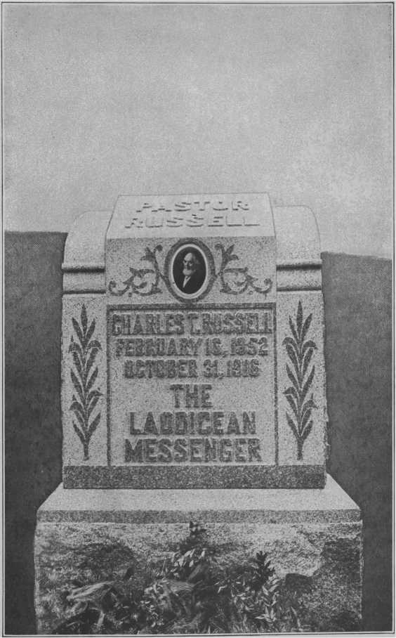BLANK SIDE
Did Jehovah’s Work
“For ten years my work in connection with the Convention Reports brought me in close contact with Brother Russell and the work of the Society in general. Our understanding has been thorough on this matter. Then, too, I have traveled extensively with him as his Secretary on various trips, particularly in connection with the World Tour in 1912, when for nearly four months we were closely associated.
“Many times Brother Russell discussed with me his personal and private affairs, as well as the work in hand. I desire to say that his one aim was to do the will of God. He recognized that the work he was doing was not his, but Jehovah’s.”
Left Us an Example
“As a personal testimony, I wish to state that it was my privilege to travel with our dear Brother Russell for days, weeks, months at a time, both in America and during his journey around the world. My greatest impressions were, how implicitly he trusted the Lord in everything!
“Whether on train, steamboat or at hotel, before taking up the day’s work, he would kneel and ask God’s blessings and help. We shall never forget his ceaseless and untiring love for all the Church, ever trying to enlighten and comfort them, even laying down his life for the brethren when his body was worn and racked with pain. He would never murmur nor complain, but would say, ‘We have it so much easier than did the Apostles and our dear Lord.’ What an example he has left us!”
Follow Him as He Followed Christ
“Our beloved Pastor’s death has aroused in our hearts all that is noblest, holiest and best. We rejoice unselfishly that his labors are over, and that he has entered into his rest and reward. We sorrow as we feel keenly the loss of his faithful ministry. We sympathize with one another in our bereavement and especially with those closest to him in his labor. We are resolved that by God’s grace we shall be inspired by our Beloved Brother’s life and teachings to greater faithfulness.
“It was my privilege to have known our Pastor upwards of twenty years, and his personal example was perhaps even more inspiring than his teachings. He never worried, was never impatient. His peace of mind was wonderful.
“Our Beloved Pastor took a genuine, personal interest in all the Lord’s people. He rejoiced in their progress, and treasured their interesting experiences in his wonderful memory.
“Brethren, our Beloved Brother has left us a noble example. Shall we not follow him as he followed Christ? May our end be as his!”
He Has Done as Commanded
“I deem it a privilege and an honor to offer a tribute of love and esteem in memory of our departed Brother and Pastor. The grandest, noblest character of our day, whose life has been, and ever will continue to be, an inspiration for us to follow him as he followed Christ, has ended.
“To have known and understood him, as was my privilege for twenty-seven years, and of late years most intimately, was to love and respect him for his noble, Christian qualities.
“Like the Apostle Paul’s, the laying down of his life in the Master’s service, must have sent up a very rich perfume, and his sacrifice a sweet odor to God.”
Exemplar of Our Lord Jesus Christ
“What an Exemplar we had of our Lord Jesus Christ in our Beloved Pastor! But now God has called him home. And it now remains for each of us to demonstrate to the Lord how well we have learned our lessons.
“On one occasion our Beloved Pastor was telling me of the order and system at the Bethel. He said, ‘Business men years ago were glad to employ clerks who had received their training in my stores: and I am now wondering, Will others be asking for our help because of the wonderful privilege we have enjoyed in this training school?’
“May God help us to respond heartily to the call and be faithful even unto death.”
A Wonderful Example
“It was my privilege to know our dear Brother Russell personally; and I wish to state one thing in regard to him which possibly all do not know. For years he suffered with a peculiar ailment which rendered him very, very weak at times, so much so in fact he could hardly go on with his discourses. We can better appreciate the wonderful character of our Beloved Pastor when we know that he was usually under stress and pain.
“If our Beloved Pastor, now glorified, has shown us such a wonderful example of cheerfulness and long suffering, it behooves us to follow in his steps.
“Let us crystallize our characters, so that we may be able to endure all things; for God will prepare us for His presence by means of reproaches and persecutions, which probably await us.”
A Great Funeral Oration
“Lives of great men stand as monuments in the earth. Silently they beckon to those who are hurrying on in the mad rush of human affairs, and say, ‘Stop and learn wisdom!’
“The greatest man who has lived since the days of the Apostle Paul has passed from earth. We have come aside this evening from the busy rush of this great city to pay tribute to the memory of Pastor Russell. Let us in calmness and sobriety seek to know why this man was great, why we say with such assurance that he had the approval of God.
“God’s laws are fixed and unchangeable. To all of His intelligent creatures He says, ‘Obey my laws and receive my approval and blessings. Take a different course, and you will fail to receive my blessings.’ Pastor Russell walked with the Lord, in harmony with His law.
“Nearly sixty-five years ago a child was born in Allegheny County, Pennsylvania. His parents christened him Charles Taze Russell. His parents loved God and sought to obey him. The parental influence was good for Charles. They trained the small twig, and it grew in the direction of the Lord. Early he became a Christian.
“But like other good, honest Christian men and women, his parents had been taught the man-made creeds of the Church Nominal. Young Charles was taught that God is great and good, yet that he made all men inherently immortal, and had provided a lake of fire and brimstone in which He would eternally torment all except a chosen few whom He had predestinated should be saved. The honest heart of the lad revolted against such a horrible thing; and he in substance said, ‘I can not believe there is a just and wise God who would do such a thing to a poor, unfortunate human being.’ Forthwith he forsook the religion of the creeds; but while he was investigating other religions, his mind was turning to the Lord in an inquiring manner. Then he said, ‘I will study the Bible, and see whether it teaches God has such an arrangement.’
“True to his inborn character, he honestly and prayerfully searched the Scriptures. To his astonishment and joy he found that the Bible is God’s great Word of Truth; that God has a great Plan of Salvation, provided by Him before the foundation of the world, which shall result in the blessing of human-kind. From the Bible he learned that God created the father of the human race—Adam, the first man—a perfect being, gave unto him a perfect wife, placed him in a perfect home under perfect conditions, and advised him that obedience to the Divine Law would enable man to maintain this condition of perfection; that Adam violated this law and was sentenced to death; that he was then driven out of his perfect home into the unfinished earth; that God permitted him to live for 930 years after he had been sentenced to death; that while undergoing this sentence, Adam for the first time exercised his power and authority to beget children; that by the law of heredity all of his children were born in sin and shapen in iniquity, and hence all come under the just penalty, that had come upon the father.
“Then he learned that God had lovingly provided a Plan of Redemption of man from this condition of death; that Jesus, having a prehuman existence as a Spirit being, was made human and grew to manhood’s estate, in order that He, by the grace of God, might give His own perfect human life, whereby the purchase price would be provided for the redemption of Adam and all his race; that He was raised from the dead, no longer a man but now Divine, and that He ascended into Heaven, there to use the merit of His human sacrifice according to the will of God—for the blessing of mankind.
“Furthermore, he learned from the Scriptures that the Lord
Jesus would return and establish a Kingdom for blessing of mankind; and that God has been holding an election for the purpose of selecting from amongst men those who shall be associated with Christ Jesus as members of His Family.
“This wonderful story of the love of God thrilled the heart of young Russell. He readily and joyfully consecrated his all to the service of the Lord, and continued faithful in that service unto death.
“Charles Taze Russell loved his fellow men. Seeing the great truths contained in the Bible he said, ‘I must preach these to my fellow-creatures; I must use all my powers to lead the people out of darkness, that they may see the love of God.’ Vehemently he declared ‘If the Bible does teach that eternal torture is the fate of all except the Saints, it should be preached—yea, thundered from the housetops weekly, daily, and if it does not so teach, the fact should be made known, and the foul stain dishonoring God’s holy name should be removed.’
“With a strong physique, a fertile brain, and a brave heart, wholly devoted to the Lord, he consecrated and used all of his powers to teach men the great Message of Messiah’s Kingdom and the blessings which it will bring to the world.
“Early in life he possessed a fortune of no mean size. He spent it all that the minds of men might be enlightened and their hearts made glad. Early in his battle for righteousness he spent, out of his own private fortune, forty thousand dollars, in the great city of New York, for the publication and free distribution of a booklet setting forth clearly the truth concerning the doctrine of the ‘Hell of the Bible,’ that all might learn that Jehovah is a God of Love.
“More than thirty years ago, a congregation of Christian people formed at Pittsburgh, Pennsylvania, selected Charles Taze Russell as their Pastor; and he served that congregation continuously as Pastor to the end, being able, however, to visit them only occasionally since the removal of the Headquarters of the Society several years ago. He wrote and published a series of books which turned a great flood of light upon God’s Word. Millions of these have gone into the homes of men throughout the earth, bringing gladness to their hearts. For more than thirty years he edited and published The Watch Tower and Herald of Christ’s Presence, wholly devoted to the cause of Messiah’s Kingdom.
“The Lord Jesus promised that at His Second Coming, which should be invisible to human eyes, He would have ONE Wise and faithful Servant whom He would make ruler over all His goods to give meat to the Household of Faith in due season. Christians throughout the world, who are familiar with the work of Pastor Russell, readily recognized that he has long been that wise and faithful Servant of the Lord.
“The work he established grew to great proportions, and desiring that it might be conducted in a systematic manner, he organized The Watch Tower Bible Tract Society—a Corporation, the charter of which was written by his own hand, and it is admitted by those who know, to be a most remarkable document. Branches of this Society have been established and are maintained in Great Britain, Germany, Finland, Norway, Sweden, Denmark, Switzerland, France, South Africa, Australia, and in many other parts of the world. His works have been translated into 34 different languages, and millions of copies have been supplied free to the people by means of money supplied joyfully by those who with him love the Lord and His cause of Righteousness.
“Pastor Russell traveled and preached to people throughout the world. He was elected Pastor of the Congregation at the New York Temple, the Brooklyn Tabernacle, the London Tabernacle, the Templeton Congregation in Washington, D. C., the Congregation in Pittsburgh, the Auditorium Congregation in Chicago; Congregations at St. Louis, Los Angeles, throughout Canada—all over the United States and those in many other parts of the world. These he visited at regular intervals, to encourage and comfort them. During the past few years his sermons have not only been heard from the platform throughout the earth, but have been published in approximately four thousand newspapers; and in practically every home in the United States and Canada Pastor Russell is known.
“He did a greater work for the cause of the Kingdom than any other man who has ever lived upon earth!
“A few weeks ago he started on a trip to the Pacific coast, preaching every evening and traveling throughout the remainder of the night and day. His last discourse was preached to the Los Angeles Congregation; and being then too weak to stand, he sat throughout the discourse. He left Los Angeles Sunday evening on his return to Brooklyn and rapidly grew weaker.
“Seven hours before his death, addressing his traveling companion, he said, ‘Make me a Roman Toga.’ Using the bed sheets, his companion made a Toga, as directed, which Brother Russell put on himself. He stood erect for a moment, then lying down on the couch in his Pullman drawing room, he closed his eyes, thus in symbolic language speaking of death. A great deal of the Bible is written in symbolic language, and it was quite appropriate that he should speak his last message to the Church in symbols. It is interesting to note what a ‘Roman Toga’ symbolizes: Augustus, Poet Laureate, said, ‘It is by the Toga that the royal nation is recognized!’ The word ‘toga’ means a covering garment (white robe). It was the official robe of priests and persons discharging vows, and was worn, on special occasions, such as celebrating a Triumph. ‘Triumphant Zion, put all thy beauteous garments on, and let thine excellence be known.’
“Shortly before his death Saint Paul wrote: ‘I am now ready to be offered, and the time of my departure is at hand. I have fought a good fight, I have finished my course, I have kept the faith: henceforth there is laid up for me a crown of righteousness, which the Lord, the righteous judge, shall give me at that day (this day it is now and has been since 1878); and not to me only, but unto all them also that love His appearing.’
“Our dear Brother Russell not only loved the appearing of the Lord Jesus Christ, but above all men on earth he declared the Presence of the Master. Brother Russell was a very modest man and never exalted himself. It was exceedingly difficult to get him to talk of himself. He chose, therefore, a symbol which we could afterwards interpret to speak practically the same thing spoken by the Apostle Paul. By wearing the toga Brother Russell in effect said, ‘I have fought the good fight; I have triumphed and shall be received as a member of the Royal Family of Heaven.’
“What a wonderful example and inspiration for the other members of the Body of Christians this side the veil to earnestly strive to receive the approval of the Lord!”
God Bless His Memory
“We are living in a wonderful day! Truly in a sweetly solemn hour, in the most momentous period in the Church’s entire history; indeed in the last days; verily in perilous times, when watchfulness and prayerfulness are required, possibly as never before. Surely it is ‘high time for all to awake out of sleep.’
“Face to face, as it were, we have been unexpectedly brought right up to the rent in the veil and dimly do we behold the glory light streaming through the open portals. One by one we see the faithful in Christ finishing their course with joy and entering into their inheritance, receiving their rewards for faithful continuance in well doing.
“The ‘hour of temptation’ is upon the whole world in a special and marked sense! Truly there is ‘something in the air.’ Not only is the world of mankind involved, but the Church of Christ also comes in for her share of the ‘temptation,’ due at this time, in all its force and deceptiveness.
“More than one indeed has been the dark period through which the Gospel Church has passed since our Lord’s cruel crucifixion, but perhaps no period approaches more closely that Dark Hour in solemnity in serious portend to the Saints of the Most High God than the present one. Yet we are not left without hope, as were the early Disciples; for we have a measure of light which was not appointed to them.
“Surely, therefore, we can now enter more fully into the experiences of those forlorn Disciples than before; for we now know by experiences something of the intense sufferings they endured on that sad occasion. Their hearts were troubled, their countenances sad, they were perplexed, they were cast down, dejected in spirits.
“Apparently they felt hopeless, yet we do not; they were perplexed by reason of the sad happenings through which they had been called to pass, while we are in a position enabling us to walk with even a firmer step. Our Faith has been made stronger, our Hope enlivened and our vision enlarged and clarified by reason of the great personal loss we have suffered. The Kingdom has been brought nearer, Jesus has been made dearer, and all things Heavenly made clearer, as a consequence of our present sorrow and deep grief, which, however, has already had a refining influence upon our hearts.
“Verily, verily, though, we know not what awaits us—and would not if we might. One step only we see before us, but if this is firmly taken it spells ‘Faithfulness unto death’; and this spells victory, which spells the Crown of Life, which fadeth not away. But may we all, as never before, keep well in our minds the serious and solemn fact that, ‘The hour of Temptation’ is upon us in a special sense, while there is a darker hour just ahead and which must be successfully passed, ere our testings are over. Shall we be able to drink the cup of experience which the Father hath poured for us? Verily His grace will be sufficient in every changing and trying vicissitude along our pilgrim journey. We have proved Him, and now He would also prove us.
“Our human Leader has been taken from us! Yet his personality remains in the life he lived, in the examples he set before us, in his precepts, his teachings, all of which should take on or have added value now. Such is our present heritage in the Lord’s provisions. Truly a great man hath fallen in Israel according to the flesh, but in truth, a greater hath risen according to the Spirit.
Apostrophizing the Departed
“Charles Taze Russell, the like of whom this world hath never seen, we shall look upon your human form no more! Nevertheless, it shall be our privilege, if we are also faithful, to soon see you in your glorious body, risen with Christ, like Him, if we but follow you as you followed Him.
“We grieve by reason of our sad loss, but rejoice on your behalf, being assured you passed your final great test successfully, and so now are beyond the reach of the poison-breath of your calumniators; neither can the bitter darts of your persecutors, the poisoned arrows of hate, longer pierce your kind and loving heart. Thank God! Your reward for faithfulness unto death has been received. O that we may all be inspired by your example and teachings to like faithfulness!
“Though we sorrow not as do others, yet we feel keenly our great personal loss, for we no longer have one to whom we can go for wise counsel in our perplexities, loving and comforting advice in our trials and distresses. But through our tears and in our heartaches we can still lift up our heads in the hour of our sadness and rejoice in the assurance you are now with the Lord in glory, having received the Crown of Life as a reward for your faithfulness unto death! Our loss has been your gain. It is the Lord! Therefore let Him do what seemeth Him good!
“Yea, a noble man hath gone the way of all flesh—but he fell as did Prince Jesus—a martyr to a Royal cause! No man was permitted to take his life from him. Verily, he laid it down in loving sacrifice. Every atom of his wonderful vitality having been used up, fully consumed in the interest of the cause so dear to his heart.
“Charles Taze Russell was a man of God, hence his reward is sufficient. He was great in life; a hero in death. He was magnanimous to his enemies, loyal to his friends, true to his God. He was pure of life, noble of heart, mighty of intellect, deep of inspiration. He was loved by the Saints, hated by the opponents of Truth and Righteousness, and feared by all enemies of the Cross. He was childlike in simplicity, womanlike in gentleness, lionlike in courage! Charles Taze Russell was the most complex character in all human history.
“With a will like iron, nerves of steel, and as immovable as the Rock of Gibraltar, for forty years he stood as the mighty champion of the Lord’s cause upon earth. With clean hands and a pure heart, he patiently endured the contradiction of sinners against himself, receiving into his own loving and magnanimous heart the poisoned arrows of bitterest persecution; the most relentless assaults of Satan being hurled against him, while battling for Truth and Righteousness. Nothing ever seemed to move him from the even tenor of his way. Truly a noble man of God!
“His insight into men and the affairs of nations was remarkable; his power to control and sway others, amazing; his capacity for work astounding. Not only in the character of the work he
performed but in the magnitude of it, he stood in a class by himself. In the volume alone of the work he did he was the equal of three average men. Surely God was with him; verily, he was ‘that Servant.’
“All who knew him must agree that he had a powerful brain, was endowed with a keen intellect, a most penetrating mind. He was indeed a ‘See-er,’ for he surely saw things that none before him had seen; and through his wonderful gift to see you and I have had our once blind eyes opened to ‘see what is the hope of our calling.’
“‘And the world shall yet know that a prophet hath been among them;’ but now ‘there is no more a prophet, neither is there any that knoweth how long.’ His equal the world shall not again soon look upon! His life was an inspiration to me; his teachings a revelation. For his life and his teachings we are all indebted and ever shall be. God bless the memory of Charles Taze Russell.
“He was my friend! Yea, he was more—more like a father to me was this man of God in all his dealings with and every attitude toward me. He counseled me in my perplexities and comforted me in my heartaches and distresses. Not once did he fail me. Father-like he pitied; God-like he comforted. I never ignored his counsel in a single instance.
“I loved Charles Taze Russell more than human language can express! To the end of my earthly pilgrimage there will henceforth be an aching void in my heart! The best man I ever knew, and the noblest and most lovable, has gone from me, but the memory of him remains and will be fondly cherished in my heart.
“I never neglected an opportunity to tell him of the depth of my love and the fullness of my confidence. For this I am now doubly glad—I broke the ‘alabaster box’ during his lifetime here.
“Yes, God bless the memory of that Faithful Servant of God!”
I Am the Oldest Book in existence, having outlived the storms of thirty centuries. Men have endeavored to banish me from the face of the earth; they have hidden, torn and burnt me, and have done to death tens of thousands of my faithful witnesses. No other book has been more bitterly hated; no other book has been more dearly cherished; no other book has been so misrepresented and misunderstood; but to-day, while so many of my foes slumber in death, I still live on.
It Is Not for Me to speak of the conflicting creeds laid to my charge, but on behalf of the one true purpose of my Revered Author I appeal to reason. Look at the stately trees of the forest, the living green of the meadows bespangled by a thousand lovely flowers, the singing birds that delight themselves amid the beauties of nature, the blue dome of heaven, illuminated by the sun, moon and stars that space out a universe too immense for man to fathom; and know that the Creator of these things has a wise and loving purpose equally great and beautiful on behalf of man.
There Is Revealed within my covers a plan so broad and a design so deep as to be beyond the power of human origin. My story centers around the Redeemer, who by the grace of God tasted death for every man. Based upon His atoning sacrifice all the dead will be raised, and the whole earth made glorious with life and happiness everywhere, without a trace of sorrow, pain or death.
My Message has blessed every follower of Jesus. It has inspired them with hope, encouraged them to zeal, comforted them in sorrow, strengthened them in faith till they have laid down their all in death, awaiting their grand reward. Like the crystal springs from the mountain side which flow on and on to refresh the luxuriant verdue on the plain below, so in the glad day now dawning, the waters of truth will impart its life-giving blessings to the willing and obedient of mankind, who will forever with one sweet accord, praise, love and adore my Author.
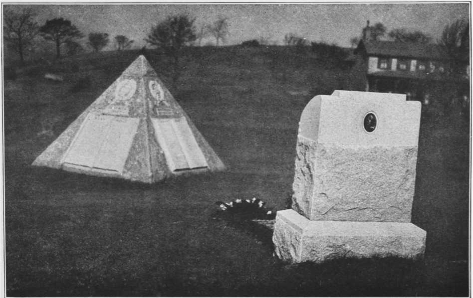The Tomb of a King
BLANK SIDE
1. Our Father which art in Heaven, hallowed be Thy name. May Thy rule come into my heart more and more, and Thy will be done in my mortal body. Relying on the assistance of Thy promised grace to help in every time of need, through Jesus Christ our Lord, I register this Vow.
2. Daily will I remember at the Throne of Heavenly Grace the general interests of the harvest work, and particularly the share which I myself am privileged to enjoy in that work, and the dear co-laborers at the Watch Tower Office, and everywhere.
3. I vow to still more carefully, if possible, scrutinize my thoughts, and words, and doings, to the intent that I may be the better enabled to serve Thee, and Thy dear flock.
4. I vow to Thee that I will be on the alert to resist everything akin to Spiritism and Occultism, and that, remembering that there are but the two masters, I shall resist these snares in all reasonable ways, as being of the Adversary.
5. I further vow that, with the exceptions below, I will at all times and in all places, conduct myself toward those of the opposite sex in private exactly as I would do with them in public—in the presence of a congregation of the Lord’s people.
6. And so far as reasonably possible I will avoid being in the same room with any of the opposite sex alone, unless the door to the room stand wide open.
7. Exceptions in the case of Brethren—wife, children, mother and natural sisters; in the case of Sisters—husband, children, father and natural brothers.
My Earliest Thought I desire, Shall be: “What shall I render unto the Lord for all his benefits toward me: I will take the cup of salvation and call upon the name of the Lord (for grace to help, I will pay my Vows unto the Most High.”—Psa. 116:12-14
Remembering the Divine call, “Gather My Saints together unto Me; those that have made a covenant with me by sacrifice” (Psa. 50:5), I resolve that by the Lord’s assisting grace I will today, as a saint of God fulfill my Vows, continuing the work of sacrificing the flesh and its interests, that I may attain unto the Heavenly inheritance in joint-heirship with my Redeemer.
I will strive to be simple and sincere toward all.
I will not seek to please and honor self, but the Lord.
I will be careful to honor the Lord with my lips, that my words may be unctuous and blessed to all.
I will seek to be faithful to the Lord, the Truth, the Brethren and all with whom I have to do, not only in great matters, but also in the little things of life.
Trusting myself to Divine care and the Providential overruling of all my interests for my highest welfare, I will seek not only to be pure in heart, but to repel all anxiety, all discontent, all discouragement.
I will neither murmur nor repine at what the Lord’s providence may permit, because “Faith can firmly trust Him come what may.”—Pastor Russell.
Softly, O softly, the years have swept by thee, Touching thee gently with tenderest care;
Sorrow and death they have often brought nigh thee, Yet have they left thee but beauty to wear;
Growing old gracefully, Gracefully fair.
Far from the storms that are lashing the ocean, Nearer each day to the pleasant home-light;
Far from the waves that are bit with commotion, Under full sail and the harbor in sight;
Growing old cheerfully, Cheerful and bright.
Past all the winds that were adverse and chilling, Past all the islands that lured thee to rest;
Past all the currents that urged thee unwilling;
Far from thy course to the home of the blest; Growing old peacefully, Peaceful and blest.
Never a feeling of envy and sorrow
When the bright faces of children are seen;
Never a year from the young wouldst thou borrow— Thou dost remember what lieth between: Growing old willingly, Thankful, serene.
Rich in experience that angels might covet;
Rich in a faith that has grown with thy years;
Rich in a love that grew from and above it,
Soothing thy sorrows and hushing thy fears;
Growing old wealthily, Loving and dear.
Hearts at the sound of thy coming are lightened, Ready and willing thy hand to relieve;
Many a face at thy kind word hath brightened— “It is more blessed to give that receive.”
Growing old happily, Ceasing to grieve.
Eyes that grow dim to the earth and its glory
Have a sweet recompense youth cannot know;
Ears that grow dull to the world and its story
Drink in the songs that from Paradise flow;
Growing old graciously
Purer than snow.
Tell me about the Master!
I am weary and worn tonight;
The day lies behind me in shadow, And only the evening is light!
Light with a radiant glory
That lingers about the west.
My poor heart is aweary, aweary, And longs, like a child, for rest.
Tell me about the Master!
Of the hills he in loneliness trod,
When the tears and blood of his anguish Dropped down on Judea’s sod.
For to me life’s seventy mile-stones
But a sorrowful journey mark;
Rough lies the hill country before me, The mountains behind me are dark.
Tell me about the Master!
Of the wrongs he freely forgave;
Of his love and tender compassion,
Of his love that is mighty to save;
For my heart is aweary, aweary,
Of the woes and temptations of life,
Of the error that stalks in the noonday, Of falsehood and malice and strife.
Yet I know that whatever of sorrow
Or pain or temptation befall,
The infinite Master hath suffered, And knoweth and pitieth all.
So tell me the sweet old story,
That falls on each wound like a balm,
And my heart that is bruised and broken Shall grow patient and strong and calm.
“Count me the swords that have come.” “Lord, thousands on thousands are ready.”
“Lo! these are too many, and with them are some Whose hearts and whose hands are not steady.
He whose soul does not burn, Let him take up his tent and return.”
“Count me the swords that remain.”
“Lord, hundreds on hundreds are daring.” “These yet are too many for me to attain
To the Victory I am preparing
Lead them down to the brink
Of the waters of Marah to drink.”
“Lord those who remain are but few,
And the hosts of the foe are appalling, And what can a handful such as we do?”
“When ye hear from beyond, my voice calling, Sound the trump! Hold the light!
Great Midian will melt in your sight!”
It takes great strength to train
To modern service your ancestral brain;
To lift the weight of the unnumbered years Of dead men’s habits, methods and ideas;
To hold that back with one hand, and support With the other the weak steps of new resolve! It takes great strength to bring your life up square With your accepted thought, and hold it there, Resisting the inertia that drags back From new attempts to the old habit’s track.
It is so easy to drift back—to sink— So hard to live abreast of what you think!
It takes great strength to live where you belong, When other people think that you are wrong; People you love, and who love you, and whose Approval is a pleasure you would choose.
To bear this pressure, and succeed at length In living your belief—well, it takes strength— Courage, too. But what does courage mean Save strength to help you face a pain foreseen; Courage to undertake this life-long strain Of setting yourself against your grandsire’s brain; Dangerous risk of walking alone and free, Out of the easy paths that used to be;
And the fierce pain of hurting those we love, When love meets truth, and truth must ride above!
But the best courage man has ever shown, Is daring to cut loose, and think alone. Dark are the unlit chambers of clear space, Where light shines back from no reflecting face. Our sun’s wide glare, our heaven’s shining blue, We owe to fog and dust they fumble through; And our rich wisdom that we treasure so, Shines from a thousand things that we don’t know. But to think new—it takes a courage grim As led Columbus over the world’s rim.
To think—it costs some courage—and to go— Try it—it taxes every power you know.
It takes great love to stir a human heart To live beyond the others, and apart;
A love that is not shallow, is not small;
Is not for one or two, but for them all.
Love that can wound love for its higher need;
Love that can leave love, though the heart may bleed; Love that can lose love, family and friend, Yet steadfastly live, loving to the end.
A love that asks no answer, that can live, Moved by one burning, deathless force—to give!
Love, strength and courage; courage, strength and love— The heroes of all time are built thereof.
Let us take to our hearts a lesson—no lesson can braver be— From the ways of the tapestry weavers on the other side of the sea. Above their heads the pattern hangs; they study it with care; The while their fingers deftly work, their eyes are fastened there.
They tell this curious thing, besides, of the patient, plodding weaver: He works on the wrong side evermore, but works for the right side ever. It is only when the weaving stops, and the web is loosed and turned, That he sees his real handiwork—that his marvelous skill is learned.
Ah! the sight of its delicate beauty, how it pays him for all his cost!
No rarer, daintier work than his was ever done by the frost.
Then the master bringeth him golden hire, and giveth him praise as well; And how happy the heart of the weaver is, no tongue but his own can tell.
The years of man are the looms of God, let down from the place of the sun, Wherein we are weaving always, till the mystic web is done— Weaving blindly, but weaving sure, each for himself his fate.
We may not see how the right side looks, we can only weave and wait.
But looking above for the pattern, no weaver need have fear.
Only let him look clear into heaven—the perfect pattern there. If he keeps the face of our Saviour forever and always in sight, His toil shall be sweeter than honey, his weaving is sure to be right.
And when his task is ended, and the web is turned and shown, He shall hear the voice of the Master, who shall say to him, “Well done!” Since in copying thus the pattern, he had laid his own will down;
And God for his wages shall give him, not coin, but a glorious crown.
BLANK SIDE
ADMONITIONS PAGE
Avoid unkind references to Ministers
Awake to the trial of the hour
Conscience not to be yielded to another
Courage and persistence required
Disadvantage of Theological training
Encourage all to loyalty to the Lord
Enquire as to whether the friends
Family required to be in Dining Room
Getting out something new is dangerous
Justice must precede love in recognition
Lord will not accept undeveloped sprouts for the kingdom
Necessity of applying principles in daily lives
New Mind must regulate New Creature
Pointed to God’s Son as our Example
Positive turning to the Lord necessary
Prayer essential to spiritual growth
Proprieties of outward conduct
Ruling our appetites and impulses
Saint Paul’s advice to Timothy good for all
Satan of ten makes use of a weaker brother
Six Volumes, continuous reading necessary
Spiritual pestilence should be
Stickler for promptness and the lesson
Strong Characters being sought
Sturdy trees of righteousness sought
We fear for those who neglect prayer
APPRECIATION
“Bill Arp” knew light from darkness
Mary’s costly alabaster box was inexpensive
“She hath done what she could”
Sorrow touched the Heavenly Courts
The gratitude of Mary of Magdala
“They all forsook him and fled”
Those who knew him best loved him most
’Tis well to draw the veil over some things
BARBOUR, N. H.
Never filled the office of “that servant”
“The Three Worlds” issued jointly
Time prophecies received through
BEGINNING HARVEST WORK
New adherents to Working Force
BETHEL SERVICE
All the “Family” required to be in D. R. on time
Discussion of Scriptural Questions
Its Sanctifying Influence abides
Master of Tabernacle Shadows shown
“CHANNELLITES”
A thought applied not in a complimentary sense
CHARACTER
Amenities of Polite Society not the Standard
Character Sketch by Prof. Dahl
Different, Character and reputation
Example important help to others
Gentleness, marked characteristic of
Justice must precede love in recognition
Line upon line, precept upon precept
Little honesty, little character
Undeveloped sprouts not acceptable
CHARACTERISTICS
A born diplomat; made you thankful for no, when
A charitable, determined reformer
Adapted to his own use the knowledge of others
A faithful, devoted shepherd, guarding the sheep
A Man of clear and positive convictions
A most delightful conversationalist
“Are you consecrated?” a stock question
“Behold the man!” was true of Pastor Russell
Benevolence a leading characteristic
Being faithful he exacted faithfulness of his
Carried with him an air of sanctity
Characteristics similar to Edison
Claimed no special revelation from God
Continuous reading of Volumes necessary
“Don’t give me away, Brethren”
Firmness and justice of his convictions
Gentleness marked in developed Christian character
“Give my love to all,” universal message
Hammered Satan’s lie till it went into Second Death
His courage and endurance amazing
His habit in all things emphasized by
His utterances sparks that kindle fire in souls
How he discerned the Lord’s will
How he laid down the fragments of a once vigorous
How he met and conversed with strangers
How he once comforted a brother in perplexity
How he won over an audience of 4,000 hostile Jews
“Immortal till my work is finished”
“Impress upon all the importance of”
Innate goodness sensed by all in his
Kept close accounts with the Lord
Loving Kindness outstanding greatness
Loyalty to the Lord encouraged
Many timid ones speechless in his presence
Never attempted to conserve strength
Never known to murmur at what the
Never sacrificed his simple dignity
Never took a vacation in 42 years
Never took an important step without first
No human being could sway his mind
Others never asked to do what he was
“Pardon me for sitting down, please”
Possessed intuitive quality of mind
Prime object in life to honor Jehovah
Under such a mentor souls grow
Urged daily use of “Heavenly Manna”
Was never wanting where duty called
CHRIST JESUS
“Are you a stranger in these parts?”
Crucifixion of the World’s Redeemer
Difference seen between the MAN and the One who
Finally in the hands of sinful men
He that is not for the Ransom is against it
“His blood be upon us and on our children”
His life shown in the Grand Gallery
Humanity of Jesus—the Divinity of Christ
Jesus and the two Disciples walk to Emmaus
Loving and Loyal acts of Joseph and Nicodemus
Mary Magdalene’s gratitude shown in sorrow
“Preach Christ”—not Brother Russell
Staggering under the weight of the Cross
Stampede from His Doctrines to be expected
The Sun of Heaven veiled from earth
Title, Christ, not used once at Jewish M. M
CHURCH, CHRISTIAN
Can it be possible that all Bible students are right in
Can it be possible that all Bible students are wrong in
Chosen and polished in present age
Christian graces are from the heart
How God reckons us as overcomers
Last Members shall not “sleep”
Light breaking through the clouds
Shadows of Tabernacle revealed
Taught the true meaning of the term Christian
Theological Seminaries teach confusion
Wrestling with the Lord regarding Types
COLPORTEUR SERVICE
Consecrated men and women employed
Esteemed most, because most self-sacrificing
Every city, town, village and hamlet covered
Found to be most efficient way to
Much credit due this class of co-laborers
The branch of Work nearest his heart
CONSCIENCE AND CONVICTION
A committee in charge at Headquarters
A fabulous sum once offered for his counsel
“After my decease, to be conducted according to my wishes”
A person of positive conviction
Asked continually for Divine guidance
Conscience must never be violated
Conviction that every moment was precious
Every dollar of his private fortune used in Lord’s service
Human arguments and reasonings could not change his
Lack of conscience shown when he was compelled to walk
Liberality with the Lord enjoined
No human being could sway his mind
“She hath done what she could”
The Lord could change him easily
We are not to follow our own course
Yielding conscience to another should never be done
CONSECRATION
A Christian will do all the good he can
A definite covenant must be made with God
Air of sanctity in Bethel Dining Room
Consecrated all to the Lord’s service
Followed Christ consistently to the end
Follow Principles closely in daily life
Labors devoted to magnifying Jehovah’s name
Notable example of the lowly Nazarene
Render to God the things that are God’s
Right condition of heart pre-requisite
Should never depart from Principle
Temptations call us away from sacrifice
Though consecrated, fell a prey to infidelity
True child will walk closely with God
Who shall ascend into the hill of the Lord
Whole life built line upon line
CONTRIBUTIONS
“Depend on unsolicited contributions”
How the money came into the Tract Fund
No money ever solicited in any sense
Prohibited collections at all meetings
Several hundred Pounds Sterling Landed in
“Where does the money come from”
Why the preachers were puzzled
$500.00 in a little wooden box, under 2$ stamp
$1,000.00 Check once mistaken for a “question”
$6,500.00 soon followed from same source
$5,000.00 check with brief note
$2,700.00 came in sealed envelope at Convention
$162,000.00 “Trust Fund” left in “secret place”
CONVENTIONS
A wonderful “Convention Testimony”
Dallas, Texas, his last Convention on earth
First Bible Students’ Convention Picture
How money was received at Conventions
Met with “Assembly First-Borns” October 31, 1916
DEPOSITARY, SECRET
Brother Russell’s integrity never in question
Safe-guarding savings a troublesome question
“Secret place” revealed in 1918
The Society became a Depositary for “Funds”
“Trust Fund” equal to 1/5 of all such “Deposits”
$162,000.00 in this “Trust Fund”
DEVELOPMENT HARVEST WORK
At first things were cloudy and mixed
Believed as Gospel Truth error up to
Distinction of natures not seen at beginning
First Volume evolved from Food for
Had conference with prominent brethren
Immature views in first writings
Natures, distinction recognized
Old edition “Day Dawn” not recommended
Repudiation of Christ’s sacrifice
Shadows of Tabernacle revealed
“Three Worlds” not recommended
Wrestled with the Lord regarding Types
DEVELOPMENT NEW CREATURE
Decide nothing without consulting the Lord
Every stumbling deceived one used by Satan
God to some the “Sun of Righteousness”
Guard against Spiritual pestilence
Human graces may be cultivated without
If fully consecrated we are bound to the Lord
If there is pride, there is danger
Inward graces also to be cultivated
Lack of L-O-V-E the grave danger
New Mind regulates New Creature
Prayer essential to Spiritual growth
The outward man should be governed
Uses of polite society may be only a veneer
We are not to follow our own ways
We fear for those who neglect prayer
DOCTRINES
“Coming” and “Presence” clarified in 1876
Chosen, chiseled and perfected in present age
Difference between the man Christ Jesus and
First saw the privilege of Joint-heirship
First to emphasize man’s mortality
Fundamental error of Christendom exposed
How he saw the logic of Restitution
Justification and sanctification made clear
Ransom and Restitution seen in 1872
“Sleep” and “die” seen to be different
What the Scriptures taught him about the Church
DRAMA OF CREATION, PHOTO-
A master of pure, expressive English, always
A deaf woman “converted” by seeing Photo-Drama
Beauty of Moving Pictures could not be fittingly
Blessings and trials go hand in hand
Cost to Classes alone estimated at $200,000.00
Enough mistakes made to keep us all humble and
Even now we stand all astonished at conception
First exhibition in January, 1914
First expense production of Films and Slides
Hand-painted Films and Slides by
Herein he surpassed all previous endeavors
How the Drama was received in London
Illustrated pictures from dawn of creation
In Lectures supreme effort reached
Lectures marvels of conciseness and comprehensiveness
Moving pictures most beautiful ever seen
One hundred and twenty people employed in the field
Only a great master could produce such results
Only favorable criticism admissible
Photo-Drama Lectures forceful evidence
Real start made in April, 1914
Recognized as a master of constructive English
Said to have cost more than a million dollars
Several hundred Pounds Sterling handed in
Some of the difficulties encountered........................ 126,
Supreme achievement of whole endeavor
The Lord’s Prayer the Divine Standard
The multum in parvo of all expressions
Truth people equally blessed with the public
Various hindrances encountered
We stood all astonished with wonder
Why the Enterprise might never have been undertaken
ECONOMIST
Jehovah an Economist of time and substance
Many need to reconstruct their ideas of economy
Mary’s Alabaster box inexpensive
Penuriousness with the Lord expensive
The lesson given us by our Lord
This God-like quality a characteristic of
We are to keep close accounts with God
When he went into the market to buy he
ENEMIES
Dr. J. Wilbur Chapman thought to the point
Experiences parallelled those of Jesus in some respects
Ignorance cause of much of the Church difficulties
Why called “Russellites” ................................. 139,
ESTEEM, HONOR, WORSHIP
A well balanced mind not swayed to extremes
Distinctions to be observed in meaning of term
Emotion, respect, esteem, honor, worship
Emotion said of persons generally
Reverence outward expression of revere
We venerate a person because of
We can honor a man without worshipping him
FAITH
Followers of the Lord have the Bible as
His donning the Roman Toga significant
Insisted that it was God’s “due time” to reveal His
Not to listen to “whispering angels”
“The Lord permitted us to make out”
“What God sees to be wise, should be”
Why his mind and heart were satisfied
FALLING AWAY
“Fire shall try every man’s work”
First siftings began over attempt to force “New Light”
How a bright Brother stumbled into darkness
Let the over-confident take heed
Many have failed and are failing to make use of “Keys”
Mr. Barber’s attempt to overthrow the Ransom
Repudiation of Christ’s sacrifice
Siftings then began to continue until all are proved
The Doctrine of another way of Salvation spreading
The question not, who may fall, but who will stand
FOREIGN MISSIONS INVESTIGATED
Appointment of Investigation Committee
Conventioneers at Washington endorsed step
Preached again to Jews in Jerusalem
FUNERAL SERVICES OF A KING
A fitting tribute to the Memory of a King
“Blessed be the tie that binds”
Broken pillar of flowers significant
Five hundred gathered on hillside
Floral display one of the finest ever seen
Flowers in profusion everywhere
From near and far the friends came
Funeral cortege of 101 automobiles
Rostrum too small to hold the floral designs
Seventeen Brethren served in New York
Surpassed all power of description
The Casket encased in solid cement, why
Temple quite inadequate for the purpose
The scenes described poetically
Thirty-four years regularly elected Pastor
Two services held simultaneously
While bier rested upon supports
Why the remains should lie near the
Words of Hymn No. 98 sung at close
GREAT PYRAMID
Corroborative testimony of God’s “Stone Witness”
Diagram of passages and chambers
Dr. John Edgar’s critical test
His amazing interpretation in 1890
His findings read like a piece of
Melchizedek probable builder 2170 B.C
Prof. C. Piazza Smyth’s corroborative testimony
HARVEST WORK, PROGRESSION
Accepted doctrines taught him up to
Amazed at harmony of Bible Testimony
Assistance gratefully acknowledged
Called a meeting of all the Ministers in
Confesses indebtedness to Adventists
Content to wait for the Lord’s exaltation
Determined upon curtailing business in 1876
Devoted his fortune ($350,000.00) to the Work
Did the Truth come through visions
Difference seen between our Lord as the
Evidence satisfied him that the Lord is
First publication “The Three Worlds”
First Volunteer Work cost $40,000.00
“Food for Thinking Christians” and Tabernacle Types
“Herald of the Morning” by N. H. Barbour
How Tabernacle Types were revealed
Ideas of Restitution crude at first
In 1881 Mr. Barbour still fought the Ransom
Joint-heirship first seen in 1881
“Let him who would be great among”
Lord’s Presence discerned in 1876
Needful that the history be given
Object of our Lord’s return seen
People in general not close reasoners
Prophetic time opened up in 1876
Revived publication of the Herald in 1876
Saw at that time necessity of reading
Saw that the Church was called to
Shifting sands of human theories dangerous
Siftings then begun (1878) continued ever since
Spring of 1878 proved far from a blessing to
The Manner of our Lord’s Return
Unlearning many long cherished errors
Utter shipwreck of faith threatened
Zion’s Watch Tower started in July, 1879
HEAVENLY MANNA “Ascertain if the Heavenly Manna is used daily”
Manna Text always read at Bethel Table
Next, questions would be called for on Text
Questions required to be orderly
These would be passed to different brethren
Thrown open to “every one” finally
When all comments in Brother Russell would sum up
HIS LAST PILGRIMAGE
After the “ebb of life” set in we got busy
Always gave thanks even in public places
Anticipated at the end of his journey
Bethel, last impressive prayer there
Came into the city on foot—but why
Compelled to walk several miles in Chicago
“Changes trains” for his Eternal home
Dallas, Texas, and the hardships
Death no doubt hastened by neglect
Delayed a day on train enroute to Los Angeles
Experiences quite enough to exhaust a strong man’s
Fatherly advice to the “family”
“Feasted” on peanut butter sandwiches
His physical ailments more aggravated
His traveling companions fell down on
Hotels all full, so taken to a lodging house
How he discerned the Lord’s will
I bid you all goodbye—October 29th, 1916
Ignorance, indifference or neglect
In great distress talked for 45 minutes
Intense suffering with his head and
Kept close account with the Lord
Last service this side the veil
Left platform three times on account of
“Lost” valise was received at Dallas
Our slowness to receive impressions
Sad to have to admit unpleasant truths
Six hours Discussing, Monday, October 23
“She bath done what she could”
The break was at last forced upon us
The end of his pilgrimage reached
The last entertainment provided by human hands
The Lord permitted us to make out
The tender-hearted could not bear the strain
’Tis well to draw the veil over some things
HIS MONEY INSTINCT
Ability to stretch out a dollar and so
A far-seeing economist ................................... 160,
An evidence of his “money instinct”
A secret “Trust Fund” formed, and why
Carried money at night to another city for safety
Deposits made; receipts issued for same
Deposits subject to refund on call
Disclosure of “Secret Coal Bin” winter 1918 saved family from
He knew why Financiers tremble
How he produced S. S. at such low figures
“Secret” Depositary revealed when Brethren were convicted
Wall street “interests” once tried to buy his counsel in
$162,000.00 in Gold, Currency and Government Bonds” found
HIS ORDINATION
John Wesley made something superior to himself
Ordinations two-fold, one of God and one
Religious legerdemain and the results
The work of “Reverend” Doctors
HIS TEACHINGS
A God of torment to be feared but not loved
All should awake to trials of hour
All the Creeds of Christendom conflicting
Christian graces are from within
Courage, fortitude and persistence necessary
Every true child of God has his guardian
Greatest religious teacher since St. Paul
Guardian angels—how and for whom they
His clear vision of God’s love and justice
His teachings a revival of the Doctrines once
“Keys to the Scriptures” given us to use
Kind of characters Lord is seeking
Made no claim of any special revelation
Magnified Jehovah’s name always
Ministering angels—what they are
New Creatures have much to overcome
Outward smoothness not graces of spirit
Principle of Justice the foundation
Psalmist tells us who shall escape
Shows how God recognizes us as overcomers
Tabulation that well expresses his
Taught the true meaning of term Christian
The Fall has depraved the appetites of all mankind
Turned the Light of the 20th Century upon
Versatile talents applied to one end
Warning against “whispering angels”
Why many have failed and are failing
HIPPODROME MEETING
An event and picture calling for the matchless powers of
An imaginary Garden of Eden suddenly burst
Designer and Landscape Gardener Bro. A. N. Pierson
Exclamations of delighted surprise
People veritably held their breath when the
To few in a lifetime is it given to behold
$50,000.00 worth of flowers, plants, shrubs, etc
JEHOVAH
Magnified His name in all things
JEWISH MASS MEETING
A most wonderful demonstration in 1910
At first met with cold silence
At the finish hailed with loud acclaim
“Breathing” orthodox Jews present in large
Came to combat, not to accept teaching
How an audience of 4,000 opposing Jews was won over
Leading Literary men and Rabbis present
Report by leading Metropolitan Daily
Zionist National Hymn sung at conclusion
LAST THINGS
Last Table Talk in Bethel Dining Room
Last impressive prayer with the “Family”
Last service this side the veil
Last hours shrouded in mystery
LECTURE BUREAU
Auxiliary Field Force of 700 employed
Established, World-wide Bureau of 70
Realized people were “Famishing for knowledge”
MAN OF TEN TALENTS
A fabulous sum once offered for his counsel
A new prophet has arisen in Israel
Character and volume of his work almost
Did the most of his traveling at night
Evidence in the Photo-Drama Lectures
His amazing interpretation of Great Pyramid
How he managed to produce Books at such low
How he won over an opposing Jewish audience of 4,000
Incomprehensible—most extraordinary
Justice of his conclusions not in question
No other writer in all history ever lived to see his
Past-Master in epigrammatic construction of
Probably never equalled by that of any other human
Quickness and power of his intellect
“Secret Coal Bin” disclosed in “troublous times”
“Secret Depositary” revealed containing $162,000.00
Tabulations of his writings and their
Versatile Powers ......................................... 205-211
What monument did he rear to cause
MISCELLANEOUS
A lad of seventeen his eyes anointed
Articles of Incorporation .................................. 194-197
At last ! Behold the tree blossoms
A tribute worth reading ................................... 187-194
Body worn out three years before
Case pronounced by experts strangest known
Charter of Society analyzed ................................ 198-203
It was stated his heart ceased beating for five seconds
Once said at Bethel Table that in
“Russellites” like “Channellites” applied approbiously
Profound reasoner and sharp critic
Some years traveled 50,000 miles
The Watchman had something to watch
Traveled more than a million miles in his pilgrimage
Was a sufferer from physical ailments for 50 years
When absent arranged that a Committee
NEWSPAPER WORK
Estimated that one billion people served in 1913
How he prepared his sermons for
Inaugurated the branch on large scale
In circulation sermons exceeded all the leading
Preached to 15 millions weekly
Unconsecrated channels drafted
When consecrated instruments could not
4,000 Papers and Magazines used
PASTOR RUSSELL—(His Education)
A close and devout student of the Bible
An epigrammatic writer of the first school
A scholar in the true sense of the term
Convincing both as writer and platform speaker
Evidence lacking that his conclusions were ever
Had more than 30 translations of the Bible
He used the gains of Hebrew and Greek scholars
His style not cumbersome, but elegant and
In the “School of Christ” till his death
Knowledge of Biblical Hebrew and Greek
Many passages rank with Addison and others
No proof given that he ever misstated a
Not a few scholars are self-made
Remarkable ability to condense much into a few words
“PASTOR RUSSELL IS DEAD”
Bible Students both right and wrong, why
How the wish often becomes father to the thought
Humans slow to grasp unpleasant truths
Immortal till his work was finished
Lesson of October 31st, 1916, fast fading away
Nothing could have come as a greater shock
Our sense for the time seemed paralyzed
Promise of Seventh Volume misled us
Taking too much for granted common fault
“They shall yet know a Prophet has been”
Why have Bible Students so soon forgotten
PERSONALITY
An Episcopalian woman’s opinion
A powerful, yet charming voice, that filled the great
A reminiscence of much interest
Grace of movement pleasing to the eye
He taught and lived promptness
How prejudice broke under weight of facts
Kindest human being I ever knew
Many wonderful things about this wonderful man
“Never did a more unconventional thing”
No pen-picture could do the subject full justice
“Pastor Russell, tall, erect and white-bearded”
Physical appearance most pleasing
Respectful to all, so commanded respect from all
The attempt may prove inspiring
PILGRIMS
A part of your shepherding work
Encourages all to be loyal to the Lord
Impress upon all importance daily reading Volumes
Inquire whether friends made daily use Heavenly Manna
Let the Gospel’s mighty power do the work
Look after the sick—carry them crumbs of comfort
One of the most important services
Pilgrims comforted and encouraged by
Pilgrims my personal representatives
Pilgrims repeatedly enjoined against preaching Brother Russell
Took a special interest in the Pilgrims
PRINCIPLES
Brethren may be grieved by our efforts to
Developing character along right lines
Little honesty means little character
The Bible shows we shall finally have
Trifles have an important bearing
Violations of principles injurious
We need to learn what justice means
We should never depart from principle
RANSOM
A regular stampede from the Cross anticipated
Center of all hope is the Ransom
Doctrine of another way spreading
He that is not for the Ransom is against it
How Restitution follows a logical sequence
On all matters Truth is a Shield and Buckler
One full opportunity granted all
Result of Jesus “tasting death for every man”
RUSSELL, CHARLES TAZE
Chosen from birth for the office he filled
Discovered harmony of the Bible at age 24
Endured physical afflictions for 50 years
First Volunteer work, cost $40,000.00
Food for Thinking Christians broadcasted
Fortune possessed at twenty-five
His own words ; claimed no supernatural wisdom
How the true light broke through the clouds
Importance of Time Prophecies as used
Intellect, quickness and power of
Irresistible, his wit and humor
“THAT SERVANT”
Comparison and analyses of Texts .......................... 144-150
“Evil servant,” no proof God intended one
Did “that Servant” have a predecessor
Does the little word “if” mean anything
His great Work, “giving meat” to A-L-L the household
Is “will” a word of doubtful meaning
No one else ever brought forth such “meat” for all
No proof whatever that a successor ever intended
“That Servant” stood in a class by himself
“The meat” to be in harmony with
Was there, is there, or will there be an “Evil Servant”
Watch Tower designed to carry, not produce
Who brought “meat” for all the household
VOLUNTEER WORK
A form of service in which all may
Approximately 50 Millions annually distributed
Astounding figures regarding the
Best means for most people to serve
Have wondered what would be the limit
Our two little Papers have gone far and wide
People’s Pulpit and Bible Students’ Monthly
The Truth may finally be crushed to the earth
This year’s figures astounding
World-Wide Witness to be given
WHAT HE WILLED
Should be done in event of his death—
That, “After my decease all publications should be conducted according to
That, “Editorial Committee of five should control
That, “Editorial Committee shall write for no other publication
That, “Full Editorial Committee at all times—no issue without
That, “No other publications shall be published
That, “Object clearly stated in Will
That, “Society is pledged to me to carry out my wishes”
“We shall be satisfied when we awake in His likeness”
“I exhort all to Brotherly kindness” “C. T. Russell.”
WORKED WHILE DYING
Could not drink glass of water without spilling
Feebleness became more pronounced as
“God bless you,” his last benediction
His last service this side the veil
His very presence spoke volumes
Jesus, it is said, died of a broken heart
Many friends proved unworthy of his
Promised the Lord he would never murmur
Set about his arduous tasks calmly
The most solemn of all services his last
This giant among men, while bordering upon
Trials came thicker and faster to the last
With that mighty intellect he struggled with
WORLD-WIDE NEWSPAPER CAMPAIGN
Beginning of Newspaper work small
Estimated that he preached weekly to 15 to 20 millions
“God able of stones to raise up children unto Abraham”
God purposed “A shout” should be given
Great Newspaper Campaign planned
His Sermons had a wider circulation than the writings
Newspaper interviewers were “wise-hearted”
Newspaper Syndicate, formed and purpose
The “unsophisticated” young Brother
“Where does the money come from?”—a stock question
Why they do not understand to this day
Why unconsecrated instruments were used
4,000 Newspapers and Magazines drafted
[332]